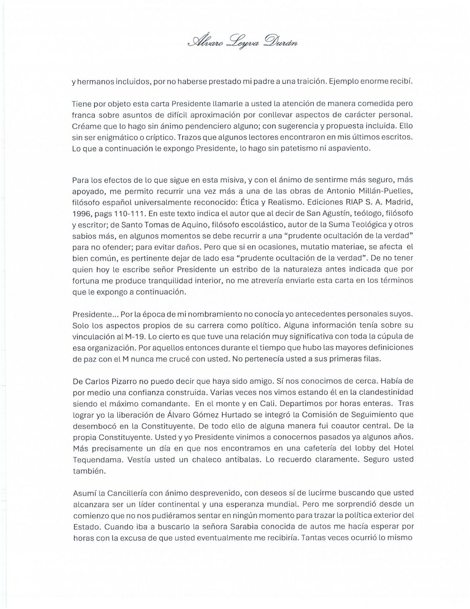
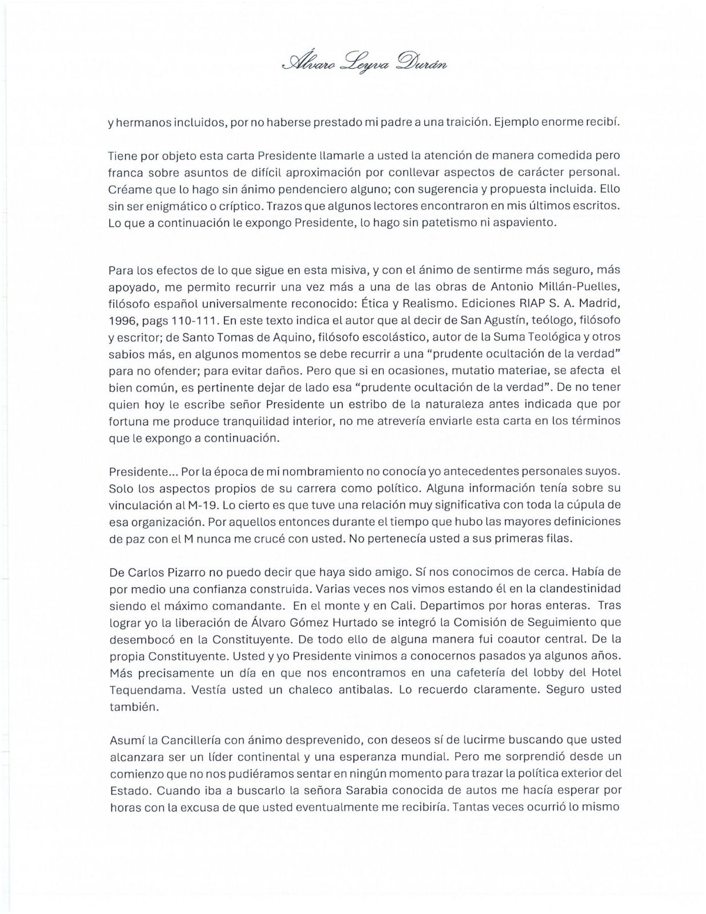
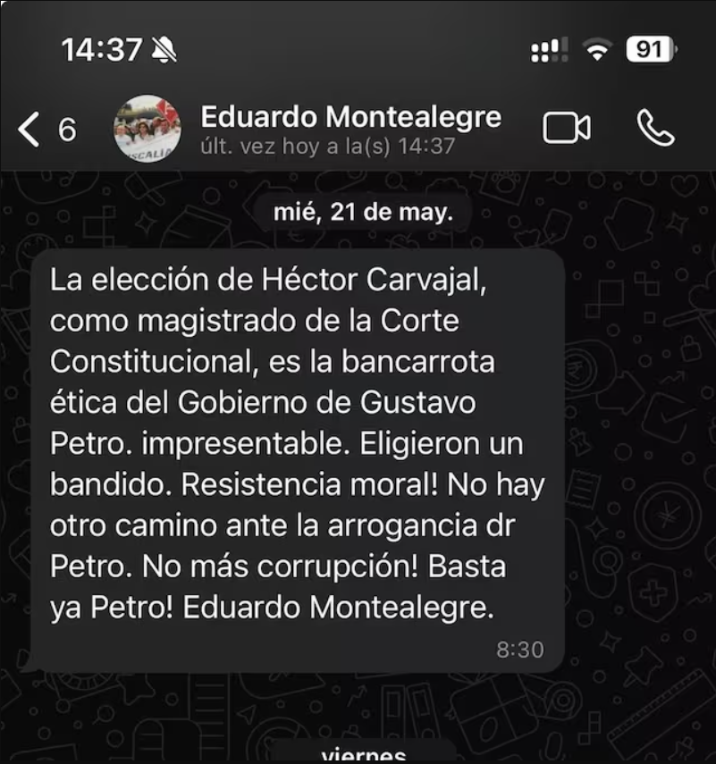
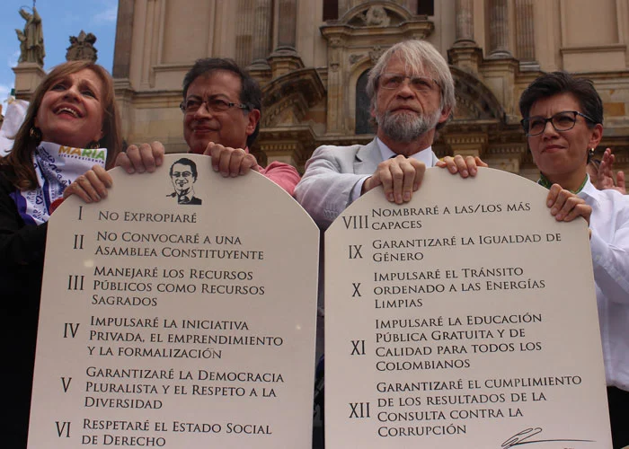
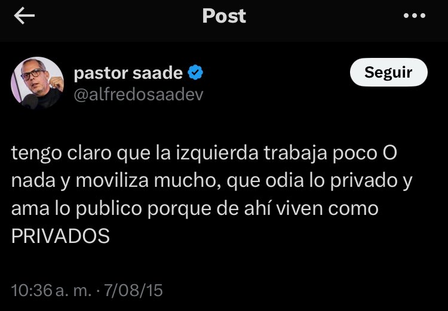
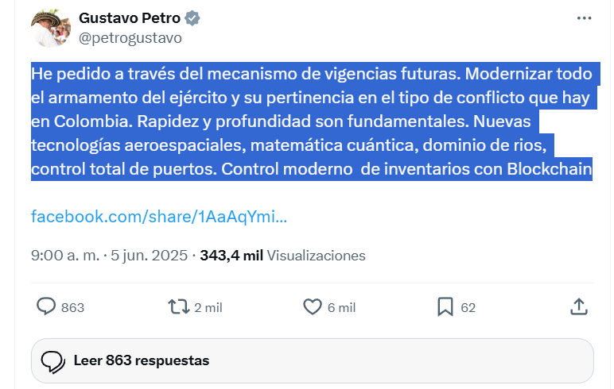
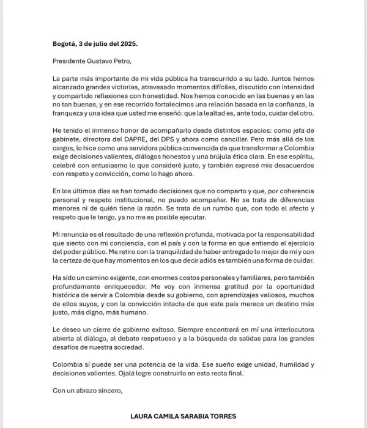

El Movimiento 19 de Abril,conocido por su acrónimo M-19 o simplemente «El Eme»,fue una organización guerrillera urbana colombiana, surgida después de las irregularidades en las elecciones presidenciales del 19 de abril de 1970, que dieron como ganador al oficialista del Frente Nacional Misael Pastrana Borrero sobre el candidato opositor Gustavo Rojas Pinilla, y que derivaron de un supuesto fraude electoral orquestado por el alto gobierno junto a los partidos tradicionales Fue fundado en 1973, por comunistas, exguerrilleros de las Fuerzas Armadas Revolucionarias de Colombia (FARC) y miembros de la Alianza Nacional Popular (ANAPO),entre otros Las ideologías del movimiento guerrillero fueron inspiradas por el marxismo,la revolución cubana y se movieron hacia el bolivarianismo,castrismo, nacionalismo y el socialismo democrático El movimiento participó en el Conflicto armado interno de Colombia desde enero de 1974 hasta su desmovilización en marzo de 1990. El grupo se especializó como guerrilla urbana, y en los llamados'golpes de opinión' En enero de 1974 pagaron pautas publicitarias días antes de darse a conocer a la opinión pública mediante una campaña de intriga(también conocida como campaña de prelanzamiento, es un formato publicitario que funciona como anticipo de una campaña, ofreciendo solo información fragmentaria), por lo que despertaron la curiosidad de la población en general. Entre sus acciones armadas más conocidas fueron: el Robo de la espada de Bolívar con el que se dieron a conocer en 1974,el Robo de armas del Cantón Norte en 1979, la Toma de la Embajada de la República Dominicana en 1980,el hundimiento del barco El Karina, el secuestro al avión de Aeropesca y el secuestro de Martha Nieves Ochoa en 1981, la Batalla de Yarumales en 1984, la Toma del Palacio de Justicia en 1985 (que marcó un punto de inflexión en su historia,al ser tomado por este grupo y la retoma por la Fuerza Pública terminó con el incendio del edificio, la muerte de los magistrados de la Corte Suprema de Justicia, de varios guerrilleros, militares y civiles, y la desaparición de 11 personas), el Batallón América en 1986 (con el Movimiento Armado Quintín Lame Alfaro Vive Carajo de Ecuador y el Movimiento Revolucionario Tupac Amaru de Perú),, la conformación de la Coordinadora Guerrillera Simón Bolívar en 1987 y realizaron varios secuestros a políticos, diplomáticos, empresarios y periodistas. Participaron en dos acuerdos de paz: los Acuerdos de Corinto, Hobo y Medellín en 1984, y el proceso de paz que finalizó con el Acuerdo de paz entre el gobierno colombiano y el M-19 el 8 de marzo de 1990, se convirtió en un movimiento político conocido como Alianza Democrática M-19 (AD-M-19), fue uno de las fuerzas políticas más importantes en la Asamblea Nacional Constituyente de 1991. El éxito cosechado en éstas negociaciones de paz también ha sido un referente en la historia de Colombia, los miembros del M-19 le pidieron perdón al pueblo colombiano y entraron a la vida civil. El movimiento Alianza Democrática M-19 desapareció oficialmente en la década de 2000, cuando su base social se disolvió, al pasar algunos de sus miembros a otros movimientos políticos, y en otros casos, fundando nuevas agrupaciones políticas, tales como el Polo Democrático Alternativo con Antonio Navarro (derivado de la ANAPO), la Colombia Humana, liderada por el actual presidente de Colombia Gustavo Petro, y el cambio o unión a otros partidos políticos de algunos de sus líderes, como por ejemplo Everth Bustamante al unirse al partido Centro Democrático.
El 17 de enero de 1974 publicaron los últimos avisos que anunciaban “ya llega M-19”—publicado en la portada de El Tiempo—, junto a otros avisos similares en las páginas interiores. El comandante de la operación del robo de la espada de Bolívar fue Álvaro Fayad alias El Turco. El robo comenzó cuando los visitantes de la Quinta de Bolívar abandonaron el lugar porque iba a cerrar a las 5:00 PM Los cuatro guerrilleros que entraron a la Quinta intimidaron a los vigilantes de la casa-museo, rompieron el candado de la habitación que daba a la de Manuelita Sáenz, donde se encontraba guardada la espada. Álvaro Fayad, disfrazado con una ruana, rompe la urna donde estaba la espada y la toma en sus manos, mientras los otros tres guerrilleros pintan las paredes con la letra y números "M-19" y dejan panfletos en el lugar.Los guerrilleros escaparon en un vehículo Renault 6.El grupo se adjudicó el robo de la espada en un comunicado. Ese mismo día, el M-19 realizó la toma del Concejo de Bogotá, dirigida por Gustavo Arias Londoño, con otro grupo de cinco guerrilleros disfrazado de mayor del Ejército Nacional, ingresaron a las 10 de la noche, amordazaron a los guardias y lanzaron consignas de propaganda, pintando las paredes.
"Bolívar, tu espada vuelve a la lucha. Con el pueblo, con las armas, al poder" "Bolívar no ha muerto. Su espada rompe las telarañas del museo y se lanza a los combates del presente. Pasa a nuestras manos y apunta ahora contra los explotadores del pueblo".
El Robo de armas del Cantón Norte, llamado por el M-19 "Operación Ballena Azul", fue un asalto armado por parte del grupo guerrillero colombiano Movimiento 19 de abril (M-19) a las instalaciones del Cantón Norte del Ejército Nacional de Colombia en Bogotá el 31 de diciembre de 1978. Por órdenes de Jaime Bateman Cayón,
un comando de guerrilleros del M-19 penetraron las instalaciones militares y sustrajeron una cuantiosa cantidad de armas, que se calcula alcanzaban las 5 mil unidades El M-19 comenzó a desarrollar el asalto al Cantón Norte desde 1975, fecha en que secuestraron al empresario estadounidense Donald Cooper, gerente de Almacenes Sears. Con el dinero pagado por el rescate, el 26 de octubre de 1976, los guerrilleros del M-19 compraron una comercializadora de artículos médicos que llamaron "Produmédicos" y constituyeron legalmente. Con dicho negocio financiaban sus gastos y obtenían liquidez, además de que lograron hacer contactos de confianza en Sanidad Militar, rama del Ejército Nacional encargada de distribuir productos médicos La esposa de Rafael Arteaga,trabajaba como la representante legal. Las oficinas estuvieron localizadas en la carrera 7a.#13-65.En septiembre de 1978, Arteaga fue contactado por Jaime Bateman Cayón para presentarle su idea de robar el depósito de armas del Cantón Norte. Arteaga aceptó y según el plan, el 18 de octubre adquirió una casa localizada frente a las instalaciones del Cantón Norte(separados por la carrera séptima),a donde se mudó Arteaga con su esposa y dos hijos. Mientras los Arteaga aparentaban una vida familiar, desde la misma casa, cerca de 40 guerrilleros del M-19 se dedicaron a construir un túnel que pasaba desde la casa, por debajo de la calle, hacia el Cantón Norte. Los insurgentes sacaban las grandes cantidades de tierra en bolsas que transportaban en vehículos y ocultaban el ruido de las máquinas con música a todo volumen. Tras 73 días de excavaciones los guerrilleros se toparon con el piso interior del depósito de armas. En la noche del 30 de diciembre los guerrilleros simularon una fiesta y distrajeron a los soldados, mientras tanto sustrajeron los 10 primeros fusiles. Regresaron por más en la mañana del 31 de diciembre y sacaron 400, hasta la noche del 1 de enero cuando completaron el robo,según datos del Ejército Nacional, llegaron a totalizar unas 5700 armas
La Toma de la embajada de la República Dominicana en Colombia, llamada también "Operación Libertad y Democracia", fue una acción armada del grupo guerrillero colombiano Movimiento 19 de abril (M-19) en la cual se tomó por asalto y ocupó las instalaciones de la Embajada de la República Dominicana en Bogotá. En la acción el M-19 secuestró a 15 diplomáticos de numerosos países que departían en una fiesta conmemorativa de la independencia de la República Dominicana, el 27 de febrero de 1980. El 25 de abril de ese año, secuestradores y secuestrados salieron rumbo a Cuba, donde los rehenes fueron liberados y los guerrilleros permanecieron varios meses
Eran las 12:10 del mediodía. En la Embajada de la República Dominicana en Bogotá se ofrecía una recepción a un numeroso grupo de diplomáticos, para conmemorar la fiesta nacional de ese país. En cuestión de segundos, uno de los aparentemente invitados sacó una pistola y disparó al aire. Su nombre, se sabría después, era Rosemberg Pabón. conocido como Comandante Uno El desconocido para los asistentes anunció que se trataba de un asalto y se identificó a sí mismo como el Comandante Uno. En ese momento, el comando compuesto por 15 guerrilleros tomó la embajada y neutralizó a los invitados presentes. En caso de un ataque armado: "mataremos a dos de los rehenes cada 10 minutos...", amenazó el comandante del asalto En el grupo de secuestrados había 16 diplomáticos de alto rango, entre los que figuraban los embajadores en Colombia de Austria, Brasil, Costa Rica, Egipto, El Salvador, Estados Unidos (Diego Cortes Asencio), Guatemala, Haití, Israel, México (Ricardo Galán), República Dominicana, Suiza, Uruguay, Venezuela y el Nuncio apostólico. El embajador soviético evitó ser secuestrado al salir escasos segundos antes de la entrada de los guerrilleros el m-19 exigio que liberaran de las cárceles a 300 compañeros prisioneros políticos que habían sido arrestados por las autoridades colombianas en el transcurrir del conflicto armado interno en Colombia y sobre todo por la violenta represión en consecuencia del robo de armas, como también exigieron al gobierno que pagara US$ 5 millones de dólares, para liberar a los rehenes

En la mañana del 12 de noviembre de 1981, guerrilleros del M-19 secuestraron a Martha Nieves Ochoa, estudiante de sexto semestre de Economía de la Universidad de Antioquia, y hermana de Jorge Luis, Juan David y Fabio Ochoa, narcotraficantes del Cartel de Medellín. Su secuestro suscitó la creación del grupo Muerte a Secuestradores (MAS), una organización paramilitar financiada por narcotraficantes, ganaderos y terratenientes, para confrontar a las guerrillas. Según la información publicada en el periódico El Colombiano un día después del secuestro, a Nieves se la llevaron de uno de los parqueaderos de la Universidad de Antioquia cuando estaba ingresando a su carro. Tres hombres la abordaron y, en un forcejeo, la metieron a un Renault 12 en el que esperaba un conductor. Augusto Osorno, médico veterinario y desmovilizado del M-19, quien conoció de cerca ese caso, dice que en el secuestro participaron Luis Gabriel Bernal, Guillermo Elvencio Ruiz y John Jairo Restrepo, conocido como el Mono Candelo, que además de pertenecer al M-19, era compañero de Nieves en la Facultad de Economía. La retuvieron en una casa de seguridad que el M-19 tenía en San Javier, barrio del occidente de Medellín, después la trasladaron a La Estrella y, finalmente, la llevaron por una trocha hacia el Eje Cafetero.El periodista y exalcalde de Medellín Alonso Salazar cuenta en su libro No hubo fiesta que en el secuestro también participaron Alberto Turizo y Pablo Catatumbo, ahora desmovilizado de las FARC y senador de la república Según el relato de Salazar, aunque Catatumbo no era integrante del M-19, decidió participar en el secuestro mientras se encontraba de vacaciones en Medellín. Terminaría retenido por el MAS junto a Elvencio Ruiz. Ambos serían la carta de negociación para lograr la liberación de Nieves,y por eso no fueron asesinados, mientras que Restrepo y Turizo sí murieron a manos de esa agrupación conformada por los narcotraficantes. Jaime Arturo Gómez es profesor de la Facultad de Medicina de la Universidad y para la época era estudiante de esa misma dependencia. Conocía a Bernal porque su hermano Horacio había sido amigo de Gómez desde la infancia. Recuerda que días antes, en una visita al apartamento de Bernal, este le pidió su carné de la Universidad para jugar un picadito, “y supongo que eso les dijo a varias personas. Entonces alguno entró con mi carné a la Universidad para hacer ese operativo”,cuenta Gómez. A cambio de la liberación de Martha Nieves, el M-19 pedía 12 millones de dólares a la familia Ochoa. Según Osorno, “Jaime Bateman [máximo comandante de esa guerrilla] se había ideado que había que hacer un gran operativo para denunciar las estructuras del poder en Colombia y entonces se necesitaba una plata con urgencia”.Aunque en un principio la familia Ochoa se negó a pagar el rescate, Martha Nieves fue liberada en Armenia el 16 de febrero de 1982, después de un pago de 1.2 millones de dólares hecho por el Cartel de Medellín, según reveló el periódico El Tiempo en una publicación del 24 de septiembre de 1991, titulada: “Sí se pagó rescate por Martha Nieves Ochoa”.En el libro de Salazar también se cuenta que sus hermanos ya le habían advertido a Martha Nieves Ochoa de los peligros de estudiar en la Universidad. Según Osorno, le habían dicho a ella que mucho cuidado porque en la Universidad de Antioquia, por ser una universidad pública, había mucho guerrillero, mucho comunista y ella no hizo caso”.La parábola de Pablo, libro escrito también por Salazar, narra que cuando Jorge Luis Ochoa se enteró del secuestro de su hermana le contó a Pablo Escobar y este lo tranquilizó porque iban a negociar su liberación. Después, cerca de doscientos hombres que habían sido convocados por Carlos Lehder, Escobar, los Ochoa, los Castaño y otros narcotraficantes se reunieron en el restaurante La Margarita, propiedad de la familia Ochoa, y crearon el grupo MAS para perseguir a los responsables y exigir la liberación de Martha Nieves.Entre sus primeras acciones, el 2 de diciembre de 1981, el MAS lanzó en Cali desde un helicóptero panfletos en los que anunciaba el inicio de la búsqueda de “secuestradores comunes y secuestradores subversivos”. Después, secuestró a 25 personas cercanas a Luis Gabriel Bernal, entre ellas a Horacio, su hermano, y a su esposa, Marta Correa Vásquez, a quien liberaron cuando se encontraba amarrada en el edificio del periódico El Colombiano, en Medellín, con un cartel que la identificaba como secuestradora. Jaime Gómez, Augusto Osorno y Alonso Salazar coinciden en que el MAS fue probablemente el embrión del paramilitarismo en Colombia. Fue, según Gómez, un momento inaugural, porque hasta entonces no se había visto “un movimiento organizado,de la derecha, con los recursos del narcotráfico y cuyo propósito era combatir la izquierda”.Cuenta, además, que en su momento se le criticó a Bernal su falta de visión política, por no haber medido las consecuencias de ese secuestro. Con esa versión coincide Osorno, quien asegura que secuestrar a Martha Nieves Ochoa fue uno de los grandes errores que el M-19 cometió: “Las consecuencias del secuestro de Martha Nieves no se visualizaron. Fue tanto el odio que eso despertó en los paracos que se ensañaron, cuando se liberó a Martha Nieves, contra Luis Gabriel Bernal”. Bernal terminó robando un avión en Cali y viajó a Cuba, después a Suecia, y, cuenta Osorno, fue asesinado a puñaladas por miembros del MAS durante un viaje que realizó a Bogotá.
El M-19 tiene a cuestas una de las tragedias más dolorosas de la historia reciente de Colombia. Esta guerrilla tomó el Palacio de Justicia el 6 de noviembre de 1985, en el centro de Bogotá. Durante dos días, los insurgentes retuvieron a 350 rehenes, entre magistrados, empleados judiciales y visitantes, mientras el edificio ardía en llamas. Tras el operativo militar para retomar el control del edificio murieron 98 personas y 11 más fueron declaradas como desaparecidas.
Unido a el grupo guerrillero del M-19, un grupo guerrillero con una perspectiva bolivariana, socialista y democrática, en esos momentos Colombia se encontraba bajo un régimen de estado de sitio(El estado de sitio es un régimen de excepción que debe ser impuesto por el poder ejecutivoEl estado de sitio representa un concepto equivalente al de estado de guerra, y por ello se dan a las fuerzas armadas facultades preponderantes para tomar medidas en consecuencia, suspendiendo ciertas garantías y derechos constitucionales si fuese necesario. Durante el estado de sitio quedan en suspenso las garantías constitucionales, con mayor o menor extensión.) que avalaba la vigente Constitución de 1886(fue proclamada el 5 de agosto de 1886 en el gobierno de José María Campo Serrano y depuso la Constitución de 1863, que tenía un carácter liberal. Creó un Estado unitario, administrador en el aspecto social y económico, sumamente confesional al considerar la fe católica como religión oficial , estableció el período presidencial en seis años y reemplazó el sistema federal al haber establecido a los departamentos como forma de administración territorial del país.) tras el aparente fraude electoral que le dio la presidencia al candidato del frente nacional Misael Pastrana y dejó fuera a Gustavo Rojas Pinilla(el primer y ultimo dictador de Colombia) y que motivó la fundación del grupo guerrillero Movimiento 19 de abril (M-19). Su alias fue «Aureliano», por el coronel Aureliano Buendía, personaje de la novela Cien años de soledad, del colombiano Gabriel García Márquez.En 1984, con el M-19 en tregua y en conversaciones de paz (Acuerdos de Corinto, Hobo y Medellín), y siendo él concejal de Zipaquirá, hizo pública su militancia en una manifestación en la plaza principal del municipio. Con el M-19, lideró la toma de un terreno para albergar a 400 familias pobres que habían sido desplazadas a la fuerza por los grupos paramilitares, y luego contribuyó a la construcción de lo que sería el barrio Bolívar 83. Posteriormente pasó a la clandestinidad total y se hizo cercano a Carlos Pizarro(unto a Jaime Bateman, Álvaro Fayad, Luis Otero Cifuentes, Vera Grabe, Iván Marino Ospina y otros crean a finales de 1973 el M-19), uno de los principales comandantes del M-19, e insistió con él en la necesidad de una solución política negociada al conflicto armado colombiano y el paso a una Asamblea Constituyente. En octubre de 1985, la tregua cesó. Petro vivía en el barrio Bolívar 83 de Zipaquirá, y el 24 de octubre de 1985, aún en ejercicio de concejal y militante activo del M-19, fue capturado por el Ejército Nacional por porte ilegal de armas, para luego ser torturado durante diez días en los establos de la XIII Brigada y luego condenado por la justicia por conspiración, siendo trasladado a la Cárcel La Modelo de BogotáEn febrero de 1987, Petro fue liberado, y viajó a Santander y a Tolima, donde junto a otros militantes del M-19 como Carlos Pizarro Leongómez, participó en el proceso de paz entre el grupo y el Gobierno de Virgilio Barco Como parte de la cúpula del M-19, y debido a la participación de dicho grupo en la toma del Palacio de Justicia, el Juzgado 30 de Instrucción Criminal Ambulante de Bogotá profirió en 1989 una resolución acusatoria en contra suya y de otros 25 comandantes del grupo por los delitos de rebelión, conspiración y porte de armas. Luego, se corroboró que, durante la toma al palacio, Petro estaba aún en cautiverio,y dicha acusación se anuló tras el proceso de paz realizado con el Gobierno de Barco Una de las primeras participaciones que tuvo el hoy candidato a la Presidencia de la República dentro de la guerrilla urbana fue en la famosa operación Ballena Azul. El 30 de diciembre de 1979 hombres del M-19 ingresaron al Cantón Norte de Bogotá, una de las construcciones militares más importantes que tiene el país debido a su ubicación estratégica y que concentra importantes unidades militares, y sustrajeron 5.000 armas del Ejército Nacional.
Siendo militante activo del grupo guerrillero M-19, fue personero de Zipaquirá en 1980 y llegó a ser concejal independiente de ese municipio entre 1984 y 1986.Junto a otros desmovilizados del proceso de paz, Petro fue cofundador del partido político Alianza Democrática M-19,movimiento que participó en la Asamblea Nacional Constituyente de 1991 y que fue determinante para la redacción de la Constitución de 1991 la cual se mantiene hasta la actualidad. Entre 1990 y 1991, fue asesor de la Gobernación de Cundinamarca, y con el apoyo del AD M-19 llegó a la Cámara de Representantes en 1991 por el departamento de Cundinamarca.En julio de 1994 se reunió con el teniente coronel Hugo Chávez, quien acababa de salir de la cárcel, para un evento sobre el pensamiento bolivariano en la Fundación Cultural Simón Rodríguez de Bogotá, dirigida por José Cuesta, asistente parlamentario de Petro. En 1994, aspiró a ser reelegido en la Cámara, pero no alcanzó suficientes votos. Posteriormente, fue amenazado de muerte y decidió abandonar el país. Fue nombrado agregado diplomático en Bruselas por el Gobierno de Ernesto Samper(fue presidente de Colombia entre el 7 de agosto de 1994 y el 7 de agosto de 1998) y viajó a Bélgica junto a su compañera de entonces, Mary Luz Herrán, junto a desmovilizados del M-19 que fueron nombrados en embajadas europeas.Petro renunció a este cargo en 1996.ras su regreso a Colombia, en 1997, fue candidato de la Alianza Democrática M-19 a la alcaldía de Bogotá, obtuvo 7000 votos, el 0,56 % de la votación, y ocupó el octavo puesto en los comicios que ganaría Enrique Peñalosa. En 1998 aspiró, junto con Antonio Navarro Wolff, a la Cámara de Representantes nuevamente, esta vez en la circunscripción de Bogotá y por el Movimiento Vía Alterna, que había fundado junto con otros exmilitantes de la AD M-19. En esta oportunidad, logró regresar a la Cámara de Representantes como segundo renglón de la lista encabezada por Navarro. En las elecciones de 2002, aspiró de nuevo a esta corporación, obtuvo la más alta votación.Durante su investidura, Petro denunció la presunta infiltración paramilitar en la Fiscalía General de la Nación durante la gestión de Luis Camilo Osorio.Tras estas denuncias, se conocieron serios indicios de un atentado contra su vida de parte del paramilitar Carlos Castaño. Por dicho motivo, Petro se exilió en la ciudad de Washington D. C., por un periodo de tres meses, donde consiguió que la Corte IDH dictara medidas cautelares al Estado colombiano para exigir la protección de su vida. Igualmente se reunió con varios congresistas del Partido Demócrata, en particular con el senador Edward Kennedy, quienes se comprometieron a dar seguimiento al caso.
En Vía Alterna conformaría una coalición electoral junto con el Frente Social y Político para las elecciones de 2002, que se consolidaría luego como el partido Polo Democrático Independiente (PDI). A partir de 2005, el PDI se uniría con Alternativa Democrática para conformar el Polo Democrático Alternativo (PDA), movimiento que agrupó a los diferentes matices de la izquierda colombiana.
En 2006, Petro fue elegido senador de la república con la tercera votación más alta del país. Durante ese año, destapó el escándalo de la llamada parapolítica, que demostraba vínculos de políticos con grupos paramilitares, hecho que lo llevó a ser elegido como el personaje político del año. A finales de 2007, realizó también el debate sobre la FARC-política, que relacionaba a algunos políticos con la guerrilla de las Fuerzas Armadas Revolucionarias de Colombia (FARC-EP), denunciando casos como el del representante Luis Fernando Almario, quien fue detenido meses después.Durante su militancia en el PDA, tuvo algunas diferencias con Carlos Gaviria Díaz, expresidente de la colectividad, ya que, según Petro, los comunicados que emitía el Polo no eran lo suficientemente contundentes a la hora de rechazar las acciones de las FARC-EP, afirmación que rechazó Carlos Gaviria. En el 2008, impulsó una divergencia partidista a través de la «lista 19» para las elecciones al segundo Congreso de Unidad Nacional del Polo, apoyada por miembros del partido de un línea progresista dispuesta a hacer alianzas con sectores de centro. La «lista 19» se consagró como la segunda lista más votada del país con 59 389 votos.
Como senador, Petro fue parte de la oposición al gobierno del expresidente Álvaro Uribe, a quien señaló de tener nexos con el paramilitarismo.En 2005 en la cámara de representantes, Petro reveló que la campaña presidencial de Uribe en 2002 había recibido apoyo económico de Enilse López conocida como la Gata(fue una empresaria de apuestas y criminal Colombiana acusada de lavado de activos y homicidio dado que pagaba una condena de 37 años de prisión por el homicidio de Amaury Fabian Ochoa Torres, ocurrido en el año 2000 Después de una vida difícil, de sobrevivir con muy poco dinero, Enilce pasó a interesarse más por él hasta llegar a ser acusada por las FARC de ser una jefa paramilitar en Magangué. Tuvo escoltas y compró muchas propiedades costosas a lo largo de la costa colombiana Uno de sus hijos mayores es ahora senador electo de la república de Colombia y está siendo investigado por el Consejo Nacional Electoral por la dudosa procedencia de los dineros de su campaña, además está adscrito al polémico partido político PIN y el otro hijo Jorge Luis Alfonso López, está huyendo de la justicia acusado de haber sido el autor intelectual del asesinato de un hombre que residía en el municipio de Magangué como también ha sido investigada en varios crímenes), condenada posteriormente por nexos con las Autodefensas Unidas de Colombia. El 17 de abril de 2007 llevó a cabo un debate sobre las CONVIVIR(Las cooperativas de vigilancia y seguridad privada para la defensa agraria o Servicios Comunitarios de Vigilancia y Seguridad Privada, mayormente conocidas como Convivir o autodefensas, fueron grupos creados con el objetivo de prestar servicios de vigilancia y seguridad privada en forma remunerada a una comunidad. Surgieron como una respuesta del Estado colombiano para dotar de un nuevo marco legal a la defensa que los terratenientes venían haciendo de sus propias tierras, ante la amenaza de los grupos guerrilleros que el Estado colombiano no lograba combatir eficazmente) y el desarrollo del paramilitarismo en Antioquia en la plenaria del Congreso. Durante el debate, también cuestionó la actuación del entonces presidente, Álvaro Uribe Vélez, frente al fenómeno cuando era gobernador de ese departamento. Presentó una fotografía del hermano del presidente, Santiago Uribe, en la que aparece junto al narcotraficante Fabio Ochoa.Petro continuó su investigación recabando pruebas y exponiendo evidencias durante varios debates en el Congreso.
En 2008, anunció su interés en ser candidato presidencial para 2010.Se distanció de las decisiones oficiales de su partido y lideró junto con Lucho Garzón y María Emma Mejía una divergencia ideológica al interior del Polo Democrático Alternativo.El 27 de septiembre de 2009 se llevaron a cabo las elecciones internas para elegir al candidato del Polo para las elecciones presidenciales de 2010. En ellas Petro salió vencedor, superando a Carlos Gaviria. En las elecciones presidenciales llevadas a cabo el 30 de mayo, Petro, cuya fórmula vicepresidencial fue Clara López, alcanzó un total de 1 331 267 votos, que representaban un 9,1 % de la votación total, lo que lo ubicó en la cuarta posición. En estas elecciones fue elegido presidente Juan Manuel Santos.El 24 de junio de 2010, cuatro días después de las elecciones presidenciales, Petro se reunió, por iniciativa propia, con el presidente electo para iniciar diálogos sobre la tierra, las víctimas y el agua.
El 2 de agosto de 2010, en reunión del Comité Ejecutivo Nacional de la colectividad, con base en la votación obtenida, quiso ser presidente del partido. Sin embargo, por decisión de la mayoría en la mesa directiva, fue ratificada en el cargo Clara López Obregón,Petro logró el respaldo de siete miembros del Comité, mientras López alcanzó algo más de veinticinco. Las diferencias entre Petro y las directivas del partido se exacerbaron por la iniciativa que tuvo Gustavo Petro de establecer contacto con el Gobierno de Santos, diferencia que incidió en su salida del PDA.Durante la administración de un miembro del partido, Samuel Moreno en la alcaldía de Bogotá, hubo un sinnúmero de irregularidades con la adjudicación de contratos que Petro denunció e investigó férreamente, y que luego fueron conocidas como El carrusel de la contratación. Tras este hecho, que él mismo señaló como uno de los casos de corrupción más graves del país, sale del PDA y conforma su propio movimiento político denominado Movimiento Progresistas, con el que se lanzó a la alcaldía de Bogotá en las elecciones de 2011.
Tras su salida del Polo Democrático Alternativo (PDA), Petro constituyó, mediante recolección de firmas, el Movimiento Progresistas y participó como candidato oficial en las elecciones locales de Bogotá de 2011.El programa de su movimiento Bogotá Humana era luchar contra la pobreza y la desigualdad a través de políticas públicas para los más pobres, proteger el medio ambiente y luchar contra el cambio climático, reforzar la participación ciudadana en la toma de decisiones y luchar contra la corrupción estructural. Sin embargo, su programa no es bien recibido por las clases dirigentes tradicionales; incluso antes de su toma de posesión, varios medios de comunicación pedían su dimisión. Algunos analistas políticos manifestaron que su inscripción eventualmente podría ser declarada nula, en aplicación del artículo segundo de la ley estatutaria que da forma a la reforma política aprobada en 2009, con la que el candidato podría incurrir en doble militancia por presentarse en representación de otro movimiento político. A menos de un año de haber renunciado al PDA, Petro manifestó que este hecho «no (…) afectaría su candidatura puesto que cuando renunció al PDA no ocupaba allí ningún cargo directivo».
Su proyecto de ciudad, bautizado 'Bogotá Humana', proponía reducir la segregación social, enfrentar el cambio climático y defender lo público.A su salida de la alcaldía, durante la rendición de cuentas de su gobierno en diciembre de 2015, Petro se declaró "orgulloso" de un balance en el que destacó las acciones en primera infancia, la reducción de homicidios, los avances en calidad del aire y transporte limpio, y la recuperación de humedales, entre otros temas.Pero la suya fue una alcaldía marcada por las polémicas decisiones administrativas: la crisis generada por el manejo de las basuras en la ciudad dieron pie para que la Procuraduría de Alejandro Ordóñez le impusiera una polémica sanción de destitución e inhabilidad por 15 años que finalmente se cayó en los tribunales administrativos y que también llegó a la Corte Interamericana de Justicia. La crisis estalló cuando la administración de Petro le otorgó a Aguas de Bogotá, a través de un convenio firmado entre la Uaesp y la Empresa de Acueducto y Alcantarillado de Bogotá, el manejo, depósito y recolección de basuras, pese a que dicha compañía no tenía experiencia en dicha labor. El objetivo del entonces mandatario era que el esquema de aseo fuera en su mayoría público. Al mismo tiempo, el Acueducto abrió una licitación para comprar 278 vehículos compactadores por 78.000 millones de pesos -que fue ganada por Daewoo y Navitrans aunque no cumplían los requisitos- para recoger basuras en la capital. Sin embargo, en diciembre de 2012, la alcaldía reconoció que no tenía la capacidad para realizar la recolección. Como los vehículos no llegaron a tiempo, Aguas de Bogotá tuvo que improvisar y utilizar las volquetas para mover los residuos, lo que provocó una emergencia sanitaria sin precedentes entre el 18 y el 20 de diciembre, y sanciones de la Superintendencia de Industria y Comercio para el Acueducto, la Uaesp y Aguas de Bogotá por 80.794 millones de pesos.
De acuerdo con el balance realizado por Bogotá Cómo Vamos, en salud, el gobierno de Petro no logró reducir el impacto de la crisis del sector en la ciudad. "Es importante aclarar que, a pesar de que en Bogotá poco más del 70 por ciento de la población es atendida en el régimen contributivo, el riesgo de contraer enfermedades o morir en el régimen subsidiado (que es atendido por la red pública) es más alto", dijo el informe. El programa señaló que entre 2011 y 2012 no hubo cambios en la razón de mortalidad materna, pero hubo un aumento de la prevalencia de niñas y niños con bajo peso al nacer y bajó 3% la vacunación. "La administración no estableció metas exigentes para reducir la mortalidad materna e infantil para el cuatrienio", señaló ese balance. Petro aseguró en su momento, que durante su gobierno sí logró cumplir las metas de reducción de la mortalidad para todos los niños bogotanos, gracias a la inversión de dos billones de pesos del presupuesto. Destacó la reducción de la muerte de niños por desnutrición y dijo que en su alcaldía solo se reportó un fallecimiento.
La educación tuvo un aumento significativo del presupuesto en un billón de pesos en 2013. Según el informe de Bogotá Cómo Vamos únicamente la gratuidad de grado 0 a 12, el número de estudiantes oficiales con alimentación y el número de estudiantes apoyados con transporte escolar casa-colegio-casa presentan panoramas positivos. Además, explicaron que la alcaldía apenas avanzó en 21% la meta de formación de docentes con maestría y doctorado para mejorar la calidad de la educación. Con respecto a los colegios prometidos en el Plan de Desarrollo -30 nuevos y la intervención en la infraestructura de 56 colegios ya existentes- el centro de estudios señaló que el balance fue negativo. "Es muy preocupante que la administración no avanzó en la construcción de colegios ni de jardines públicos", se lee en el documento.De acuerdo con el balance de la Secretaría de Educación de la Bogotá Humana, entregaron 25 colegios: 10 que ya existían o que fueron intervenidos, 8 de la administración anterior y 7 instituciones privadas que compró para que fueran públicos.
En el informe final de la administración destacaron que de 14 metas (37% de las metas de movilidad) quedaron con un nivel alto de ejecución: entre ellas la conservación y rehabilitación del 13% de la malla vial local, con el 88,92% de avance.Petro dijo que se dieron pasos significativos hacia la consolidación de un sistema multimodal (Redes Ambientales Peatonales Seguras -Raps-, ciclorrutas, bicicarriles, bicicorredores y el SITP) y para para concretar la construcción de la primera línea del metro. Su gobierno, según datos de Bogotá Cómo Vamos, recibió la implementación del Sistema Integrado de Transporte Público SITP y logró poner en funcionamiento alrededor del 40 por ciento de las rutas establecidas.Sin embargo, señaló que en temas de movilidad no hubo más avances significativos "En 2013, la administración cobró y debió devolver los recursos de fase II de la valorización aprobada en 2005 y solicitó un cupo de endeudamiento para obras por más de $3 billones. El Plan de Desarrollo se comprometió a construir el 5% de la Primera Línea de Metro, de la que se están haciendo estudios de ingeniería y diseños; también, se propuso construir las líneas de cable aéreo en San Cristóbal y Ciudad Bolívar que fueron incluidas en el cupo de endeudamiento y ya tienen estudios y diseños", se lee en el documento.
El Centro de Estudios y Análisis en Convivencia y Seguridad Ciudadana (Ceacsc) de la Secretaría de Gobierno señaló una proyección de tasa de homicidios de enero a octubre 2015, en la cual se completó 8 de los 10 meses del año con disminución en los casos de homicidio, que representó una reducción en la tasa de 17,5 a 17,2 homicidios por cada 100.000 habitantes (proyectados a diciembre del 2015). En su informe de gestión Petro se refirió al fortalecimiento de las finanzas de la ciudad, en particular los ingresos por impuestos. Según el mandatario, los ingresos tributarios han subido a ritmos superiores a la inflación y tienen una dinámica más favorable que el aumento de las transferencias que se reciben del Gobierno Nacional. En este aspecto, Bogotá Cómo Vamos resaltó que las condiciones económicas de la ciudad tuvieron una tendencia positiva y los datos disponibles para 2012 o preliminares de 2013 permitieron ver que la tendencia se mantuvo. "El crecimiento del PIB en 2012 fue de 5,4 % y la inflación se redujo al 2,4 %. La tasa de desempleo (preliminar al segundo trimestre de 2013) se ubicó 8,8 % por debajo del 9,5 % que hubo en 2012. De igual forma, 37 por ciento de los bogotanos que respondió la Encuesta de Percepción Ciudadana 2013 indicó que su condición económica ha mejorado en los últimos 12 meses", explicó Bogotá Cómo Vamos. Sin embargo, el programa llama la atención en que la población por debajo de la línea de indigencia se mantuvo en 2 por ciento sin cambios en 2012 con respecto a 2011.
Y quiero empezar por el capítulo que se escenificó en octubre del 2017, cuando un fallo del Tribunal Administrativo de Cundinamarca declaró ilegal la decisión de la junta directiva de la Empresa de Acueducto y Alcantarillado de Bogotá de adicionarle a la entidad el manejo del aseo. Ese día se desbarató el modelo improvisado de Petro, que le entregó el aseo de la ciudad, por decreto y por capricho, a una empresa sin experiencia en el manejo, como era entonces Aguas de Bogotá. No se nos puede olvidar que esa decisión fue promovida, auspiciada y ordenada por el alcalde Gustavo Petro en el 2012, cuando ostentaba el cargo de presidente de la junta directiva del Acueducto. El tribunal dijo que era ilegal porque la competencia de cambiar el objetivo de la empresa es del Concejo y no de la junta. Veamos cuál fue el itinerario del descalabro. El 10 de diciembre del 2012, Gustavo Petro firmó el decreto 564 en el que decidió un modelo de aseo sin licitación y a dedo. Anunció la salida de los operadores a los que se les vencía el contrato el 18 de diciembre y la entrega del servicio a Aguas de Bogotá.El 18 de diciembre, cuando por orden del señor Petro los operadores no pudieron ingresar al relleno sanitario Doña Juana a dejar las basuras, y al Empresa Aguas de Bogotá asumió el servicio se presentó una emergencia sanitaria y las calles se llenaron de basuras. Entonces, Petro a llamar nuevamente a los operadores. ¿Y qué fue lo que hizo el señor Petro? Contratar compactadoras usadas. Y todos tenemos que recordar que los primeros 25 vehículos llegaron con basura, oxidados y hasta con matas. Vísperas de Navidad y todos los colombianos pudimos apreciar las imágenes de esos camiones divulgadas por los medios de comunicación. En enero del 2013 despuntamos el año con la llegada de la caravana de camiones que se recalentaron en el camino. Y no era para menos, habían sido vendidos con la advertencia de que se trataba de carros siniestrados o chocados. Todos los medios de comunicación lo documentaron con videos y con fotografías. Los invito a recordar, a dejar la amnesia y no olvidar. En septiembre del2014 la Superintendencia de Industria y Comercio dejó en firme dos multas por 71.429 millones y 20. 521 millones de pesos que tuvieron que pagar la empresa de Acueducto y la Uaesp por violar la libre competencia. Todo producto del modelo autoritario de aseo de Petro.No se nos puede olvidar que Petro, en diciembre del 2012, anunció que su modelo de aseo sería por un año de transición hacia un sistema estable y no cumplió porque no tenía intención de hacerlo. Y fue consecuencia de esas acciones ilegales que en diciembre del 2015, cuando iba a terminar el gobierno de la Bogotá Humana. La Corte Constitucional el ordenó al Distrito cumplir la sanción de la Superintendencia de Industria y Comercio, que Petro no quiso acatar. Y en esa misma orden la Corte dio seis meses de plazo para estabilizar un esquema de aseo y esa fue la situación que se encontró al llegar el alcalde Enrique Peñalosa. Yo quiero que hagamos memoria porque los trabajadores de Aguas de Bogotá, por los que hoy se hacen reclamos fueron reclutados en el gobierno Petro para un modelo ilegal y que ese modelo ilegal fue tumbado por el Tribunal Administrativo de Cundinamarca, que al fallar que la junta directiva no podía agregarle el aseo al Acueducto, también dejó sin piso el contrato que se había hecho con Aguas de Bogotá para que recogiera las basuras. En este balance tenemos camiones en mal estado, una historia de vehículos desmantelados para arreglar otros, multas de la Superintendencia de Industria y Comercio, decisiones ilegales, improvisación. Una herencia con la que el actual gobierno tuvo que lidiar y de la cual hoy tenemos los coletazos. Porque no solo tuvimos un paro que perjudicó el aseo de 12 localidades, más de 3,2 millones de personas en diez días, y que acaba de ser declarado ilegal por el Tribunal Superior de Bogotá, sino que ahora hemos vivido el vandalismo, las acciones premeditadas de regar la basura para crear escándalo, para generar caos y para obstaculizar a los nuevos operadores.Hasta un bus quemado tuvimos por estas protestas premeditadas.
llegó a la alcaldía después de haber liderado las denuncias de corrupción contra su antecesor y compañero de partido, Samuel Moreno Rojas; y después de haber tenido una destacada trayectoria como congresista de oposición durante 20 años, durante los cuales denunció —entre otros escándalos— la parapolítica que llevó a la cárcel a 24 senadores y representantes a la Cámara. Ganó la alcaldía con 600.934 votos (el 30 por ciento del total), después de que el voto más proestablecimiento se dividió entre Gina Parody, Carlos Fernando Galán y Enrique Peñalosa
con académicos de izquierda que venían de universidades públicas, con excompañeros suyos del M-19 y con algunos líderes políticos de izquierda como Antonio Navarro Wolf (que estuvo en el M-19) y Guillermo Alfonso Jaramillo, del Tolima. Fue un equipo muy inestable. Al final, se contaron alrededor de sesenta cambios en puestos directivos.
una apuesta por un Estado grande y central en la vida de los ciudadanos; el cambio climático y la defensa del agua; y subsidios y programas sociales para los más vulnerables.
talente significado:se refiere a una actitud, carácter o disposición personal que influye en la forma en que una persona se relaciona con los demás y se enfrenta a diferentes situaciones Petro talente:Petro demostró ser un gobernante audaz, con una visión propia para la ciudad y con capacidad de introducir nuevos temas en la agenda. Varios de sus exfuncionarios dicen que nunca lo vieron descontrolarse, gritar ni decir una mala palabra, ni siquiera en los momentos más difíciles de su alcaldía. Pero que, a la vez, es tímido, distante y desagradecido, lo que dificulta trabajar con él. “Él no es grato, nunca te agradece, asume que estás trabajando, que te toca hacer lo que te toque. Él decía: ‘Cada persona es dueña de su miedo’”, recuerda la exfuncionaria que lo conoció de cerca. Y quizás eso era lo más difícil para sus subalternos, lo del miedo, porque, en palabras de otra persona cercana, a Petro “no le asusta el martirio, eso le da una fuerza muy grande, una ventaja sobre los demás, es incapaz de sentir miedo”. Como no le teme a nada, empujaba a sus secretarios hasta el límite, y por eso muchos renunciaron; no estaban dispuestos a sacrificar su vida privada ni a quedar empapelados de por vida por tentar los límites de lo que parecía imposible legal o políticamente en ese momento. Petro, en cambio, desafió a todas las ías, que lo multaron y le embargaron sus cuentas durante años, hasta que agotó las instancias judiciales y al final salió adelante< Pero quizás el rasgo de su carácter que dificultaba más la relación con él, es su desconfianza extrema e inclinación a alentar en palabras de un ex funcionario de él, “el detectivismo, mucha gente sectaria en el petrismo, que no tiene argumentos, solo odios, que alienta ese resentimiento”.
Petro fue más polemista que gerente, y cuando encontraba un interlocutor con argumentos y capacidad dialéctica se adentraba en discusiones profundas. Varios de los que trabajaron con él dicen que aunque escuchaba, al final tomaba sus decisiones solo o con la influencia de un grupo muy estrecho Varios funcionarios de su alcaldía estaban en desacuerdo, por ejemplo, con el cambio del modelo de basuras, que no era prioritario y abría demasiados flancos de confrontación. Pero él insistió. Porque si hay algo que todos resaltan es que Petro se siente un genio (algunos creen que lo es). “Él piensa que lo único importante es su sapiencia, que todo lo demás es irrelevante”, dice uno de ellos. Petro era muy trabajador. Llegaba alrededor de las 10 de la mañana y trabajaba hasta las 2 de la madrugada. Y tuvo una agenda muy ambiciosa de transformaciones. En todo caso, sus grandes ideas con frecuencia se chocaron contra la verdadera capacidad gerencial del Alcalde y de su equipo, que tenía un mayor peso académico que experiencia ejecutiva, lo que hizo que tuviera más logros en aquellos sectores que dependían más del presupuesto y tamaño de la nómina estatal que de la coordinación entre agencias, ramas del poder y otros actores como la empresa privada para sacar adelante megaproyectos.
durante su alcaldía, Petro no logró armar consensos con las otras ramas del poder, ni con los vecinos de la ciudad, ni con el sector privado. Tampoco con la población en general, pues su popularidad nunca superó el 36 por ciento que lo eligió. Uno de los primeros indicios de lo que sería su gobierno en Bogotá surgió muy temprano, en febrero de 2012, con la construcción de la Avenida Longitudinal de Occidente(ALO).La vía fue aprobada mediante un acuerdo del Concejo, pero Petro, a quien nunca le gustó el proyecto bajo el argumento de que afectaba unos humedales, se opuso sin presentar a la corporación un cambio a lo acordado. Es decir, se opuso en los medios. Y declaró: “No vamos a hacer esta vía. Primero, túmbennos: usen la Fiscalía, la Contraloría, la Personería, y túmbennos. Y, después, sí pueden hacer la ALO”. La pelea con el Concejo, donde tenía mayorías en contra, duró hasta el final de su período y fue apenas una de tantas: mantuvo unas relaciones agridulces con el Gobierno nacional (que, por ejemplo, le firmó un cheque simbólico para el metro que nunca se hizo efectivo) y con los órganos de control, al cuestionar varias de sus decisiones. Esta vez, fue la piedra en el zapato del entonces gobernador de Cundinamarca, Álvaro Cruz, desde que anunció que no les vendería más agua en bloque a ocho municipios de la Sabana, tal como venía haciéndolo el Distrito desde hacía cuarenta años; una decisión que más adelante echó para atrás. También peleó con los empresarios de los toros por prohibir las corridas en la plaza de La Santamaría, en un intento por hacer de ese espacio un escenario “de arte y no de muerte”, y chocó con los comerciantes por la peatonalización de un tramo de la carrera Séptima. A varios medios —incluyendo La Silla Vacía— los criticó públicamenteDurante toda su Alcaldía, tuvo al Establecimiento económico, político y mediático en contra, lo que facilitó la decisión —a todas luces arbitraria— del entonces procurador Alejandro Ordóñez, de destituirlo. Decisión que fue luego revocada por la Corte Interamericana de Derechos Humanos. Sin embargo, obedeció fallos judiciales en su contra. Como por ejemplo, la multa por $410 millones de pesos que le puso la Superintendencia de Industria y Comercio por violación a la libre competencia en las basuras.
entre sus logros está haber alcanzado los índices de homicidios más bajos en veinte años (fenómeno que se dio a la par en el ámbito nacional); cumplió su promesa de continuar con una medida que había arrancado en el gobierno de Clara López y garantizar a los estratos 1 y 2 un mínimo vital de seis metros cúbicos de agua mensuales gratis; desarrolló una política para extender la jornada de los estudiantes de colegios públicos, que fue elogiada por la Unesco, y fortaleció los programas de asistencia a los habitantes de la calle, a las prostitutas, a los recicladores y a los drogadictos Petro con frecuencia se ufana de que la “ciudad nunca había alcanzado unos niveles de desarrollo social como los que se lograron en la Bogotá Humana”. Y aunque no especifica a qué estadísticas sociales se refiere, en pobreza, desnutrición, déficit habitacional y embarazo adolescente hubo avances en los años de su alcaldía, aunque seguían una tendencia nacional y no dependían del todo de políticas locales. Por ejemplo, durante el gobierno de Petro sí se redujo la pobreza. Sin embargo, esta reducción fue un poco menor en Bogotá que en la Nación, algo que en todo caso tiene que ver con el hecho de que había menos pobreza en la ciudad que en todo el país. *En pobreza multidimensional (que no mide ingresos, sino condiciones de vida, como acceso a salud y educación), el índice cayó del 11,1 % en 2012 al 4 % en 2015. El bajón de 6,6 puntos porcentuales fue levemente menor al nacional, de 6,8. *En cuanto a pobreza monetaria (que mide ingresos), la reducción fue de menos de un punto porcentual, mientras que la nacional bajó cinco puntos. *La pobreza extrema se mantuvo en 2 por ciento entre 2012 y 2015, mientras que la nacional sí se redujo en cinco puntos. Ese legado, sin embargo, no pudo evitar la derrota estrepitosa de la izquierda en las elecciones para sucederlo. Aun así, Petro dejó el cargo con la idea de replicar en Colombia lo hecho en Bogotá.
a mayoría de las grandes promesas de Petro se quedaron en el tintero por las dificultades que tuvo para forjar consensos políticos que le permitieran sacarlos adelante o por falta de gerencia: el metro subterráneo, el tranvía por la séptima, la recuperación del Hospital San Juan de Dios. Ya lo habían calificado de improvisador por haber bajado las tarifas de Transmilenio sin tener garantía fiscal o por haber pedido recursos para un tren ligero por la carrera Séptima sin contar con estudios. Pero fue el episodio de las basuras el que marcó el rumbo de su alcaldía y el que, de alguna manera, permite entender mejor el tipo de gobernante que es él. Con la iniciativa de desprivatizar la recolección de basuras, y la forma en que la puso en práctica, Petro demostró un rasgo claro de su liderazgo: un cierto “voluntarismo visionario”. Una tenacidad para sacar adelante su visión transformadora para la ciudad, con muy poca sensibilidad frente a las realidades jurídicas, económicas y políticas de Bogotá. Con una clara decisión de cambiar las relaciones de poder establecidas, privilegiando el rol de lo público frente a lo privado, y con un discurso a favor de los grupos vulnerables en desmedro de los poderosos Fue un episodio que provocó un desgaste institucional y para la ciudad muy grande, que profundizó la polarización de la ciudad y que distrajo a la Alcaldía para, al final, haber conseguido muy poco. Porque después de calificar de “mafiosos” a los empresarios de la basura y amenazar con sacarlos del negocio, Petro volvió a contratar a la mayoría (con ingresos fijos que les convenían y antes no tenían, y sin incentivos para mejorar el servicio), tras la caótica implementación de un nuevo modelo que pretendía que la recolección quedara a cargo de la empresa pública Aguas de Bogotá.Durante semanas, igual de retador que en el episodio de la ALO, contra todas las advertencias políticas y de los organismos de control, Petro había dicho que sacaría adelante su proyecto, pero al final Aguas de Bogotá no contó con la capacidad para recoger la basura en toda la ciudad, y terminó operando solo en la mitad. Lo particular de los tres días de basuras sin recoger fue que la Procuraduría se los cobró con la decisión de sacarlo del cargo y sancionarlo con una inhabilidad de quince años, que significaba su muerte política. Petro, entonces, se apalancó en la movilización social para sostenerse en el poder. Él luego diría que, de todas formas, valió la pena; que fue un logro enorme en su reivindicación de lo público, de los pobres y contra las mafias. A fin de cuentas, Petro veía su alcaldía como una parada camino a la Presidencial. “Él veía el Gobierno como un hito en un proceso histórico, a pesar de que nosotros le decíamos que tan solo la alcaldía era un desafío descomunal y que nos concentráramos en ella”, nos dijo un entonces secretario suyo. La inhabilidad, incluso para sus críticos, fue una decisión muy severa para alguien que no se había robado un peso. Él, con su defensa (que incluyó una tutelatón), y después de convocar a sus seguidores a manifestaciones diarias a la plaza de Bolívar, donde les hablaba por horas desde un balcón del Palacio Liévano, logró que la justicia suspendiera la sanción mientras terminó su período.
El cambio en el modelo de recolección de basuras: Esta fue la controversia más significativa y la que llevó a su destitución e inhabilitación por 15 años por parte de la Procuraduría General de la Nación en 2013. Petro buscó reemplazar el esquema de concesiones privadas por un modelo público liderado por la Empresa de Acueducto y Alcantarillado de Bogotá (EAAB), a través de una nueva empresa llamada Aguas de Bogotá. La Procuraduría argumentó que hubo irregularidades en la implementación del nuevo modelo, que causaron una crisis sanitaria en la ciudad y violaron los principios de libre competencia. Resultado: Aunque fue destituido, esta decisión generó un fuerte debate sobre las facultades de la Procuraduría para destituir a un funcionario elegido popularmente. Finalmente, la Corte Interamericana de Derechos Humanos (CIDH) falló a favor de Petro, argumentando que se violaron sus derechos políticos y que las sanciones a funcionarios elegidos popularmente deben ser impuestas por un juez penal. Esto llevó a que la sanción fuera anulada y Petro fuera restituido en su cargo. Plan de Ordenamiento Territorial (POT): Se le investigó por supuestas irregularidades en la expedición de un decreto para modificar las normas urbanísticas del POT, al parecer sin aplicar la normatividad vigente y desacatar el rechazo del Concejo. Tarifas de TransMilenio: La Procuraduría inició una investigación por supuestas irregularidades en las rebajas de los pasajes de TransMilenio. Máquinas tapahuecos: Se generaron cuestionamientos sobre la efectividad y el manejo de las máquinas tapahuecos adquiridas durante su administración.
Controversia con la "máquina tapahuecos" y contratos de malla vial: Se cuestionó la eficacia de las "máquinas tapahuecos" adquiridas por la administración y se investigaron presuntas irregularidades en los contratos relacionados con el mantenimiento de la malla vial de Bogotá. Es importante destacar que, si bien hubo investigaciones y se condenó a una exfuncionaria de la alcaldía de Petro por irregularidades en un contrato relacionado con esta máquina, no hay una condena directa contra Petro por estos hechos. Caso de la línea 123 (Sistema de Atención de Emergencias): Surgieron denuncias de posibles irregularidades y un presunto "carrusel de la contratación" en la adición de un convenio para la línea de emergencias 123. Funcionarios de su propia administración se vieron envueltos en acusaciones mutuas de corrupción en este tema. Adquisición de motocicletas eléctricas para la Policía: Se investigó la compra de motocicletas eléctricas para la Policía, bajo el argumento de que eran "inútiles" o no adecuadas para el uso previsto. Acciones de la Transportadora de Gas Internacional (TGI): Hubo cuestionamientos sobre la venta de acciones de TGI por parte de la administración Petro, en relación con supuestos incrementos de precio y posible detrimento patrimonial. Sin embargo, las investigaciones posteriores habrían determinado que la valoración de las acciones era adecuada y que no hubo doble cancelación de dividendos. "Petrovideo" (video de supuesta financiación irregular): Aunque este incidente se refiere más a una etapa previa a su alcaldía y generó controversia durante sus campañas políticas, se mencionó ocasionalmente en el contexto de las discusiones sobre su transparencia. Es importante señalar que el Consejo Nacional Electoral declaró la caducidad de la investigación al considerar que habían transcurrido muchos años desde los hechos. El Teatro Faenza: Hubo acusaciones sobre presuntas irregularidades en la adquisición y restauración del Teatro Faenza. Se cuestionó el manejo de los recursos destinados a este proyecto y la forma en que se llevó a cabo la contratación. Manejo de recursos de salud: Se presentaron denuncias sobre presuntas irregularidades en la gestión de recursos destinados al sector salud en Bogotá. Se alegó una mala administración de los fondos y problemas en la prestación de servicios. El tema de los vehículos eléctricos: Se le acuso de irregularidades en la contratación de vehículos eléctricos para la ciudad. El tema de los comedores comunitarios: Se le acuso de irregularidades en la contratación de los comedores comunitarios.
El 8 de diciembre de 2013 fue destituido de su cargo como alcalde mayor de Bogotá y fue inhabilitado por quince años, decisión tomada por Alejandro Ordóñez, procurador general de la nación en aquel entonces.La Procuraduría determinó que el alcalde falló al implementar un nuevo modelo de recolección de basuras. El cual era innecesario, se organizó de manera improvisada y fue creado sin un permiso por parte de la ley El alcalde abandonó su cargo el 20 de marzo de 2014 y fue sucedido por el gobierno interino de Rafael Pardo que estuvo en dicho cargo hasta el 21 de abril de 2014, cuando fue nombrada María Mercedes Maldonado elegida de una terna enviada al presidente Santos por el grupo político de Petro y quien permaneció dos días en el cargo hasta que un fallo judicial ordenara a Santos la restitución de Petro el 23 de abril de 2014. El modelo de Petro se basó en devolver la responsabilidad de la recolección de basuras al sector público en detrimento de los operadores privados, la decisión fue controvertida, ya que durante varios días las basuras se acumularon en los espacios públicos de la ciudad y según la procuraduría violó el principio de la libre competencia al dejar a cargo del servicio a entidades del distrito. Según Ordóñez, Petro sabía que sus decisiones eran irregulares y se arriesgó implementando ese modelo. El exalcalde argumentó que la revocatoria fue un golpe de Estado instaurado por la Procuraduría y le pidió a toda la ciudadanía movilizarse por la capital como símbolo de desacuerdo. La decisión de la procuraduría fue criticada por varios políticos quienes la consideraron excesiva y exagerada, otros la consideraron legitima y defendieron al procurador. Finalmente, el Tribunal Superior de Bogotá falló a favor de la tutela interpuesta por Petro. En la que se alegaba que la destitución únicamente se podía legalizar por medio de un proceso de revocatoria de mandato, mediante una recolección de firmas. El 23 de abril de 2014, el presidente de la república, Juan Manuel Santos, anunció la restitución de Petro a su cargo como alcalde de Bogotá el cual culminó su mandato con normalidad el 31 de diciembre de 2015.
Imagina que un alcalde es como el director de un colegio muy grande. Gustavo Petro fue el alcalde de Bogotá. Cuando Petro fue alcalde, mucha gente dijo que hizo algunas cosas mal con el dinero y las reglas, como si no jugara limpio. Por ejemplo, cuando quiso cambiar cómo se recogía la basura, hubo un gran problema y la ciudad se llenó de desechos. También lo investigaron por cómo arreglaba las calles o cómo manejaba los teléfonos de emergencia. Mucha gente pensó: "¡Ah, lo van a castigar y lo van a sacar por eso!". Y sí, una oficina especial llamada Procuraduría dijo que lo iba a quitar de su puesto. Pero aquí viene lo interesante: Petro fue a una corte internacional (como un juez muy grande que ve casos de todo el mundo) y esa corte dijo: "¡Alto! Esa oficina no tenía derecho a sacarlo porque el pueblo lo eligió. Solo un juez grande puede hacer eso". Entonces, aunque hubo muchas quejas y problemas sobre lo que hizo Petro con el dinero y las reglas, ningún juez lo encontró culpable de robar o de hacer cosas muy malas de esas que te mandan a la cárcel. No hay un papel que diga: "Petro fue un ladrón". Mucha gente en Colombia piensa que, a veces, los que hacen cosas malas no reciben su castigo porque la justicia es muy lenta o porque hay muchos enredos y papeleo (como si la justicia fuera una tortuga viejita). Dicen que eso es como una "corrupción silenciosa": no es robar el dinero directamente, pero sí es hacer que los problemas no se resuelvan rápido para que los que tienen la culpa no sean castigados. Así que, en resumen: Petro tuvo muchos problemas y quejas cuando fue alcalde, y lo quisieron castigar. Pero al final, no fue condenado por robar y una corte internacional lo ayudó a volver a su puesto.
Imagina que Bogotá es como nuestra casa grande, y el alcalde, en ese tiempo Petro, era como el administrador de la casa. Se suponía que debía cuidar bien el dinero de todos para que la casa funcionara bien. El problema de las basuras: Imagina que en nuestra casa necesitamos que alguien recoja la basura para que no huela feo. El alcalde Petro cambió la forma en que se recogía la basura. Algunas personas dijeron que no lo hizo bien, que gastó más dinero de lo necesario y que no eligió a las personas adecuadas para hacerlo. Es como si el administrador de la casa contratara a alguien muy caro o que no hace bien el trabajo para recoger la basura. Esto es grave porque el dinero de todos se podría haber usado para otras cosas importantes, como arreglar parques o ayudar a las escuelas. El problema del acueducto: El acueducto es como las tuberías de nuestra casa que traen el agua. Algunas personas dijeron que el alcalde Petro no manejó bien el dinero para arreglar o mejorar esas tuberías. Es como si el administrador no cuidara bien las tuberías y se rompieran o no tuviéramos agua suficiente. Esto es grave porque todos necesitamos agua para vivir y si no se cuida el dinero, podríamos tener problemas con eso. El problema de la línea 123: La línea 123 es como el número al que llamamos si hay una emergencia, como un incendio o si alguien está enfermo. Algunas personas dijeron que el alcalde Petro no usó bien el dinero para que esa línea funcionara perfectamente. Es como si el administrador no arreglara bien el teléfono de emergencias y cuando lo necesitamos no funciona bien. Esto es grave porque cuando hay una emergencia, necesitamos ayuda rápida y si la línea no funciona bien, podemos estar en peligro. El problema del Teatro Faenza: Un teatro es como un lugar donde vemos obras o películas. El alcalde Petro compró y arregló un teatro llamado Faenza. Algunas personas dijeron que se gastó mucho dinero y que no se hizo de la manera correcta. Es como si el administrador gastara muchísimo dinero en arreglar una sala de la casa de una forma que parece que no valió la pena. Esto es grave porque ese dinero se podría haber usado para otras cosas buenas para la ciudad. En resumen, estos casos son importantes porque se trata del dinero de todos los que vivimos en Bogotá. Cuando alguien no usa bien ese dinero, o lo usa para cosas que no benefician a todos, es como si nos quitaran algo a cada uno de nosotros. Es como si alguien se llevara dulces que eran para todos los niños del barrio. ¿Entiendes por qué eso no está bien?
Gustavo Petro ha denunciado en diferentes ocasiones amenazas contra su vida y la de sus familiares, así como persecución de organismos de seguridad del Estado, motivadas según él por las denuncias que planteó en el Congreso. El 7 de mayo de 2007, el Ejército confirmó la detención de dos suboficiales de inteligencia, capturados días antes merodeando en la casa de la familia de Petro en el municipio de Tenjo, Cundinamarca, por la policía local.En octubre de 2008, Petro denunció con pruebas documentales que funcionarios del Departamento Administrativo de Seguridad (DAS) habían ordenado hacer seguimientos ilegales contra los miembros del Polo Democrático incluido él, por ser opositores del gobierno de Álvaro Uribe. Por este hecho, María del Pilar Hurtado, renunció siendo posteriormente juzgada, condenada y extraditada a Colombia luego de escapar a Panamá.Recibió amenazas de muerte del grupo paramilitar Águilas Negras en 2020.
En abril de 2016, una investigación del periódico El Espectador concluyó que tres de los títulos académicos que Gustavo Petro presentaba en su hoja de vida eran falsos, pues no había alcanzado el grado de especialista en Administración Pública, ni de magíster en Economía, como tampoco de doctor (PhD) en Nuevas Tendencias de Dirección de Empresas que presentaba en su hoja de vida. El propio Gustavo Petro confirmó la veracidad de tal investigación, en una columna que realizó en el mismo medio, contestando el artículo que refería sus títulos falsos, si bien explicó que en el caso de su especialización, había finalizado las materias pero no había realizado tesis ni había optado por otra modalidad de grado, arguyendo que «quería simplemente estudiar la especialización», frente a sus estudios de maestría, igualmente confirmó que había finalizado materias, sin acceder a titulación por cuanto no fue posible llegar a un acuerdo con la Pontificia Universidad Javeriana frente al tema de su tesis de grado, razón por la cual no la terminó haciendo y frente a su supuesto doctorado, confirmó que solo realizó los estudios referentes al ciclo teórico, sin desarrollar investigación alguna, limitándose a asistir a los semestres que se dictaron en Colombia, sin viajar a España, donde se dictaban los semestres finales del programa. La defensa de Petro reitera que, si bien su hoja de vida tenía inconsistencias como la de Enrique Peñalosa, él sí había iniciado estudios terciarios (doctorado) aunque no los hubiera finalizado, por lo que sus casos no eran comparables El escándalo adquirió relevancia una vez se difundió un video en el cual el propio Gustavo Petro decía contar con un título de doctor en una entrevista con Yamid Amat. El propio Petro matizó la situación señalando que la afirmación fue un lapsus que se dio al intentar defenderse de los cuestionamientos frente a su experiencia como administrador y que, si bien no tenía el título de doctor, sí había realizado el ciclo teórico (primeros semestres) de un doctorado. El 27 de noviembre de 2018, en medio de un debate de control político sobre el caso Odebrecht, citado por Petro y otros miembros de la oposición y en el que había sido llamado a responder el entonces fiscal, Néstor Humberto Martínez, por sus presuntos nexos con la multinacional brasilera, la senadora de la bancada de Gobierno Paloma Valencia reveló en su intervención un video en el cual aparecía Gustavo Petro recibiendo veinte millones de pesos (cerca de cinco mil dólares), en billetes de baja denominación, por parte de Juan Carlos Montes, exfuncionario de la Alcaldía de Bogotá en su gobierno. Según el senador el video fue grabado en el 2005 y fue extraído ilegalmente de la casa de Montes, acusando al entonces fiscal Martínez de participar en dicha operación. Explicó que dicho dinero provenía del arquitecto Simón Vélez a quien se le solicitó un préstamo. Igualmente criticó el hecho de que se presentara el video inicialmente sin audio y que la fecha de origen fue mucho antes de lo que la senadora Paloma Valencia argumentaba. En una entrevista para Caracol Radio, el arquitecto Vélez aseguró nunca haber prestado dinero a nombre de la campaña de Gustavo Petro para la presidencia de 2010, pero aclaró que si le ayudó buscando aportantes para sus campañas Para febrero de 2021, el CNE archivó la investigación, que en su momento fue adelantada por la Fiscalía y la Corte Suprema de Justicia, impugnando el hecho de las fechas de video. La ley solo permite investigar supuestas irregularidades ocurridas en los últimos tres años. Además de ello los magistrados de la Corte consideraron que no existen motivos para dudar de la declaración que dio Montes a la Fiscalía sobre la época de los hechos. En dicha audiencia, Montes comentó que se trataba de aproximadamente veinte millones de pesos que correspondían a la suma de pequeños aportes, incluyendo personas que donaban hasta cinco mil pesos, que él iba recogiendo para la campaña de Petro, del 2006, al Senado. Montes aseguró también que no había sido una grabación de manera oculta. Según Petro, el video se presentó en el debate de control político citado por la bancada de la oposición en contra del fiscal Martínez con el fin de desviar la atención alrededor de la participación de este en el escándalo de Odebrecht.
Durante la campaña presidencial de 2018, el entonces candidato Iván Duque señaló a Gustavo Petro de ser partidario del "castrochavismo", declarando que «no permitiremos que Colombia se vuelva como Venezuela» y que él «sería infeliz siendo gobernado por Gustavo Petro» Asimismo, varios integrantes del Centro Democrático afirmaron que su labor política estará enfocada en «vencer la amenaza de la izquierda, y combatir la miseria que trae el socialismo del siglo XXI a Colombia». Afirmando que la posible llegada al poder de Petro llevaría a que Colombia se convierta en una «segunda Venezuela». Petro intentó desligarse de esta imagen,y aunque en su momento alabó la propuesta de «cambio pacífico» que representó Hugo Chávez para América Latina, rechazó que este planteara que la redistribución de la renta petrolera fuese socialismo y afirmó que «la riqueza nace de economías productivas y modernas». En este sentido, Petro declaró que en Venezuela «quieren seguir viviendo de exportar petróleo y acabar la vida en el planeta, son fuerzas de la muerte, así se llamen izquierdistas».Petro enfatizó en una política de industrialización y modernización agraria, pero que la misma también se desligue de las dinámicas del carbón y el petróleo, además de pasar del «feudalismo», en el que según él se encontraba el país, hacia al desarrollo de un «capitalismo democrático». También dijo que defendería de forma amplia la distribución de la propiedad privada:En estas elecciones su principal contrincante fue Iván Duque Márquez, contra quien perdió tanto en primera como en segunda vuelta.Tras los resultados de las elecciones presidenciales de 2018, gracias a la nueva ley de "estatuto de oposición", Petro adquirió el derecho a ocupar una curul en el Senado para el período 2018-2022. Durante estos años organizó una coalición política con diferentes movimientos sociales y políticos principalmente con énfasis en la inclusión de líderes sociales, pueblos indígenas y afrocolombianos e invitando también a sectores tradicionales de la política colombiana, dicha coalición recibió el nombre de Pacto Histórico.
La Campaña de Gustavo Petro: Un Viaje a la Presidencia (2022) La campaña de Gustavo Petro fue un verdadero torbellino que culminó en un hito histórico para Colombia, al elegir por primera vez a un presidente de izquierda. Aquí te desgloso los momentos clave: 1. La Primera Vuelta: El Impulso del "Pacto Histórico" Antes de la primera vuelta, Petro ya venía construyendo una coalición llamada Pacto Histórico. Esta coalición se formó con varios partidos y movimientos de izquierda y centro-izquierda, incluyendo: Colombia Humana (su partido) Unión Patriótica Polo Democrático Alternativo Movimiento Alternativo Indígena y Social (MAIS) Alianza Democrática Amplia (ADA) Partido Comunista Colombiano Movimiento por el Agua y la Vida Movimiento de Integración Democrática La estrategia de Petro en esta fase se centró en propuestas de cambio profundo para el país. Sus mensajes clave giraban en torno a: Reforma agraria y acuaria: Transformar el campo colombiano para hacerlo más productivo y justo socialmente, con un enfoque ambiental. Transición energética: Dejar de depender del petróleo y el carbón, y apostar por energías renovables. Ministerio de la Igualdad: Enfocado en reducir las brechas sociales y la desigualdad. Educación superior pública, gratuita y de calidad. Negociaciones con el ELN: Buscar la paz a través del diálogo. Reforma del sistema pensional: Unificarlo y hacerlo mayoritariamente público. Uno de los aciertos más grandes de Petro fue la elección de Francia Márquez como su fórmula vicepresidencial. Ella aportó una voz poderosa desde las comunidades afrocolombianas y la lucha ambiental, sumando muchos apoyos, especialmente entre jóvenes y estratos socioeconómicos más bajos. En la primera vuelta, celebrada el 29 de mayo de 2022, el Pacto Histórico fue la coalición más votada en las consultas interpartidistas. Petro obtuvo un respaldo significativo, convirtiéndose en el candidato con la mayor votación en esa ronda. Sin embargo, no alcanzó el 50% + 1 voto necesario para ganar en primera vuelta, por lo que tuvo que ir a una segunda ronda. Los resultados de la primera vuelta dejaron a Gustavo Petro (Pacto Histórico) y a Rodolfo Hernández (Liga de Gobernantes Anticorrupción) como los dos candidatos que pasaron al balotaje. 2. La Segunda Vuelta: La Carrera Final y los Apoyos Cruciales La segunda vuelta, que se llevó a cabo el 19 de junio de 2022, fue una contienda mucho más reñida. Gustavo Petro se enfrentó a Rodolfo Hernández, un candidato "antisistema" que había sorprendido a muchos con su votación en la primera vuelta. En esta etapa, la campaña de Petro se enfocó en consolidar los votos que había obtenido y buscar nuevos apoyos. Tras la primera vuelta, hubo un movimiento de respaldo hacia Petro por parte de líderes políticos, exministros, senadores electos y figuras de opinión, incluso de sectores que no necesariamente eran de izquierda, pero que vieron en él la opción de un cambio o una alternativa. Algunos de los apoyos clave que se sumaron o consolidaron para la segunda vuelta incluyeron: Alejandro Gaviria: Excandidato presidencial de la Coalición Centro Esperanza, quien públicamente anunció su apoyo a Petro. Juan Fernando Cristo, Rudolf Hommes, Rodrigo Uprimny, Álvaro Leyva, Antanas Mockus, Antonio Navarro Wolff, "Lucho" Garzón, Juan Carlos Echeverry, entre otros: Figuras políticas y de opinión que manifestaron su respaldo. Partidos y movimientos que ya hacían parte del Pacto Histórico: Reforzaron su maquinaria y movilización para la segunda vuelta. La campaña de Petro en la segunda vuelta también se caracterizó por: Estrategia de contraste: Resaltar las diferencias entre su proyecto y el de Hernández. Reducción de percepciones negativas: Se trabajó en matizar algunas de las preocupaciones que la gente tenía sobre Petro y su propuesta. El papel de Francia Márquez: Su figura siguió siendo un motor para movilizar el voto de sectores populares y marginados. Énfasis en el "cambio por la vida": Un mensaje que buscaba unificar a la sociedad colombiana en torno a la necesidad de transformaciones profundas. 3. ¡La Victoria Presidencial! Finalmente, el 19 de junio de 2022, Gustavo Petro y Francia Márquez fueron elegidos Presidente y Vicepresidenta de Colombia. Obtuvieron el 50,44% de los votos, superando a Rodolfo Hernández. Esta victoria fue histórica porque Petro se convirtió en el primer presidente de izquierda en la historia de Colombia, rompiendo con décadas de gobiernos de centro-derecha y derecha. Su triunfo fue el resultado de una campaña persistente, la construcción de una amplia coalición, la capacidad de conectar con las necesidades y deseos de cambio de una parte importante de la población, y la consolidación de apoyos en la segunda vuelta.
La "Mermelada" en la Política Colombiana: Un Breve Contexto En Colombia, el término "mermelada" se usa popularmente para referirse a la entrega de puestos burocráticos, contratos estatales, proyectos o recursos públicos a congresistas y partidos políticos a cambio de su apoyo en el Congreso para la aprobación de leyes, reformas o simplemente para mantener la gobernabilidad. No es algo exclusivo de un solo gobierno o partido; ha sido una práctica recurrente en la historia política del país.
¡Excelente! ¡Qué buen punto has tocado! Este es un tema súper interesante y crucial para entender la victoria de Petro, especialmente porque involucra a partidos que, históricamente, se han ubicado en el otro extremo del espectro ideológico. Vamos a explorar cómo se dieron esas alianzas con los partidos tradicionales, incluyendo el Partido Conservador, y si la "mermelada" o el pragmatismo jugaron un papel en esta movida que muchos consideraron una "traición a los orígenes" ideológicos. También veremos cómo estos apoyos fueron clave para que Petro le ganara a Rodolfo Hernández. Las Alianzas Inesperadas: ¿Mermelada o Pragmatismo? Para entender cómo partidos tradicionales como el Conservador, y otros, terminaron apoyando a Gustavo Petro, es importante analizar el contexto de la segunda vuelta y las motivaciones que surgieron. 1. El Partido Conservador: ¿Traición a los Principios o Supervivencia Política? El caso del Partido Conservador es, sin duda, el más llamativo por la aparente contradicción ideológica. Históricamente, el conservatismo ha defendido principios de orden, tradición, propiedad privada y, en general, ha sido un contrapeso a las ideas socialistas o de izquierda. Aliarse con Petro, un líder de izquierda, generó una fuerte polémica y acusaciones de "traición" desde diversos frentes. ¿Por qué se dio la Alianza? Pragmatismo Político: Aunque pueda sonar contradictorio, en política, la supervivencia y la capacidad de influir en el nuevo gobierno son factores poderosos. El Partido Conservador, como otros partidos tradicionales, depende en gran medida de su capacidad de negociación y de tener representación en las ramas del poder para mantener su base electoral y su influencia. Asegurar la "Mermelada": Aquí entra tu pregunta sobre la "mermelada" (un término coloquial en Colombia para referirse a la entrega de puestos, contratos y recursos a cambio de apoyo político). Si bien no se puede afirmar categóricamente que se haya ofrecido "mermelada" de forma explícita antes de la victoria, la expectativa de obtener participación en el gobierno (ministerios, direcciones, cuotas burocráticas) es un incentivo muy fuerte. Para partidos tradicionales, la "mermelada" es, en muchos casos, su oxígeno político para subsistir y financiar sus estructuras. División Interna y Estrategias Diversas: Es importante señalar que el Partido Conservador no actuó como un bloque monolítico. Hubo congresistas y líderes que anunciaron su apoyo a Petro, mientras que otros se mantuvieron al margen o incluso apoyaron a Rodolfo Hernández. Los directorios de los partidos suelen dar libertad a sus congresistas para que tomen sus decisiones en segunda vuelta, especialmente si no hay un candidato natural de su propio partido. La Declaración de "Gobierno de Unidad Nacional": Una vez Petro ganó la presidencia, uno de sus primeros movimientos fue invitar a la conformación de un "Gobierno de Unidad Nacional". Esta estrategia buscaba agrupar a diferentes fuerzas políticas en el Congreso para asegurar la gobernabilidad y la aprobación de sus reformas. Los partidos tradicionales, incluido el Conservador, vieron en esto una oportunidad para ser parte del gobierno y asegurar su representación, lo que implicaría acceso a la tan mencionada "mermelada" y la capacidad de influir en las decisiones. 2. Otros Partidos Tradicionales y su Acercamiento a Petro: No solo el Partido Conservador tuvo movimientos hacia Petro. Otros partidos que históricamente han estado en el centro o la derecha también mostraron acercamientos: Partido Liberal: Aunque históricamente es de centro-izquierda, en los últimos años ha tenido gobiernos de centro-derecha. Una parte importante del Partido Liberal, liderada por su expresidente y exministro César Gaviria, anunció su apoyo a Petro en la segunda vuelta. También hubo voces dentro del partido que apoyaron a Rodolfo Hernández. Partido de la U (Unidad Nacional): Este partido, que surgió del uribismo pero se ha movido más hacia el centro, también tuvo divisiones internas. Algunos de sus miembros se unieron a la coalición de Petro en la segunda vuelta. Cambio Radical: Aunque este partido se mantuvo más alejado de un apoyo explícito a Petro, también hubo algunos congresistas y líderes locales que se sumaron a la campaña del Pacto Histórico. En todos estos casos, las motivaciones fueron similares: Asegurar la Gobernabilidad: Para los partidos tradicionales, es fundamental tener un rol en el Congreso y en la agenda legislativa. Aliarse con el gobierno electo les permite negociar reformas, leyes y, por supuesto, acceder a la "mermelada" para sus regiones y bases. Evitar ser Oposición Radical: Ser una oposición dura sin ninguna posibilidad de negociación puede ser costoso políticamente a largo plazo. Pragmatismo ante un Fenómeno de Cambio: La sociedad colombiana votó por un cambio. Los partidos tradicionales, al reconocer la voluntad popular, buscaron adaptarse para no desaparecer del panorama político. 3. ¿Cómo Ayudaron estos Apoyos a Ganarle a Rodolfo Hernández? La segunda vuelta entre Petro y Rodolfo Hernández fue una contienda muy reñida, y los apoyos de los partidos tradicionales fueron cruciales por varias razones: Movilización de Maquinarias: Los partidos tradicionales tienen estructuras muy arraigadas en las regiones. Cuentan con líderes locales, ediles, concejales y bases que pueden movilizar votantes. Cuando estos partidos o facciones de ellos se unieron a Petro, aportaron una "maquinaria" que el Pacto Histórico, aunque fuerte en votos de opinión, no tenía en todas las regiones con la misma solidez. Legitimidad y Moderación: El hecho de que partidos como el Liberal y facciones del Conservador se unieran a Petro, envió un mensaje de que su proyecto no era tan "radical" como algunos lo presentaban. Esto ayudó a mitigar miedos y a atraer votantes de centro o incluso de derecha moderada que estaban indecisos o asustados con la polarización. Recursos y Experiencia Campañas: Los partidos tradicionales tienen experiencia en campañas electorales y, en muchos casos, recursos financieros y logísticos que pueden aportar. Votos Adicionales: Aunque no todos los votantes de estos partidos se trasladaron automáticamente a Petro, el apoyo de sus líderes y estructuras seguramente sumó un porcentaje crucial de votos que inclinó la balanza. Rodolfo Hernández, por su parte, tenía un discurso "antisistema" que le ganó muchos votos, pero no contaba con el apoyo de las estructuras partidistas tradicionales, lo que limitó su capacidad de movilización organizada. En resumen, la victoria de Petro en la segunda vuelta no solo fue el resultado de su propio caudal de votos y el apoyo del Pacto Histórico, sino también de la capacidad de atraer a sectores de partidos tradicionales. Esto se logró a través de una mezcla de pragmatismo político (la necesidad de los partidos de asegurar su existencia e influencia en el nuevo gobierno) y, sí, la expectativa de obtener "mermelada" (puestos y contratos) que es una práctica común en la política colombiana para consolidar mayorías y garantizar la gobernabilidad. Para muchos, fue una muestra de cómo los principios ideológicos a veces ceden ante la necesidad de supervivencia y poder en el ajedrez político.
La Presidencia de Gustavo Petro: Una Mirada desde La República y Portafolio Desde que Gustavo Petro asumió la presidencia el 7 de agosto de 2022, su gobierno ha impulsado una serie de reformas y cambios que han sido seguidos de cerca por medios como La República y Portafolio. La narrativa de estos diarios se ha centrado principalmente en el impacto de estas políticas en la economía, el sector empresarial y los mercados. 1. Las Reformas Estructurales: El Eje de la Discusión Ambos medios han puesto un foco especial en las reformas ambiciosas propuestas por el gobierno Petro, considerándolas los pilares de su administración. Las más destacadas y que han generado mayor debate son: Reforma Tributaria: Esta fue una de las primeras grandes apuestas del gobierno y generó mucha atención. La República y Portafolio cubrieron ampliamente el proceso, destacando su objetivo de aumentar el recaudo para financiar el gasto social y reducir la desigualdad. Sin embargo, también señalaron las preocupaciones del sector empresarial sobre el impacto en la inversión, la competitividad y la generación de empleo debido al aumento de impuestos a las empresas y a las personas de mayores ingresos, así como a dividendos y ganancias ocasionales. Se hizo énfasis en el temor a una fuga de capitales o una desaceleración económica. Puntos de análisis frecuentes: el aumento de la carga fiscal para el sector extractivo (petróleo y carbón), la tributación a bebidas azucaradas y alimentos ultraprocesados, y el efecto sobre la clase media y alta. Reforma Pensional: Otra de las iniciativas más controvertidas. Estos medios han cubierto el debate sobre el pilar solidario (transferencias a adultos mayores sin pensión) y el pilar contributivo (cambios en Colpensiones y los fondos privados). Las preocupaciones expresadas giran en torno a la sostenibilidad fiscal del sistema, el papel de los fondos privados (AFPs) y el impacto en el mercado de capitales si los recursos se centralizan en Colpensiones. Se ha analizado si la reforma garantiza una mayor cobertura o si podría desincentivar el ahorro. Reforma Laboral: Buscaba mejorar las condiciones de los trabajadores, pero generó fuerte resistencia. Portafolio y La República destacaron el rechazo del sector empresarial, que argumentaba que la reforma aumentaría los costos de contratación, desincentivaría la creación de empleo formal y afectaría la competitividad. Se hizo énfasis en el posible impacto negativo sobre las pequeñas y medianas empresas. La no aprobación de esta reforma en el primer intento fue un tema de análisis importante. Reforma a la Salud: Uno de los debates más complejos. Los medios han seguido el pulso entre el gobierno (que busca un modelo más preventivo y con mayor control estatal) y las EPS (Entidades Promotoras de Salud). Las discusiones se centraron en la viabilidad financiera del nuevo modelo, el riesgo de desfinanciamiento y el posible deterioro en la calidad del servicio. Se ha documentado la incertidumbre que generó en el sector de la salud y en los usuarios. 2. El Desempeño Económico y la Confianza Inversionista Una preocupación constante en las portadas y análisis de estos periódicos ha sido el comportamiento de la economía y la percepción de los inversionistas. Dólar y Mercados: Se ha reportado la volatilidad del tipo de cambio (dólar/peso colombiano) y el desempeño de la Bolsa de Valores de Colombia (COLCAP), a menudo vinculando estas fluctuaciones a los anuncios de reformas, las declaraciones del presidente o el ambiente de incertidumbre política. Han analizado si la retórica o las políticas del gobierno generan tranquilidad o nerviosismo en los mercados. Inflación y Tasas de Interés: Dada su relevancia para el poder adquisitivo de los colombianos y la política monetaria, ambos medios han monitoreado de cerca la inflación, las decisiones del Banco de la República sobre tasas de interés y los pronósticos de crecimiento económico. Inversión Extranjera Directa (IED): La República y Portafolio han mantenido un ojo crítico sobre la IED, evaluando si las políticas del gobierno, especialmente en el sector extractivo, desalientan o atraen capitales extranjeros, lo que es vital para el desarrollo del país. Hidrocarburos: La propuesta de Petro de cesar la exploración de nuevos contratos de petróleo y gas ha sido un tema recurrente. Estos medios han expuesto los argumentos sobre la dependencia económica actual de Colombia de los ingresos petroleros y los riesgos fiscales y macroeconómicos de una transición energética abrupta sin un plan de contingencia claro. 3. El Estilo de Gobierno y sus Implicaciones Más allá de las políticas, estos medios también han analizado el estilo de liderazgo de Petro y su impacto: Relación con el Congreso y los Partidos Tradicionales: Se ha documentado la construcción y ruptura de coaliciones, y cómo el gobierno ha navegado las complejidades de obtener apoyo legislativo para sus reformas. La "mermelada" de la que hablamos antes, aunque es un tema más de análisis político, tiene implicaciones para la gobernabilidad y la aprobación de leyes, algo que estos medios reportan por su impacto en el clima de negocios. Comunicación del Gobierno: Han señalado la importancia de la comunicación presidencial en la economía, destacando cómo los mensajes o decisiones pueden influir directamente en la confianza de los inversionistas y el comportamiento de los mercados. En resumen, La República y Portafolio han ofrecido una perspectiva crítica y centrada en lo económico sobre la presidencia de Gustavo Petro. Si bien reconocen los objetivos sociales de sus reformas, su principal interés ha sido analizar las posibles consecuencias para la estabilidad fiscal, la inversión, la generación de empleo y el clima de negocios en Colombia.
1. Las Reformas Sociales y Económicas: El Corazón del "Cambio" El gobierno de Petro llegó con una agenda de reformas muy robusta, buscando cumplir con las promesas de campaña. Las más importantes y que han generado mayor debate y seguimiento son: Reforma Pensional: Busca transformar el sistema actual a uno de pilares, donde una parte de la cotización iría a Colpensiones (público) y otra a fondos privados. El objetivo es aumentar la cobertura y asegurar una pensión mínima a más colombianos. La República y Portafolio han seguido de cerca su trámite en el Congreso, analizando el impacto fiscal, la sostenibilidad del sistema y las implicaciones para el ahorro de los trabajadores y los fondos de inversión. Reforma a la Salud: Pretende fortalecer la red pública hospitalaria, eliminar las EPS (Entidades Promotoras de Salud) como intermediarias financieras y establecer un modelo preventivo. Este ha sido uno de los debates más intensos, con fuertes críticas desde el sector privado de la salud y las EPS, precisamente por el riesgo que ven a la inversión y la eficiencia del sistema. Estos medios han dedicado amplios espacios a las voces a favor y en contra, y a las posibles consecuencias en la prestación del servicio y el mercado de la salud. Reforma Laboral: Busca mejorar las condiciones de los trabajadores, como el pago de recargos nocturnos y dominicales, la reducción de la jornada laboral y la formalización. Los análisis de Portafolio se han centrado en el impacto en los costos empresariales, la generación de empleo y la competitividad de las empresas, expresando preocupaciones por un posible aumento del desempleo o la informalidad si los costos laborales se disparan. Reforma Agraria: Inspirada en la compra de tierras para distribuirlas entre campesinos sin tierra. Los medios han reportado sobre los avances en la adquisición de tierras, la titulación y los desafíos logísticos y financieros que implica un proyecto de tal magnitud, siempre con un ojo en la seguridad jurídica y la producción agrícola. 2. La "Paz Total" y su Dimensión Económica La política de "Paz Total" es una bandera central del gobierno Petro. Implica diálogos con diversos grupos armados, incluyendo el ELN y disidencias de las FARC. Para La República y Portafolio, el interés radica en cómo esta política puede afectar la inversión, la seguridad en las regiones y el clima de negocios. Una paz exitosa podría abrir nuevas oportunidades económicas en zonas antes afectadas por el conflicto, pero los desafíos en la implementación y la persistencia de la violencia en algunas regiones son una preocupación constante que se refleja en sus titulares. 3. La Transición Energética y el "Portafolio de Inversiones" Uno de los pilares del gobierno es la transición energética, que busca reducir la dependencia de los combustibles fósiles y apostar por energías renovables. Portafolio ha seguido de cerca los anuncios sobre el fin de nuevos contratos de exploración de petróleo y gas, las implicaciones para las finanzas públicas (ya que Ecopetrol es una fuente importante de ingresos) y la necesidad de asegurar la autosuficiencia energética. Se han publicado análisis sobre los planes de inversión en energías limpias y la búsqueda de financiamiento para este gran cambio. De hecho, se ha hablado de un portafolio de inversiones de $160 billones para avanzar en la descarbonización, que el gobierno está socializando con inversionistas. (¡Esto lo encontré en mi búsqueda reciente y es muy relevante para Portafolio!). La inauguración de proyectos como el Complejo Científico para la Investigación de las Ciencias de la Salud y la Vida en la UIS en Bucaramanga, también es una noticia que resalta la inversión pública en infraestructura y ciencia, áreas clave para el desarrollo económico y social. 4. Relaciones Internacionales y sus Implicaciones Económicas Petro ha buscado diversificar las relaciones internacionales de Colombia, acercándose a países de América Latina y otras regiones, y asumiendo un rol más activo en temas como el cambio climático a nivel global. Los medios económicos han analizado cómo estas nuevas relaciones pueden abrir mercados, atraer inversiones o redefinir el comercio exterior, como las relaciones con China o el restablecimiento de lazos con Venezuela y su impacto en la frontera. 5. Desafíos y Controversias Finalmente, es importante destacar que la gestión de Petro ha enfrentado numerosos desafíos y controversias que los medios no han dejado de cubrir: Volatilidad económica: Preocupaciones por la inflación, el precio del dólar y el crecimiento económico, aunque muchos de estos fenómenos tienen causas globales, los medios analizan cómo las políticas del gobierno pueden influir. Aprobación de las reformas: La dificultad para consolidar mayorías en el Congreso y la fragmentación de las bancadas han puesto a prueba la capacidad del gobierno para sacar adelante sus proyectos, llevando a modificaciones o incluso el hundimiento de algunas iniciativas. Manejo del orden público: La persistencia de la violencia en algunas regiones, a pesar de la "Paz Total", y los retos de seguridad son un tema recurrente en los análisis. Imagen y comunicación: La forma en que el presidente comunica sus ideas y las decisiones del gobierno también ha sido objeto de análisis, dada la relevancia de la percepción pública en los mercados.
Los Cerebros del Escándalo: Del DAPRE a los Sobornos Millonarios La Fiscalía dio un golpe contundente el año pasado al imputar cargos a Carlos Ramón González, exdirector del DAPRE y exdirector del DNI, uno de los funcionarios de más alto rango y del círculo más íntimo del presidente Gustavo Petro. González es señalado de haber ordenado usar el dinero de la UNGRD para repartir "coimas" entre los presidentes de la Cámara y el Senado. ¡Una acusación que lo puso en el ojo del huracán como el supuesto cerebro de la "mermelada" presidencial! Mientras Sneyder Pinilla, exsubdirector de la UNGRD, ya fue condenado el año pasado, y Sandra Ortiz, exconsejera para las Regiones y aliada de González, está buscando un preacuerdo con la Fiscalía, los presidentes del Congreso, Iván Name y Andrés Calle, ya están en juicio. La corrupción no fue solo un rumor, ¡el año pasado se confirmaron los nombres! Pero la lista no termina ahí: el exministro del Interior, Luis Fernando Velasco, también fue señalado por la Fiscalía el año pasado de dar la orden de las "coimas", aunque aún no ha sido investigado formalmente. Más Allá de los Carrotanques: Un Tejido de Contratos y Votos Comprados El escándalo, que inicialmente estalló en febrero del año pasado (2024) por los sobrecostos de $20 mil millones en la compra de 40 carrotanques para llevar agua a La Guajira (que terminaron parqueados y sin cumplir su función), ha revelado una red mucho más profunda: El Poder de Ricardo Bonilla, Ministro de Hacienda: Testimonios explosivos de Olmedo López (exdirector UNGRD) y María Alejandra Benavides (exasesora de Hacienda) aseguran que la UNGRD "estaba al servicio del ministro" Ricardo Bonilla, uno de los hombres de confianza de Petro. Bonilla habría dado la orden de gestionar rápidamente tres contratos por $92 mil millones (para obras en Córdoba, Bolívar y Arauca) como "compromiso para cumplirles a los congresistas". ¡Incluso mencionó otros $200 mil millones disponibles para ese fin! Esta "potestad" de Bonilla se sustenta en transferencias millonarias ($1.4 billones) de Hacienda a la UNGRD, que sucedieron en septiembre y diciembre del año pasado (2023). Votos por Contratos en el Congreso: La conexión es alarmante. La aprobación de créditos internacionales para el gobierno en la Comisión de Crédito Público del Congreso en diciembre del año pasado (2023) coincidió con la presión de Bonilla para sacar los contratos. Cuando dos congresistas intentaron frenar una aprobación, ¡el asesor de Presidencia, Jaime Ramírez Cobo, advirtió que "se nos van a caer los créditos de la nación"! La "mermelada" sería el precio para asegurar el apoyo legislativo. ¿El ELN Beneficiado por la Corrupción? Olmedo López ha soltado una bomba: cree que uno de los contratos de $30 mil millones para Saravena, Arauca (bastión del ELN) pudo ser para "garantizar financiación del ELN". ¡Una acusación gravísima que vincula la corrupción con la política de "Paz Total" del gobierno! El "Cónclave" en Casa de Nariño: Testimonios revelan una reunión secreta el 27 de noviembre del año pasado (2023) en la oficina de Carlos Ramón González (DAPRE) en Casa de Nariño. Allí, el entonces ministro Luis Fernando Velasco habría detallado cómo negociaba con congresistas "votos para la reforma a la salud a cambio de contratos", ofreciendo hasta $35 mil millones. ¡Una prueba más de que la compra de conciencias se cocinaba en el corazón del poder! Los Dineros en Efectivo y los Sobornos Directos Sneyder Pinilla y Olmedo López han detallado cómo se entregaron $4 mil millones en sobornos en efectivo a Iván Name (Presidente del Congreso) y Andrés Calle (Presidente de la Cámara) entre el 12 y 14 de octubre del año pasado (2023). Pinilla relató haber entregado personalmente una maleta con $1.000 millones a Calle en Montería. Las entregas se habrían realizado en hoteles y casas, usando "prestamistas" para el dinero y luego reembolsando con la plata de los contratos de la UNGRD. Sandra Ortiz, exconsejera presidencial, es señalada como el enlace para entregar $3.000 millones a Iván Name en diciembre del año pasado (2023), incluso con georeferenciación de su celular que la ubica en el edificio de Name. ¡Y se especula que este dinero era para financiar la campaña de la hija de Name al Concejo de Bogotá! Los Otros Salpicados: Una Red que se Extiende por el Congreso y el Gobierno La lista de implicados sigue creciendo, mostrando la magnitud de esta red: Congresistas en la mira: La Corte Suprema ya investiga a la senadora del Pacto Histórico, Martha Peralta, y la Fiscalía ha pedido investigar a otros 28 congresistas por un esquema similar en el Invías. Se mencionan nombres como Wadith Manzur (Conservador), Karen Manrique (Curul de Paz), Julián Peinado (Liberal), Juan Diego Muñoz (Verde), Liliana Bitar (Conservadora) y Juan Pablo Gallo (Liberal), quienes habrían aprobado créditos internacionales a cambio de contratos. César Manrique Soacha: Exdirector de Función Pública, imputado el año pasado por desviar $100 mil millones de la UNGRD, con un 7% de "coimas". Su pasado en la alcaldía de Petro y sus previas investigaciones por corrupción lo hacen un caso preocupante. Carlos Trujillo (Senador Conservador): Señalado por el actual director de la UNGRD de tener una "gran influencia" en la entidad y su nombre ronda el escándalo por contratos anómalos de maquinaria amarilla por $63 mil millones en su fortín político de Uribia, La Guajira. Julián Bedoya (Exsenador Liberal): Relacionado con giros multimillonarios a corporaciones ambientales que son sus fortines políticos, autorizados por Pinilla un día antes de salir de la entidad. La Gran Incógnita: ¿Sabía el Presidente Petro? Olmedo López ha declarado que el Presidente Gustavo Petro "desconocía" el plan de sobornos. Sin embargo, esta afirmación genera escepticismo, pues dos de los funcionarios centrales en el escándalo son del "corazón del presidente": Ricardo Bonilla: Ministro de Hacienda, fue su secretario en la Alcaldía y cerebro económico de su campaña. Petro salió a defenderlo públicamente el año pasado, calificándolo de "ministro honesto", a diferencia de la rápida salida de Sandra Ortiz. Carlos Ramón González: Director del DNI y exdirector del DAPRE, aliado histórico y mano derecha de Petro. Fue en su oficina de Casa de Nariño donde, según López, se habló de los sobornos el año pasado. La magnitud de los recursos comprometidos (se habla de hasta $380 mil millones en contratos para beneficiar congresistas) y la participación de figuras tan cercanas al círculo presidencial, hacen que la pregunta sobre el conocimiento del Presidente sea inevitable.
La Guajira, una región golpeada por la pobreza y la escasez, se ha convertido en el epicentro de un escandaloso caso de presunta corrupción que salpica directamente al "Gobierno del Cambio" y al Pacto Histórico. Lo que se ha revelado hasta ahora parece ser solo la punta del iceberg de un entramado donde la ayuda a los más necesitados habría sido desviada para fines políticos. Millones Desviados: De Ollas Comunitarias a Bolsillos de Campaña La cifra que enciende las alarmas es contundente: $20.400 millones de pesos. Este es el valor de un contrato destinado a ollas comunitarias en el pequeño municipio de Albania, en La Guajira. Sin embargo, las denuncias apuntan a que este dinero, vital para alimentar a las comunidades, ¡habría sido desviado para financiar campañas electorales! Se menciona que estos fondos habrían terminado en las arcas de las campañas de la alcaldesa de Albania, Nera Robles (avalada por el partido MAÍS), y lo más grave: involucran a la congresista del Pacto Histórico, Martha Peralta, y al representante conservador Juan Loreto Gómez. Una clara señal de cómo la "mermelada" y los intereses políticos podrían estar por encima de las necesidades de la gente. Las primeras alertas surgieron en septiembre, cuando ni las manipuladoras de alimentos ni los proveedores de las ollas comunitarias recibieron sus pagos. Un claro indicio de que algo andaba muy mal con estos millonarios recursos. El Círculo del Contrato: Nombramientos y Vínculos Peligrosos El contratista principal de este cuestionado proyecto es Jorge Martelo, un expresentante a la Cámara, empresario y ganadero, conocido por su cercanía al grupo político de Nera Robles en Albania. La elección de los contratistas para estas ollas comunitarias habría estado en manos de Luis Gómez, gerente del proyecto y ¡nombrado directamente por el gobierno de Gustavo Petro! Curiosamente, tanto Gómez como la congresista Martha Peralta han sido, de un momento a otro, "sacados" del círculo cercano a Palacio. ¿Será un intento por desmarcarse del escándalo? ¿Privilegios Injustificados en La Guajira? Las ollas comunitarias eran un proyecto a nivel nacional, con un total de 1114 ollas para todo el país. Sorprendentemente, de estas, 470 fueron destinadas a La Guajira, con un valor superior a los $61 mil millones de pesos, ¡casi el 39% del total nacional! dentro de La Guajira, el pequeño municipio de Albania recibió el contrato más grande, los mencionados $20.400 millones. Se escogió como beneficiaria a la Asociación de Madres Trabajadoras (Asomadoras), ¡a quienes, irónicamente, no les pagaron! Esto plantea una pregunta directa y preocupante: ¿Fue La Guajira, y específicamente Albania, privilegiada con fondos masivos por razones distintas a la necesidad, quizás por intereses políticos y electorales?
El presidente Gustavo Petro prometió en campaña trabajar por la protección de los derechos de las mujeres y por la eliminación de las violencias basadas en género. A pesar de que su discurso atrajo a miles de mujeres en tiempo electoral, ahora, se cuestionan la veracidad de sus palabras, por mantener en sus cargos a los sospechosos La perspectiva feminista que apropió y prometió el presidente Gustavo Petro en 2022 está en entredicho. Aquello que afirmó en su campaña presidencial, que además está siendo investigada por una presunta financiación irregular, se ha desdibujado en más de dos años de gobierno, debido a políticos que ocupan cargos importantes y de toma de decisión que han sido salpicados por denuncias por abuso, acoso sexual y maltrato hacia la mujer. Por lo menos cuatro hombres, señalados de múltiples delitos cometidos en contra de mujeres, permanecen en sus puestos, que son de suma importancia para el funcionamiento del país en cuestiones internas y en términos de relaciones exteriores. Otros, por su parte, han rechazado sus nombramientos en medio de fuertes críticas a indignación debido a su presunta responsabilidad en situaciones de abuso, acoso y maltrato. Estos son sus casos:
1.Armando Benedetti:No es la primera vez que Armando Benedetti es señalado por violencia contra las mujeres. Tampoco es el primer funcionario del gobierno Petro denunciado por violencia basada en género. En la calle son el Ché y en la casa Pinochet. Otro hombre del gobierno Petro es denunciado por violencia de género. Se trata de Armando Benedetti, embajador de Colombia ante la FAO (Organización de la ONU para la Alimentación y la Agricultura FAO en sus siglas en inglés) y exjefe de campaña de Petro. Este martes, la Cancillería colombiana lo llamó al país para abrirle un proceso disciplinario por presunta violencia intrafamiliar. Esto ocurre después de que la embajada de España notificara a la Cancillería de un hecho de presunta violencia de género del funcionario contra su esposa, Adelina Guerrero Covo, ocurrido el pasado 30 de junio en Madrid. De acuerdo con El País de España, la policía atendió a un llamado por un episodio violencia de género. Benedetti presuntamente la amenazó con un cuchillo y le cortó la ropa y, gracias a había otras presentes que no intervinieron, no alcanzo a agredirla físicamente. Benedetti negó el señalamiento en su cuenta en X, como suele ocurrir cada vez que se conoce una denuncia. Y aunque Adelina Guerrero no se ha pronunciado públicamente al respecto, publicaciones recientes en su cuenta de X se refieren a la violencia de género (julio 6), humillar y utilizar la violencia teniendo credencial o un alto cargo (julio 16) y las características de un sociópata (julio 21). Mediante un comunicado, la Cancillería afirmó que “repudia y condena cualquier tipo de agresión o violencia contra la integridad de las mujeres” y que “ha activado los mecanismos oficiales para conocer lo sucedido e iniciar el protocolo correspondiente. Este caso está en conocimiento de nuestra oficina de control interno disciplinario, y cuando tengamos resultados actuaremos conforme a la ley”. Ahora, Benedetti tendrá que viajar desde Roma y presentarse en Colombia ante la Cancillería para enfrentar el debido proceso disciplinario. No es la primera vez que el funcionario es señalado de violento. A mediados del año pasado se conocieron unos audios en los que el funcionario era violento con Laura Sarabia, actual Directora del DAPRE, ex jefa de gabinete de Petro quien trabajó para Benedetti hace varios años. Tampoco es el primer funcionario del gobierno Petro denunciado por violencia basada en género. Hollman Morris, actual gerente del sistema de medios públicos, RTVC, ha sido denunciado por acoso sexual, acoso laboral y maltrato. Y el pasado 12 de julio, la Corte Suprema de Justicia informó que abrió investigación formal contra el senador del Pacto Histórico Alex Flórez, por actos de violencia intrafamiliar agravada en hechos ocurridos en febrero de 2021, contra Johanna Peláez Botero, su expareja y madre del hijo de Flórez. Por esto Flórez no se postuló para un puesto en las mesas directivas de Senado y Cámara, que acaban de definirse el pasado 20 de julio y, sorpresa, son prácticamente un manel. En 2022, la periodista Ana Cristina Restrepo Jiménez denunció que Flórez golpeó a su pareja al enterarse de que estaba embarazada y “le pidió que abortara”. Según la denuncia, el entonces concejal de Medellín “la agarró del brazo y le dio un golpe en el oído”. ¡Qué cosa con los machos de izquierda! En la calle son el Ché y en la casa Pinochet. -audios que se filtraron del exembajador de Venezuela, Armando Benedetti, hacia la exjefa de gabinete, Laura Sarabia: Un robo de alrededor de US$4.000 en la casa de Laura Sarabia, ahora exjefa de gabinete del presidente Petro, y la prueba de polígrafo a la que por ello fue sometida Marelbys Meza, quien hasta ese momento era la niñera del hijo de Sarabia, fue lo que prendió la mecha, o al menos así lo hizo ver la Revista Semana en entrevista con Meza, publicada el 29 de mayo. “Me sentí secuestrada”: la exniñera del hijo de Laura Sarabia denunció que, tras la pérdida de un maletín con plata de la funcionaria, vivió una pesadilla en un sótano frente a la Casa de Nariño>>, tituló el medio. Pero quizás la cosa venga de mucho antes. El 31 de mayo, el periodista Daniell Coronell puso en escena al hasta entonces embajador de Venezuela, Armando Benedetti. Gracias al Reporte Coronell se supo que Meza había trabajado antes para los Benedetti y, siendo su empleada, en junio de 2022, había sido acusada de robarse COP $5.000.000 y también fue sometida a prueba de polígrafo que arrojó que mentía al negar el robo. Aun así, Sarabia había contratado a Meza. Coronell también reveló que Meza habría viajado de Colombia a Venezuela en un vuelo charter, financiado por Benedetti, realizado el 14 de mayo, días antes de la publicación en Semana. De acuerdo con Benedetti, Sarabia lo habría buscado el 17 de abril para manifestarle su preocupación por las declaraciones de Meza a periodistas y por eso, el viaje de Meza a Venezuela. Cabe recordar que Sarabia trabajó para Benedetti hace unos 8 años, cuando tenía 21 años y llegó al partido de la U como practicante. Cuando Benedetti se unió a la campaña de Petro, en noviembre de 2020, llegó con Sarabia, de 29 años, quien siguió trabajando aun cuando quedó embarazada. En ese momento Marelbys era la niñera de Benedetti. Tras el triunfo de Petro, Benedetti es enviado a Caracas como embajador de Venezuela y Sarabia es llamada a ser la secretaria personal del nuevo Presidente y, en algún momento, Sarabia contrata a Marelbys, consultando con Benedetti que estuviera de acuerdo, pues había sido antes su empleada. Guarden esta info para más adelante… Un día después de conocerse el Reporte Coronell del 31 de mayo, la periodista Silvia Charry reveló en Cambio que Marelbys y otra empleada de Sarabia habrían sido interceptadas ilegalmente por la Dijin, y aquí es donde el asunto empieza a ponerse más feo y confuso. Debemos devolvernos varios meses atrás, hasta enero, cuando ocurrió el robo: Sarabia había denunciado a Marelbys ante las autoridades el 29 de enero. Según la Fiscalía, el 30 de enero, un uniformado de la Policía relacionó a Meza y a otra empleada de la casa de Sarabia como presuntas integrantes del ‘Clan del Golfo’, y se solicitó intervenir sus números (chuzarlas). Tras 10 días de interceptación, se suspendió la actividad por no arrojar información concluyente. Sin embargo, la Policía asegura que las interceptaciones se habían solicitado desde el 26 de enero (antes de la denuncia) y solo duraron 72 horas. El abogado Miguel Ángel Del Río afirma que fueron dos las solicitudes de interceptar a las 2 empleadas. La primera, de la fuente del Clan del Golfo en Chocó, y la segunda desde el despacho de otro fiscal, que investigaba el robo a la casa de Sarabia, en Bogotá. La Fiscalía desmiente en un comunicado la versión de la Policía, aunque hoy se habla de una segunda interceptación a las empleadas y el sinsabor crece. Tras conocerse esta información, el presidente Petro citó a Sarabia y Benedetti en la noche del 1 de junio y al finalizar la reunión, hacia las 12 de la noche, se pronunció en su cuenta de Twitter, negando que algún miembro del Gobierno hubiera dado la orden de interceptar. De esta reunión se filtra que “Laura lloró y Armando gritó”, una lectura bastante estereotipada de hechos de poca o nula relevancia para el conocimiento público. El día siguiente, después de casi 24 horas sin Twittear (un récord personal, quizás), Petro reiteró su rechazo a las chuzadas ilegales “El gobierno del cambio no las permite, ni las ha hecho, ni las hará” y finalmente confirmó la salida de Sarabia y Benedetti durante su discurso en una ceremonia de cadetes: “Mientras se investiga, mi funcionaria querida y estimada y el embajador de Venezuela se retiran del Gobierno”. El domingo 4 de junio, Cambio publicó una entrevista con Benedetti, en donde dio su “versión oficial”, dando a entender que él sabía que “Sarabia chuzaba” y que si hubiera querido chantajear a alguien habría sido a Petro, (aunque él mismo dice que no tenía cómo hacerlo). En esa entrevista las palabras de Benedetti ya dan cuenta de su machismo y paternalismo hacia Sarabia. Y esa misma noche, la Revista Semana publicó 26 minutos de audios de conversaciones de Benedetti con Sarabia, pero solo se publican las partes de Benedetti y es sobre esto que queremos poner el foco, porque tanto los niveles de misoginia, tanto en la versión “oficial” como en la “no oficial” son aterradores: “Si la tengo al frente la mato”. El paternalismo de Benedetti hacia Sarabia En la entrevista con Cambio y los audios revelados por Semana, Benedetti insulta, minimiza, infantiliza y ningunea a Sarabia en más de 30 ocasiones durante 26 minutos, más de una vez por minuto, evidenciando su paternalismo, una forma de machismo bastante normalizada que se manifiesta en expresiones de autoridad y protección propias del padre de familia tradicional, llevadas a relaciones sociales de otro tipo, entre ellas políticas y laborales, en este caso, de padrino político. En los audios se escucha a un hombre bastante alterado, por momentos salido de sus casillas, molesto porque no consiguió lo que él creía que merecía, un cargo, un nombramiento; un hombre con el ego herido ante el éxito de una mujer joven que además fue alguna vez su subalterna. “¿Por qué me dejas tirado 4 horas en una silla sin irme a preguntar quiere un café, cómo está usted”? “No es que te esté tratando mal (…) Yo todavía no he tratado mal a nadie como lo sé hacer”. “Tú que no sabes un culo de historia, lee cómo empezó el hpta 8000. “Ya tú te afianzaste, tu error es que ya tú te afianzaste y yo dije: eso no pasa de 6 meses, 7 meses, Laura vuelve a ser la misma. No me sigues afianzándote ahí”. “No te estoy amenazando, pero ahora sí te amenazo hp (…) No te estoy amenazando, pero si tú quieres que te amenace, yo salgo y cuento todo lo que sé”. “Que no te estoy amenazando, te estoy es reconviniendo por una hijueputa como tú que se ha portado conmigo como una hijueputa después de todo lo que yo hice por usted también”. “Oye, Laura, tú deja de ser tan imbécil”. “Como tú no sabes un culo, revisa cómo son los escándalos en la hp vida”. “Dale, Laura; dale, mi Laura, dale, que es un ciempiés al lado de 20 king kongs”. “Y vamos a decir la verdad, tú estuviste conmigo bajo la batuta”. “Es la frase más tonta que yo he escuchado”. “Nadie te ayudaría más que yo”. “Tú eres una persona diferente hoy y ayer a la que fuiste el domingo. Mi Laura fue otra vez la del domingo. Y como hp me estés mamando gallo, vamos a ver qué pasa Laura”. “Qué baja Laura y qué aficionada”. “Te lo juro que estás de una ingenuidad y una inexperiencia. Ahora sí, entiendo por qué les va tan mal en este gobierno. Por la inexperiencia e ingenuidad. O sea, Laura, por favor, Laura, estás jugando con profesionales, Laura”. “Si antes te sentías amenazada, ahora sí es culo de amenaza y me dices hijueputa cuándo culo quieres que esté allá en Bogotá y me dices cuándo culo quieres empezar a pelear, o cuándo culo quieres arreglar”. “Usted está allá es por mí, hijueputa, por mí. O es que alguien te hubiera pasado al hp teléfono si no hubieras trabajado conmigo. Te hubiera dejado sola a ver qué culo ibas a hacer”. “Esa noticia tenía que haberla dado el propio presidente o tú, jefe de gabinete, que ya te conoce el país, que eres mujer, que tienes un niño, y te pones hp con cara de lástima a decir pasó esto y ya”. “Lo de Federico Gutiérrez, si no lo entiendes, no es que el tipo se ablandó, sino que te están culeando. Si no entiendes lo de Federico Gutiérrez es que te están culiando. Te está culiando, te está dejando en evidencia”. “Oye, Laura, yo nunca pensé que tú fueras tan bobita, Laura”. “Te la pasas diciendo todo el día que el puesto en el que estás no tiene nada que ver conmigo, eso no te lo cree nadie. Claro que todo me lo debes a mí, por yo haber nacido además, porque yo soy el que te llevo a donde Petro. Soy el que te doy a conocer. ¿O alguien te hubiera pasado al teléfono si tú hubieras llegado sola? Ni una sola persona”. “Estás quedando como una tonta, eres el hazmerreír delante de todo el mundo”. “Para que veas cómo yo sí te quiero ayudar, cómo yo ayudo y tú diciendo huevonadas. Una tonta, estás hecha una idiota”. “Tengo 8 mensajes diciendo lo malagradecida, que lo eres, ya lo sabíamos”. “¿Tú crees que sin mí tú hubieras llegado a trabajar con Petro?”. “Deja de ser tan estúpida, de verdad que eres estúpida, Laura. Tú nunca diste una idea para la campaña”. “Todo lo que está pasando es culpa tuya Laura, porque como estás gozando las mieles del poder o todo el mundo te chupa la chucha. No estás haciendo un culo, no has hecho una verga”. “Estás más chiquitica de lo chiquitica que tú eres, en la cabeza”. “No te hubiera pasado nadie al teléfono. Eras eficiente de las cosas que a mí se me ocurrían, nada más”. “Tu hijueputa puesto te lo puedes meter por el culo, porque ese puesto no lo coge nadie, solo los perdedores como ustedes”. “Tú estabas obsesionada conmigo (…) Nada, mija, eras la pendeja del conjunto residencial, ese cagado donde vivías y ahora hijueputa eres, pues ya en todo el país”. “En lo único que tienes razón, pero tu cabecita chiquitica como tú que eres chiquitica no entiende, es que es verdad, yo a ti no te recomendé, tú no eres cuota mía, tampoco te escogió Petro, te escogió Verónica y tú sabes por qué”. “Lo importante en mí es que se dio oportunidades en todo, solo que una hijueputa como tú no lo entiende”.
Uno de los políticos más cuestionados dentro del Gobierno Petro es Armando Benedetti, el exembajador de Colombia ante la Organización de las Naciones Unidas para la Alimentación y la Agricultura (FAO) y nuevo asesor del presidente. No solo está enlodado por procesos penales que ahora se están investigando, como la campaña de Gustavo Petro, en la que habría ayudado a conseguir para lograr su victoria en las elecciones de 2022, sino que tuvo encima una denuncia por violencia intrafamiliar. En julio de 2024, su esposa, Adelina Guerrero Covo, instauró una denuncia en su contra por, presuntamente, haber intentado agredirla físicamente. Los hechos se registraron el 30 de junio de 2024 en Madrid (España), donde, al parecer, el funcionario del Gobierno amenazó a su pareja con un cuchillo y, además, le cortó la ropa. Debido a que las personas que estaban presentes en el lugar se percataron de lo que estaba sucediendo, la mujer no alcanzó a ser víctima de violencia física. Los hechos fueron informados por medios españoles, que indicaron que la Policía de Madrid atendió la situación. Por tanto, la Cancillería colombiana se pronunció, anunciando la apertura de una investigación disciplinaria en su contra. En noviembre de 2024, el ministro de Relaciones Exteriores, Luis Gilberto Murillo, informó que la investigación ya está terminada, pero no reveló los resultados. Por su parte, Benedetti negó las acusaciones en su contra: “Lo que se ha dicho sobre una supuesta agresión NO es cierto y NO se ajusta al hecho en España. La verdad se demostrará en el tribunal español. En este momento me encuentro en medio de un proceso de divorcio que responde a la esfera privada y familiar y, por el bien de mis hijos, seré prudente”. Adelina Guerrero, posteriormente, publicó un mensaje en X en el que aseguró que nada de lo denunciado en la prensa española es verdad y que las acusaciones en contra de su pareja afectaron el bienestar emocional de su familia y su intimidad.
Las críticas al Gobierno Petro también se han situado en Hollman Morris, actual gerente del Sistema de Medios Públicos (Rtvc), que ha sido denunciado por acoso sexual, maltrato laboral, maltrato psicológico y violencia intrafamiliar. En todos los casos, las víctimas han sido mujeres: Patricia Casas, Carolina Valencia, María Antonia García y otra ciudadana cuyo nombre no fue revelado. La denuncia de la mujer anónima: comentarios de carácter sexual Según reportó la revista feminista Volcánicas, una mujer que trabajó como voluntaria en el equipo de Morris en 2016 y 2017, cuando este fungía como concejal de Bogotá, fue víctima de acoso sexual. De acuerdo con su relato, el hoy gerente de Rtvc solía hacerle comentarios e insinuaciones de carácter sexual, basados en su apariencia física y en su color de piel. La mujer recordó un momento en específico: “Me senté al costado izquierdo de Hollman. Él se golpeó las piernas con las palmas de sus manos y me dijo: ‘Siéntate acá negrita, este es tu puesto’ y yo me negué”. Sus declaraciones fueron corroboradas por Carolina Valencia, que para entonces trabajaba como secretaria de Morris en el Concejo de Bogotá: “Natalia fue acosada por él. Cada vez que ella entraba a su oficina, él me decía: hoy quiero comer negra”.
La exesposa de Hollman Morris, Patricia Casas, lo denunció por ejercer, presuntamente, violencia económica e intrafamiliar sobre ella. Cuando se separó de él, al parecer, empezó a enviar menos dinero del acordado inicialmente, necesario para la manutención de sus dos hijos. No obstante, el funcionario aseguró que entregó más de lo exigido por ley. Asimismo, presuntamente, fue agredida por él en una ocasión, en la que quiso atropellarla con su carro, luego de que ella le reclamara por estar con otra persona: “Cuando estoy ahí en frente del carro, toma la decisión de lanzarme el carro, me caigo, me lastimo y lo sorprendente de todo es que nadie se baja del carro, el carro sigue”, contó a la revista. Sin embargo, la denuncia fue archivada, y Casas desistió de continuar con el proceso. El maltrato laboral ejercido sobre Carolina Valencia Carolina Valencia trabajó con Morris cuando este ejercía como concejal de Bogotá. Según reveló a la revista y ante el Comité de Convivencia Laboral del Concejo de Bogotá, el hoy gerente de Rtvc la trataba de “bruta” en una ocasión y la comparó con otros integrantes del equipo, a los que presuntamente maltrataba laboralmente. Un día, al parecer, le dijo: “Para mí tú no eres una mujer porque tú ya eres grande. Yo te puedo tratar como trato a los perros (dos miembros de su equipo)”. La situación con Morris, presuntamente, era tan agobiante, que Valencia confesó que todos los días su tiempo de trabajo terminara con prontitud.
La periodista María Antonia García de la Torre denunció en 2019, en una columna de opinión, que en 2011, Morris presuntamente la acosó sexualmente e intentó besarla a la fuerza en una ocasión, en un hotel en Madrid (España). “Me agarró a la fuerza, me manoseó y me besó en la boca”, indicó. Esto se habría repetido luego de que ella saliera corriendo: al parecer, la tomó nuevamente a la fuerza y la besó. Cabe resaltar que Morris también fue señalado de generar un ambiente hostil y de maltrato en Rtvc, según denunciaron Martha Selene Lozada Cardozo, coordinadora de gestión y de la relación con el ciudadano y las audiencias de el sistema de medios, y Nórida Rodríguez, que ocupó el cargo que hoy tiene Morris en Rtvc. Debido a las nuevas denuncias, De la Torre se pronunció instando al jefe de Estado a sacarlo del sistema de medios públicos, cosa que hasta el momento no ha pasado: “Esa basura debe ir a la cárcel. Fui víctima directa de su violencia sexual. Presidente, deje de defender y premiar a ese asqueroso individuo”, escribió en X. El actual cónsul general de Colombia en México, Andrés Hernández, persiste en el cargo a pesar de que hay señalamientos en su contra por acoso laboral, estafa y actos de misoginia en entornos de trabajo. De acuerdo con El País, dos mujeres, Sonia Cuesta y Maura Yuliana Ramírez, denunciaron al funcionario por, presuntamente, haberles robado millones de pesos por medio de estafa y abuso de confianza. Además, otra mujer, llamada Sandra Babativa lo denunció por presunto acoso laboral: “No me firmaba los documentos, me sacó de reuniones de forma grosera, me gritaba, cada vez que me reunía con él me amenazaba con echarme”, contó la ciudadana, citada por el medio. Afirmó también que suele ser violento con las mujeres, que tiene conductas misóginas y que, al parecer, tiende a abusar de su poder para humillarlas. Incluso, según contó, en cierta ocasión entregó a varias mujeres un regalo inapropiado y de carácter sexual: “Una vez llegó con una bolsa negra llena de peluches en forma de miembros, de penes, y se los regaló a la mayoría de las mujeres del consulado. Les dijo que los pusieran en sus oficinas”, precisó. El cónsul negó las acusaciones en su contra y la Cancillería abrió una investigación disciplinaria en su contra por las denuncias, pero, hasta el momento, continúa en el cargo.
Las polémicas designaciones en el Gobierno de Gustavo Petro también involucran a otros tres personajes: Diego Cancino, que iba a ser presidente de la Sociedad de Activos Especiales (SAE); Daniel Mendoza, que iba a ser embajador de Colombia en Tailandia; y Víctor de Currea-Lugo, que iba a ser embajador de Colombia en Emiratos Árabes. Todos sonaban para ocupar los cargos públicos, pero el primero no finalmente no fue considerado para el puesto, y los dos restantes los rechazaron. Cancino, por un lado, fue denunciado por la funcionaria del Ministerio del Interior Viviana Vargas, que aseguró que el ex ministro la tocó sin su consentimiento: “Accedió a mi espacio físico y fue abrazándome por la espalda y cogiéndome los senos. Eso es acceder a mi espacio físico y si eso no es acceder a mi espacio físico, entonces no sé qué lo sea para el país y yo no tendría por qué permitir eso”, relató la mujer a Blu Radio. En el de Mendoza, hubo una fuerte polémica por publicaciones misóginas que hacen alusión a la violencia sexual ejercida sobre mujeres y niñas. Aunque el escritor y abogado aseguró que los comentarios corresponden a apartados de un libro que escribió hace una década, políticos, periodistas, congresistas, exfuncionarios y funcionarios del mismo Gobierno rechazaron su nombramiento como embajador. Finalmente, no aceptó el cargo. Currea-Lugo, por su parte, fue señalado de haber acosado sexualmente a varias estudiantes cuando ejercía como docente en la Pontificia Universidad Javeriana. La revista Cambio publicó los testimonios de cinco denunciantes, una de ellas contó que fue agredida sexualmente por el profesor cuando ella tenía 16 años. Presuntamente, la fotografió desnuda, en contra de su voluntad, la besó y la tocó. “En un momento dejó la cámara a un lado e intentó hacerse encima mío y empezó a darme besos y yo simplemente ponía las manos encima, como cuando uno está acostado en cucharita como que no quiere y él me separaba las piernas y las manos para darme besos”, contó la víctima. Ante la ola de señalamientos, Currea-Lugo se defendió, negando todas las acusaciones en su contra y asegurando que está siendo víctima de una campaña de desprestigio.
La UNGRD oficializó la entrega de los primeros vehículos, que recorrerán los principales municipios de La Guajira. No se negó el escándalo de corrupción, pero se le intentó restar fuerza.Un año después de estallar el escándalo de la Unidad Nacional de Gestión del Riesgo de Desastres (UNGRD) y de su entonces director, Olmedo López, La Guajira por fin vio rodar los carro tanques de agua, que fueron la génesis de la polémica. Carlos Carillo, actual cabeza de la entidad, entregó los vehículo y en ningún momento evitó hacer mención a la polémica, que ha sido el peor escándalo de corrupción del gobierno Petro. Durante las dos entregas que se hicieron, una en Riohacha y otra en Maicao, el fantasma de Olmedo lópez y el entramado de corrupción siempre estuvo presente en los eventos, también el duro golpe que significó para el gobierno Petro. Carrillo hizo énfasis de todo ello en sus mensajes: "El primer desafío de este gobierno era no robarse la plata y se la robaron". A eso, el director hizo especial énfasis en que se hizo en "un departamento como La Guajira que tiene las necesidades que tienen". "Hoy ese óscuro capítulo de los carro tanques ha concluido", dijo el funcionario, que pasó a enlistar los más de 8 funcionarios que han salido del gobierno por su directa participación en el escándalo o por su mera mención. Durante los dos discursos que dio el funcionario, no fue un tema tabú el escándalo, aunque sí llegó a decir que había sido exagerado por los medios pues otros hechos de escándalo en anteriores administraciones tuvieron un mayor impacto fiscal. En Maicao, Carillo fue claro al decir que "más vale tarde que nunca". También fue enfático en que las serigrafías de López, el presidente Petro y las que decían 'Colombia Profundas -movimiento del confuso corrupto- fueron borradas con "harta esponjilla". No obstante, el daño fue hecho y en la UNGRD fueron conscientes de ello. No solo fue la demora para la entrega de los carrotanques, sino que fue el detrimento patrimonial en la compra de los vehículos, con un claro sobrecosto, y hasta el aprovechamiento de una sentencia de la Corte Constitucional que declara el estado inconstitucional de las cosas en La Guajira para plantear un entramado de corrupción. Esto último llevó a un pedido de perdón por parte del actual director de la UNGRD y un énfasis en el grado de corrupción que se alcanzó. De acuerdo con la sentencia, se debía entregar al menos 8 carrotanques en La Guajira, dos por municipio, para atender la crisis de agua potable en la región. Sin embargo, la administración de López fue mucho más allá: compraron 120 y alcanzaron a pagar 80. Este miércoles comenzó la entrega oficial de estos 80 carrotanques. Para La Guajira serán 16, cuatro por municipio. Dos más que lo dispuesto por la sentencia. Se espera que con estos carrotanques se logre el abastecimiento de al menos 68.000 guajiros que han visto en su región las dificultades del acceso al agua potable. Otros 21 ya se han repartido entre los otros departamentos del Caribe, donde el acceso el agua potable también es difícil, aunque no con la misma precariedad que La Guajira. Precisamente en estas zonas se destinaron los carrotanques más grandes que se compraron. Pues el escándalo también dejó ver que muchos de los vehículos comprados no eran aptos para la región pues su peso hacía que se hundirían en el desierto. No solo será en el Caribe colombiano, otros más llegarán a Buenaventura, Chocó y otras zonas del país con escases de agua potable. "Cuáles departamentos tienen más desabastecimiento y se determinó cuáles eran los que más necesitan", fue el criterio que usó la entidad de distribuir la sobre compra de los vehículos. No obstante, el tema no solo pasó por la entrega de los vehículos sino la mala huella que dejó la entidad y López en el departamento. La comunidad tuvo muy presente que, aprovechando un decreto de calamidad para La Guajira, Olmedo procedió a contratar la construcción de jagüeyes, plantas desalinizadoras y ollas comunitarias. Nada de esto llegó a buen término, como reconoció el propio Carrillo en diálogo con este diario. Algunos de estos pozos fueron construidos, pero la mayoría quedaron pendientes y con horas de maquinaria amarilla adeudadas ante la irregular contratación ejercida. Las desalinizadoras fueron compradas pero su proceso fue frenado a tiempo ante un claro sobrecosto. Las ollas comunitarias implicaron una cuantiosa entrega de recursos que no fue justificada y en la que ahora en la región y en la Corte Suprema de Justicia ya comienzan a cuestionar a la senadora del Pacto Histórico Martha Peralta Epieyú, electora de esta región. El estado de los vehículos Los carrotanques estuvieron por casi un año estacionados en un batallón del Ejército en Uribia. Este miércoles, ya han comenzado a moverse y distribuirse. En La Guajira se quedaron 16 y el resto recorre las calles del país. En estos vehículos hay señas del impacto del escándalo de corrupción. Por un lado, las cabinas de los camiones están nuevas, incluso todavía está ese olor de carro recién salido del concesionario y los recibos de importación en las ventanas y sillas. Por el otro, en el exterior se notan las señas del año expuesto en la intemperie. La Guajira está al rayo del sol, la arena y el salitre del mar. De ello hay rastro en los camiones. Algunas de la piezas, sobre todo las cromadas, están oxidadas. Los stickers de la UNGRD se nota decoloradas y en los exteriores se nota la acumulación de arena. No obstante, los vehículos pasaron, como señaló Carrillo, por un mantenimiento que costó 1.200 millones de pesos y supuestamente están listos para emprender la labor de llevar agua a las zonas más apartadas de La Guajira. Hay otras falencias de los vehículos propias del esquema de corrupción. Por ejemplo, los conductores que los manejaron hoy de Riohacha a Maicao hicieron saber las ventajas que tiene el vehículo en cuanto al manejo pero llamaron la atención sobre un tema básico para esta zona como es el aire acondicionado. A pesar de haber sido comprados para 'tierra caliente', no tienen cómo refrigerar su cabinas más allá de ventilador de fábrica y de 'bajar la ventanas'. El primero es poco efectivo en la zona, pues termina "metiendo calor" a la zona de los pilotos. El segundo es viable en pavimento, pero a la hora de entrar al desierto es imposible no tener que cerrar las ventanas. Este será uno d ellos retos que tendrán que asumir los que lo manejen. Otro de los retos será el manejo por las vías cuando llueva en la zona, sobre todo en la Alta Guajira. A pesar de que son vehículos livianos, en esos momentos del año hará difícil el tránsito. Por eso desde la UNGRD se ha dicho que se seguirán planteando otros proyectos para llevar agua al departamento. Por el momento, los alcaldes de La Guajira han recibido con altas expectativas los carrotanques: "Estos pueden acceder a la zona rural. Hay que conocer el territorio y la realidad. Con este instrumento van a ser utilizados en las comunidades rurales. Van a servir bastante, seguimos trabajando con la Unidad de Riesgo", dijo el alcalde de Manaure.
Este es uno de los casos de corrupción que sacudió a este país en el 2024 y que abrió el camino para una investigación que hoy en día tiene contra las cuerdas a varios alfiles del gobierno Petro, fue la compra de carrotanques en La Guajira para la Unidad de Gestión del Riesgo, que empezó como sobrecostos y la obtención de equipos inútiles y actualmente escaló al presunto pago de coimas en el Congreso de la República.
Si bien en este momento hay investigaciones en varios frentes y personas señaladas y requeridas por autoridades como la Fiscalía, al parecer las autoridades se olvidaron de la génesis de todo: los carrotanques, que siguen acumulando polvo y como una bandera del detrimento patrimonial, ya que no se pueden usar para lo que se compraron, situación que ha obligado a la actuación de autoridades. Una de estas es la Procuraduría General de la Nación, que convocó una mesa de trabajo virtual con el Viceministerio para la Estrategia y Planeación; el Comando de Ingenieros del Ejército Nacional y la Unidad Nacional para la Gestión del Riesgo de Desastres (UNGRD) para seguir avanzando en la pronta reubicación de los carrotanques parqueados sin uso en La Guajira. Según lo explicado por el ente de control, este espacio tiene como propósito verificar las acciones para abordar la problemática relacionada con la falta de pólizas y procesos contractuales fallidos para cubrir los bienes de Gestión del Riesgo, así como analizar alternativas que permitan garantizar la protección de los derechos de las comunidades afectadas por desabastecimiento de agua en el departamento y en el resto del país. “Entre los temas de seguimiento están las conclusiones de la reunión que se debió realizar esta semana con el fin de verificar el estado actual del convenio interadministrativo que tiene por objeto realizar las actividades de atención y prevención de desastres de carácter nacional”, acotaron desde la entidad. La Procuraduría también busca saber cómo se encuentran actualmente los equipos que se ubican en unidades militares como el Batallón Cartagena que se encuentra en Riohacha y la Fuerza de Tarea de Armas Combinadas — FUTAM- en el municipio de Uribía. También quieren ponerse al tanto del proceso de peritaje por parte de las aseguradoras que estuvieran interesadas en el proceso de aseguramiento de tales vehículos. “La UNGRD debe llevar la información sobre el inicio del proceso de contratación, para lo cual remitirían el link de publicación en el Sistema Electrónico de Contratación Pública - SECOP lI, así como el manual de contratación por el que se rige dicho proceso y la modalidad escogida para seleccionar el contratista encargado del aseguramiento de carrotanques”, agregaron en el comunicado. El Ministerio Público recordó que la asistencia es de carácter obligatorio y que, en caso de presentarse imposibilidad justificada para su no comparecencia, la o las personas delegadas para asistir deben tener amplio conocimiento sobre los temas a abordar, así como poder de decisión; para de esta forma garantizar que haya avances concretos y avanzar hacia una solución visible a este problema. En total son 40 vehículos, que comenzaron a entregarse a partir del 23 de noviembre del año pasado, pero que posteriormente tuvieron que pararse porque no son aptos para las zonas en las que deben operar, pese a que se pagaron $46.800 millones. Es decir, cada uno tuvo un costo aproximado de $1.170 millones. Según las investigaciones, parte de estos dineros se destinaron, al parecer, al pago de sobornos en el Congreso de la República, a cambio del apoyo de los legisladores para las reformas sociales que impulsa el Gobierno Nacional y hoy en día vincula a grandes funcionarios de la Casa de Nariño y cercanos al presidente Petro.
Olmedo López fue la persona natural que más aportó dinero a la campaña presidencial de Petro en 2018 Según datos del aplicativo Cuentas Claras, López le prestó $300 millones de pesos a la campaña presidencial del mandatario. El nombre de Olmedo López, el cuestionado director de la Ungrd que salió de la entidad por los escándalos de los carrotanques para La Guajira y otros contratos que investigan los entes de control, surgió de nuevo esta semana en la opinión pública después de que se conocieran los aportes en dinero que hizo a la campaña Petro Presidente, que llevó al hoy mandatario a la Casa de Nariño. Este miércoles de Semana Santa, el periodista Melquisedec Torres, a través de la red social X, publicó un dato importante: “¿Saben quién fue la persona natural que más plata le prestó a la campaña presidencial de Gustavo Petro en la elección presidencial de 2018? Un tal Olmedo López (Olmedo de Jesús López Martínez) le prestó a la campaña $300 millones. En total, en ese 2018, recibió 16 créditos particulares por un total, para ambas vueltas, de $1.294 millones”, dice Torres. El dato cobra fuerza porque se sabe que López es amigo personal del presidente Petro y llegó a dirigir la Unidad Nacional para la Gestión del Riesgo de Desastres, una de las entidades más apetecidas del Gobierno. Considerada como una “mina de oro” para los políticos, la Unidad Nacional para la Gestión del Riesgo de Desastres (Ungrd) ahora es liderada por el exconcejal de Bogotá, Carlos Carrillo, tras los escándalos que rodearon la dirección de Olmedo López. EL COLOMBIANO habló con Carrillo sobre lo que ha calificado como una “olla podrida”. El país conoció el escándalo por los sobrecostos en los contratos de carrotanques para La Guajira relacionados con Impoamericana Roger S.A.S. Carrillo denunció que además de los 40, había una orden de compra por otros 20. ¿Qué pasó con esos contratos? “Los $59.200 millones entregados por Olmedo López a Impoamericana Roger S.A.S están a salvo porque esa empresa firmó en las instalaciones de la entidad un desistimiento de los contratos que tenían por 20 carrotanques y 20 camiones de bomberos. Esos contratos murieron”, le respondió a este diario. Insatisfecha con esas declaraciones, la defensa del exfuncionario López dice que el nuevo director tiene ‘réditos políticos’ y anunció demandas. La cifra sorprende, pero sorprende más el posible origen de ese dinero. Aunque este evento motivo de esta columna ya había sido parcialmente cubierto por medios como El Tiempo y La W, sorprende que haya pasado de agache en su momento. Y es que estamos hablando de alguien que, presuntamente, desvió dineros y traicionó a sus compañeros de empresa para financiar una campaña política; es decir, no estamos ante un Olmedo López víctima de la corrupción y de altos poderes, sino ante un sujeto que, posiblemente, desde la UNGRD actuó con dolo y sin ningún tipo de reparo. Ojo a los datos y a los detalles. Desde el 24 de septiembre de 2019 reposa en los archivos de la Fiscalía General de la Nación seccional La Estrella, Antioquia, un proceso penal en contra del señor Olmedo López y de su hermano Leocadio de Jesús López Martínez por presunta administración desleal. La noticia criminal sigue activa. Uno de los denunciantes fue Carlos Mario Zapata Flórez, quien, junto con los hermanos López y otros familiares del exdirector de la UNGRD, era accionista de la Comercializadora Practimax S.A., una empresa ubicada La Estrella, Antioquia, que hoy está en proceso de reorganización. Según se relata en la denuncia que reposa en la Fiscalía, el señor Olmedo López tenía la mayor parte de accionistas en la empresa, quienes eran de su círculo familiar, concentrando así a su hermano, esposa, hijo y hermano. Es decir, concentró el 68% de las acciones de la empresa, más las acciones del entonces gerente, Fernando Granada, quien habría aprobado todo lo que Olmedo llevaba a la junta amparado en la buena fe. Con ese porcentaje de acciones del señor Olmedo, según reza la denuncia, tenía “el control de los socios que por su parentesco o consanguinidad conforman la mayoría accionaria de la empresa”. El 31 de diciembre de 2018, el revisor fiscal de la empresa emitió un informe en donde se advertía que “existe entre los accionistas una concentración del capital accionario que le permite a estos ejercer una posición dominante y por ende ejercer un poder de decisiones de tipo administrativo y económico en dependencias claves de la compañía”. Ese poder dominante llevó, según la denuncia, a que Olmedo López celebrara un préstamo con Bancolombia por valor de 300 millones de pesos a costas de la empresa Practimax S.A. Sin embargo, dice la denuncia, el 25 de mayo de 2018 el señor olmedo se “autoprestó” esa misma suma bajo el concepto de “pago a nomina Olmedo López”. Dos días después fue la primera vuelta presidencial en la que Gustavo Petro pasó a segunda vuelta con Iván Duque. Luego, nuevamente se emite un informe de revisión fiscal el 8 de mayo de 2019 dirigido a los accionistas, en el que se recuerda que en marzo de 2018 la empresa tramitó un crédito de 300 millones prestados luego al accionista Olmedo López con intereses de 45 millones a 31 de diciembre de 2018, todo lo cual no se había cancelado. Además, se detallaron gastos de tarjetas de crédito desde 2015 por más de 198 millones de pesos para “gastos personales” posiblemente del señor Olmedo. Esas y otras cifras sumarían más de 800 millones de pérdidas para la empresa, todo lo cual reposa en el ente acusador. Tiempo después, el ya director de la UNGRD, en conversación con El Tiempo sobre el mismo hecho, aportó un documento en donde se afirmaba que, a septiembre de 2019, mismo mes en el que fue instaurada la denuncia en fiscalía en contra de López, ya la deuda de 300 millones se encontraba saldada con Practimax S.A. con intereses de 31 millones incluidos. Sin embargo, hay varias inconsistencias: quien habría firmado el documento anterior es el señor Fernando Albert Granada Escudero, fungiendo como Representante legal de Practimax S.A., aun cuando a la fecha de la denuncia él era gerente de la empresa, y el representante legal era Leocadio López, hermano de Olmedo, no Granada. Además, recuerden el informe de revisión fiscal de la empresa con fecha del 31 de diciembre de 2018. A esa fecha, según el texto, había intereses acumulados de 45 millones de pesos. ¿Por qué motivo, casi un año después de ese informe, los intereses mermaron en lugar de aumentar? ¿Por qué los intereses pasaron de 45 a 31 millones de pesos? Afortunado. ¿Fueron estos los 300 millones que donó a la campaña presidencial de Petro en el 2018? Según una fuente, Olmedo había “arreglado” con los denunciantes para evitar escándalos. Sin embargo, en su momento me comuniqué con uno de los denunciantes, quien desmintió esa información. Y si “arregló”, ¿por qué sigue activa la demanda? Es cierto que esto puede resultar ser un chiste frente al gran desfalco de la UNGRD bajo la dirección de Olmedo López, pero ya se le había advertido a Gustavo Petro que López no era precisamente el más indicado para manejar la cartera de riesgos y desastres del país. Si López habría hecho esto con una empresa que manejaba cientos de millones, qué más se esperaba que hiciera con una entidad que maneja billones.
Diplomáticos de carrera rechazan el nombramiento y denuncian que no tiene la experiencia necesaria para ocupar el cargo. La Unión de Funcionarios de Carrera Diplomática y Consular (Unidiplo) rechaza desde hace varios días el nombramiento de Álvaro Moisés Ninco Daza como embajador de Colombia ante los Estados Unidos Mexicanos por la falta de experiencia para ocupar el cargo. El ahora embajador, de acuerdo con la hoja de vida con la que se postuló para el cargo, solo cuenta con título de bachiller académico. Reportó que no terminó la universidad y que cursó nueve semestres de Política y Relaciones Internacionales. “El manual de funciones de la Cancillería establece como requisitos para ocupar el cargo de embajador tener título profesional, título de posgrado y experiencia profesional relacionada. Ninguno de estos requisitos se cumple en este caso”, manifiesta el sindicato en su denuncia. Un título de pregrado no podría ser reemplazado por experiencia laboral, asegura el sindicato de diplomáticos. “En cualquier caso, incluso si el designado lo acreditase, su experiencia profesional apenas sería suficiente para suplir su falta de título de posgrado. A modo de ilustración, el señor Ninco no podría ni siquiera postular al concurso de ingreso a la Carrera Diplomática y Consular. Para ello, que le permitiría participar en el concurso de méritos para acceder eventualmente al rango más bajo de la carrera diplomática, tendría que acreditar un título profesional y un manejo avanzado del idioma inglés”, argumentan. Estas quejas y la demanda del nombramiento por parte del sindicato no fueron suficientes. El pasado 10 de febrero, Ninco Daza se posesionó como embajador de Colombia en México y el decreto da de qué hablar por la falta de experiencia profesional acreditada. En el decreto, el Ministerio de Relaciones Exteriores argumenta que “el decreto ley 770 de 2005 faculta al presidente de la República en casos excepcionales compensar requisitos para proveer empleos de libre nombramiento y remoción a personas con experiencia sobresaliente en el desempeño de una disciplina, ocupación, arte u oficio, previa recomendación de la comisión evaluadora”. Dicha Comisión Evaluadora de los Méritos, en reunión el pasado 16 de enero, estudió la compensación de Ninco. De esta forma, esta instancia le dio crédito a que participó en el “tercer simposio de estudiantes de Política y Relaciones Internacionales: novedad y cambio en los sistemas políticos”, que tuvo una duración de dos días en 2014 y se llevó a cabo en la Universidad Sergio Arboleda. A su vez, destacan que participó en el modelo de Naciones Unidas de la Universidad de la Sabana, que se llevó a cabo el 3 de mayo de 2015. “Fue destacado como representante sobresaliente”, argumenta el decreto. En términos de experiencia laboral que evidenció en su hoja de vida, Ninco Daza tiene para mostrar que perteneció a la UTL del senador Gustavo Bolívar durante un año entre 2018 y 2019. Luego, trabajó siete meses en una empresa de logística como “coordinador y estratega general”. La última experiencia laboral fue en la Colombia Humana, colectividad del presidente, donde fue enlace de gestión política por 11 meses. A pesar de esto, la comisión, por mayoría, le recomendó al presidente “autorizar la compensación de los requisitos señalados”. En lo que va del gobierno de Gustavo Petro, Unidiplo ha demandado 22 nombramientos del canciller Álvaro Leyva por no cumplir con los requisitos necesarios para ocupar el cargo. Mientras tanto, hay más de 50 funcionarios de carrera en el rango de embajador que no ocupan una jefatura de misión en el exterior. Dos de ellos cumplen funciones en la embajada de Colombia en México.
La Fiscalía inició la pesquisa tras recibir una denuncia de la Red de Veedurías Ciudadanas, una organización civil que supervisa la gestión pública. La canciller Laura Sarabia, una de las funcionarias más cercanas al presidente Gustavo Petro, es investigada por la Fiscalía por presunto lavado de activos, enriquecimiento ilícito y concierto para delinquir, indicó el viernes una fuente de la institución. La Fiscalía inició la pesquisa tras recibir una denuncia de la Red de Veedurías Ciudadanas, una organización civil que supervisa la gestión pública. Según el informe, el patrimonio de la ministra habría aumentado de forma injustificada desde su llegada al gobierno de la mano del presidente izquierdista en 2022. "El tema está en indagación, una fase que es reservada", dijo la fuente a la AFP. Sarabia fue jefa de gabinete de Petro, luego ocupó dos altos cargos en el gobierno y en enero se convirtió en ministra de Relaciones Exteriores. Su hermano, Andrés Sarabia, y su esposo, Andrés Parra, también son mencionados por la Red de Veedurías Ciudadanas. De acuerdo con la denuncia, en los últimos años el hermano pasó de tener un "exiguo patrimonio y una vida austera" a "contar con un multimillonario patrimonio inexplicable". La oenegé también asegura que la canciller no incluyó en su declaración de bienes una empresa que constituyó junto a ellos dos. Laura Sarabia no se había pronunciado el viernes sobre la investigación en curso. Es el segundo caso de este tipo que involucra a una persona cercana a Petro. A mediados de 2023, la fiscalía capturó al hijo mayor del mandatario, Nicolás Petro, por presunto lavado de activos y enriquecimiento ilícito con dinero que supuestamente recibió de un exnarcotraficante para la campaña electoral del actual mandatario. El primogénito del presidente, que espera la sentencia en libertad tras cumplir prisión preventiva, asegura que Gustavo Petro desconocía esas transacciones. El DAPRE entregó registros financieros completos que incluyen salarios, viáticos, compensaciones y cualquier otro ingreso devengado por Sarabia desde el año 2022 La ministra de Relaciones Exteriores de Colombia, Laura Sarabia, está siendo formalmente investigada por la Fiscalía por los presuntos delitos de concierto para delinquir, enriquecimiento ilícito y lavado de activos. La investigación, que marca la primera actuación judicial en su contra en calidad de implicada —y no como testigo o denunciante, como en casos anteriores—, está a cargo de la Fiscalía Delegada ante la Corte Suprema de Justicia. Según señalaron varios medios la Presidencia de la República ya entregó a la Fiscalía la documentación solicitada mediante orden judicial 11597679. Los documentos fueron recogidos presencialmente el 29 de abril por funcionarios judiciales, y comprenden el acta de posesión, el decreto de nombramiento y una certificación de los servicios prestados por Sarabia, lo que acredita su fuero constitucional como funcionaria del alto gobierno. Además de esos certificados, el Departamento Administrativo de la Presidencia (DAPRE) entregó registros financieros completos que incluyen salarios, viáticos, compensaciones y cualquier otro ingreso devengado por Sarabia desde el año 2022. Esta información busca esclarecer si ha habido un aumento patrimonial irregular durante su paso por diferentes cargos en el Ejecutivo. Un giro particular en el caso se presentó el 30 de abril, cuando Sarabia acudió a la Fiscalía no como investigada, sino como testigo, entregando audios que podrían implicar al ministro del Interior, Armando Benedetti, en supuestas irregularidades en la financiación de la campaña presidencial de Gustavo Petro. Pesquisas contra Sarabia La investigación coincide con rumores de tensiones entre Sarabia y el presidente Petro, especialmente por diferencias en temas de política internacional. El más reciente desacuerdo público se dio tras la elección de Daniel Noboa en Ecuador: mientras Sarabia felicitó al nuevo mandatario, Petro optó por no reconocer su victoria. Asimismo, a la canciller se le investiga por los audios filtrados en medios de comunicación en los que el hoy ministro Benedetti, señalaba el ingreso irregular de 15.000 millones de pesos a la campaña Petro Presidente de 2022 y sobre lo que justamente existe un caso abierto –aunque de momento paralizado– en el Consejo Nacional Electoral sobre este proceso. Finalmente, Sarabia también está inmersa en la investigación en la que es señalada como víctima por el vaso de violencia de género ejercido por Benedetti, pero que además, tiene relación directa justamente con la investigación de la superación de topes electorales. Tensa relación con Petro La investigación coincide con rumores de tensiones entre Sarabia y el presidente Petro, especialmente por diferencias en temas de política internacional. Dentro de los más recientes desacuerdos públicos se comprenden la reelección de Daniel Noboa en Ecuador: mientras Sarabia felicitó al nuevo mandatario, Petro optó por no reconocer su victoria. Asimismo, ante la visita que Petro comprenderá esta semana a China para dialogar sobre acuerdos comerciales con el presidente de ese país, Xi Jinping, Sarabia había convocado un encuentro con la Comisión Asesora de Relaciones Exteriores, mismo que fue cancelado por instrucción del presidente horas antes de la fecha pactada. “Citaron a la Comisión Asesora. No. El jefe de las relaciones exteriores de Colombia soy yo. Vamos a hablar con Xi Jinping, no como arrodillados. ¿Por qué China tiene un superávit comercial por 14.000 millones de dólares anuales?”, señaló el mandatario. No obstante, la canciller ha minimizado estos roces y aseguró que mantiene una "buena comunicación" con el presidente. Aun así, los avances de la investigación generan alta expectativa en el escenario político colombiano.
La ministra habría utilizado de manera inapropiada el tiempo oficial de su jornada laboral, las instalaciones físicas del Ministerio, el personal institucional y los recursos materiales y tecnológicos La abogada Inés Elena Camargo Arévalo presentó formalmente una queja disciplinaria ante la Procuraduría General de la Nación contra la Ministra de Relaciones Exteriores, Laura Camila Sarabia Torres, por presunto abuso de poder y comisión de una falta gravísima atribuida a título de dolo. En su escrito dirigido al Procurador General, Gregorio Eljach Pacheco, Camargo Arévalo señala que la ministra Sarabia habría hecho uso indebido de recursos oficiales en el ejercicio de sus funciones. Según la demanda, la funcionaria habría utilizado de manera inapropiada el tiempo oficial de su jornada laboral, las instalaciones físicas del Ministerio, el personal institucional y los recursos materiales y tecnológicos que están destinados exclusivamente para funciones oficiales. “La ministra usó el atril, el escenario, y los recursos del Ministerio de Relaciones Exteriores para emitir declaraciones personales”, indicó la queja. El pasado 30 de abril, en medio de la creciente polémica, la ministra Sarabia se pronunció sobre el caso que judicial con el ministro del Interior, Armando Benedetti. “La defensa del buen nombre no es un acto de vanidad, es un acto de justicia. Y a propósito que vengo de Roma y del funeral del papa Francisco, él decía que no podíamos callar cuando se trata de defender lo que es justo. La asistencia a la diligencia en la Fiscalía va en coherencia a denuncias del 2023, va en coherencia a que siempre he dado cuentas de lo que es de mi conocimiento y competencia, y no dejaré de hacerlo”, indicó Sarabia. La abogada argumenta que estas acciones constituyen una violación grave a las normas disciplinarias que rigen la conducta de los servidores públicos en Colombia. La queja sostiene que la conducta de la ministra Sarabia afecta la correcta administración pública y compromete la confianza ciudadana en las instituciones del Estado. La Procuraduría General de la Nación tiene la responsabilidad de investigar con rigor y transparencia las acusaciones para determinar si efectivamente hubo una conducta irregular y, en su caso, imponer las sanciones correspondientes.
Todo presidente tiene un 'primer anillo' de confianza, además del equipo de ministros. El equipo que 'le habla al oído'. Generalmente, personas de su entera confianza que lo han acompañado en su carrera política. El caso del presidente Gustavo Petro no es la excepción, pues cuenta con un equipo de asesores y altos funcionarios. Entre ellos, Augusto Rodríguez Ballesteros, que conoce desde su militancia en el M-19 o Saul Kattan, economista que lo acompañó mientras fue alcalde de Bogotá. Este es el patrimonio de alguno de ellos. Laura Camila Sarabia, jefa de Gabinete: La jefa de Gabinete publicó su declaración de renta del año gravable 2018 donde reportó un patrimonio bruto de $2.000 pesos, deudas por $8’912.000 pesos y un patrimonio líquido de $0 pesos. Después, dispuso los datos del año gravable 2021 donde mostró un patrimonio bruto de $ 14’412.000 pesos y deudas por 8.000 pesos, lo que le deja un patrimonio líquido de $ 14’404.000 pesos. No registra bienes a su nombre y tampoco posibles conflictos de interés que, según la normatividad de Función Pública. Mauricio Lizcano, director del Dapre: El excongresista mostró en su declaración de renta un patrimonio líquido de 1.444 millones de pesos, resultantes de un total de $1.868 millones de pesos de patrimonio bruto, menos $424 millones de pesos en deudas. Junto a ello, tras deducciones y saldo a favor, pago $0 pesos de impuesto a la renta. Respecto a los bienes, el director del Dapre tiene un nmueble en Medellín por valor de $ 432’406.864 de pesos, un vehículo avaluado en $ 206’000.000 de pesos y dos bienes muebles, identificados como CxC (Cuentas Por Cobrar), por un valor de $ 144’000.000 de pesos. También reporta dos inversiones en el país. Una, en acciones por valor de $800’000.000 de pesos y otra identificada como ‘Membresía’, por $190’000.000 de pesos. Danilo Rueda, alto comisionado para la paz: En su declaración de renta de 2021, registró un patrimonio bruto de $690 millones de pesos y deudas por $53 millones de pesos, lo que le dejó un patrimonio líquido de $636 millones de pesos. Con deducciones, el pago de impuesto a su cargo fue de $0 pesos. unto a ello, el experto en derechos humanos declaró poseer, en porcentajes que van del 50 % hasta el 9%, de 14 bienes inmuebles. La mayoría de ellos (8) ubicados en la ciudad de Neiva (Huila). Los restantes están distribuidos así: tres en Bogotá, uno en Cúcuta, uno en Tello (Huila) y otro en Fusagasugá (Cundinamarca). Luis Fernando Velasco, alto consejero para las regiones: El excongresista reportó para el año gravable de 2021, un patrimonio bruto de de $4.030 millones de pesos y deudas por $312 millones de pesos, lo que le dejó un patrimonio líquido de $3.718 millones de pesos. Respecto a sus bienes, registró siete inmuebles distribuídos entre Cauca, Valle y Bogotá. El de mayor valor está en Bogotá y está avaluado en $840 millones de pesos. En total, en propiedades reportó 2.814 millones de pesos. Augusto Rodríguez Ballesteros, director de la UNP: El patrimonio líquiido de Rodríguez Ballesteros, en el ejercicio de 2021, fue de $253 millones de pesos, producto de un patrimonio bruto de $285 millones de pesos, menos $32 millones de pesos en deudas. con deducciones, su pago de impuesto a la renta fue de $0. Entre sus bienes, registra dos predios: uno en Acacías (Meta) por valor de $60 millones de pesos, y otro en Bogotá, por valor de $178 millones de pesos. También reportó un vehículo avaluado en $18 millones de pesos.
El exsubdirector de Manejo de Desastres de la UNGRD de Colombia reveló en una entrevista el supuesto pago de sobornos a Iván Name y Andrés Calle. Un exfuncionario colombiano reveló este viernes (03.05.2024) que utilizó dinero de la estatal Unidad Nacional para la Gestión del Riesgo de Desastres (UNGRD) para pagar millonarias coimas al presidente del Senado, Iván Name, y al de la Cámara de Representantes, Andrés Calle, con el fin de que se aprobaran en el Parlamento las reformas sociales presentadas por el Gobierno de Colombia. La denuncia la hizo Sneyder Pinilla -quien hasta el pasado 6 de marzo fue subdirector de Manejo de Desastres de la UNGRD- lo que causó revuelo en el país porque no sólo involucra a los presidentes del Legislativo, sino que salpica al Ejecutivo del presidente Gustavo Petro. Los señalamientos de Sneyder Pinilla Pinilla aseguró a la revista Semana que -en septiembre y octubre del 2023- utilizó dinero de la UNGRD para pagarle en efectivo a Name 3.000 millones de pesos (unos 767.000 dólares) y 1.000 millones de pesos (unos 256.000 dólares) a Calle para que apoyaran las reformas de la salud, pensiones y laboral, que -sin embargo- siguen estancadas. Ese dinero supuestamente lo dio un contratista al que el Gobierno le encargó la compra de decenas de camiones cisterna para abastecer de agua al departamento caribeño de La Guajira, pero los vehículos adquiridos no cumplían las condiciones técnicas, entre otras fallas. Del supuesto entramado de corrupción, según Pinilla, también participaron el ahora exdirector de la UNGRD Olmedo López; el ministro del Interior, Luis Fernando Velasco, y la consejera para las Regiones, Sandra Ortiz. En la entrevista con Semana, Pinilla dijo que Ortiz fue la persona que fungió como "mensajera" de Name, opositor de Petro, para la entrega del dinero que estaba en maletas negras repletas de billetes de 50.000 y 100.000 pesos. Según Pinilla, "es ahí cuando nace el contrato de los 'carrotanques', para poder entregarles (dinero) a estas dos personas, al doctor Name y al doctor Calle". El exfuncionario sostuvo que "la orden de proveeduría se hace el 12 de octubre (de 2023), en un par de horas. Lo que yo hago es que le digo a un contratista de la Unidad: 'présteme 4.000 millones de pesos' (...) Son los que yo posteriormente entrego (a los presidentes del Senado y la Cámara)". Sin mencionar el escándalo, la Presidencia de Colombia afirmó este viernes en un comunicado que "reitera cero tolerancia con hechos de corrupción" y ordenó la creación de una mesa técnica para investigar el uso indebido de recursos públicos. Name y Calle respondieron directamente a los señalamientos de Pinilla en sendos comunicados que difundieron en sus cuentas de redes sociales. El abogado defensor de Pinilla, Gustavo Moreno, aseguró por su parte que la Fiscalía no ha querido escuchar la información de su cliente, que está dispuesto a devolver el dinero del que se apropió en este escándalo de corrupción. Petro pide a funcionarios señalados de corrupción dejar sus cargos Por su parte, Petro pidió este viernes a quienes fueron señalados de corrupción dejar sus cargos tras asegurar que amaneció con una "noticia fea". "Esos son funcionarios sobre los cuales no puedo hacer procesos judiciales porque, encima, me dirían dictador, con razón. De todas maneras, deben salir por los indicios que acarrean las investigaciones que la prensa o nosotros o la Justicia haga", dijo el mandatario en el acto de entrega del proyecto de una planta procesadora de arroz en el municipio de Palermo, en el departamento del Huila.. El presidente agregó: "Ya sabemos que la marca política, el color de la bandera, no inhibe el que este tipo de cosas se produzcan en cualquier ser humano. Esto de la codicia rápida daña el corazón, se vista de rojo, se vista de azul o se vista de multicolor". "Establecen agendas paralelas cuyo objetivo no es cumplir el programa de gobierno, que es a lo cual los hemos convocado, sino que transforman ese objetivo en otro que es enriquecerse rápidamente y, al querer hacerlo, dañan, se tiran el programa del Gobierno y nosotros no tenemos tiempo para perderlo de esa manera", sostuvo Petro. Última actualización a las 05:03 CET con declaraciones de Gustavo Petro.
Suspender regla fiscal llevaría a Colombia al segundo peor déficit fiscal en 121 años La suspensión de la regla fiscal confirma que la disciplina fiscal ya no es prioridad del Gobierno y, sin emergencia que la justifique, la deuda alcanzará niveles históricamente alarmantes. El déficit podría escalar hasta 7,4% del PIB en 2025 que es aproximadamente aproximadamente $27.51 mil millones de dólares, cabe aclarar que la paga de esta deuda obviamente saldra de los impuestos al igual que todas las demas deudas del pais esto se aclara porque todos los ciudadanos hablan como si las deudas de colombia no les afectaran cuando si lo hace ya que esa deuda sera pagada apartir de los impuestos de que les cobran y mientras mas deuda mas impuestos pondra el gobierno para pagar esas deudas lo cual se traduce en que las personas tendran que gastar mas dinero en pagar impuestos y por lo tanto seran mas pobres. CONTINUANDO CON LA SUSPENCION DE LA REGLA FISCAL: Previo a hacerse pública la decisión del Consejo Superior de Política Fiscal (Confis), se conoció ayer que el Ministerio de Hacienda ya tiene el aval de suspender la regla fiscal, mediante la activación de una cláusula de escape, por un período de tres años. Este es un mecanismo excepcional que permite flexibilizar los límites de déficit establecidos por la ley y ampliaría la capacidad de endeudamiento del país. La regla fiscal es una norma que limita la capacidad de endeudamiento de los gobiernos; es decir, evita que gasten demasiado o se endeuden en exceso, lo que asegura la sostenibilidad fiscal a largo plazo. Una suspensión temporal de la regla fiscal le permitirá al Gobierno endeudarse y gastar más. Aquí le contamos de qué se trata y esto cómo lo impacta: Antes de que hacerse oficial la resolución del Consejo Superior de Política Fiscal, se conoció que el Ministerio de Hacienda ya cuenta con la autorización para suspender temporalmente la regla fiscal, activando una cláusula de escape por un período de tres años. Se trata de un mecanismo excepcional que permite relajar los límites de déficit definidos por la ley y que ampliaría la capacidad del país para endeudarse. Pero ¿qué es la regla fiscal? En términos simples, es una especie de “límite” que se le pone al Gobierno para que no se endeude ni gaste más de la cuenta. Es una forma de cuidar las finanzas del país para que, en el futuro, no se quede sin plata. Esta norma varía según cada país, pero en general sirve para ponerle freno a los gastos de los gobiernos: establece hasta qué punto puede gastar más de lo que recauda, cuánto puede pedir prestado sin que la deuda se dispare, o qué tanto puede crecer el tamaño del Estado. Mejor dicho, la regla fiscal es como el presupuesto de un hogar: establece cuánto gastar sin arriesgar las finanzas. ¿Cómo afecta a los colombianos la regla fiscal? Suspender la regla fiscal, aunque sea una formalidad legal, tiene importantes implicaciones. Una de ellas es el aumento en el costo de la deuda del país. Al eliminarse los límites que impone la regla, el país podría verse obligado a endeudarse a tasas de interés más altas. Esto significaría que una mayor parte de los ingresos por impuestos tendría que destinarse al pago de intereses, dejando menos recursos disponibles para inversión social y económica. Mejor dicho, la regla fiscal es como el presupuesto de un hogar: establece cuánto gastar sin arriesgar las finanzas. ¿Cómo afecta a los colombianos la regla fiscal? Suspender la regla fiscal, aunque sea una formalidad legal, tiene importantes implicaciones. Una de ellas es el aumento en el costo de la deuda del país. Al eliminarse los límites que impone la regla, el país podría verse obligado a endeudarse a tasas de interés más altas. Esto significaría que una mayor parte de los ingresos por impuestos tendría que destinarse al pago de intereses, dejando menos recursos disponibles para inversión social y económica. Y cómo afecta esto a los ciudadanos? Cuando al Gobierno le cuesta más endeudarse, ese aumento en los intereses suele trasladarse a la gente y las empresas a través de créditos más caros, pues suben las tasas de interés para préstamos, hipotecas y tarjetas de crédito. Esto puede reducir el consumo, frenar la inversión privada y desacelerar la economía. Por otro lado, si se genera incertidumbre económica y desconfianza de los mercados pueden hacer que los inversionistas reduzcan sus inversiones en el país, lo que afectaría el crecimiento económico y con ello la creación de empleo. Asimismo, la pérdida de confianza en la estabilidad fiscal puede llevar a una salida de capitales y a la depreciación del peso colombiano, lo que hace más caros los productos importados. Para el exministro José Manuel Restrepo, al dedicar más plata para pagar mayores intereses de la deuda, el Gobierno tendría menos dinero disponible para invertir en rubros sociales como salud, educación, subsidios o infraestructura. Déficit fiscal también lo impacta Los analistas de Corficolombiana estiman que, con la suspensión, hay riesgo de que el déficit fiscal del país se eleve a 7,4% del Producto Interno Bruto (PIB) este 2025, más del doble del promedio prepandemia. Un déficit fiscal más alto puede generar presiones inflacionarias, especialmente si viene acompañado de una devaluación del peso colombiano. Esto encarece productos básicos, lo que afecta en mayor proporción a los hogares de menores ingresos. Para Camilo Prieto, profesor de la Universidad Javeriana, una economía sin regla fiscal es como un barco sin brújula: puede navegar un rato, pero termina a la deriva. Y puso como ejemplo lo que pasó en Brasil y Argentina. El primero de ellos, dijo, vivió una pérdida de credibilidad tras relajar su disciplina fiscal en los 2010. “El déficit primario creció, la deuda pública se disparó, y las calificadoras le quitaron el grado de inversión. Resultado: más pobreza y desempleo”, explicó Prieto. Sobre Argentina, el caso extremo, señaló que la ausencia de una regla fiscal real permitió el descontrol del gasto público, financiamiento con emisión y default recurrente: “Hoy, tiene inflación crónica y mercados cerrados. La confianza se pierde rápido, y cuesta décadas recuperarla”.
Por esta razón, una de las principales preocupaciones sobre su suspensión es que se dispare el nivel de deuda del país, que el déficit fiscal de este año aumente y que las calificadoras rebajen sus notas de riesgo al país, lo que subiría aún más los intereses de las acreencias. El silencio del Ministerio de Hacienda sobre la regla fiscal Lo que más llamó la atención fue la reacción del ministro de Hacienda, Germán Ávila, quien tras la polémica decidió guardar silencio y evadir a los medios. La cartera de Hacienda se limitó a decir que la información se entregará en una única rueda de prensa el viernes 13 de junio, una vez se presente el Marco Fiscal de Mediano Plazo (MFMP). La regla fiscal —que actúa como una camisa de fuerza para evitar el sobreendeudamiento del país— fue suspendida una vez en el pasado reciente: durante la pandemia del covid-19. En ese entonces, la economía mundial enfrentaba una emergencia sin precedentes, lo que justificó el uso de la cláusula de escape durante los años 2020 y 2021. Pero esta vez no hay guerra ni pandemia. Solo un déficit creciente y una presión fiscal sin control. Incluso, el Comité Autónomo de la Regla Fiscal (Carf) advirtió en su momento sobre la necesidad de recortarle entre $40 y $75 billones al presupuesto 2025, por lo que no sería sorpresivo un concepto negativo de su parte sobre la idea de suspender la regla fiscal. Al respecto, el Observatorio Fiscal de la Universidad Javeriana, afirmó recordó que la decisión del Gobierno confirma que el Plan Financiero 2025 sobreestimó los ingresos y evitó reconocer la magnitud del ajuste necesario. “La estrategia de simular cumplimiento de la regla fiscal en 2024 mediante el uso de las llamadas Transacciones de Única Vez (TUV), por un valor de -1,9% del PIB, fue cuestionada por su falta de fundamento técnico y contribuyó al deterioro de la credibilidad fiscal”. Pero no es todo. Según el Observatorio, la activación de la cláusula de escape enviará una señal preocupante de incertidumbre y debilitamiento institucional. “Con una deuda neta que ya bordeó en 2024 el 60% del PIB —cerca del límite de sostenibilidad del 70%— y un pago de intereses que representa cerca del 5% del PIB, el país enfrentará un panorama de mayor endeudamiento, menos espacio para el gasto social y creciente presión sobre las finanzas públicas”. Los efectos económicos si se suspende la regla fiscal en Colombia La preocupación no es solo técnica. Los efectos económicos pueden ser graves. El Plan Financiero presentado por el Ministerio de Hacienda en febrero proyectaba un déficit fiscal del 5,1% del PIB para 2025. Sin embargo, análisis de Corficolombiana alertan que, con la suspensión, este déficit podría escalar hasta 7,4%, el doble de lo promediado en los años previos a la pandemia (3,7% entre 2016 y 2020). Además, los analistas advierten que el déficit a financiar en 2025 podría superar entre $26 billones y $47 billones lo previsto, presionando aún más las tasas de los títulos TES y deteriorando el perfil de deuda del país. Una de las alertas más serias tiene que ver con las agencias de calificación crediticia. Suspender la regla fiscal sin una justificación de fuerza mayor puede ser interpretado como una pérdida de disciplina fiscal, lo que elevaría el riesgo país y encarecería el acceso al financiamiento externo. Por eso, varios gremios y centros de pensamiento económico han salido al paso, advirtiendo que esta decisión pone en riesgo la credibilidad de Colombia en los mercados internacionales. La regla fiscal dice que el país solo puede endeudarse hasta el 70% del Producto Interno Bruto (PIB). Con la decisión de suspenderla por un periodo de tres años, el Gobierno podría superar esos topes, en medio de un menor recaudo tributario, que estaría $30 billones por debajo de la meta que tiene el Gobierno Petro para este año. José Ignacio López, presidente de Anif, consideró que con la decisión de aprobar la cláusula de escape “la política fiscal en Colombia ha quedado como un barco sin ancla”. Y agregó: “El Gobierno busca tener un déficit fiscal más alto, que podría superar el de la pandemia, con graves consecuencias para el nivel de deuda, y tasas de interés más altas para el sector público y privado. Es cierto que heredó grandes retos en materia fiscal, pero su compromiso por la estabilidad macroeconómica pasa por apretarse el cinturón y reducir lo más que pueda el gasto en burocracia”. A su vez, recalcó que el mensaje que interpretarán los mercados financieros es que el Gobierno colombiano “prefiere gastar, en lugar de estabilizar las finanzas públicas”. El endeudamiento de Colombia preocupa Por su parte, Carolina Monzón, gerente de Investigaciones Económicas del Banco Itaú Colombia, advirtió que la posible activación de la cláusula de escape de la regla fiscal podría traducirse en un aumento significativo del endeudamiento del país. “Este tipo de decisiones tiene implicaciones directas sobre los niveles de deuda pública. Ya estamos viendo señales en los mercados: el dólar volvió a ubicarse por encima de los 4.200 pesos y las tasas de interés de los bonos del gobierno han subido cerca de 30 puntos básicos en las últimas jornadas”, explicó la analista. Monzón también señaló que los inversionistas ya estarían anticipando un deterioro del balance fiscal: “estimamos que el déficit podría acercarse al 7% del PIB en 2025, un nivel que preocupa en términos de sostenibilidad de las finanzas públicas”. A su turno, el rector de la Universidad EIA, José Manuel Restrepo, lamentó que esto “es abrir la compuerta al gasto desbordado, al endeudamiento sin freno y a la pérdida total de disciplina macroeconómica”. Añadió: “Descalificar la regla fiscal es desconocer su importancia y necesidad y nos lleva a la ideología de ‘gastar, gastar y gastar’ sin control alguno. La regla fiscal no estorba: protege. Romperla es repetir el error argentino y nos va a doler la salida”. Y estimó que, en 2026, el próximo gobierno heredará el país con el peor nivel de déficit (mayor a -7,8% ) y deuda (mayor al 63% del PIB) en su historia “y la única salida será una emergencia económica que permita cambiar la estructura tributaria, motivar crecimiento real basado en el sector privado y no en el derroche público, reasignar competencias a entes territoriales y recortar el tamaño del Estado en por lo menos un 30%”. Restrepo advirtió sobre varios impactos adicionales: un aumento en la prima de riesgo país y en los costos del endeudamiento; mayor volatilidad en la tasa de cambio y nuevos riesgos inflacionarios; una menor capacidad para reducir las tasas de interés; mayor desconfianza e incertidumbre que afectaría la inversión privada y extranjera; y una reducción del espacio fiscal para la inversión social, debido al incremento en el pago de intereses de la deuda. Además, señaló que “se rompe con la tradición de manejo macroeconómico prudente que ha caracterizado a Colombia”. Para Luis Fernando Mejía, director de Fedesarollo, con esta suspensión de la regla fiscal se proyecta que el déficit fiscal alcanzará un 7,5% del PIB, “el segundo más alto en 121 años de historia económica moderna, solo superado por el 7,8% registrado durante la pandemia”. Sostuvo que es crucial que el Gobierno anuncie un plan de ajuste creíble en la publicación del marco fiscal, con el fin de evitar un deterioro adicional de la prima de riesgo, lo cual tendría repercusiones negativas sobre la recuperación del crecimiento económico. ¿Y ahora qué sigue para la regla fiscal? A la fecha, la medida todavía no está vigente. Para que entre en efecto, se requiere: 1. Concepto del Carf (que sería negativo). 2. Aprobación del Consejo Superior de Política Fiscal (Confis). 3. Aval del Consejo de Ministros. 4. Expedición del documento Conpes. Fuentes oficiales señalaron que todos estos pasos deben completarse antes del viernes 13 de junio. Solo entonces, el Gobierno podría declarar formalmente suspendida la regla fiscal. Así se movieron los mercados en Colombia por el anuncio de suspensión de la regla fiscal El famoso “riesgo país” —ese indicador que usan los inversionistas para saber qué tan seguro es prestarle plata a un gobierno— volvió a dispararse para Colombia. Lo preocupante es que, mientras en el resto de América Latina los niveles se han mantenido estables o con leves alzas, Colombia es el único que muestra un repunte fuerte. Para entenderlo fácil: cuando el riesgo país sube, es porque los inversionistas desconfían. Para compensarlo, le exigen al Gobierno intereses más altos para prestarle dinero. Así funciona la prima de riesgo, que se compara frente a los bonos del Tesoro de Estados Unidos, considerados los más seguros del mundo.Aunque el país ya venía cargando con un nivel alto de CDS (Credit Default Swaps, una especie de seguro contra el impago), el anuncio sobre la suspensión de la regla fiscal encendió las alarmas. A esto se sumó el ruido externo de la guerra comercial global, que elevó los CDS en varias economías. Pero ahora, según los analistas, Colombia se está alejando de ese grupo intermedio y acercándose a los niveles más altos que se recuerdan desde 2022, cuando el dólar rompió la barrera de los $5.000. Esa brecha con la región vuelve a ser tan amplia que ya no es solo una señal de alerta técnica, sino también política y económica. Dicho sea de paso, al final de la jornada de ayer, la negociación de la tasa de cambio cerró al alza en $4.190,87, lo que representó un incremento de $52,34 frente a la TRM. Y el peso colombiano se convirtió en la moneda emergente que más cayó, con una pérdida del -1,09 % frente a otras divisas. La noticia de suspender la regla fiscal generó nerviosismo en el mercado cambiario, en donde la divisa colombiana lideró las pérdidas entre monedas latinoamericanas, seguida del peso chileno (-0,16%), el sol peruano (-0,12 %) y el peso argentino (-0,11 %). Pese a la turbulencia, el índice accionario Msci Colcap de la Bolsa de Colombia subía 0,84%, alcanzando los 1.649,53 puntos, reflejando una lectura dividida del panorama económico. Desde Londres, la firma Capital Economics alertó sobre el impacto que podría tener esta determinación en los mercados de deuda: “Esto ha provocado una ola de ventas en el mercado de bonos, pero no parece que el deterioro de la situación fiscal se haya descontado aún por completo”. Tras el aval del Gobierno, el Consejo Gremial, que agrupa a los principales gremios económicos del país, anunció que demandará dicha medida. Así lo afirmó Camilo Sánchez, presidente del Consejo, quien sostuvo que esto se hará porque la medida es “muy peligrosa para la economía del país (...) Además, se encarecerán los créditos, las calificadoras de riesgo podrían rebajar la calificación del país, y esto hace que el sector productivo, sin hacer nada malo, pierda rentabilidad”.
El exsenador insinuó que la permanencia del presidente de Ecopetrol podría estar relacionada con información confidencial, lo que lo convertiría en una figura clave dentro del círculo de confianza del mandatario Un polémico contrato por 5,8 millones de dólares entre la empresa Ecopetrol con la firma estadounidense Covington & Burling LLP ha desatado una serie de reacciones en la clase política colombiana. Uno de ellos fue el exsenador y excandidato a la alcaldía de Bogotá, Jorge Enrique Robledo, que lanzó nuevos cuestionamientos contra la permanencia de Ricardo Roa, al mando de la compañía petrolera, por parte del presidente Gustavo Petro.En su cuenta de X, el político colombiano respondió a un comentario del mandatario nacional, en el que salió en defensa del presidente de Ecopetrol, donde sostuvo que Roa no tendría ninguna responsabilidad en el contrato pactado con la firma norteamericana en 2023. “Toda la tramoya hurdida desde la prensa contra Ricardo Roa, no era más que un embuste, uno más. Solo era una empresa gringa que se creyó policía y que debe ser investigada en Colombia”, escribió el jefe de Estado en la red sociaNo obstante, Robledo señaló que las declaraciones de Petro hacen parte un supuesto silencio del presidente colombiano, señalando que Ricardo Roa hace parte de un grupo selectivo de personas que tendrían información relacionada sobre la campaña del hoy mandatario nacional. “Confirmado: Con Ricardo Roa ya son tres los amigos de Gustavo Petro que saben demasiado”, indicó el exsenador en X, antes conocido como Twitter, en la que no nombro a los otros dos personajes que tendrían al presidente bajo esta condición.Relación entre Gustavo Petro y Ricardo Roa Adicionalmente, en su columna de opinión publicada en su página web, le cuestionó al presidente Petro la razón por la que sostiene a Roa al frente de Ecopetrol, tras los escándalos en los que se ha visto involucrado durante su gestión. “Seguro de coincidir con muchísimos colombianos, le pregunto al presidente Gustavo Petro: ¿qué más fallas graves deben darse en Ecopetrol, más la investigación contra Ricardo Roa en el Consejo Nacional Electoral, para que lo saque de la presidencia de la empresa? ¿O estamos ante otro funcionario de su Gobierno que sabe demasiado?”, advirtió Robledo. A su vez, detalló la forma en la que se ha forjado la alianza entre Petro y Roa, iniciando desde que Petro fue alcalde de Bogotá entre 2012 y 2015.“Como alcalde, Petro nombró a Roa de jefe de la Empresa de Energía de Bogotá (EEB), que protegió a un subalterno suyo por sus graves ilegalidades en Guatemala, al solo pedirle la renuncia de su cargo. Mientras que su sucesora en la empresa sí cumplió con sus deberes legales, lo que llevó al protegido de Roa –y de Petro que era el presidente Junta Directiva de la EEB– a una condena de 36 meses de cárcel”, explicó. El vínculo entre Roa y Petro no terminó allí. Según Robledo, tras su paso por la EEB, Roa fue contratado por el empresario William Vélez, propietario de una electrificadora en Honduras, y agregando que el hoy jefe de Estado había sido un crítico abierto de Vélez en el pasado. “En premio a sus andanzas en la EEB, William Vélez –de quien Petro decía ser su gran contradictor–, se llevó a Roa a trabajar en Honduras en una electrificadora de su propiedad, de donde volvió a Colombia en 2022, de gerente de la campaña presidencial de Petro”, sostuvo.Investigación en el CNE Además, recordó que el Consejo Nacional Electoral (CNE) está llevando a cabo una investigación contra Ricardo Roa por presunta violación de los topes financieros de la campaña Petro Presidente en 2022, lo que, en su opinión, debería ser motivo suficiente para que el presidente Petro lo remueva de su cargo. Sin embargo, Jorge Robledo insinuó que la permanencia de Roa podría estar relacionada con información sensible que este posee, lo que lo convertiría en una figura clave dentro del círculo de confianza del mandatario. “Desde hace meses, Petro, Roa y otros están acusados ante el Consejo Nacional Electoral por violar la ley al pasar los topes en los gastos de la campaña electoral que llevó a Petro a la presidencia (...) la Procuraduría ratificó su acusación a Roa y a otros por violación de los topes de la campaña de Petro, sobre la que el Consejo Electoral debe decidir pronto, seguramente condenándolos”, aseveró. Por último, hizo referencia a los escándalos que involucran a Ricardo Roa en su etapa como presidente de Ecopetrol, desde un lujoso apartamento hasta el contrato con Covington & Burling LLP. “Roa, sumiso a Petro, decidió que Ecopetrol comprara por cuatro billones de pesos unas inversiones en Colombia en energía solar y eólica de una trasnacional europea, que vende ese negocio no por bueno sino por malo y compra que le hace otro hueco a las magras finanzas de la petrolera, además golpeadas por la muy discutible multa de 9,4 billones de pesos de la Dian, subalterna de Petro, cifra que debilita más las finanzas de Ecopetrol y fortalece las del Gobierno nacional, en campaña electoral”, concluyó.
Durante la Asamblea de Accionistas de Ecopetrol, Ricardo Roa, presidente de la compañía, dijo durante la presentación de los estados financieros, que “no estaba equivocado cuando en octubre hacía referencia a que la empresa estaba muy cerca de alcanzar su tercer mejor año de toda la historia”. l presidente de la petrolera señaló que los números de la empresa no van para abajo, sino que por el contrario van “para arriba”. Roa agregó que tuvieron “la mejor producción en los últimos nueve años, 746.000 barriles día, la apuesta era de 730.000 barriles día, esto tiene un impacto en el agotamiento de las reservas. Cuando aumentamos la producción estamos consumiendo más de lo que tenemos en reservas”. El presidente de Ecopetrol, que fue fuertemente criticado en las distintas intervenciones de los accionistas minoritarios, señaló “la iguana sí está más delgadita, pero se ha adelgazado para caminar más rápido y caminar a mayor velocidad. $5,3 billones son las eficiencias y los ahorros que ha tenido en 2024, la meta era $3,6 billones”. Agregó que $42 billones son las transferencias que recibe la Nación por la gestión de 2024 de parte de la compañía por medio de impuestos, regalías y los dividendos vía utilidades. Roa detalló que “no se puede matar la gallinita de los huevos de oro” y señaló que no se parará la explotación de los pozos que ya están en operación. Asimismo, el vocero de la empresa dijo que se mantendrán las actividades con sus socios en EE.UU. “En transporte tuvimos el más alto de todos los retornos el año anterior con 1.119 millones de barriles día transportamos con nuestra infraestructura”, dijo Roa. Añadió que afrontaron una resiliencia operativa con varios atentados, intervenciones, “pero pudimos superarlas y salir adelante”, señaló el presidente. Además, Roa explicó que en las refinerías también tuvieron contingencias asociadas debido a que no hicieron “una refinería confiable en materia de eléctrica, por no haberles puesto garantías de suministro eléctrico en las refinerías”. Aun así, señaló que pudieron cargar 414.000 barriles día a las refinerías, aunque la meta estaba entre 420.000 y 430.000. “Asegurando como siempre una disponibilidad operacional cercana a 95%”, añadió. El presidente de la compañía agregó que 66% del gas consumido por el país, 96% del diésel, 100% de la gasolina y 100% del Jet A fue suministrado por Ecopetrol, durante el año anterior. En cuanto a la eficiencia energética en 2024, Roa señaló que han ahorrado 19,9 petajulios (pj), lo que es equivalente “al consumo de energía total de Atlántico y Nariño en un año”. “Esa cifra se ve reflejada en que ya estamos teniendo una relación de ahorro de inversión de proyectos de eficiencia de energía de 1,74 veces y que hemos alcanzado ahorros por $389.000 millones entre 2018 y 2024”, explicó Roa. Respecto a la producción de combustible sostenible para aviación, el presidente de Ecopetrol, señaló “Colombia tendría que ser le gran productor, el gran centro, el gran hub. Nos falta las regulaciones, pero ya hemos puesto a producción los primero 31.000 barriles de combustible vamos a hacer muy pronto as pruebas en sustitución de Jet A”. Venta de Cenit Roa, negó categóricamente que la empresa esté considerando la venta de Cenit, su filial de transporte y logística de hidrocarburos. Agregó que la empresa ha estado evaluando diversos proyectos para la expansión y fortalecimiento de la infraestructura logística y de transporte del grupo Cenit. A inicios de marzo de este año, Ecopetrol presentó su informe financiero consolidado de 2024. Allí se reportó una caída en las utilidades de la compañía de 21,7%, lo que se traduce en un descenso de $4,1 billones. La petrolera registró ganancias en el ejercicio del año pasado por $14,9 billones frente a $19 billones en 2023. A pesar de los resultados, en la Asamblea General de Accionistas que se llevará a cabo hoy, se tendrá una propuesta de dividendo de $214 por acción. Allí se definirá el desembolso que se haría en dos cuotas iguales, una el 4 de abril y el 27 de junio. La acción de Ecopetrol ha experimentado una caída desde el inicio de la gestión de Ricardo Roa. Según LaRepublica.co, la acción ha perdido un 14% en la Bolsa de Valores desde que Roa asumió el cargo. Además, LaRepublica.co reporta que las ganancias de Ecopetrol han caído un 23.9% y las ventas han disminuido un 8.5%.
esta suma de $9.4 billones es el equivalente a una reforma tributaria, osea se inventaron una multa los de la DIAN para cobrarle a ecopetrol y ecopetrol que es una empresa del estado se la pague a la DIAN y asi logran hacer practicamente una reforma tributaria, al precio de bajar aun mas las acciones de ecopetrol
El decreto se conoce tras anuncio de la no renovación del cese del fuego con esta estructura. - “Que sea la paz”, dijo el jefe de Estado cuando compartió el documento en X. Aunque el presidente Gustavo Petro no prorrogó el cese del fuego con la disidencia de alias Calarcá, sí suspendió las operaciones militares y ofensivas y operaciones de Policía contra esta estructura. Así lo señala el decreto 448 de 2025 "por medio del cual se ordena la suspensión de las operaciones miliares y ofensivas y operaciones especiales de Policía Nacional en contra de los integrantes del autodenominado Estado Mayor de los Bloques Magdalena Medio, 'comandante Gentil Duarte', 'comandante Suárez Briceño' y frente 'Raúl Reyes Farc-Ep' y se dictan otras disposiciones". El documento fue firmado este 17 de abril por el ministro de Defensa, Petro Alfonso Suárez, y divulgado por el propio presidente Petro en su cuenta de X. "Que sea la paz", dijo el mandatario. ¿Qué dice el decreto? El artículo primero del decreto ordena la suspensión de las operaciones contra las estructuras ya mencionadas a partir de las 00:00 horas del 18 de abril del 2025 hasta las 24:00 horas del 18 de mayo del 2025. Pero aclara que la suspensión de las operaciones no implica que la Fuerza Pública dejará de cumplir con sus misiones constitucionales. Tanto Ejército como Policía, si bien no harán ofensivas, sí seguirán haciendo presencia en el territorio y si llegan a ser atacados podrán actuar según la Constitución "Los frentes que dialogan tienen hasta el 18 de Mayo para acordar zonas de concentración y territorios de paz, con Conpes pactados con la población civil para el desarrollo humano en dichos territorios y entrar a un proceso de paz avanzado", aclaró el mandatario. E insistió en que "la Fuerza Pública tiene la orden de atacar toda acción contra la población civil que provenga de cualquiera de estos grupos". El cese del fuego con las disidencia de alias Calarcá Este decreto fue expedido de manera paralela al anuncio de la negativa del presidente Petro de no prorrogar el cese bilateral del fuego con la disidencia de las Farc comandada por alias Calarcá, aunque las delegaciones de paz del Gobierno y de la estructura lo habían acordado. "A partir de la fecha y hora exacta de la presente notificación, las partes cuentan con setenta y dos (72) horas para que puedan ubicarse en sitios donde asuman sus propias medidas de seguridad y protección", dice una carta enviada desde la Presidencia a las delegaciones de paz. Sin embargo, esto no significa el fin del proceso con esa disidencia. Así lo dejó claro la Presidencia en su misiva. "La decisión de no prorrogar el cese al fuego no implica la suspensión o el fin de la Mesa de Diálogos de Paz, no afecta los reconocimientos como miembros representantes del EMBF para este proceso, ni las correspondientes suspensiones de órdenes de captura", dice el documento.
La decisión del jefe de Estado fue comunicada a través de su cuenta oficial de X, en medio de una serie de ataques atribuidos al denominado ‘plan pistola’, estrategia ejecutada por el Clan del Golfo El presidente Gustavo Petro informó que se dirigirá al país mediante una alocución presidencial este lunes 5 de mayo, enfocada en la situación de seguridad, especialmente en relación con recientes hechos violentos contra integrantes de la fuerza pública. Además, Petro anunció que ese mismo día se llevará a cabo un consejo de ministros con transmisión televisada, el cual estará centrado en las acciones del Gobierno frente al contexto de orden público. La decisión del jefe de Estado fue comunicada a través de su cuenta oficial de X, en medio de una serie de ataques atribuidos al denominado ‘plan pistola’, estrategia ejecutada por el Clan del Golfo, que ha dejado como saldo agresiones y víctimas entre policías y militares en distintos puntos del territorio nacional. En ese contexto, el presidente también reveló la detención de un individuo que habría intentado asesinar a una patrullera de la Policía Nacional. “La patrullera reaccionó y, aunque recibió tres disparos, logró la captura de su agresor”, manifestó Petro en su publicación. El mandatario explicó que tanto su intervención como la reunión con el gabinete tienen como propósito entregar al país un balance de las condiciones actuales en materia de seguridad, así como evaluar las medidas implementadas por el Gobierno y los resultados obtenidos hasta el momento. Según expresó, el objetivo es revisar “la seguridad y las políticas tomadas al respecto, sus éxitos y fracasos”. En paralelo al anuncio presidencial, las autoridades informaron sobre otro hecho violento en Antioquia. Se reportó el fallecimiento del soldado Alejandro José Bejarano González, originario de Quibdó, Chocó, quien integraba una unidad del Ejército que se encontraba desplegada en una zona rural del municipio de Frontino. Durante una operación de vigilancia, los militares habrían sido atacados, presuntamente por integrantes del Clan del Golfo. Además del soldado fallecido, otro uniformado resultó herido durante el mismo incidente. Este último recibió atención inmediata por parte de un enfermero de combate y posteriormente fue trasladado a un centro asistencial para recibir tratamiento médico especializado. La arremetida del grupo armado ha generado reacciones en diferentes niveles institucionales, y según fuentes oficiales, se intensificaron las operaciones militares en las regiones afectadas, en particular mediante la estrategia denominada Operación Agamenón, enfocada en la lucha contra esa organización ilegal. Cabe recordar que, según una aclaración reciente del Consejo de Estado, las alocuciones presidenciales deben limitarse a situaciones que respondan a “criterios de urgencia”, con el fin de garantizar un uso adecuado de los canales institucionales de comunicación. En este caso, la convocatoria estaría relacionada directamente con los eventos recientes de violencia, incluyendo los ataques contra uniformados y los ajustes de las políticas de seguridad implementadas por el Gobierno. Con la alocución prevista para este lunes, el presidente Petro busca exponer públicamente las decisiones adoptadas frente a los hechos y detallar los avances y dificultades enfrentadas en el actual contexto de seguridad nacional. También se espera que el consejo de ministros aborde nuevas directrices sobre la respuesta del Estado a la ofensiva armada.
El precandidato presidencial exaltó la “ciencia cubana”, y dijo que el presidente Duque no las traerá al país porque le gana “el sectarismo”. El senador Gustavo Petro volvió a referirse a las vacunas cubanas y su deseo porque Colombia las produzca. Tal y como lo hizo hace meses con el biológico Soberana 2, esta vez celebró la eficacia del prototipo de ese país llamado Abdala y el cual posee una eficacia superior al 90%. Esta semana, despachos de medios oficiales y publicaciones en redes sociales de la presidencia de Cuba informaron que el jefe de ese Estado, Miguel Díaz-Canel, visitó el Centro de Ingeniería Genética y Biotecnología (CIGB), responsable de desarrollar y producir Abdala, donde su directora Marta Ayala le comunicó el porcentaje de dicha vacuna que es de 92,28%, según informaron sus creadores. Pues bien, luego de que en Twitter se corriera la noticia de la aprobación del inmunizador cubano, cuyos ensayos clínicos comenzaron a mediados de marzo en las provincias orientales de Santiago, Guantánamo y Granma, el líder de la Colombia Humana celebró el hallazgo de la “única vacuna latinoamericana contra el covid” y destacó que la ciencia de ese país logró dicho hallazgo. Además, aseguró que si el Gobierno colombiano hubiese hecho un acuerdo con ese país para producir la Abdala se “hubiera garantizado la inmunidad del pueblo” de ambas naciones. Sin embargo, trinó el senador, no se hizo diga negociación porque “puede más el sectarismo que la ciencia”. Entre tanto, sobre ese fármaco cubano, se supo que contó con la participación de 48.000 voluntarios de 19 a 80 años y bajo el estándar internacional de estudio multicéntrico, aleatorizado, controlado con placebo y a doble ciego. “La eficacia con tres dosis de Abdala será un suceso que multiplicará el orgullo”, tuiteó el presidente Miguel Díaz-Canel, un poco antes de que se diera a conocer la noticia. Este dato fue anunciado, sin más detalles, en el programa Mesa Redonda de la televisión estatal. De esta forma, no se especificó cuántos positivos fueron reportados entre los voluntarios que recibieron el placebo y cuántos participantes se infectaron habiendo recibido la fórmula. Con un esquema de tres dosis separadas por 14 días de diferencia, en diciembre comenzaron los ensayos clínicos fase I con 132 sujetos, posteriormente se sumó la Fase II con 660 voluntarios, antes de la masiva Fase III. PETRO Y LAS VACUNAS CUBANAS No es la primera vez que Gustavo Petro le pide al presidente Iván Duque que tenga en cuenta las vacunas contra el coronavirus producidas por científicos de Cuba. De hecho, hace unos meses, el también exalcalde de Bogotá exhortó al Ministerio de Salud para que negociara otro de los prometedores biológicos de esa nación, la Soberana 2. En abril, Petro publicó un trino en su cuenta de Twitter, en el que aseguró que si el inmunizador cubano posee los índices de efectividad establecidos por la Organización Mundial de la Salud (OMS) debería considerarse como opción en Colombia. Al igual que en su reciente tuit sobre Abdala, en aquella vez Petro aprovechó para lanzarla una ‘pulla’ a Duque y aseguró que el primer mandatario no hará la gestión con el país centroamericano para el arribo de su fármaco porque, según el senador, “lo ciega el sectarismo”. Aunque Petro asegura que la OMS resaltó la “excelencia” de la vacuna anticovid de origen cubano, lo cierto es que la entidad reveló, en diálogo con la agencia EFE y el diario español El País, que no hizo dicho anuncio, sino que destacó que Cuba, al ser una nación pequeña, logró desarrollar cinco prototipos de vacunas contra el COVID-19, entre ellos la Abdala y la Soberana 2. La OMS y su filial en América, la Organización Panamericana de la Salud (OPS), no han entregado dicha calificación a la Soberana 2, una de las cinco vacunas anticovid cubanas y que aún se encuentra en ensayos clínicos. Consultada por Efe, la OPS confirmó a través de un correo electrónico que “ve con beneplácito todos los desarrollos de vacunas en América Latina y el Caribe (...) pero no hemos hecho esa calificación”, argumentaron.
El presidente colombiano indica que alista un plan de vacunación nacional para frenar la expansión de la enfermedad, para el que se necesitan recursos adicionales “Estamos de nuevo ante un virus”, escribió en la noche de este martes el presidente colombiano, Gustavo Petro, en un mensaje en X. La frase evoca los fantasmas de la pandemia del covid, aunque se refiere a la fiebre amarilla, una enfermedad conocida hace siglos, con una vacuna probada y que tiene una expansión más lenta y delimitada geográficamente. El mandatario ha anunciado su decisión de decretar una emergencia sanitaria y económica para enfrentarla, elevando el perfil de un brote que ha afectado a menos de 100 personas. “Espero la mayor tranquilidad. En momentos difíciles se necesita la cabeza fría”, ha escrito. “Vamos a salir de esta y estamos preparados para ello”. Sin embargo, el decreto aún no ha sido firmado ni publicado. Petro señala que con las vacunas y la prevención se puede evitar la expansión del brote, que se originó en septiembre pasado en una zona rural montañosa del oriente del Tolima. Sostiene que los casos de contagio en humanos —hace la aclaración, ya que también se transmite a primates— ascendían a 74, de los cuales 32 habían desembocado en muertes, una cifra mayor a la reportada hasta ahora por las autoridades, y que habla de una mortalidad del 43,2%. Aunque el porcentaje varía, los estudios señalan que la fiebre amarilla es una enfermedad que, entre poblaciones no vacunadas, puede incluso derivar en el fallecimiento del 75% de los contagiados. El presidente ha anunciado una gran campaña de vacunación nacional. “Si hacemos rápido la vacunación el número de víctimas será muy pequeño. Hay que entregarle a los hospitales públicos tecnología y máquinas capaces de tratar enfermos de fiebre amarilla, solo hay en dos hospitales. Hay que tener recursos para asumir el problema rápido y con contundencia”, ha escrito Petro, vinculando así la situación sanitaria a la necesidad financiera del Estado, que enfrenta un empinado déficit y problemas de caja. Este anuncio llega en un momento de gran sensibilidad, justo cuando el Gobierno ha propuesto aumentar el cobro por anticipado del impuesto de renta que pagarían las empresas en 2026, con el fin de cubrir parte de los 12 billones de pesos que calcula le hacen falta para financiar el presupuesto de este año. La medida ha suscitado el rechazo de empresarios, gremios y políticos opositores, y deja dudas sobre su capacidad de solucionar el problema de fondo: a menos de que haya un crecimiento económico vigoroso y sostenido, el adelanto significaría un alivio hoy, pero menos ingresos para el Estado el próximo año. La declaratoria de emergencia económica permitiría al Ejecutivo emitir decretos con fuerza de ley para disponer de recursos adicionales sin pasar por el Congreso, en medio de esta coyuntura excepcional. La última emergencia económica decretada por motivo de una enfermedad fue la que dispuso Iván Duque el 17 de marzo de 2020, cuando tomó medidas excepcionales ante la propagación del virus del covid-19. Para ese momento, los casos en el país eran 75, casi los mismos 74 de fiebre amarilla que cita Petro. No obstante, se trataba de una enfermedad nueva, de rápida expansión y que la Organización Mundial de la Salud había declarado como emergencia de salud pública de importancia internacional. Aunque su tasa de mortalidad era menor, no había vacuna ni se conocían sus efectos a largo plazo. Una enfermedad conocida Con la fiebre amarilla, la situación es conocida, al igual que la ruta para enfrentarla. “En esta semana santa, averigüen si están vacunados y salgan. Si hay personas en su familia que no se hayan vacunado, no deben viajar. Fumiguen el interior de sus carros después de parar en caminos o a la salida o a la llegada”, anota el presidente. También están identificadas las personas en mayor riesgo. “Los viejos tienen una alta tasa de mortalidad y nunca fueron vacunados contra la fiebre amarilla. Hoy son muy vulnerables”, añade. Esta enfermedad tropical suele transmitirse en áreas selváticas, especialmente en la cuenca de la Amazonía, pero en Colombia no se había considerado un peligro desde hace más de una década. El resurgimiento de esta infección viral, transmitida por el mosquito hembra del aedes aegypti, se debe a factores ambientales, pues estos insectos, que viven mejor en zonas húmedas —se reproducen en estanques o en agua represada—, han ido migrando hacia zonas más altas, a medida que estas se han vuelto más cálidas. “El calor en aumento de la atmósfera ahora hace que el mosquito suba las montañas”, explica Petro. Durante años, el Instituto Nacional de Salud ha venido alertando que el cambio climático favorece la expansión de estos mosquitos, los mismos que transmiten otras enfermedades como la chikunguña, la fiebre de zika y el virus mayaro. Los síntomas de la fiebre amarilla son similares a los del dengue: malestar general, fiebre, dolor de cabeza y muscular. Solo que el séptimo día después de la picadura, el paciente va tomando una coloración amarilla —de ahí su nombre—, que es señal de una afectación hepática. Aunque esta enfermedad se puede prevenir con la aplicación de una vacuna una única vez en la vida y se puede tratar, no tiene cura. Petro explica que la primera alerta fue cuando “empezaron a aparecer monos muertos en la zona cafetera (...) El mosquito subió de la selva amazónica, y se ubicó en los bosques de Galilea, al sur de Villarrica, Tolima. Con las Farc allí, no había prácticamente entrada de seres humanos, pero después del proceso de paz, la gente entró a sacar madera ilegalmente, y empezó a mover el mosquito hacia la gente. Lo primero que se vio fue muchos micos muertos en Villarrica; y por allí empezamos a seguir la enfermedad; empezaron a aparecer pacientes enfermos en Dolores, Villarrica, Cunday, Iconozo, Melgar”. El presidente ha aprovechado la coyuntura para defender su visión de la salud, un asunto que ha convertido en una de las principales apuestas de su mandato. En su trino, critica una vez más al alcalde de Bogotá, Carlos Fernando Galán. “El Distrito no ha querido configurar los equipos básicos de salud que son imprescindibles para hacer una vacunación rápida”, dice. “La inexistencia de prevención es nuestra principal debilidad. Por eso era nuestra principal prioridad en la reforma a la salud no aprobada”, escribe, haciendo referencia a que su propuesta no ha podido avanzar en el Congreso.
La primera desconexión entre ambos se reveló luego de las elecciones en Ecuador. Esta vez, la Cancillería canceló cita de Comisión de Exteriores tras mensaje del presidente Gustavo Petro en el que aseguró que él tiene el control. El tema central era las relaciones con China. ¿Ya no se entienden? Es la segunda vez, en menos de un mes, que el presidente Gustavo Petro desautoriza a la ministra de Relaciones Exteriores, Laura Sarabia. Primero lo hizo a través de una publicación en X, luego lo hizo en vivo, en directo, en persona, frente a cientos de aprendices del SENA que se paraban bajo la lluvia en la Plaza de Armas como muestra de apoyo a la consulta popular. Allí, el presidente aseguró que sería él, y solo él, quien decida el futuro de Colombia en los tratos comerciales con China. “Ahí citaron la comisión asesora. No, yo soy el jefe de las relaciones exteriores de Colombia, dice la Constitución. Vamos a hablar con Xi Jinping de tú a tú, no como arrodillados y pondremos problemas que hay vigentes”, dijo el jefe de Estado, quien se refiere a la Comisión Asesora de Relaciones Exteriores para evaluar el ingreso de nuestro país a la Ruta de la Seda de China. La Comisión Asesora de Relaciones Exteriores está integrada por senadores y representantes a la Cámara de las comisiones séptimas del Congreso. También están invitados los expresidentes y exministros de relaciones exteriores. Los expresidentes no asisten con frecuencia a estos encuentros, salvo el expresidente Ernesto Samper. Petro ya había desautorizado a Sarabia sobre la posición frente las elecciones en Ecuador, ¿y Benedetti? El presidente Petro ya había desautorizado a Laura Sarabia frente a otros asuntos de política exterior. Por ejemplo, los resultados de las elecciones en Ecuador. “Felicitamos al nuevo presidente de la República del Ecuador, Daniel Noboa. El hermano pueblo de Ecuador puede siempre contar con Colombia para trabajar juntos por una América Latina libre, soberana y en paz”, dijo entonces Sarabia. Un día después, el mandatario colombiano la desautorizó. “El gobierno (de ese país) debe entregar las actas de cada mesa para ser verificadas. Hasta el momento me expresaré oficialmente”. Según Petro, sus dudas frente a los resultados estarían sobre la presunta inseguridad que se vivió en algunas ciudades de Ecuador al momento de votar. “Los informes que recibo son preocupantes. Leonidas Isa, excandidato indígena, fue detenido unos días antes. Las zonas de mayoría de la oposición fueron puestas bajo estado de sitio y control militar dos días antes de las elecciones. La dirección de las elecciones siempre estuvo bajo vigilancia militar directa y armada con rostros en capucha Cada mesa tuvo fuerte presencia militar uniformada y con armas. Hay veedores extranjeros que tuvimos que proteger porque tenían temor de no poder salir. Impidieron la salida del país de un veedor argentino”, dijo. Las desautorizaciones dicen más que aislados episodios de diferencias entre el presidente y su canciller. Ahora la mano derecha de Petro es Armando Benedetti (MinInterior), que tiene una pelea declarada contra la canciller Sarabia, pero ha sabido mover su estrategia con prudencia. Es decir, que el ministro Benedetti no solo es uno de los funcionarios más poderosos del Gobierno, sino que lleva varios días realizando reuniones con representantes de organismos internacionales y de algunos países sin que esté presente la ministra Sarabia. Pero además, no la felicitó por el logro de la elección de Gil en la OEA. Por todo esto, el ambiente entre el Palacio de San Carlos y la Casa de Nariño no es el mejor. “Citaron a la Comisión Asesora. No. El jefe de las relaciones exteriores de Colombia soy yo”, señaló el mandatario colombiano, con el ceño fruncido, un tono de voz alto y las manos en alto. Su reclamo, en medio de aquella plaza pública, se debió a la citación que hizo la canciller Sarabia con la Comisión de Exteriores para preguntarles sobre sus puntos de vista acerca de la próxima visita del presidente al país asiático ya mencionado. “Es importante señalar que el tema previsto para dicha sesión –recoger opiniones y comentarios sobre la “Cooperación de la Franja Económica de la Ruta de la Seda” no tiene carácter vinculante en relación con la decisión que adopte el Gobierno de Colombia”, precisó la Cancillería en su momento. Aquella reunión ya fue cancelada, y el presidente aseguró que no le importa si hay tensiones comerciales o políticas entre Estados Unidos (uno de los principales aliados de Colombia) y China, dijo que él elegirá “la mejor propuesta comercial para Colombia”. Desde la Casa de Nariño no ha habido una afrenta oficial o con nombre propio a la canciller, sin embargo, los cambios de planes han plantado la duda sobre si la relación entre el jefe del Ejecutivo y una de sus ministras más importantes pasa por una situación de crisis. Por el momento, fuentes de la Casa de Nariño le aseguraron a EL COLOMBIANO que, a pesar de que se canceló la cita con la Comisión, sí escucharon opiniones sobre lo que debería, o no, hacer Colombia en cuanto a las relaciones con China: “se tuvieron dos reuniones previas, solo que asistieron pocos, fueron 4 de 32 miembros. Estuvieron Ernesto Samper, Julio Londoño, Jorge Enrique Valencia Jaramillo y Gloria Flórez”, afirmaron desde la sala de prensa, e insistieron en que, al volver de China, darán un informe. En cuanto a la primera ruptura entre las opiniones de ambas partes del Ejecutivo, hay que remitirse a mediados de abril, cuando, después de haber hecho el conteo total de los votos, Ecuador anunció que su nuevo presidente era Daniel Noboa. “Felicitamos al nuevo presidente de la República del Ecuador, Daniel Noboa. El hermano pueblo de Ecuador puede siempre contar con Colombia para trabajar juntos por una América Latina libre, soberana y en paz”, dijo entonces Sarabia. Un día después, el mandatario colombiano la desautorizó. “El gobierno (de ese país) debe entregar las actas de cada mesa para ser verificadas. Hasta el momento me expresaré oficialmente”, dijo. David Castrillón Kerrigan, investigador del Centro de Investigaciones y Proyectos Especiales (CIPE), internacionalista con maestría en estudios asiáticos, exasesor del Departamento Administrativo para la Prosperidad Social (DPS) y exoficial de programa con el Departamento de Estado de EE. UU., le explico a EL COLOMBIANO cómo aquellas interacciones descoordinadas entre ambos funcionarios podrían afectar la imagen del país y las relaciones diplomáticas. “La desconexión entre el presidente y la canciller no solo es una situación desafortunada que genera ruidos, sino que también mina la confianza que otros pueden tener en Colombia en conjunto como Estado”, explicó y añadió que “ya que hay más de una voz hablando por el país es difícil que otros sepan con quién hablar y quién habla por el país en el quehacer diplomático”. El experto aseguró, además, que aquella inseguridad diplomática podría extenderse hasta que el país vuelva a tener una estabilidad entre las opiniones del jefe de Estado y su canciller: “course correction, diría uno en inglés”, dijo. A pesar de esto, fuentes de la Casa de Nariño le afirmaron a EL COLOMBIANO que no hay ningún distanciamiento entre el presidente y la canciller; y que las preocupaciones no deberían estar puestas sobre si trabajan juntos o no, porque nunca han dejado de hacerlo: “a la vista está que el presidente y la jefe se han reunido ayer para trabajar y hoy toda la mañana con el embajador estadounidense (...) todo está tan normal como siempre”, aseguraron. Sin embargo, otros episodios entre Petro y Sarabia siguen llenando el recuento de desacuerdos. Hace dos semanas, previo a la participación de la canciller en la presentación del informe trimestral sobre la implementación del acuerdo de paz en el Consejo de Seguridad de las Naciones Unidas, el presidente aseguró que tuvo que pedirle a su ministra cambiar el discurso que iba a leer en Nueva York. “Me escribió ayer la canciller, con su discurso, le dije que lo cambiaron un tanto porque nosotros no vamos a contar cuentos en el Consejo de Seguridad de Naciones Unidas”. Esto marca un precedente incierto para la visita del presidente a China, no solo por lo que sucedió con la Comisión Asesora de Relaciones Exteriores, sino porque esta vez, el presidente asistirá al Foro China-Comunidad de Estados Latinoamericanos y Caribeños (CELAC), donde no solo será ponente, sino también, presidente pro tempore. Kerrigan le explicó a este diario que, llegar con rupturas en las opiniones del jefe de Estado y su canciller podría generar una sensación de inseguridad en otras naciones, afectando así posibles tratados económicos o políticos. Sobre todo ahora que el mandatario de Colombia está estudiando la posibilidad, o no, de firmar un tratado comercial con la potencia asiática. “Estas cosas se suelen resolver mucho antes de la visita, no se resuelven en la visita. No, no suele pasar que un presidente visita otro país a ver si firma algo. Eso se decide con anterioridad porque de otra manera puede resultar muy humillante (...) ya el daño está hecho”, aseguró Sin embargo, el experto señaló que no es la primera vez que Colombia intenta entrar a la Ruta de la Seda, por lo que tampoco debería descartarse o tomarse como una amenaza inminente para las relaciones diplomáticas entre Colombia y Estados Unidos. “No es que Colombia se esté aventando a los brazos de China, sino que Colombia tiene una estrategia de diversificación de las relaciones que lo acerca a muchos países, incluyendo a China. Esto se había intentado desde antes, con Santos e incluso Duque. No se trata de darle un cheque en blanco al otro país, sino de efectuar alianzas que podrían mejorar nuestra economía”, afirmó Kerrigan. Tensiones con Estados Unidos Lo que sí está saliendo mal, y podría traer retaliaciones, afirma Kerrigan, son las afirmaciones del presidente colombiano acerca de un presunto golpe de Estado en su contra, orquestado por el representante republicano, Mario Díaz-Balart. El internacionalista aseguró que, a pensar de que es importante manifestarse y dar declaraciones de carácter internacional, esto debe hacerse con cuidado y con pruebas. En este caso, el presidente Gustavo Petro hizo una dura mención sobre el tema en medio de su discurso en la Plaza de Armas, pero no dio detalles del supuesto plan para sacarlo del poder. Primero, aseguró que el “plan” para sacarlo del poder inició desde que llegó a la presidencia, luego, añadió: “Quien dirige la reunión no es un colombiano, es el senador (sic) de los Estados Unidos Díaz-Balart, de extrema derecha (...) Él es el jefe y lo que buscan es usar al Congreso (colombiano) para tumbar al presidente y si eso llegase a pasar debe estallar la revolución colombiana, porque es un infundio de los nazis en Estados Unidos. ¡Y no renuncio!”. Para Kerrigan, esto no fue acertado. Explicó que, si bien algunos países como Canadá se han pronunciado públicamente en contra de algunas medidas del presidente Donald Trump, ninguna acusación ha sido como la del jefe de Estado colombiano, y seguramente habrá consecuencias. “El comentario del presidente, la forma en la que lo hizo, el lenguaje que usó, las palabras, hablar de un golpe de Estado... eso no nos saldrá gratis. Díaz-Balart es una figura importante dentro del mundo MAGA (Make America Great Again), dentro del mundo Trump”, explicó el experto, quien añadió que el congresista estadounidense tiene la suficiente influencia para “influenciar la política exterior estadounidense para que se nos castigue”. El experto espera tensiones, que no estarían relacionadas únicamente con Balart. Y es que, a pesar de que no es la primera vez que Colombia intenta acercarse a China, sí ha sido un acercamiento que ha causado molestia en altos cargos del Gobierno estadounidense. Ayer, luego de las declaraciones del presidente Petro en la Plaza de Armas, Mauricio Claver-Carone, enviado especial del Departamento de Estado estadounidense para América Latina, lanzó una amenaza directa a Colombia. Aseguró: “El acercamiento del Presidente Petro con China es una gran oportunidad para las rosas de Ecuador y el café de Centroamérica”. Esto prendió las alarmas del ministro del Interior, Armando Benedetti, quien no tardó en reaccionar ante la posibilidad de que Colombia pierda la oportunidad de exportar dos de sus principales y más famosos productos. “Lo que dijo Estados Unidos es una amenaza y es algo que va contra la independencia y la autonomía del gobierno nacional y de los colombianos. Eso no se le hace a ningún país amigo ni a ningún país vecino”, declaró el ministro, e hizo énfasis en que Colombia desea mantener la buena relación con la potencia latinoamericana. Para Kerrigan es un territorio diplomático difícil e impredecible, aseguró que “incluso Trump ha puesto de su parte para crear tensiones con Colombia”, y que, debido a esto, también debe pensarse una política diplomática que, sin sacrificar los principios del país, pueda dialogar con otras naciones. Sin embargo, también ha llamado la atención que quien últimamente reacciona a las medidas estadounidenses es el ministro del Interior, no la canciller. Poniendo sobre la mesa, una vez más, el pulso entre Sarabia y Benedetti, quienes pasaron de ser muy unidos a estar enfrentados. Sarabia está, actualmente, testificando contra el jefe de la cartera del Interior. Mientras que Benedetti ha hecho aseveraciones duras contra la canciller, llegando a decir incluso: “Laura, ¿quién es Laura?”, a pesar de que la funcionaria trabajó con él muchos años, siendo su mano derecha. Por el momento, desde la Casa de Nariño le dijeron a EL COLOMBIANO que la canciller “está relajada”, y que ninguna de estas situaciones supone una ruptura o reemplazo de la funcionaria.
El decreto establece que, de acuerdo con el artículo 365 del Estatuto Tributario, que otorga al Gobierno la facultad de imponer retenciones en la fuente, el Ejecutivo podrá implementar estas medidas con el fin de agilizar el flujo de caja para el 2026 El Gobierno de Gustavo Petro, a través de un nuevo decreto, ha propuesto adelantar el recaudo de impuestos previstos para el 2026, con el fin de enfrentar la falta de liquidez en las arcas del Estado en 2025. La medida, que modifica varias disposiciones del Decreto 1625 de 2016, busca agilizar la retención en la fuente y las autorretenciones del impuesto sobre la renta, permitiendo que los recursos sean recaudados con anticipación. Según el decreto, el artículo 365 del Estatuto Tributario, que faculta al Gobierno para establecer retenciones en la fuente, permitirá al Ejecutivo aplicar estas medidas con el objetivo de acelerar el flujo de caja para el próximo año.

“En diversos sectores de la economía existe una brecha significativa entre las autorretenciones y el impuesto a cargo. Esta diferencia, atribuida principalmente a una tarifa de autorretención que no evoluciona en consonancia con el impuesto a cargo de los contribuyentes, genera un costo de oportunidad para la administración tributaria, que no logra recaudar oportunamente los recursos correspondientes. Este fenómeno es particularmente notorio en actividades donde la relación entre autorretención e impuesto a cargo puede ser incluso inferior al 20 %”, señaló el Gobierno. Aunque la propuesta se presenta como una solución para la grave situación fiscal, los expertos advierten que este adelanto podría generar un déficit significativo para 2026, al reducir el monto de los impuestos que deberían haberse recaudado en ese año. El decreto también establece que este ajuste entraría en vigor a partir de la publicación en el diario oficial, aplicándose al primer día calendario del mes siguiente a su publicación. La medida afectaría directamente los mecanismos de retención, modificando el marco regulatorio relacionado con las tarifas de autorretención y las bases mínimas para practicar la retención en la fuente. Sin embargo, la aplicación de esta estrategia fiscal presenta riesgos para la estabilidad financiera del país a mediano plazo. Si bien los recursos que se adelanten pueden aliviar la presión fiscal en el corto plazo, la medida dejaría un déficit importante para el año 2026, comprometiendo las finanzas del Gobierno y dificultando el cumplimiento de las metas fiscales para ese periodo. La incertidumbre sobre el impacto de esta decisión se suma a la compleja situación económica que enfrenta el país. A medida que el Gobierno de Petro trata de equilibrar sus cuentas fiscales, la clave estará en cómo maneja los efectos a largo plazo de este adelanto en el recaudo de impuestos y si se adoptan otras reformas tributarias para garantizar la estabilidad económica futura. Presupuesto General de la Nación 2026 El Ministerio de Hacienda presentó el anteproyecto del Presupuesto General de la Nación 2026, que asciende a $521,2 billones, lo que representa una reducción de $1,8 billones (-0,3%) frente al presupuesto de 2025. Esta disminución responde a un entorno financiero limitado, caracterizado por un bajo recaudo tributario y la necesidad de priorizar el pago de la deuda pública, que consumirá el 22% del total del presupuesto. Del monto total, $115,2 billones se destinarán al servicio de la deuda, un aumento del 5% respecto al año anterior. Este incremento en los recursos para la deuda contrasta con las restricciones presupuestarias en áreas clave como infraestructura, educación y salud, en un escenario de ajuste fiscal tras un año de recortes. El presupuesto de 2025 ya había presentado desafíos. En enero, el Gobierno tuvo que congelar $12 billones, afectando 43 rubros, incluidos proyectos como la primera línea del metro de Bogotá y el metro ligero de la 80 en Medellín. Estas medidas fueron necesarias debido a un presupuesto desfinanciado, que dependía de una reforma tributaria que no fue aprobada en el Congreso. La reforma proponía aumentar el IVA al 19% para ciertos productos y ajustar impuestos al carbono y al patrimonio, pero la falta de consenso legislativo dejó al Gobierno sin los recursos adicionales esperados.
esta la Casa Colombia, que el Gobierno nacional instaló por 11 millones de dólares en la Expo Japón, de Osaka, 2025. El gasto fue justificado en que el pabellón es de diseño propio, como el de Francia, España y Estados Unidos “para destacar lo mejor del país en términos de innovación, sostenibilidad, cultura y negocios”, de acuerdo con la Cancillería. Desde la entrada, Casa Colombia ofrece una experiencia sensorial. La música, los sonidos de biodiversidad, el olor a café, las imágenes de sus hermosos paisajes y la decoración, con las mariposas amarillas de García Márquez, invitan a los asistentes a adentrarse en la cultura colombiana: Laura Sarabia, ministra de Relaciones Exteriores de Colombia, concluyó su visita oficial a Japón con un recorrido por el pabellón de la Casa Colombia en la Expo Osaka 2025, un espacio diseñado para resaltar la riqueza cultural, la innovación tecnológica y el potencial sostenible del país. Según informó la Cancillería, este pabellón, bajo el lema “Colombia, el País de la Belleza”, busca consolidar a la nación como un destino atractivo para la inversión y el turismo, a través de una experiencia multisensorial que combina tecnología, negocios y cultura. La participación de Colombia en esta exposición universal ha generado controversia debido al elevado costo del proyecto. Según dijo en X la senadora María Fernanda Cabal, el Gobierno habría destinado más de 11 millones de dólares para la construcción y operación del pabellón. Cabal cuestionó que mientras se invierten recursos significativos en este tipo de iniciativas, se nieguen fondos para sectores esenciales como el de la salud, vivienda y educación: “Es indignante ver cómo niegan plata para medicamentos, para subsidios de vivienda, para educación, pero sí millones de dólares para una casa en Osaka-Japón”. A pesar de las críticas, la Cancillería y la ministra Sarabia han defendido la importancia estratégica de la Casa Colombia en la Expo Osaka. Según explicó la Cancillería, Colombia es el único país de América Latina que cuenta con un pabellón de tipo A en esta feria internacional, lo que representa una oportunidad única para proyectar la imagen del país en un escenario global. Este tipo de pabellones, por su diseño y alcance, están reservados para naciones que buscan destacar en términos de innovación, sostenibilidad y cultura. El pabellón colombiano ofrece a los visitantes una experiencia inmersiva que combina elementos tecnológicos y culturales. Según detalló la Cancillería, las exhibiciones incluyen muestras de la biodiversidad del país, proyectos de ciencia y tecnología de vanguardia, y una agenda cultural inspirada en el realismo mágico de Gabriel García Márquez y su obra “Cien Años de Soledad”. Este enfoque busca no solo atraer la atención de los asistentes, también fomentar el interés en Colombia como un destino confiable para la inversión extranjera. En declaraciones realizadas en medio de su visita, la ministra Sarabia destacó que la Expo Osaka es una plataforma clave para mostrar al mundo el potencial de Colombia en diversos sectores. De acuerdo con la funcionaria, la participación de Colombia en este evento busca promover la cultura, la innovación y fortalecer las relaciones comerciales y diplomáticas con otros países: “Es una exhibición de innovación y cultura, donde se puede representar una plataforma para el desarrollo de negocios y alianzas estratégicas”. La Expo Osaka 2025 reúne a países de todo el mundo y es una de las exposiciones universales de mayor renombre. En su inauguración recibió a unos 140.000 personas y, se espera, que, por día, otras 220.000 visiten la exposición, hasta que finalice, el 13 de octubre.
Daniel Briceño, concejal de Bogotá, denuncia que Héctor Alfonso Carvajal, cercano al presidente Gustavo Petro y quien ejerce como su abogado ante el Consejo Nacional Electoral (CNE), cuenta con varios contratos en el Gobierno nacional. De acuerdo con los hallazgos del cabildante, los pagos por sus servicios son cercanos a los 735 millones de pesos. El primero de ellos fue en el Fondo Nacional del Ahorro (FNA) en 2023, en el que recibió 203.866.667 pesos por “prestar servicios profesionales de asesoría jurídica en asuntos relacionados con la gestión disciplinaria” de la entidad. Luego, el 9 de enero de 2024 logró un contrato con Colombia Compra Eficiente, por 164.815.000 pesos por “prestar los servicios jurídicos profesionales en la asesoría y revisión de actos administrativos, conceptos jurídicos y demás documentos jurídicos en materia de compra pública, que permita generar mecanismos de validación para estructurar documentos de lineamientos técnicos orientados a una mayor inclusión, efectividad y transparencia en el acceso a las plataformas de compra pública nacional”. Después fue contratado por Colpensiones, por 175 millones de pesos, para que prestara servicios de asesoría jurídica especializada a la Oficina de Asuntos Legales y Presidencia de la entidad. La idea era que guiara al despacho en materia de “derecho administrativo con énfasis en Gestión Pública en aquellos temas atinentes a la gestión de Colpensiones”. Frente al monto recibido por Carvajal en tan pocos meses, Briceño asegura que es “mucha coincidencia”, dado que representa al presidente ante el CNE. “Héctor Alfonso Carvajal, abogado del presidente Gustavo Petro ante el CNE y quien pidió la nulidad del proceso que investiga la campaña presidencial, ha recibido contratos por $ 735.683.000 de parte del Gobierno Petro en distintas entidades. Mucha coincidencia”, dijo el abogado y concejal de Bogotá. Y agregó que “la contratación está repartida en Colpensiones, Colombia Compra Eficiente y el Fondo Nacional del Ahorro”. Finalmente, le pidió al abogado del mandatario colombiano renunciar a sus contratos mientras lo defiende en los procesos administrativos que adelanta la organización electoral.
“Lo mínimo que debería hacer el Dr. Carvajal es renunciar a sus contratos con el Gobierno mientras defiende al presidente Petro. Esto es realmente inadmisible y es una burla con los colombianos”, solicitó el concejal en su cuenta de X. Llama la atención que los más de 735 millones de pesos en contratos, que serán transferidos a Carvajal conforme cumpla con sus deberes, se obtuvieron en menos de un año. Todos los suscribió entre abril de 2023 y marzo de 2024. Mientras debe cumplir con contratos con el Gobierno y con la defensa del presidente, SEMANA conoció que Carvajal ha sido contratado por la Gobernación de Cundinamarca, la Federación Colombiana de Municipios y la Corporación Autónoma Regional de Cundinamarca. A su vez, la labor de Carvajal en la defensa del presidente ante el CNE es intentar tumbar la investigación por violación de topes por falta de competencia de la organización, con el fin de que la Comisión de Acusaciones de la Cámara de Representantes sea la única que investigue al mandatario colombiano.
La canciller colombiana presentó material inédito ante la Fiscalía, revelando conversaciones que involucran al ministro del Interior en posibles maniobras políticas y judiciales n nuevo capítulo en la relación conflictiva entre Laura Sarabia, canciller de Colombia, y el ministro del Interior, Armando Benedetti, salió a la luz esta semana. Desde Japón, Sarabia reveló que entregó a la Fiscalía General de la Nación audios inéditos que involucran a Benedetti, en los que se evidenciarían conversaciones que podrían tener implicaciones políticas y judiciales. Según informó Semana, la canciller solicitó además una nueva audiencia con la Fiscalía para ampliar su declaración. En uno de los audios entregados, que fue publicado por Blu Radio, Benedetti menciona su supuesta influencia en la Fiscalía y su capacidad para obtener nombramientos dentro del Gobierno. En la grabación, el ministro asegura: “Me dicen que me pueden nombrar de lo que sea, que no pasa absolutamente nada de nada… Ahora (…) con el número uno, y con Jaimes, y me dijeron que no pasa un culo, que me pueden nombrar de lo que tú quieras”. Estas palabras han generado especulaciones sobre si se refería al entonces fiscal general Francisco Barbosa y al exfiscal delegado ante la Corte Suprema, Gabriel Jaimes El audio, de aproximadamente 40 segundos, fue entregado por Sarabia a la Fiscalía en febrero de este año, según detalló La W Radio. En él, Benedetti también menciona que está “muy bien ranqueado” en la Fiscalía y que buscaba que una persona específica asumiera un cargo relacionado con un hecho que habría ocurrido un sábado. Aunque no se ha confirmado a qué evento se refiere, se especula que podría estar relacionado con el escándalo de Marilys Mesa, exniñera de Sarabia, que estalló en mayo de 2023. El contenido del audio ha generado interrogantes sobre la relación entre Benedetti y la Fiscalía en ese momento, así como sobre las posibles intenciones del ministro de influir en investigaciones judiciales. La revelación de estos audios ocurre en un contexto de tensiones persistentes entre Sarabia y Benedetti, quienes han protagonizado enfrentamientos públicos en el pasado. Según Semana, la relación entre ambos se deterioró significativamente después de que Sarabia, quien fue asistente de Benedetti en el partido de la U, asumiera un papel destacado en el Gobierno del presidente Gustavo Petro. Benedetti habría percibido a Sarabia como un obstáculo para su regreso al círculo cercano del mandatario. Además, una fuente de la Casa de Nariño, citada por Semana, sugirió que la molestia de Sarabia podría estar relacionada con las críticas constantes de Ángela Benedetti, hermana del ministro y exembajadora de Colombia en Panamá. Ángela Benedetti ha cuestionado públicamente a Sarabia, haciendo comentarios sobre su situación económica pasada y vinculándola con presuntos actos de corrupción. El contenido de los audios también ha puesto en el centro del debate la relación entre el Gobierno de Petro y la Fiscalía durante la gestión de Francisco Barbosa. Según La W Radio, el exfiscal negó categóricamente haber tenido reuniones con Benedetti y calificó las afirmaciones del ministro como “absurdas”. Barbosa recordó que, en el momento en que supuestamente ocurrieron los hechos mencionados en el audio, la relación entre la Fiscalía y el Gobierno era tensa, marcada por declaraciones cruzadas y enfrentamientos públicos. Por otro lado, el caso de Marilys Mesa sigue siendo un punto clave en esta historia. Mesa, quien trabajó como niñera para Sarabia, fue sometida a un interrogatorio ilegal y a una prueba de polígrafo en circunstancias que generaron un escándalo mediático. Según La W Radio, este episodio podría estar relacionado con las menciones de Benedetti en el audio sobre un evento ocurrido un sábado. Sarabia ha anunciado que entregará más audios a la Fiscalía en una diligencia programada para el 30 de abril. Según La W Radio, la canciller ya solicitó formalmente esta audiencia, lo que sugiere que podrían surgir nuevas revelaciones en las próximas semanas.
El ministerio emitió una circular en la que informaba a los funcionarios que debían llevar su propio papel higiénico y toallas desechables, argumentando un supuesto derroche de estos insumos. En un giro inesperado de eventos, el Ministerio de Salud se vio envuelto en una controversia que llegó hasta los baños de sus instalaciones. Esto, tras una circular emitida por la entidad en la que informaba a los funcionarios que debían llevar su propio papel higiénico y toallas desechables, argumentando un supuesto derroche de estos insumos. Restringen entrega de papel higiénico en el Ministerio de Salud “Desde el lunes 14 de abril no se contará con papel ni toallas en el edificio. Esto quiere decir que debe venir preparado con sus propios insumos”, se lee en la circular. Como consecuencia del revuelo, el Ministerio emitió otra comunicación intentando bajar el tono. Sin embargo, esto generó un gran malestar entre los funcionarios del ministerio, quienes aseguraron que la decisión atenta contra la salubridad de todos los funcionarios. “Esta medida atenta contra la salubridad, la dignidad humana y las condiciones laborales básicas, exponiendo a los trabajadores a condiciones insalubres e inapropiadas", indicaron en un comunicado. También aseguraron que "muchos trabajadores nos veremos obligados a optar por el trabajo desde casa, no como una alternativa voluntaria, sino como una respuesta necesaria ante la falta de garantías mínimas de salubridad y dignidad en el entorno laboral”. Algunos sindicatos también le solicitaron al ministro Guillermo Jaramillo resolver todos los hechos relacionados con el supuesto aumento en el uso de estos insumos mínimos para el cumplimiento de sus funciones. “Esta situación particular no puede ser excusa para implementar restricciones generales que afecten a toda la comunidad laboral del Ministerio, exponiéndola a escenarios que comprometen la dignidad humana”, añadieron. Noticias RCN se contactó con el Ministerio de Salud y confirmó que el suministro de estos insumos no se ha restringido e insisten en que fue un malentendido en las comunicaciones. Actualmente los baños y áreas comunes del ministerio cuentan con los insumos de aseo.
Como lo prometió el 10 de abril por medio de una publicación en su cuenta de X, el excanciller Álvaro Leyva le envió una carta al presidente Petro hablando de su descontento. La carta tiene sello de recibido de Presidencia. Esto dijo. l último mensaje publicado por el excanciller Álvaro Leyva dirigiéndose al presidente Gustavo Petro contiene acusaciones recias. Esta vez, el exfuncionario del Gobierno Nacional no criticó únicamente el manejo político del presidente, sino que también se refirió a cuestiones personales. Entre ellas, señaló al presidente Petro por, presuntamente, tener “problemas de drogadicción”. Aunque es un duro mensaje, la carta de Leyva no es una sorpresa. Lo que comenzó con una serie de mensajes crípticos por medio de su cuenta de X, terminó en una carta de cuatro páginas enviada a Presidencia (con el sello de recibido de la misma), tal y como lo prometió el excanciller en la última publicación dirigida al presidente, publicada el 10 de abril. “Le haré llegar de la manera más comedida al señor Presidente Petro una carta personal que espero comprenda y asimile con patriótica generosidad”, dijo aquel día. El 22 de abril, Leyva inició la carta retomando aquel discurso: “durante semanas enteras venía pensando en qué hacer para que usted escuchara la voz del suscrito, exministro de Estado suyo, sobre preocupaciones que me han surgido a raíz del conocimiento directo que de tiempo atrás he tenido y que aún tengo de situaciones y hechos que en mi sentir lo han afectado y lo siguen afectando en lo personal, como jefe de Estado y consecuencialmente al país, Presidente”. A partir de allí, comienza desestimando la relación que tuvo con el presidente Petro. A pesar de que se consideraba que Leyva era uno de los ministros cercanos al mandatario en su momento, según lo publicado, no solían hablar, ni entenderse. “Si bien es cierto que fui un funcionario de altísimo nivel supuestamente cercano a usted, debo manifestarle que nunca fue fácil aproximarlo. Esto bien lo sabe. Tal la razón por la que he recurrido a varios mensajes hoy llamados X, y a las redes sociales para dar a conocer mi estado de ánimo sobre lo que considero es mi deber que usted tenga presente. Usted en primer lugar. Y de ser necesario la nación entera”. En esta ocasión, el excanciller volvió a hacer énfasis en que, aunque llegó emocionado al Gobierno Petro, esa ilusión decayó con el tiempo: “sabe usted Presidente que su discurso de campaña me entusiasmó: Igualdad, libertad, fraternidad, justicia social y paz integral con oportunidades para todos. Paz, mi obsesivo deber en la vida. Alcanzó usted a mencionar al Papa Francisco: Fratelli Tutti y Laudato si”. Incluso hizo énfasis en los roces que llegó a tener con el candidato Rodolfo Hernández, quien disputó en segunda vuelta la presidencia junto a Gustavo Petro. “A tanto llegó mi compromiso que en defensa suya fui particularmente crudo, fuertísimo, con su vehemente contradictor, ingeniero Rodolfo Hernández. Valga anotarle que pasadas pocas semanas de su posesión Presidente, siendo yo ya ministro suyo, apareció don Rodolfo en mi despacho de manera sorpresiva imbuido de espíritu reconciliatorio. “Vengo a darle un abrazo -precisó, porque a pesar de todo siempre he reconocido que usted es un verdadero hombre de paz; ya todo ha quedado atrás”. Sin duda el gesto me causó emoción”, dijo Leyva. Con base en esto, el exministro aseguro: “yo en ningún momento le fallé Presidente. Me jugué entero por usted y la causa. Ni un solo reclamo me puede hacer. Mas sin embargo fueron surgiendo discrepancias y hechos de fondo que me fueron alejando. Sin traición alguna de mi parte porque en mi formación y en mi carácter no cabe esa palabra”. Desconexión con el ministerio Sin embargo, a partir de ese momento, la carta emitida por Álvaro Leyva empieza a tornarse personal, refiriéndose a la salud mental y física del presidente Petro, y cuestionando su relación con otros miembros claves del gabinete. “Créame que lo hago sin ánimo pendenciero alguno; con sugerencia y propuesta incluida”, dice el excanciller. Comenzó admitiendo que, al inicio, no conocía a fondo al jefe de Estado: “por la época de mi nombramiento no conocía yo antecedentes personales suyos. Solo los aspectos propios de su carrera como político. Alguna información tenía sobre su vinculación al M-19. Lo cierto es que tuve una relación muy significativa con toda la cúpula de esa organización. Por aquellos entonces durante el tiempo que hubo las mayores definiciones de paz con el M19 nunca me crucé con usted. No pertenecía usted a sus primeras filas”. Y añadió: “usted y yo Presidente vinimos a conocernos pasados ya algunos años. Más precisamente un día en que nos encontramos en una cafetería del lobby del Hotel Tequendama. Vestía usted un chaleco antibalas. Lo recuerdo claramente. Seguro usted también. Asumí la Cancillería con ánimo desprevenido, con deseos sí de lucirme buscando que usted alcanzara ser un líder continental y una esperanza mundial. Pero me sorprendió desde un comienzo que no nos pudiéramos sentar en ningún momento para trazar la política exterior del Estado”. A partir de aquella anécdota, el exministro de Relaciones Exteriores aprovechó para volver a cuestionar a la mujer que hoy ocupa ese mismo puesto: la canciller Laura Sarabia. “Cuando iba a buscarlo la señora Sarabia conocida de autos me hacía esperar por horas con la excusa de que usted eventualmente me recibiría. Tantas veces ocurrió lo mismo que finalmente comprendí que ella era la dueña de su tiempo, de algunos quehaceres suyos y que, además, le satisfacía algunas necesidades personales”, dijo Leyva, quien además añadió que el presidente Petro no está en constante contacto con sus ministros. Presuntos problemas de drogadicción El excanciller Leyva aseguró, además, que estando en la cabeza de aquel ministerio, pudo notar que el presidente tenía problemas con el consumo de drogas. También atacó a Armando Benedetti, actual ministro del Interior. “Me correspondió nombrar a Armando Benedetti como embajador en Venezuela. Me dijo usted que hablara con él. Lo cité a mi apartamento. No quería aceptar la designación. Aspiraba a trabajar en una posición importante en Colombia. Quizá como un eventual ministro. Como si yo estuviera al tanto de sus problemas personales me manifestó que el doctor Miguel Bettín ya lo tenía al otro lado. Lo comentamos. Comprendí por todo lo que manifestaba que estaba adicto a las drogas. Bettín gran profesional de enorme reputación. De mi entrevista con Benedetti concluí que se trataba de un enfermo”, afirmó Leyva. Y continuó recordando el viaje que el gabinete hizo a París. “Sí, le guardo estimación. Los recuerdos que todavía tengo frescos de episodios ocurridos siendo yo el primer testigo, me producen aún desazón y desconcierto. Uno de ellos, la ocasión en que usted se desapareció dos días en París durante una visita oficial. Como si inteligencia francesa fuera incompetente como para no haber conocido su paradero. Momentos embarazosos para mi como persona y como su Canciller. Y mucho más cuando supe en dónde había estado”. En ese momento de la carta, el excanciller saca a la luz los presuntos problemas de drogadicción del presidente: “me apena decirlo hoy-tarde ciertamente-, pero por esa época ya tenía conocimiento de episodios suyos de similar comportamiento. Fue en París donde pude confirmar que usted tenía el problema de la drogadicción. ¿Pero qué podía yo hacer? Seguro fui inferior. Lo he debido aproximar, ayudar, asistir oportunamente. Guardo en mi interior la pena de no haber intentado extenderle la mano. Lo cierto es que nunca se repuso usted. Es así. Su recuperación lastimosamente no ha tenido lugar”. Leyva aseguró que el presunto problema de drogadicción del presidente Petro, explicaría ciertas actitudes del mismo. “Sus desapariciones, llegadas tarde, inaceptables incumplimientos, viajes carentes de sentido, frases incoherentes, cuestionadas compañías según algunos y otros descuidos suyos se han registrado y se siguen registrando señor Presidente”, dijo Leyva. Además, en la carta hizo referencia a la salud mental del jefe de Estado: “bien se sabe que ha caído usted en muy frecuentes tiempos de soledad, ansiedad, depresión y otras manifestaciones de difícil superación, algunas de alto riesgo. Todo conocido por bocas muy cercanas a usted que lo quieren, lo estiman, que se sienten vinculados en lo personal pero que no saben qué hacer. Conocen y conocen, pero su desconcierto por sentirse impotentes los apabulla”. Polarización y falta de autoridad La extensa carta culmina con una crítica hacia la autoridad del presidente Petro, y su manejo con el gabinete que lo acompaña. Aunque la primera referencia que hizo sobre esto se encuentra en la página 3, donde aseguró que el jefe de Estado no tendría suficiente autoridad con dos grandes funcionarios del Gobierno: el ministro Armando Benedetti y la canciller Laura Sarabia. “El enredo de las grabaciones de voz (Sarabia-Benedetti), dadas a conocer por la revista Semana en junio de 2023 sigue manteniendo en vilo su gobierno; y actualmente mucho más por las informaciones suministradas el pasado miércoles 16 de abril por su Canciller desde Osaka, Japón. Lo que demuestra una vez más que usted sigue siendo víctima de esos cuestionados funcionarios. A lo que se suma que usted no ha logrado escapar de la personalísima trampa que lo destruye siempre más”, afirmó Leyva. Y continuó: “por lo pronto Presidente desvincule a quienes han abusado de usted, que se han aprovechado de su complejísima situación y que le han hecho y continúan haciéndole terrible daño. Tan evidentes son que están en boca y mentes de cientos de miles de compatriotas: El Presidente de Ecopetrol, Benedetti y la señora Sarabia. Dícese de ellos que lo tienen secuestrado. Créame que con esa medida adelantaría en algo la solución”. Además, señaló que siente que el presidente ha sido injusto con sus contradictores: “sus últimas intervenciones públicas desadornadas con amenazas innecesarias, calificando inadecuadamente a sus contradictores, a algunos de criminales sin serlo, incluso dejando entrever más de una vez que los considera una amenaza para la vida de muchos conciudadanos, constituyen un abuso del poder que se deriva de la Jefatura del Estado que usted detenta; no mide adecuadamente el alcance de sus palabras; incita con todo ello a la lucha de clases. Y lo ha llegado a hacer en representación del un inexistente M-19. Como un provocador viene quedado usted”. Para cerrar, y después de tan duros señalamientos, el exministro Leyva agregó: “Colombia requiere la unión, no la confrontación caótica alimentada desde la jefatura del Estado Presidente. Evitemos entre todos un incendio social. Es posible. Sé que no le sería fácil para usted recibirme Presidente. Ojalá se animara a hacerlo. Le haría una necesaria insinuación pensando en usted y en la nación entera”.
 

Alvaro Leiva menciono otro incidente grave de petro el cual es: La desaparicion del presidente petro en la guajira en junio de 2023 donde supuestamente fue hayado en un estado deplorable, en medio de un vuelo oficial dice leiva, el mandatario perdio el control de sus esfinteres, defeco sobre si mismo y tuvo que ser limpiado por su esquema de seguridad.
El excanciller pasó de ser un defensor del Gobierno a uno de sus más férreos críticos. Sus ataques han escalado, señalando al presidente de ejercer el poder de forma autoritaria y cuestionando las decisiones que toma. Le contamos cómo han sido sus reacciones. Semanas después de dejar formalmente su cargo como canciller, en mayo de 2024, Álvaro Leyva ratificó su rol de escudero irrestricto del Gobierno de Gustavo Petro y abanderó como propia la causa Constituyente que entonces promovía el primer mandatario. Sin embargo, a medida que se desinflaba esa alternativa, se desvanecía también el rol de Leyva en el Gobierno y hoy, menos de un año después, parece más un opositor a Petro que un incondicional exfuncionario. Del respaldo total a la ruptura política No de otra manera pueden leerse los pronunciamientos que desde semanas atrás viene emitiendo quien fuera el primer ministro de Relaciones Exteriores del actual Gobierno, en los que ha criticado –con vehemencia y sin guardarse nada– determinaciones del jefe de Estado, movimientos del gabinete, nombramientos y, más recientemente, al propio presidente. Recién este martes, a través de la red social X –la plataforma preferida de Petro– Leyva acusó al primer mandatario de ser un jefe de Estado “que hace uso del poder a su alcance para amenazar, para intimidar, para calificar de manera impropia, por decir lo menos, a quienes no son hoy sus militantes”. Incluso, recordó la toma del Palacio de Justicia: “Advertí el golpe que estaba preparando el M-19”, al tiempo que señaló al hoy presidente de ser “autor de sembradíos de posibles violencias; que se le ha ido la mano ya por razones propias suyas, íntimas, conductas indebidas o poco aconsejables, ya (sea) por desespero, ya (sea) por no controlar su lengua”. Los motivos detrás de su distanciamiento Semejantes declaraciones contra quien fuera su jefe tendrían origen en el papel cada vez más minúsculo y secundario que jugó Leyva tras su salida del Gobierno tras revocar la licitación para la expedición de pasaportes, lo que le valió una inhabilidad de 10 años por parte de la Procuraduría. De hecho, en febrero reveló que “hace meses” no se comunica con el mandatario y que es “imposible tener interlocución con él”. Según dijo a este diario el profesor Jorge Iván Cuervo, analista político y docente de la Universidad Externado, Leyva pareciera estar “dolido porque finalmente Petro le soltó la mano y no lo apoyó en lo de los pasaportes y todo lo que pasó después”. El docente señaló que, si bien el excanciller pensó que iba a ser un actor central del Gobierno, “terminó siendo un actor secundario que salió por la puerta de atrás”. “Advertí el golpe” El origen del más reciente pronunciamiento de Leyva contra Petro fue el discurso que la semana pasada profirió el jefe de Estado en la Plaza de Bolívar en Bogotá, donde hizo una férrea defensa de sus reformas e impulsó la consulta popular para que la ciudadanía se pronuncie. En ese momento, Petro hizo referencia al nobel Gabriel García Márquez y a su paso por la guerrilla del M-19. “Yo no estoy hablando carreta. Los que fuimos del M-19 no aprendimos a hablar carreta. Fuimos oficiales de (Simón) Bolívar y ese es un juramento que se lleva hasta el final como una marca porque es la misma marca de los Aurelianos. Bien lo contó Gabriel García Márquez”, dijo Petro. Ante ello, Leyva –quien ha participado en varios procesos de paz desde la década de los años 80– cuestionó el alcance de las palabras del mandatario. “¿Juramento que se lleva hasta el final? Eso qué es presidente. Se lo pregunta quién fuera su canciller. Claro que agradezco el nombramiento que me hizo. Pero como en todo, una cosa es una cosa y otra cosa es otra cosa”, señaló. En esa línea, el excanciller recordó cómo vivió el holocausto del Palacio de Justicia y cómo intentó prevenir al entonces presidente Belisario Betancur, indicando que en 1985, por intermediación de García Márquez, guerrilleros del M-19 lo contactaron para hablar de paz. Según Leyva, sostuvo conversaciones con Álvaro Fayad, Luis Otero y Alfonso Jacquin, y si bien “hablaban de paz”, alertó que “estaban preparando un peligrosísimo golpe”. Después de varios intentos por hablar con el entonces jefe de Estado, Leyva recordó que tuvo que acudir a intermediarios para lograr hablar con el presidente y advertirle que “estábamos en vísperas de una tragedia nacional”. “A los dos días me llamó el presidente. Le hice las advertencias del caso. Le supliqué que no desoyera lo que le informaba. Nada creyó (...) A los muy pocos días tuvo lugar la toma del Palacio de Justicia”, afirmó, precisando además que mantuvo una relación “directa y cordial” con Carlos Pizarro Leongómez. “Lo vi en el monte más de una vez. Aceptaba errores. Él, a su manera, en clandestinidad creó confianza, premisa mayor para lograr la paz”. No obstante, indicó que, “tras tanta barbaridad cometida por el M-19” y conociendo de cerca el pensamiento de Pizarro, Petro “no puede salir con el cuento aquel de que yo no estoy hablando carreta (...) En su momento, suplicante, le advertí a mi amigo Belisario Betancur. A usted Gustavo, le prendo las alarmas”. Otras arremetidas Los reparos de Leyva, cada vez más subidos de tono, datan de principios de febrero. En su momento, criticó la designación de Laura Sarabia como canciller. Aunque no nombró a la considerada mano derecha de Petro, manifestó que se acercó “al abismo de su alma” y que “allí asustan”. En esa línea, cuestionó: “¿Ascendió porque conoce demasiados secretos non santos de hechos de los cuales hizo parte y lo está cobrando?”. Días después, en medio del revuelo por el accidentado Consejo de Ministros, Álvaro Leyva reclamó por el “hundimiento del proyecto de Gobierno” y alegó que Petro “viene perdiendo la capacidad de trazarle a la nación un horizonte ético”. Sin embargo, el pronunciamiento más fuerte fue el 10 de febrero, cuando aseguró que Petro dejó “su Gobierno al garete”, cayó en un “profundo caño” y que, con el “exhibido” Consejo de Ministros, puso en evidencia “el fracaso de su gestión”, al tiempo que puso en La Picota pública a varios de sus más cercanos funcionarios, a quienes dejó “en una posición de descrédito”. Incluso, se refirió a Armando Benedetti, catalogándolo como “confeso consumidor de estupefacientes” y “llamado a juicio por la Corte Suprema de Justicia”. Pero los reparos no quedaron ahí. A principios de marzo, tras confirmarse la salida de la vicepresidenta Francia Márquez del Ministerio de la Igualdad, lanzó más pullas –sin nombrarla– contra Sarabia. “La canalla de siempre ha sido la que ha venido minándole el camino de forma soterrada. Ejemplo de ello, el que la hayan retirado del Ministerio de Igualdad y Equidad, quedando como si no hubiese sido capaz”, manifestó Leyva. Con el pasar de los días, a medida que transcurre el Gobierno, parece previsible que el excanciller endurezca su posición. No obstante, no deja de llamar la atención que los errores, dificultades y líos que hoy reconoce con claridad en el Ejecutivo no le parecían tan evidentes cuando se codeaba de tú a tú con Petro en Casa de Nariño y gozaba además de burocracia. ¿Extrañará el poder?
La frase encendió las alarmas de sectores políticos y jurídicos, que ven en su actitud un posible quiebre institucional. En una nueva escalada de confrontación con el Congreso, el presidente Gustavo Petro aseguró que firmará esta semana el decreto para convocar la Consulta Popular que fue rechazada en el Senado de la República. Lo hará en un acto público ante miles de personas, según anticipó durante su Consejo de Ministros transmitido por televisión. Petro elevó el tono de su discurso y lanzó una frase que, aunque pidió no interpretarla como una amenaza, ha sido considerada por sectores políticos y constitucionalistas como un mensaje disruptivo: “Cuando las instituciones van en contra del pueblo, ahí no pasa sino una cosa: las instituciones se van”, dijo el mandatario. La declaración, que rápidamente se viralizó en redes sociales, fue leída por varios analistas como una advertencia directa al Congreso y a las cortes, en medio de la creciente tensión institucional que ha marcado su gobierno. El presidente también insinuó que el decreto se firmará en una gran plaza pública, y barajó dos opciones: Cali o Medellín. “El decreto de la Consulta Popular se debe firmar ante el pueblo, ojalá ante miles de personas y debe hacerse en esta semana. Ya hemos estado en Bogotá y Barranquilla. ¿Dónde lo hacemos ahora?, ¿Cali o Medellín? Mañana tiene que definirse porque el día que firme debe ser delante del pueblo”, explicó. La propuesta de Consulta —cuyo contenido exacto aún no ha sido revelado por la Casa de Nariño— ha generado inquietud en gremios económicos, partidos políticos y juristas, que advierten sobre el riesgo de un “autogolpe” si el presidente insiste en forzar una vía no autorizada por el Legislativo. En el fondo, la tensión gira en torno a los límites del poder presidencial y la interpretación del mandato popular. Mientras Petro insiste en que actúa en nombre del pueblo que lo eligió, sus críticos alertan sobre una peligrosa deriva autoritaria disfrazada de participación ciudadana.
El 29 de mayo, 15 millones de colombianos votan por el cambio. Tres semanas después, más de 22’300.000 votantes reafirman esa intención. Por primera vez, la presidencia de la república no solo se disputa entre dos candidatos por fuera de la órbita de los partidos políticos y del control de las dirigencias partidistas. También las mayorías le entregan el gobierno a la izquierda para que sea la que conduzca el cambio. Pero ¿cuál es el cambio que quieren los votantes? El mensaje fue claro y contundente. Los ciudadanos se fueron contra la clase política, contra sus prácticas y las políticas que durante décadas han gestionado. Los colombianos ya no quieren ver más al frente de las entidades gubernamentales a aquellos políticos y tecnócratas que, saltando del gavirismo al samperismo, al uribismo, al santismo y al duquismo, han gobernado sacrificando el interés público, para beneficiar sus intereses particulares. La gente se cansó del clientelismo, la politiquería y la corrupción que los ha sostenido. Por esa razón, resulta poco comprensible que el presidente electo Gustavo Petro esté convocando a un acuerdo nacional. Y, todavía menos, que sus voceros anticipen que la composición del nuevo gabinete ministerial dependerá de ese acuerdo. La razón es simple. Ya comenzamos a escuchar las declaraciones de los dirigentes partidistas y los políticos tradicionales (los mismos a quienes los votantes castigaron en las urnas), camuflándose en el acuerdo para colarse en el gobierno y seguir usurpando los recursos públicos. Se entiende que el acuerdo nacional busque asegurar las mayorías del Congreso. Pero condicionar la formación del gabinete a esos acuerdos, nos devuelve a la vieja política. Esa en la que el presidente entrega distintos cargos, a cambio de aprobar la agenda legislativa. Es la “mermelada” que acaba con la oposición política en un país. ¿Ese era el cambio que Petro había prometido? ¿Con los Hommes, los Gavirias, los Samper y los Cristo en los ministerios y los demás de siempre en los institutos y las entidades descentralizadas? El acuerdo comienza a tener la sombra de un gran conejo. Se entiende que el acuerdo nacional busque asegurar las mayorías del Congreso. Pero condicionar la formación del gabinete a esos acuerdos nos devuelve a la vieja política. Ahora, resulta plausible que el propósito del acuerdo sea acabar con la división que dejó la distribución geográfica de la votación (los mapas electorales del domingo pasado y del 29 de mayo, son una copia de lo que fue la votación del sí y el no, en el referendo por la paz). Pero hay que recordar que la fractura social del país no sólo está en la brecha producida por la marginalidad y la exclusión social. También lo está por la brecha que están dejando los acuerdos de La Habana entre los derechos de las víctimas que siguen pendientes y los derechos políticos de los victimarios que, desde hace cuatro años, ejercen como senadores y representantes. Mientras que la primera brecha se resuelve con políticas públicas y no con acuerdos, la segunda depende de que la gestión de la JEP vaya por buen camino. La única razón que valida un gran acuerdo nacional sería la necesidad de replantear las reglas de juego político y constitucional. Solo esa razón lo justificaría. Pero antes de discutir esos temas, el nuevo presidente tiene por delante la tarea de organizar su equipo de gobierno y definir las políticas con las que va a cumplir con la expectativa de cambio. Mientras tanto, el acuerdo nacional está claro: los colombianos ya han acatado los resultados electorales y desean que al nuevo gobierno le vaya bien y cumpla con la Constitución. Es ese marco, le están dando la gran oportunidad a la izquierda de reconducir el país. Puede hacerlo sin mermelada. La historia ha demostrado que los “grandes acuerdos políticos” cuando no son artimañas de los políticos para recuperar los espacios que los votantes les han cerrado, resultan siendo inmensos conejos con los que los gobernantes pretenden perpetuarse en el poder, así tengan que echarse al hombro a esa clase política y a esa tecnocracia decadente que, cada cierto tiempo, se arrodilla ante el jerarca de turno, jurando admiración y lealtad eterna.
Con 8.049.126 seguidores al 29 de enero del 2025, Gustavo Petro es el twittero más influyente del país. Cada una de sus publicaciones deja cientos de miles de interacciones. El pasado domingo fue tendencia mundial después de trinar 17 veces contra Donald Trump, como reacción al trato indigno que sufrieron los 110 primeros migrantes colombianos expulsados de Estados Unidos bajo la nueva administración. Este 29 de enero mientras posesionaba como nueva canciller a su mosquetera, Laura Sarabia, Gustavo Petro anunció su salida de la red social X. Durante el acto Petro recordó que, aunque el presidente norteamericano afirmó que los deportados colombianos eran delincuentes, en las últimas horas han llegado a Catam 42 niños. “Veía en Twitter, de Elon Musk, me toca cambiar de red (...) Veía que los blancos, los arios en Estados Unidos estaban contentos. Incluidos los arios colombianos, que no son tan arios. Están contentos porque sale esa chusma, delincuentes les dijeron. Trajimos 42 niños. De dónde acá el señor Trump me les va a decir que son delincuentes a 42 niños colombianos. De la misma manera que les dice eso a 42 niños se los dirá a centenares de miles. Eso lo pensaban en 1933” Petro hizo referencia a ese año porque fue a partir de esa fecha que Adolfo Hitler se hizo con el poder en Alemania creando poco después el III Reich y desencadenando la más feroz de las guerras y, de paso, imponiendo políticas que terminaron en el Holocausto judío. No es la primera vez que Petro compara a Trump y a Musk con nazis. Desde finales de octubre del 2022 Elon Musk compró, por 44 mil millones de dólares, la red social Twitter cambiándola de nombre, poniendole X y mermando sus censuras. Una de las primeras medidas que tomó como dueño de lo que alguna vez se conoció como Twitter fue indultar a Donald Trump quien por su compulsión a las Fake News y sus comentarios racistas había sido expulsado de esta red social. La relación entre Musk y Petro es, cuando menos, tirante. El magnate de Tesla se burló, durante el anuncio de las medidas que tomó durante unas horas el gobierno norteamericano contra el colombiano, poniendo el término “Bamf” debajo del mensaje. Este término es una especie de abreviatura de “Badaas Motherfucker” que, aunque evidentemente es una grosería, también puede usarse como un término de admiración. Así se refería Musk a Trump después de la dureza con la que respondió a los trinos de Petro.
El presidente de Colombia, Gustavo Petro, exigió este sábado (07.06.2025) a sus ministros que firmen el decreto con el que pretende convocar una consulta popular sobre la reforma laboral, luego de que el Senado rechazara esa propuesta, o de lo contrario tendrán que dejar el cargo. "Ministro que no firme el decreto presidencial de inmediato se va", escribió el mandatario en un mensaje en X en el que agregó: "El poder presidencial es poder del pueblo". Con esta advertencia pública, el mandatario redobló la presión sobre sus ministros para avanzar con el decreto, cuyo borrador, según el ministro del Interior, Armando Benedetti, ya está listo y será radicado "a más tardar" el 12 de junio. Advertencias de la oposición Sin embargo, políticos de la oposición han advertido que los ministros que firmen el decreto presidencial sobre la consulta popular incurrirán en el delito de prevaricato porque estarían desconociendo una decisión del Senado, que es quien debe decir si se convoca o no la consulta. Como el Senado ya votó el pasado 14 de mayo en contra de convocar la consulta popular, varios políticos opositores han advertido que demandarán penalmente a los ministros que firmen el decreto de Petro. "La cosa es simple: ministro que firme el inconstitucional decreto de Gustavo Petro para convocar la consulta popular pasando por encima de la decisión del Senado será denunciado por prevaricato", dijo hoy la representante a la Cámara Carolina Arbeláez, del partido Cambio Radical. Petro insiste en que el Senado hizo "trampa" en la votación sobre la consulta y en una reciente alocución al país aseguró que se debe respetar "la voluntad del pueblo". Con la consulta popular, Petro busca revivir el proyecto de reforma laboral que fue hundido por una comisión del Senado en marzo pasado y que incluye temas como la ampliación del horario nocturno, aumento del pago por trabajar los domingos y días festivos y contratos a término indefinido. Reforma laboral "descafeinada" A pesar del rechazo inicial a la reforma laboral y a la consulta popular, el Senado tramita ahora otro proyecto de reforma a las leyes del trabajo, que ya fue aprobado en tercer debate en la Cámara Alta. Sin embargo, Petro ha criticado este nuevo texto al considerar que desvirtúa el propósito inicial de su propuesta, al tiempo que expertos y organizaciones sociales lo han calificado como una "versión descafeinada".
Desde el pasado viernes 6 de junio, el presidente Gustavo Petro convocó a todos sus ministros a la Casa de Nariño para firmar el decreto presidencial que avala la consulta popular. Este sábado aseguró que, quien no firme, “de inmediato se va”. Un alto debate político y judicial se ha generado en torno al decreto que convoca la consulta popular, un documento que ya tendría listo el gobierno del presidente Gustavo Petro. Con este mecanismo, el Ejecutivo no solo estaría buscando darle oxígeno a la reforma laboral, sino también medirse en las urnas debido al clima electoral que se avecina para 2026. En la noche del pasado viernes 6 de junio, se conoció que el primer mandatario citó a todos los ministros a la Casa de Nariño para que firmaran el decreto presidencial, el cual, para ser válido, necesita de la firma de los 19 jefes de cartera. Sin embargo, hasta el momento no es claro quiénes firmaron o no el documento, pero para el presidente Petro sí hay una decisión inamovible: “Ministro que no firme el decreto presidencial de inmediato se va“. Así lo escribió en sus redes sociales, pues es claro que, para que avance ese mecanismo, necesita el apoyo de todos sus ministros. No obstante, algunos de ellos averiguaron primero con sus abogados de confianza cuáles podrían ser las implicaciones legales de poner su sello en el documento presidencial, y si esto podría traerles consecuencias. Desde sectores de oposición, ya se habla de un posible prevaricato (cuando un servidor público dicta una resolución a sabiendas de que es contraria a la ley) en caso de que los miembros del gabinete firmen el documento presidencial. “La cosa es simple: el ministro que firme el inconstitucional decreto para convocar la consulta, pasando por encima de la decisión del Senado, será denunciado por prevaricato”, señaló, por ejemplo, la representante de Cambio Radical, Carolina Arbeláez. Este diario habló con abogados expertos en derecho penal que dieron algunas luces sobre lo que podría pasar en caso de que los ministros firmen el decreto y no reconozcan el trámite que se le dio a la consulta popular en el Senado, en donde se hundió por 49 votos contra 47. Tanto el presidente Petro como el ministro del Interior, Armando Benedetti, han señalado que la votación en la cámara alta sufrió seis vicios constitucionales, lo que invalidaría la decisión. Para Iván Cancino González, abogado experto en derecho penal, la consulta puede salir adelante vía decreto únicamente cuando el Congreso no ha gestionado su votación. “El Congreso sí le dio trámite y sí se votó. La votación quedó en firme. La norma no amerita interpretaciones y no hay la más mínima posibilidad de que el presidente pueda, en este momento, convocar la consulta popular por decreto”, señala. Respecto a la firma de los ministros, el jurista afirma que “estarían rayando el código penal y la ley disciplinaria”. No obstante, para Cancino, tipificar una presunta conducta delictiva en caso de que los jefes de cartera firmen el decreto, no es un tema sencillo. Se podría estar hablando, según el experto, tanto de prevaricato como de abuso de autoridad, pero no es algo que se pueda definir a la ligera. De por sí, dice, poner su firma en el documento ya es una actuación ilegal, pues la votación en el Senado fue clara. “La norma establece que para que el decreto sea válido tiene que tener la firma del presidente y de todos los ministros, de tal manera que si lo firman ya hay una decisión contraria a derecho”. El jurista agrega que ahora la cuestión es definir si esa decisión de firmar es con dolo (con intención) o no, “y, en este momento, no hay lugar a interpretaciones, entonces sí sería dolosa”. De acuerdo con el abogado, un escenario favorable para el Ejecutivo sería que el Consejo de Estado determinara que el Congreso no cumplió con los trámites de votación de la consulta popular, lo que obligaría a repetir la votación en el Legislativo. “Eso tampoco legitima a convocar una consulta por decreto, lo que viola la Constitución de manera flagrante”, precisó el jurista. Determinar si hubo o no irregularidades en el trámite podría determinarse también a través de un fallo de tutela. Justamente, el pasado viernes, el presidente Petro aseguró que un fallo del Juzgado 6 Civil del Circuito de Bogotá ordenó repetir la votación de la consulta en un término no mayor a 48 horas. Ante esas declaraciones, expertos en la materia salieron al paso y desmintieron esa afirmación: el fallo judicial indica que el presidente del Senado, Efraín Cepeda, debe responder formalmente a un recurso de apelación presentado por la senadora María José Pizarro respecto al resultado que ella considera irregular, pero no habla de fraude o de repetir la votación. Cepeda, por su parte, señaló que la apelación si fue respondida y que se debe considerar el asunto como “hecho superado”. En todo caso, otros expertos consultados tienen una visión diferente del panorama que podrían enfrentar los ministros de Gustavo Petro. Francisco Bernate Ochoa, profesor y presidente del Colegio de Abogados Penalistas de Colombia, si bien señala que los jefes de cartera seguramente sí serán denunciados en caso de firmar el decreto, no sería del todo claro si estarían incurriendo en el delito de prevaricato. “Se puede abrir esa discusión, pero en la medida que el funcionario actúe amparado por una opinión o un concepto, como ha manifestado el doctor Eduardo Montealegre (uno de los expertos detrás de la convocatoria a consulta popular vía decreto), pues el funcionario considera que está actuando correctamente y un prevaricato no tendría ninguna vocación jurídica de funcionar”, apunta. De acuerdo con el jurista, el punto central que desvirtúa un posible delito de prevaricato es la creencia que podrían tener los jefes de cartera de estar actuando conforme a la ley, pues existen conceptos de personas expertas, como el exfiscal y nuevo ministro de Justicia, Eduardo Montealegre, entre otros abogados especialistas en el asunto, que señalan que apoyar el decreto no configuraría un delito. Este es el caso, por dar un ejemplo, del ministro del Interior, Armando Benedetti, quien activamente ha señalado las presuntas inconsistencias de la votación en el Senado y ha estado encargado del borrador de la consulta. Así las cosas, todo está servido para que los ministros analicen sus opciones y decidan, como lo solicitó el primer mandatario, firmar el decreto presidencial de consulta popular, o, por el contrario, salir del gabinete, como lo sugirió el propio jefe de Estado en su trino, en el que agregó que “el poder presidencial, es el poder del pueblo”.
El ex fiscal general reemplaza a Ángela María Buitrago, quien renunció en abril tras denunciar presiones para nombrar personas en cargos directivos El presidente de Colombia, Gustavo Petro, ha elegido a Eduardo Montealegre como nuevo ministro de Justicia. El ex fiscal general de la Nación (2012-2016) llega en reemplazo de Ángela María Buitrago, quien en abril pasado envió su renuncia irrevocable al jefe del Estado y denunció presiones del ministro del Interior, Armando Benedetti, y de la directora administrativa de la Presidencia, Angie Rodríguez, para nombrar personas en cargos directivos. Benedetti anunció una demanda en su contra por injuria y calumnia. Montealegre, también exmagistrado de la Corte Constitucional, de 67 años, es abogado de la Universidad Externado de Colombia, especialista en Derecho Penal y doctor en Derecho Constitucional. Es una de las figuras jurídicas más conocidas del país y también ha actuado en el sonado juicio contra el expresidente Álvaro Uribe Vélez, donde fue recibido como víctima de la presunta manipulación de testigos en la que consiste el caso. Su nombramiento llega en un momento crucial para el Gobierno de Petro, que mantiene un pulso con el Congreso por su intención de convocar una consulta popular por decreto para lograr una reforma laboral a través de las urnas. Varios críticos y opositores al Ejecutivo consideran que, con esa intención, anunciada el martes pasado en un Consejo de Ministros, el presidente estaría tomando atribuciones propias de la rama legislativa, que a través del Senado ya rechazó la consulta popular. Montealegre forma parte del equipo jurídico del Gobierno que preparó el decreto presidencial. Según explicó en una entrevista con el diario El Espectador, el argumento principal del Ejecutivo es que el Senado incurrió en seis vicios de trámite en el momento del rechazar la consulta popular. Cuando existen esos vicios, según el futuro ministro, el reglamento del Congreso indica que el acto —en este caso, la votación— no tiene efecto alguno. “En el campo de la fundamentación jurídica, el decreto explica las razones por las que el trámite del Congreso, la votación específicamente, contrarió de forma manifiesta principios y valores de la Constitución”, dijo Montealegre. Ese decreto, que no ha sido expedido, requiere de la firma de todos los ministros. El asunto de la legalidad del decreto del presidente para convocar la consulta popular es el debate jurídico de actualidad en Colombia, y en él la figura de Montealegre, con una trayectoria muy visible a cuestas, ha sido fundamental. Voces como la del senador Humberto de la Calle la han calificado de “amenaza grave contra el Estado de derecho”, mientras que el presidente del Congreso, Efraín Cepeda, considera que, de firmarse el decreto, se estarían “violentando” las leyes y la justicia del país. Desde el Gobierno lo han defendido como un ejercicio democrático en el que se deja en manos de la ciudadanía la decisión final. El ministro Benedetti, además, ha dicho que llevarán el decreto a la Corte Constitucional y que, si ese tribunal no la aprueba, acatarán la decisión “sin reparos”. Fuera del asunto de la consulta popular, el ministro de Justicia hereda los mismos retos que ha tenido esa cartera a lo largo de la actual Administración: buscar soluciones a la crisis carcelaria —que incluye el hacinamiento en varios penales del país, las amenazas contra los carceleros y la corrupción dentro de las prisiones— y la consolidación de la política de drogas, puesta en marcha en 2023, que tendrá una vigencia de 10 años, hasta 2033, y para la que se invertirán cerca de 21 billones de dólares. Además, enfrentará cuestiones como la implementación de la jurisdicción agraria, una postergada reforma a la justicia o la difícil relación entre el Ejecutivo y las Altas Cortes.
El pasado 20 de mayo, en la plenaria del Senado de la República, Héctor Carvajal, abogado, defensor y amigo del presidente Gustavo Petro, se convirtió en nuevo magistrado de la Corte Constitucional. Su elección, como hombre cercano al actual mandatario colombiano, generó reacciones desde diferentes sectores de la sociedad, entre ellas la del ahora nombrado ministro de Justicia, Eduardo Montealegre. El exfiscal Montealegre, en un mensaje que se conoció en los últimos días, lanzó una fuerte crítica al gobierno del presidente Gustavo Petro, un día después de que Héctor Carvajal fuera elegido como magistrado. En el chat revelado por W Radio, el ahora ministro señaló: “Es la bancarrota del gobierno de Gustavo Petro. Impresentable. Eligieron a un bandido. ¡Resistencia moral [...] No hay otro camino ante la arrogancia, Dr. Petro. ¡No más corrupción! ¡Basta ya, Petro!”. Sobre este tema, SEMANA le preguntó al recién nombrado ministro de Justicia sobre esas cadenas de WhatsApp, ya que desde diferentes sectores lo critican porque allí destila odio contra todo tipo de personas. “No destilo odio. Soy un tolimense con una clara ascendencia de los indígenas pijaos. Soy muy franco, me gusta decir las cosas como son, hablo con vehemencia y contundencia”, señaló Montealegre en la entrevista. Frente a este, se le preguntó específicamente por el chat en el que se refería al nuevo magistrado de la Corte Constitucional, Héctor Carvajal, a quien se refirió con fuertes palabras y calificó su elección como “equivocada”. “Mi expresión ‘bandido’ fue exagerada. Pero considero que Héctor Carvajal no tiene las condiciones éticas y de transparencia que se exigen para ser magistrado de la Corte Constitucional. La elección de él fue una gran equivocación”, resaltó. El tema de las condiciones éticas sorprendió todavía más con la respuesta que entregó a este medio, después de ser cuestionado sobre por qué el magistrado Carvajal no cumplía con esta condición. “Porque tuvo una sociedad non sancta con un exconsejero de Estado que pedía dinero por los fallos”, señaló el ahora ministro de Justicia, quien dejó en el aire lo que podría ser un nuevo escándalo similar al cartel de la toga.
La reacción de Daniel Briceño se produjo luego de que el ministro de Justicia, Eduardo Montealegre, confirmara que el presidente Gustavo Petro busca avanzar en la convocatoria de una asamblea nacional constituyente con enfoque “popular” El 5 de junio de 2025 comenzó con expectativa ante el anuncio de un nuevo liderazgo en el Ministerio de Justicia, tras la salida de Ángela María Buitrago. Ese día, el exfiscal Eduardo Montealegre confirmó que asumiría la dirección de la cartera. El nombramiento ha seguido generando controversia y reacciones en distintos sectores políticos y jurídicos. Recientemente, el concejal de Bogotá Daniel Briceño, del partido Centro Democrático, se pronunció cuestionado Eduardo Montealegre. En un mensaje publicado en su cuenta de X, Briceño comparó al nuevo ministro con el dirigente venezolano Diosdado Cabello, en una crítica que refleja el rechazo de algunos sectores opositores frente a su nombramiento. En su publicación, el concejal capitalino Daniel Briceño criticó duramente el nombramiento de Eduardo Montealegre como ministro de Justicia, haciendo una comparación directa con una de las figuras más controvertidas del oficialismo venezolano. “El Diosdado Cabello de Colombia es Eduardo Montealegre”, escribió en su cuenta de X. La crítica de Daniel Briceño se conoció poco después de que el ministro de Justicia, Eduardo Montealegre, afirmara que el presidente Gustavo Petro tiene la intención de convocar una asamblea nacional constituyente de carácter “popular”. Esta no ha sido la única publicación de Briceño sobre Eduardo Montealegre. En otro mensaje, también cuestionó la postura del ministro frente a la legalidad del decreto que convoca la consulta popular, señalando una aparente contradicción en su actuación. “Dice Eduardo Montealegre que los ministros que firmaron el decreto de la consulta popular pueden estar tranquilos porque ‘no cometieron’ ninguna ilegalidad, pero él como ministro de Justicia no firmó el decreto”, escribió el servidor público de la capital del país en una mensaje de la red social antes mencionada. En otro de sus mensajes en redes sociales, el concejal Daniel Briceño insistió en su rechazo al nombramiento de Eduardo Montealegre como ministro de Justicia. Con una comparación irónica, puso en duda la idoneidad del exfiscal para ocupar ese cargo y calificó la designación como un hecho lamentable. “Poner a Eduardo Montealegre como ministro para que sea el garante de la justicia en Colombia es como poner a Olmedo López a cuidar de los recursos públicos. Una absoluta vergüenza”, dijo. Otro de los que ha criticado con dureza la llegada de Eduardo Montealegre al Ministerio de Justicia es el exvicepresidente Francisco Santos, conocido por su férrea oposición al Gobierno de Gustavo Petro. En una reciente publicación, cuestionó el nombramiento y acusó al nuevo ministro de estar alineado con los intereses del presidente, especialmente en lo relacionado con la propuesta de una asamblea nacional constituyente. “Al drogadicto le llegó su droga. Montealegre le cae a @petrogustavo como anillo al dedo para alimentar su locura, su ego y su obsesión. Ya se convirtió en el Tarek William Saab de @NicolasMaduro. Lo que se viene va a ser duro. ¡A la calle colombianos a defender la democracia y la libertad!”, aseveró el político colombiano. Y es que, en entrevista con Blu Radio, el ministro de Justicia, Eduardo Montealegre, se refirió a la necesidad de impulsar transformaciones profundas en el país y respaldó públicamente la propuesta del presidente Petro de avanzar hacia un nuevo proceso constituyente. “Hay que hacer reformas radicales, ¿y qué pasa? El presidente ya habló y dijo expresamente que necesitamos una constituyente, una convocatoria constituyente, pero de iniciativa popular”, afirmó. Eduardo Montealegre planteó que la propuesta de asamblea constituyente debería surgir directamente desde la ciudadanía, a través de un proceso de recolección de firmas. Indicó que para que la iniciativa tenga carácter obligatorio ante el Congreso, se necesitaría el respaldo de cerca de 8 millones de personas, equivalente al 20% del censo electoral. El ministro señaló que la intención detrás de la convocatoria a una asamblea constituyente es transformar el aparato institucional del país y abrir paso a reformas estructurales. A su juicio, ciertos órganos establecidos por la Constitución de 1991 están dificultando los procesos de transformación. “Las instituciones creadas en la Constitución de 1991 se están convirtiendo en un obstáculo para el cambio social”, afirmó Montealegre.
“El Congreso de la República violó de manera abierta la Constitución colombiana al rendir concepto desfavorable a la consulta popular”, dijo Eduardo Montealegre, nombrado ministro de Justicia y autor de la teoría legal que le permite al presidente sustentar jurídicamente su decreto. Agregó que “con fundamento en el artículo 4 de la Constitución, que establece que la carta política es la norma de normas, el presidente aplicó la excepción de inconstitucionalidad”. La justificación llega después de la firma del decretazo. El presidente Gustavo Petro anunció que ya había firmado el decreto que sacaba adelante la consulta popular. Dijo que lo puede derogar solo si el Senado aprueba la reforma laboral que el gobierno apoya. El decreto fija la votación de la consulta para el 7 de agosto de 2025. Montealegre es uno de los defensores del decretazo. Es uno de los tres abogados que sostienen la tesis de que la ley sí ampara al presidente para expedir el decreto, pese a que el Senado negó la consulta popular en mayo. ¿Qué pasa ahora? -El decreto tiene que ser expedido. -Una vez el decreto esté firmado y publicado en el diario oficial, deberá llegar a la Registraduría. Si el registrador Hernán Penagos lo acata como viene, tiene que expedir el calendario electoral. -Las demandas contra el decreto, en el Consejo de Estado y la Corte Constitucional.
El presidente Gustavo Petro y 18 ministros de su gabinete, firmaron el decreto que convoca la consulta popular, a pesar de las polémicas por su ilegalidad El miércoles 11 de junio de 2025, el presidente Gustavo Petro firmó el decreto 0639 de 2025, que tiene como objetivo convocar la consulta popular, que se hundió el 14 de mayo en el Senado de la República. El presidente Gustavo Petro había manifestado que el “ministro que no firme el decreto presidencial de inmediato se va. El poder presidencial es poder del pueblo”. A pesar de la advertencia, el documento no cuenta con la firma de cuatros ministros de su gabinete, pero sí cuenta con rúbrica de los viceministros. Los altos funcionarios que no firmaron el documento fueron Laura Sarabia, ministra de Relaciones Exteriores; Eduardo Montealegre, ministro de Justicia; Lena Estrada, ministra de Ambiente y Edwin Palma, ministro de Minas y Energía. En lugar de la canciller firmó la viceministra Rosa Yolanda Villavicencio; al ministro de Energía lo suplió el presidente de la Agencia Nacional de Minería, José Luciano Sanín; la ministra de Ambiente fue reemplazada por el jefe de la Oficina de Negocios Verdes Sostenibles, Christian Díaz; y el secretario jurídico de la Presidencia, Augusto Alfonso Ocampo, firmó en lugar del ministro de Justicia, Eduardo Montealegre. Por qué no firmaron El ministro de Minas y Energía, Edwin Palma, indicó que no firmó el decreto porque se encuentra fuera del país en una comisión. “Ante el oportunismo de la oposición y la negativa de ellos de dignificar el trabajo a través de la reforma laboral, el decreto revivió, cambió y por obvias razones lo firma quien asume las funciones. Sé muy bien de qué gobierno hago parte y contra lo que me toca luchar. Y lo hago con la frente en alto”, aseveró Palma. La ministra de Relaciones Exteriores, Laura Sarabia, no firmó el documento porque se encuentra en Bruselas, Bélgica, donde se reunió con el el eurodiputado Gabriel Mato. La misma situación pasó con la ministra de Ambiente, Lena Estrada, ya que se encontraba en Niza, Francia, participando en la conferencia de la ONU sobre océanos. Según informó Caracol Radio, la razón que llevó a Eduardo Montealegre a no firmar el decreto se debe a que el exfiscal no ha sido posesionado como ministro de Justicia Qué viene ahora Como se había mencionado con anterioridad, muchos políticos demandaron el decreto, por lo que se espera una batalla jurídica en las altas cortes. El registrador Hernán Penagos tendrá que definir si acoge el decreto firmado por el presidente Gustavo Petro, motivo por el cual se espera la organización para la jornada electoral. Existe la posibilidad que Penagos no acoja el decreto y espere una decisión judicial. En este caso, será la Sala Quinta del Consejo de Estado la que tomará la decisión de dar o no vía libre a la consulta popular por decreto. El presidente Gustavo Petro afirmó que era la Corte Constitucional la que debía tomar la decisión. La Silla Vacía reveló que la persona que está detrás de la teoría del decreto, es decir, los argumentos del Gobierno para sacar adelante la consulta popular por esta vía, es el abogado Yefferson Dueñas Gómez, exmagistrado auxiliar de la Corte Constitucional. Si Hernán Penagos, registrador nacional, decide acatar el decreto, deberá iniciar de inmediato las gestiones para asegurar los recursos que permitan financiar la jornada electoral. Para ello, con base en el decreto, deberá remitir solicitudes formales al Ministerio de Hacienda, que sería el encargado de asignar los fondos. Según cálculos del propio Penagos, el costo de la consulta rondaría los 700.000 millones de pesos. Los recursos para cubrir este tipo de contingencias electorales están contemplados en una partida reservada del Ministerio de Hacienda, identificada como “Dgppn”, sigla de la Dirección General de Presupuesto Público Nacional. Existe la posibilidad que Hernán Penagos no acate el decreto hasta que haya un pronunciamiento oficial por parte del Consejo de Estado, en gran medida por las demandas ya anunciadas. Ante el gran número de demandas que se prevé contra el decreto de la consulta popular, la principal incógnita es cuánto tiempo tardará la Sala Quinta del Consejo de Estado en definir su legalidad. Es probable que las acciones judiciales lleguen acompañadas de solicitudes de medidas cautelares, con el objetivo de suspender de inmediato los efectos del decreto y frenar la realización de las elecciones.
Petro durante su campaña presidencial dijo que no iba a cambiar la constitucion, y en una entrevista petro dijo: "no va a haber constituyente porque usamos y aplicamos y eso es lo que va a hacer el pacto historico, aplicar la constitucion de 1991"
y en otra entrevista en campaña que tuvo con semana afirmo que no iba a hacer cambio de constitucion, petro dijo textualmente: "el cambio en colombia se hace con la constitucion del 91. No necesita una constituyente para hacer otra constitucion porque ya la tenemos" tambien se tomo una foto sosteniendo una tabla la cual tenia escrito lo que el juraba que cumpliria:
Riesgo de crisis constitucional en Colombia. El presidente del país, Gustavo Petro, firmó este miércoles un polémico decreto de consulta popular criticado por la oposición y cuestionado por juristas y otras organizaciones porque, según ellos, "erosiona la separación de poderes". El decreto irá ahora a la Corte Constitucional, órgano que determinará si es procedente. La firma del mandatario se produce tras una tensa semana en Colombia, dominada por la polarización política a menos de un año de nuevas elecciones y en la que se produjo el atentado al precandidato presidencial Miguel Uribe Turbay, quien permanece en estado crítico tras recibir varios impactos de bala el pasado sábado. En mayo, el Congreso votó en contra de la propuesta original de consulta popular de Petro, surgida, principalmente, por el rechazo del mandatario a algunos puntos de la reforma laboral que se debate en el Senado. Petro, alegando irregularidades, había considerado que la decisión del Senado sobre la consulta popular no era válida y que, por tanto, sí podía decretarla. Los juristas y especialistas consultados por BBC Mundo consideran que no es decisión del mandatario actuar sobre una votación del Senado y que eso corresponde a la justicia. Horas antes del anuncio, el ministro del Interior, Armando Benedetti, dijo que, de aprobar el Congreso la reforma laboral antes del 20 de junio, fecha límite antes del cierre por vacaciones, el decreto quedaría derogado. Y, tras anunciar Petro la firma, Benedetti explicó que se firmaba este miércoles porque el jueves acababa el plazo para poder hacerlo. "El presidente confía en el Senado y en los acuerdos a los que se puedan llegar por restaurar los derechos laborales de la clase trabajadora", añadió el ministro. El apodado "decretazo" supone el capítulo más grave en la prolongada confrontación que sostienen Petro y el Congreso prácticamente desde el inicio de su mandato en agosto de 2022. Petro, el primer presidente de izquierdas de Colombia, llegó con grandes ambiciones de cambio, pero la mayoría de reformas no han podido concretarse por falta de consensos. Ahora lanza este desafío al Congreso que, para los críticos, amenaza con romper el orden constitucional. "Una línea roja" Los más fervientes seguidores de Petro, tanto en la calle como dentro de su partido, apoyan una medida que consideran necesaria para generar los cambios que creen que demanda el país, caracterizado por su conservadurismo político y por una alta informalidad laboral, poca productividad y largas horas de trabajo según varios estándares. Sin embargo, juristas y analistas lo consideran un movimiento peligroso por parte del presidente. "El anunciado decreto que convoca una consulta que había sido negada por el Senado es una clara violación de la Constitución. El ejecutivo no puede anular actos del Congreso. Esa tarea corresponde a la Justicia", dijo hace unos días en X Humberto de la Calle, voz con amplia experiencia en otros gobiernos y en derecho constitucional y pieza importante de la última reforma constitucional de Colombia en 1991. Entre los motivos por los que Petro y sus seguidores consideran que la votación del Senado no fue válida están que se registraron 96 votos cuando había 97 congresistas presentes, que la votación duró apenas el 10% de lo normal o que se desconoció un cambio en el sentido del voto, entre otros. Son argumentos considerados insuficientes por los analistas consultados por BBC Mundo. "La posición de Petro es muy contestable jurídicamente y no convence a la mayoría de juristas. Da la impresión de que huye hacia adelante en su pulso con el Congreso", le dice a BBC Mundo Yann Basset, politólogo de la Universidad del Rosario en Colombia. Los expertos entrevistados por BBC Mundo opinan que, al margen de si la consulta es derogada o no según lo que haga el Congreso con la reforma laboral, ésta tendrá poco recorrido. "Está claro que se caerá porque hay que demostrar que todos los vicios de inconstitucionalidad que denuncia Petro realmente ocurrieron. Pienso que se caerá en la Corte Constitucional por su propio peso", le explica a BBC Mundo Laura Bonilla, subdirectora de la Fundación de Paz y Reconciliación. Varios líderes de opinión en Colombia comparten que el "decretazo" es una estrategia de Petro para presionar al Congreso a que agilice la aprobación de reformas, mientras el tiempo del gobierno se agota de cara a las elecciones de 2026. Pero, de igual modo, analistas creen que ya hay "una línea roja peligrosa" cruzada por parte del presidente, según Basset. "Aunque salvaguarda que respetará la decisión de la Corte, esto es problemático con respecto a la división de poderes y escala el conflicto. En plena precampaña hay una radicalización del presidente que puede generar un efecto institucional grave", dice el académico. En cualquier caso, serán la justicia y otros procedimientos administrativos quienes tendrán la última palabra, al margen de opiniones e interpretaciones de expertos. Una medida contestada Miguel Uribe Turbay, el precandidato que fue tiroteado el sábado, es un reconocido crítico del decreto y de Petro. Opositor y senador por el partido Centro Democrático, filmó un video para que fuese publicado una vez el presidente oficializara la firma. "El decreto va en contra de la Constitución y pone en riesgo la democracia. Es un autogolpe de Estado", dice el senador en un video lanzado desde su cuenta de X. Muchos colombianos señalaron a Petro y a los sectores más contestararios de la oposición de polarizar el debate político en que se enmarcó el atentado contra Uribe Turbay. Vicky Dávila, otra precandidata presidencial de derecha, dijo en X que "en medio del dolor de los colombianos por el crimen contra Miguel Uribe y la cadena de ataques terroristas en el país [en referencia a ataques recientes sin autoría confirmada en el suroeste de Colombia], Gustavo Petro da un paso más contra la democracia". El martes, a través de la plataforma De Justicia, un centro de estudios jurídicos y sociales en Bogotá, 24 organizaciones de variado espectro político también pidieron al presidente abstenerse de su decisión. "Estamos convencidos de que los mecanismos de participación ciudadana, como la consulta, son expresión legítima de la soberanía popular (...) Sin embargo, convocar la consulta popular por decreto es una decisión que se basa en una interpretación ilegal que erosiona la separación de poderes", dice el comunicado. "Las posibles irregularidades en la negativa del Senado a convocar la consulta deben ser resueltas por los jueces competentes, y no por el presidente", continúa el texto. En un contexto en el que Petro parece perder apoyo popular en la calle y donde sus reformas no se concretan, Bonilla piensa que el objetivo real del presidente es mantener un ambiente político álgido de cara a las próximas elecciones, donde aspira a que su proyecto continúe con su sucesor. "Quiere imponer su agenda mediática en el país y creo que eso ya lo está ganando", sostiene Bonilla. En una semana en la que Colombia recordó los peores tiempos de la violencia política tras el atentado a Uribe Turbay, el debate, es cierto, ha vuelto a girar en torno al presidente y sus maniobras. Eso es irrefutable.
El 11 de junio de 2025, el presidente de Colombia, Gustavo Petro, firmó un decreto para convocar una consulta popular, desoyendo el rechazo previo del Senado a esta iniciativa. La firma se realizó con una imagen de la bandera de «Guerra a Muerte» como fondo, un símbolo histórico asociado al Decreto de Guerra a Muerte de Simón Bolívar (1813), que proclamaba una lucha sin cuartel contra los enemigos de la independencia, representada por sus colores: rojo (libertad), negro (muerte) y blanco (pureza). Este es un acto amenazante y de provocación, especialmente tras el atentado del 7 de junio contra el senador Miguel Uribe Turbay, atribuido a las disidencias de las FARC, un grupo que comparte raíces ideológicas con el pasado guerrillero de Petro en el M-19. Horas antes del atentado contra Miguel Uribe Petro trinó sin ningún contexto previo el grito de de la izquierda en la Guerra Civil Española con el que llamaban a asesinar a todo aquel que pensara distinto o que ellos denominaran como Fascista.
Saade ha sido uno de los activistas más polémicos que ha tenido el Gobierno Petro En la mañana del 18 de junio se conoció que el pastor evangélico Alfredo Saade será el nuevo jefe de gabinete del presidente Gustavo Petro. Su hoja de vida fue publicada en la página de Presidencia de la República.Saade es profesional en derecho con especialización en Gerencia en Gobierno y Gestión Pública. A nivel de experiencia en el sector público, ha sido contratista del Programa de las Naciones Unidas para el Desarrollo (Pnud) y ha sido director de la Asociación Colombiana de Áreas Metropolitanas. El funcionario entrante se pronunció tras el nombramiento, agradeciendo al primer mandatario y proponiendo la paz a la oposición. “Gracias presidente Gustavo Petro por su confianza. A Dios todo honor y toda gloria, a mis detractores los invito a tomar café, el país nos necesita para que el amor pueda vencer al odio. Levántate Colombia cautiva de esperanza”, publicó Saade este miércoles 18 de junio en su perfil de X. Cerrar el Congreso y reelección de Petro: lo que Alfredo Saade ha propuesto Barranquilla fue el escenario escogido por el presidente Gustavo Petro para instalar el primer cabildo popular tras el archivo en el Senado de su iniciativa de consulta popular. El evento, desarrollado el pasado 20 de mayo en el tradicional Paseo de Bolívar, se inscribe dentro de los esfuerzos del Gobierno por reactivar la discusión pública en torno a su agenda social, particularmente la reforma laboral, hundida por el Congreso semanas atrás. Durante su intervención, que se extendió por una hora y fue transmitida en vivo, el presidente abordó las recientes controversias políticas y sociales que rodean su gestión. Afirmó que su intención no es perpetuarse en el poder, sino dar continuidad a un proceso de transformación que, según él, busca brindar oportunidades reales a los jóvenes colombianos. Asimismo, sostuvo que no busca respaldo electoral ni aspira a la reelección, y desestimó los señalamientos que lo acusan de tener aspiraciones autoritarias. Petro también anunció la apertura de un espacio de diálogo entre el Gobierno y grupos armados juveniles de Barranquilla, como parte de su política de Paz Total. Dijo que esta conversación debe anteceder a cualquier discusión sobre mecanismos como la consulta popular, al considerar que sin atender la raíz de la violencia urbana será difícil consolidar los cambios sociales que propone su administración. Sin embargo, el tono del evento tomó un giro inesperado antes de la aparición del mandatario, cuando Alfredo Saade, una figura cercana al oficialismo y conocido por sus posiciones religiosas y políticas vehementes, pidió abiertamente al presidente cerrar el Congreso de la República y buscar su reelección. Desde la misma tarima, el ahora jefe del gabinete de ministros expresó que “el pueblo” está dispuesto a respaldar una prolongación del mandato presidencial. Saade también utilizó sus redes sociales para insistir en la convocatoria a una Asamblea Nacional Constituyente. En una línea similar, la senadora Clara López, también integrante del Pacto Histórico, manifestó su respaldo a una eventual constituyente como vía para consolidar las reformas propuestas por el Ejecutivo. La intervención de Saade generó una oleada de reacciones políticas, dada la delicadeza de proponer el cierre del Congreso y la reelección presidencial en un contexto institucional frágil. No obstante, el presidente se desmarcó de esas declaraciones en su discurso, y centró su atención en los obstáculos que, a su juicio, han impuesto las élites económicas a sus proyectos sociales. Petro sostuvo que la resistencia a su reforma laboral, ya aprobada, proviene de sectores poderosos que se benefician del statu quo, y recalcó que sus propuestas no son radicales en el contexto internacional. Asimismo, se mostró abierto a respaldar eventuales movilizaciones sociales, e incluso a asumir consecuencias políticas si su agenda legislativa sigue bloqueada. “Si me destituyen por esto, entonces que estalle la revolución”, expresó durante el cabildo.
Bogotá, 18 jun.- El pastor evangélico Alfredo Saade, que ha propuesto cerrar el Congreso colombiano y medios de comunicación, será el próximo jefe de gabinete presidencial, según publicó este miércoles el Gobierno. La postulación de Saade al cargo de jefe de gabinete fue publicada hoy por el Departamento Administrativo de la Presidencia de la República (Dapre) en la página de aspirantes a cargos públicos, paso que antecede al nombramiento oficial. «Gracias presidente Gustavo Petro por su confianza. A Dios todo honor y toda gloria, a mis detractores los invito a tomar café, el país nos necesita para que el amor pueda vencer al odio», escribió hoy Saade en su cuenta de X, horas después de que se publicara su nombre para el cargo. La designación de Saade ha recibido críticas por sus posturas radicales, como la de ser partidario de cerrar el Congreso y medios de comunicación, o de convocar una Asamblea Constituyente para reformar la Constitución. «Petro nombra a Alfredo Saade como jefe de gabinete, un hombre que ha propuesto cerrar el Congreso y acabar con los medios. ¿Ese es el rumbo que quiere para Colombia? Al parecer ‘el cambio’ era acabar con la democracia», manifestó hoy en su cuenta de X Sandra Forero, concejal de Bogotá. Saade es un pastor evangélico que fue precandidato presidencial en 2022 del Pacto Histórico, el partido de Petro, pero acabó dejando de lado su aspiración para apoyar al hoy presidente, a quien defiende con vehemencia en las redes sociales. «Hoy este pueblo le exige, presidente Petro, que llame inmediatamente a una constituyente y que la reelección suya sea inmediata», dijo en un discurso reciente de apoyo a la consulta popular convocada por Petro para aprobar la reforma laboral. Hace unos meses, en otro criticado comentario escribió en su cuenta de X: «Medio de comunicación que mienta tiene que ser cerrado», con el argumento de que «el exceso de democracia también perjudica al gobierno Petro»
En redes sociales criticaron la publicación del nuevo jefe de despacho de la Presidencia por compararlo con uno de los mayores referentes de la Iglesia católica, en medio de la fuerte polémica por unos audios del excanciller Álvaro Leyva El nuevo jefe de despacho de la Presidencia, Alfredo Saade, volvió a encender las redes sociales tras publicar una imagen que, según los internautas, haría una nueva comparación del presidente Gustavo Petro con Jesús. En su cuenta de X, el funcionario publicó una fotografía de la Biblia, con la que hace alusión específica a la traición que vivió Jesucristo por parte de sus fieles, al parecer, haciendo alusión a la situación que vive el jefe de Estado tras conocerse los audios del excanciller Álvaro Leyva sobre el presunto plan para derrocar su gobierno. “Cuando Jesús terminó de hablar todas esas cosas, dijo a sus discípulos: «Como ya saben, la Pascua comienza en dos días, y el Hijo del Hombre será entregado para que lo crucifiquen»”, se lee en la cita bíblica. Junto a la imagen, el jefe de despacho tan solo colocó un escueto mensaje en el que detalló cuál era la cita que había compartido con sus más de 66.000 seguidores en su cuenta de X: “Mateo 26″. “En ese mismo momento, los principales sacerdotes y los ancianos estaban reunidos en la residencia de Caifás, el sumo sacerdote, tramando cómo capturar a Jesús en secreto y matarlo. «Pero no durante la celebración de la Pascua —acordaron—, no sea que la gente cause disturbios»”, se lee en otro fragmento de la imagen compartida por Saade. Entretanto, en redes sociales criticaron al nuevo designado por Petro, al asegurar que las comparaciones resultan ser odiosas, al tratarse de una divinidad para la religión. “Usted es una vergüenza Dios está bien bravo como comparar a Jesús de esa forma ubiquese charlatán mentiroso, Lo del atentado es un invento Más de ustedes, Todo lo planean son unos Judas (sic)”; “El puesto que le dieron le sirve para seguir exaltando al guerr1ll3ro indultado, a tal punto que lo comparas con Jesús, descarado insolente. Mejor trabaje a ver si es competente para algo (sic)”, y “Este tanto que habla de Jesús y de hacer el bien y por ahi sabemos que tiene un hijo en argentina por el que nunca respondió. Entonces que se las sa de buen samaritano padre abandonico (sic)”, fueron algunos de los comentarios. Pero esta no es la primera vez que el ahora funcionario hace las comparaciones entre Jesús y Petro. De hecho, apenas el 19 de junio, cuando apenas se conocía de su nombramiento, Alfredo Saade, pastor cristiano y figura reconocida por su activismo, abordó en Blu Radio el origen de su respaldo político a al presidente. Explicó que su cercanía con el proyecto presidencial surgió al percibir a Petro como una figura comparable a Jesucristo. Saade relató que su apoyo inicial a sectores como el uribismo no obedeció a una convicción ideológica, sino a la búsqueda de un espacio en el complejo panorama político nacional. “Nosotros estábamos en las provincias y creímos, fuimos engañados con muchos temas (…) esas luchas eran tan difíciles que uno lo que hizo fue tratar de buscar un espacio en esto, no fue más el tema de ser de una sangre o ser de la otra. Yo soy de Jesucristo, yo no soy de más nadie”, afirmó Saade. Durante la entrevista, el periodista insistió en el pasado de Saade vinculado al uribismo y a Cambio Radical, partidos que sectores del petrismo consideran de derecha. Saade respondió que su giro político no se debió a una figura específica, sino a una causa que identificó con su fe. “Yo me volví al poder popular cuando conocí a Jesucristo, cuando me di cuenta que Jesucristo en la calle era lo que hace Gustavo Petro”, sostuvo. Añadió que “ese día me convencí de que teníamos que seguir en la calle llevando las banderas para poder conquistar y quitar un pie opresor. Sí, me di cuenta… esa venda se me cayó cuando conocí a Jesucristo hace 20 años”. La controversia en torno a Saade se intensificó tras la difusión de una fotografía en la red social X, donde aparece junto al presidente Gustavo Petro sosteniendo una bandera bolivariana con la frase “Guerra a muerte”. El nuevo jefe de gabinete defendió el uso del símbolo y aseguró que su interpretación ha sido tergiversada: “Esa bandera ha sido mal tomada. Yo la llamaría una bandera de conquista, de Gobierno. Hay que quitarle el tema de la muerte”, declaró en Blu Radio.
Colombia podría quedar en el limbo de una crisis de pasaportes, empujada por la incapacidad del Gobierno nacional de lograr un nuevo acuerdo para la sesión del próximo contrato con el que se proveerá al país del documento de viajes que, hasta ahora, está en poder de la multinacional Thomas Greg & Sons. Se conoció que el nuevo jefe de gabinete, el pastor Alfredo Saade, será el nuevo ungido con la bendición de Petro para sacar adelante y “desenredar” el tema de los pasaportes, justo después de que la canciller, Laura Sarabia, anunciara que se estaba estructurando la declaratoria de una urgencia manifiesta con la que se prolongaría por 11 meses más el contrato con Thomas Greg. Esa decisión fue desaprobada públicamente, como siempre, por el presidente Petro. Sarabia ya había dicho que el memorando de entendimiento que habría “quedado listo” durante el periodo del excanciller Luis Gilberto Murillo estaba sin vigencias futuras, sin trámites aduaneros, pactado en euros y sin cronograma operativo y que por esa razón no era viable otorgar el contrato a Portugal y a la Imprenta Nacional, por lo que se optaría por la urgencia manifiesta mientras se planeaba una transición organizada para que el proceso quedara en manos de Portugal y la Imprenta. Siendo insistentes en ese tema, el Ministerio de Relaciones Exteriores ha repetido con vehemencia que no realizará convenios que carezcan de soportes técnicos y jurídicos que puedan impactar la continuidad del servicio (como dicen que quedó el realizado por Murillo), es decir, son firmes cuando dice que no firmará nada a ciegas. Ahora bien, esto no quiere decir que el Gobierno nacional no pueda tomar la delantera y suscribir el convenio pasando por encima de la Cancillería e imponiendo la nueva autoridad del pastor Saade. Sin embargo, el modelo Murillo, que —según su versión— estaba listo, fue el caballito de batalla de Saade para tomar la batuta de ese proceso y asegurar que, antes del primero de septiembre, cuando se acaba el contrato con Thomas Greg, el país tendría un nuevo modelo de expedición de pasaportes sin traumatismos. Hay que recordar que, con el contrato actual, los colombianos pueden expedir el documento entre 24 y 48 horas como máximo. El enredo con los pasaportes no es solo un tema administrativo del Estado, es también un campo de batalla a muerte donde se están jugando la legitimidad el excanciller Murillo con su proceso “estructurado y listo” que defiende a capa y espada y que podría desempolvarlo dentro del petrismo; la canciller Laura Sarabia, con la rectificación del proceso de su antecesor y la posibilidad de “salvar” al país de quedarse sin pasaportes, y por último —y quizá más importante—, la jugada de Saade para legitimar su llegada al Gobierno con la materialización de una orden de Petro que nadie más ha podido ejecutar y que podría darle senda victoria política. Aquí hay varios datos que no resultan menores. El primero, Colombia se podría quedar sin un proceso expedito como el que hay hasta ahora en términos de tiempos de entrega y trámite. Segundo, no existe claridad si con la idea de Petro, Murillo y Saade los pasaportes seguirán teniendo la calidad que permite que sean reconocidos en Estados Unidos y la Unión Europea. Y tercero, tampoco es claro cómo la Imprenta Nacional va a garantizar la operación teniendo en cuenta que atraviesa por un momento crítico. Sobre ese último punto, dentro de la entidad hay una guerra manifiesta entre los sindicatos y la gerente general Viviana León, quien fue puesta expresamente por el presidente Petro para impulsar “transformaciones”. Desde la llegada de León se han registrado cerca de 80 quejas de acoso laboral, según información del sindicato Sintraimprena, siete despidos injustificados y un hecho, materia de investigación, en el que presuntamente se habría retenido a funcionarios dentro de la entidad el día de la firma del decreto de la consulta popular del Gobierno. Tanto la Procuraduría General de la Nación como la Fiscalía y el Ministerio del Trabajo ya tienen carpetas abiertas por esta indagación; sin embargo, dentro de los sindicatos aseguran que no hay garantías dentro del proceso, mientras que la señalada gerente general se toma fotos con el ministro del Trabajo, Antonio Sanguino, en eventos oficiales del Gobierno nacional. Por ahora, y con ese complejo panorama dentro de la Imprenta Nacional, nada sobre los pasaportes es claro, porque si bien el desorden dentro de esa entidad podría afectar la movida maestra de Saade, lo cierto es que es solo una de las aristas del tremendo conflicto en el que también están jugando Sarabia y Murillo y en el que, hasta hoy, el país no sabe si habrá o no pasaportes después del primero de septiembre.
Desde fotos alteradas hasta declaraciones sin evidencias de supuestos atentados contra el presidente, así han sido las salidas en falso de este integrante del equipo de Petro. La Presidencia ha publicado la hoja de vida del activista Alfredo Saade como nuevo jefe del gabinete, un cargo que hasta ahora había ocupado Armando Benedetti, también ministro del Interior. De hecho, el mismo ministro confirmó el nombramiento en una entrevista para Blu Radio, donde reafirmó que las funciones que tendrá el activista defensor de Petro serán la dirección de la Unidad de Cumplimiento, oficina que se encarga de hacerle seguimiento a la ejecución de las propuestas del Gobierno; coordinaciones de los esquemas de seguridad; y la autorización de las misiones de los funcionarios en el exterior, entre otras. Saade, cuyo llegada a la jefatura del equipo que rodea al presidente no ha sido bien recibida, agradeció en sus redes por la designación. “Gracias presidente por su confianza”, publicó en su cuenta de X. Ese mismo canal ha sido el que ha utilizado el ahora jefe de gabinete para generar polémica difundiendo noticias falsas a favor del presidente Petro y haciendo algunas peticiones al estilo de una dictadura. El ridículo de Saade durante la Copa América Durante la Copa América disputada el año pasado en Estados Unidos y en donde Colombia fue protagonista en la cancha y en las tribunas, Saade compartió noticias falsas en defensa del presidente. Los estadios estadounidenses no solo fueron testigos del fervor que despertó el equipo dirigido por Néstor Lorenzo, pues también presenció las formas de protesta que colombianos residentes en ese país ejercían en contra del mandato de Gustavo Petro. En uno de esos estadios, en el NRG Stadium de Houston, los colombianos empezaron con el cántico de “fuera Petro” momentos antes de comenzar el encuentro entre Colombia y Paraguay. Las arengas de los aficionados se hicieron virales en las redes. Puede leer: Pastor Saade, ficha del presidente Petro, propone cerrar medios de comunicación: habló de “exceso de democracia” Esto generó una respuesta de perfiles de X afines al presidente, siendo uno de ellos el de Alfredo Saade, quien compartió una imagen con la bandera de Colombia en el estadio diciendo “fuerza Petro”. “Qué hermoso ver en la Copa América el respaldo al presidente Petro. “Fuerza Petro”, gritaba el estadio a pulmón”, posteó el activista junto a una imagen que claramente se pudo comprobar que había sido alterada. Usando videos de otros países para mostrar marchas a favor de Petro como exitosas En medio de sus estrategias para imponer algunas de sus políticas, el presidente ha llamado en varias ocasiones a sus seguidores a salir a las calles a manifestarse a favor de sus reformas. Una de estas convocatorias fue para el 7 de junio de 2023, donde algunos simpatizantes a Petro salieron a caminar las calles. Sin embargo, Saade quiso maximizar el supuesto éxito de la marcha y compartió un video erróneo sobre una manifestación que al parecer era en algún lugar de Colombia. “¿Que Petro está solo? Ni se les ocurra. Gracias Colombia, Colombia le cree a Gustavo Petro”, decía el trino del político acompañado de imágenes con multitudinarias marchas. Sin embargo, representantes de otros partidos lo dejaron al descubierto, pues dichas imágenes correspondían a marchas de Venezuela bajo el régimen de Nicolás Maduro. Saade tuvo que rectificar y borró la publicación, comentando que por error publicó “un video que no era en Colombia”. Desinformando sobre el covid-19 Uno de los hechos más insólitos dentro de las polémicas que ha generado Saade ocurrió a finales del año 2021 cuando era precandidato presidencial por parte del Pacto Histórico. El pastor grabó un video en el que cortaba una pelota de plástico y aseguraba que hacer eso acabaría con el covid-19. “Es un acto profético el que estamos haciendo. Esta bola se parece al coronavirus, estaba llena de estas coronitas. Siguiendo las directrices del Espíritu Santo, me ordenó quitarle las coronitas y declarar en el nombre de Jesús que te secas, coronavirus. Ahora mismo te secas. Se frena la expansión en todo el mundo, en Colombia”, manifestó Saade en dicho video. Saade habló sin pruebas en televisión pública sobre un supuesto atentado contra el presidente Petro El activista, que fue precandidato presidencial, salió a hablar ante las cámaras de RTVC sobre un supuesto plan para atentar contra el presidente Gustavo Petro. Lo hizo en una entrevista con Hollman Morris, actual gerente del sistema de medios públicos. De acuerdo con Saade, el plan radicaba en “un envenenamiento al señor presidente de la República, para después, en los titulares de prensa, salir a decir que por una sobredosis de droga había fallecido”. El exprecandidato del Pacto Histórico no mostró evidencias sobre las amenazas. Solo dijo que sus fuentes no eran colombianas, sino de “un país muy cercano”. Su retórica sobre un “exceso de democracia” que no deja gobernar a Petro Sin duda, una de las acciones que lo hace un activista peligroso y radical a favor del gobierno son sus desentonadas declaraciones en la red social X que han sugerido acciones propias de una dictadura. Dentro de las sugerencias que ha hecho Saade están las de cerrar medios de comunicación, censurar la red X durante varios meses e inclusive ha insistido en que el Congreso debe ser cerrado. Una de estas declaraciones fue el pasado 21 de agosto del 2024, días después de que Petro cumplía dos años en el poder y en donde se estaba hablando de supuestos golpes de Estado por algunas investigaciones a su campaña, además de ciertas reformas que no habían pasado en el legislativo en el anterior período. “Mientras no se pongan los pantalones y cierren un medio de comunicación tradicional... seguirán mintiendo y manipulando”, fue lo que posteó el pastor, agregando que “el exceso de democracia también perjudica al Gobierno Petro”. No obstante, en los mismos día, cuando el dictador Nicolás Maduro, en plenos cuestionamientos por un fraude electoral con el que se reeligió, ordenó el cierre de la red social X en Venezuela, Saade sugirió algo similar para Colombia. “El presidente Gustavo Petro debe ordenar suspender la red X antes tuiter al menos durante 6 meses mientras se sacan adelante proyectos de gran envergadura que a diario son perjudicados por la mentira periodistas (sic)”, escribió en su perfil. Recientemente, Saade había anunciado sus intenciones de volver a presentarse para los sufragios presidenciales de 2026. “Me comprometo contigo a que si me eliges presidente en el 2026 llamaré inmediatamente a una constituyente. No me dejaré manosear por el congreso de la República”, fue lo que publicó el pasado 12 de junio sobre una candidatura para los siguientes comicios electorales, algo que ya no podría ejercer con este nombramiento en el gabinete de Petro.
Desde Barranquilla, donde el petrismo instaló un cabildo popular convocado por el presidente Gustavo Petro, este martes el activista religioso Alfredo Saade –una de las voces más punzantes y agresivas del Pacto Histórico– sorprendió con un discurso subido de tono en el que instó al primer mandatario no solo buscar la reelección, sino a cerrar el Congreso. “En el Congreso durante años se han robado la plata de los pobres. Presidente, escuche a su pueblo, cierre el Congreso de la República. El pueblo está de acuerdo con que el presidente sea reelegido”, manifestó Saade en una numerosa concentración en el Paseo Bolívar convocada por Petro. El cabildo abierto fue convocado por el propio jefe de Estado luego del estrepitoso hundimiento de la consulta popular la semana pasada en la plenaria del Senado. Lea aquí: “Tendenciosas y manipulativas”: esto dicen los expertos sobre las nuevas preguntas de la consulta popular de Petro Incluso, en la misma línea de Saade, la senadora Clara López, del Pacto Histórico, instó a estar “cada vez más encaminados hacia una Asamblea Nacional Constituyente”. Petro encabezará este martes un cabildo abierto que, aseguró, será “una gran concentración del pueblo para impartir instrucciones a todo el pueblo de Colombia, después del espectáculo bochornoso de una minoría de congresistas, tratando de acallar a quien deben obedecer: al pueblo colombiano”. Según Presidencia, la jornada contará con la participación de representantes de comunidades indígenas, organizaciones campesinas, el magisterio, centrales obreras y estudiantes del Sena y universidades de la región, quienes expresarán su respaldo a la consulta popular y su compromiso con la defensa de los derechos laborales. Tras su hundimiento, Petro llamó la atención por presuntas irregularidades en el trámite del proyecto en el Senado: “Muestran que hay presumiblemente un fraude; ya la justicia lo dirá. De nuevo ejerceré mi derecho constitucional y legal a presentar la consulta popular al Senado, para que se garantice una votación limpia”. Este lunes, el Gobierno radicó, otra vez, el proceso de consulta popular en el Congreso, incluyendo cuatro preguntas adicionales sobre asuntos de salud para un total de 16. Así lo anunciaron los ministros Guillermo Alfonso Jaramillo (Salud), Antonio Sanguino (Trabajo) y Armando Benedetti (Interior). “Como lo ha dicho el presidente, ya no serán 12 veces Sí, sino 16 veces Sí. El Gobierno mantendrá su vocación de diálogo en el Congreso, sin ingenuidad y reitero que los cabildos populares son una herramienta legítima”, dijo el ministro Sanguino. Por su parte, el ministro Jaramillo, quien se negó a recibir preguntas de los periodistas en la rueda de prensa, recordó que el Congreso ha hundido la reforma a la salud en dos ocasiones. Con estas nuevas cuatro preguntas, el Gobierno no solo insiste en la consulta popular sino en la reforma a la salud, a pesar de que la laboral revivió y cursa su trámite en la Comisión Cuarta del Senado. Benedetti dijo que era una instrucción del presidente Petro: “Hemos radicado hoy ante la Secretaría General del Senado una nueva consulta popular que incluye las 12 preguntas de temas laborales que el país conoce y 4 preguntas adicionales sobre el tema de salud. El pueblo tiene derecho a dirimir entre el Ejecutivo y el Legislativo para elegir sobre sus derechos”.
Hoy se retomó la discusión y votación de los últimos 12 artículos de la reforma laboral en el Senado de la República.La plenaria del Senado, que estaba planeada para finalizar en la jornada del lunes, no finalizó en razón del estado de salud del senador Miguel Uribe Turbay y la falta de acuerdos. Entre los puntos más importantes se encuentra que con 56 votos a favor y 40 en contra se aprobó el artículo 11 tal como venía de la ponencia. Es decir, la jornada nocturna comenzará desde las 7:00 pm. Este artículo fue votado sin ninguna excepción, es decir, las microempresas también deberán acatar este punto de la laboral. Comenzará a regir seis meses después de promulgada la ley. Asimismo, con 67 votos a favor y 23 en contra se aprobó el artículo 15 que aumenta a 100% los recargos de dominicales y festivos, recordemos que actualmente se cancela a 75%. Entrará en vigencia de manera progresiva durante tres años: el primer año se pagará 85%, el segundo 95% y el tercer 100%. Con 59 votos por el sí y 33 votos por el no se modificó el artículo 12 y se elimina la jornada de 4x3, es decir que se podría acordar entre empleado y empleador trabajar cuatro días y descansar tres. Asimismo, con 52 votos por el sí y apenas dos por el no, el Senado rechazó la consulta popular 2.0. que era impulsada por el presidente Gustavo Petro y la cual contenía algunos artículos de la reforma laboral. Los otros artículos de la laboral El Senado también eliminó artículo 76 con 77 votos a favor y 1 voto por el no.Este establecía formalizar derechos laborales de transportadores de carga y pasajeros. Durante la sesión se eliminó el artículo 9 de la reforma laboral sobre la estabilidad laboral reforzada. Contó con 25 votos a favor y solo cinco en contra. Al respecto, María Fernanda Carrascal del Pacto Histórico se mostró satisfecha con la votación en tanto que dijo que era una propuesta regresiva como estaba contemplada. "Como venía era regresivo, pues limitar las causales de estabilidad laboral reforzada únicamente a las poblaciones expresamente enunciadas en el proyecto de ley era contrario a la jurisprudencia constitucional, los tratados internacionales de derechos humanos y los convenios de la OIT", dijo Carrascal desde X. Asimismo, con 80 votos a favor y 12 en contra, se aprobó el artículo 74 de la reforma laboral sobre la formalización laborales de manipuladores de alimentos del PAE. Con 49 votos a favor y 43 votos, se aprobó la proposición supresiva del parágrafo tres del artículo 23 de la reforma laboral. Esta contempla que los aprendices del Sena en fase lectiva estarán cubiertos en salud y seguridad social por el empleador. Tendrán derecho al pago de prestaciones y auxilios propios del contrato laboral. Con 67 votos por el sí y 25 votos por el no, el artículo 62 fue aprobado como se encontraba en la ponencia. Luego de repetirse la votación por la proposición para eliminar los artículos 37 y 38, ya que había terminado empatado con 47 votos por el sí y 47 por el no, la Plenaria votó a favor de eliminar los dos artículos con 51 votos por el no. Estos consistían los artículos sobre trabajadores de tiempo parcial y unidad de trabajo especial. Con 51 votos se aprobó la proposición sustitutiva al artículo 25 presentada por el senador Ariel Ávila. Es decir, la cuota de aprendizaje quedará en 1,5 salarios mínimos vigentes. Las reacciones Por medio de su cuenta de X, el presidente Gustavo Petro señaló "subí, como nadie en el siglo XXI, el salario mínimo real y hoy tenemos la tasa de desocupación más baja de todo el siglo". El mandatario agregó "es absolutamente falso que un microempresario o pequeño empresario, se quiebre por un alza salarial. Los pequeños empresarios venden mercancías al mercado local o nacional y quienes les compran son trabajadores asalariados que pueden adquirir más camisas, si sus salarios son más elevados". "Según esta votación del senado, los enemigos de la consulta, nunca tuvieron mayoría para la consulta popular, como lo dijimos, y no la tuvieron cuando se votó la primera consulta y se hizo fraude. Solo dos personas traicionaron la gran coalición en favor del derecho de los trabajadores, y hacen el quorum, sino, hoy estaríamos a dos días de tener consulta popular con las preguntas sobre el sistema se salud", agregó el presidente. Por su parte, el ministro del Trabajo Antonio Sanguino, indicó "colombianas y colombianos: la Reforma Laboral del Gobierno del Cambio fue aprobada en último debate en el Senado. Logramos que los artículos bandera salieran adelante. Fue una lucha dura, pero hoy damos un paso histórico hacia el trabajo digno y decente. Ahora vamos a conciliación". "El país está a la espera de la conciliación, y cuando se vote, tendremos una nueva ley laboral progresista y democrática, como la propusimos desde el inicio", agregó el ministro Mientras que Armando Benedetti, ministro del Interior, señaló "Histórico. Nuestra Reforma Laboral ha sido aprobada en la plenaria del Senado de la República. Un triunfo de la clase obrera, de mujeres, hombres y jóvenes que le ponen el hombro al país con su esfuerzo. Hoy vuelve el trabajo digno". Por su parte, Giovanni González, supervisor Legal BDO en Colombia, dijo "si bien el objetivo central de la reforma es fortalecer los derechos de los trabajadores y promover una mayor formalización del empleo, varios sectores han manifestado preocupaciones relacionadas con los posibles efectos sobre la sostenibilidad de ciertos modelos empresariales, en especial entre las micro y pequeñas empresas. En términos generales, uno de los sectores que podría verse más afectado sería el de las micro, pequeñas y medianas empresas, que representan una parte sustancial del tejido empresarial colombiano".
El presidente Gustavo Petro se refirió sobre la decisión del registrador nacional, Hernán Penagos, de solicitarle al Consejo de Estado un concepto para tomar una decisión sobre el denominado decretazo para convocar a la consulta popular. "Independientemente de la decisión que tome la corte constitucional, guardiana, por orden de la constitución, de las consultas populares, que como dije, desde el día que firmé el decreto, acataremos; el decreto que he firmado sobre la consulta popular, con toda la legitimidad de ser el presidente de la nación por libre voto popular, se respeta, goza de presunción de legalidad, y es obligatoria su aplicación, lo demás es sedición y, solicito a toda la corriente de abogados democráticos iniciar acciones pertinentes, de acuerdo a nuestro ordenamiento jurídico", dijo el mandatario en su cuenta de X. Y agregó: "A diferencia de otros gobiernos, en éste, solo por ser de origen diferente, se ha decidido por funcionarios que no comulgan con las órdenes del voto popular del año 2022 y que no son siquiera de elección popular, vaciar de poder, la presidencia, e ilegitimarla con falsedades, para generar un golpe institucional. Siendo la Registraduría árbitro de las elecciones, toma partido, y eso no debe suceder, ni lo debe admitir las fuerzas mayoritarias y sociales de Colombia". La decisión del registrador Penagos de pedir un concepto al Consejo de Estado El registrador Penagos aseguró que no convocará a los colombianos a las urnas hasta que no haya una decisión del alto tribunal. "Estamos ante una controversia jurídica que no tiene antecedente en la historia moderna de Colombia. Pero, de otro lado, estamos ante una dificultad materia, porque organizar una consulta popular de la magnitud de la que aquí se convoca, exige una planeación muy juiciosa, que debe adelantarse con todo rigor", aseveró el funcionario este martes 17 de junio en rueda de prensa. El Gobierno solicitó el viernes 13 de junio a la entidad que convoque a los colombianos a las urnas para que decidan sobre 12 preguntas relacionadas con la reforma laboral. Sin embargo, el Senado negó el 14 de mayo ese mecanismo, pero el Ejecutivo insiste en la convocatoria, por lo que la pelota quedó en manos de la Registraduría. ¿Qué dice el decreto de la consulta popular? El decreto, que consta de ocho artículos, establece tanto los fundamentos legales como los aspectos logísticos de la convocatoria. De acuerdo con el documento, los colombianos serán consultados sobre las doce preguntas que inicialmente habían sido radicadas ante el Senado.
El Senado de la República negó, una vez más, la convocatoria a consulta popular presentada por el gobierno del presidente Gustavo Petro. Este martes 17 de junio, con 52 votos por el no y 2 por el sí, la plenaria de la corporación negó por segunda vez el mecanismo con el que el Gobierno buscaba convocar al pueblo a las urnas para que decidiera sobre asuntos relacionados con las reformas laboral y de salud. La bancada del Pacto Histórico y los aliados del Ejecutivo abandonaron el recinto y no participaron en la votación, anticipando la derrota. La decisión de la corporación va en la misma línea de la que tomó el 14 de mayo, cuando la primera consulta presentada —que hoy intentan revivir con un polémico 'decretazo'— fue negada con 49 votos en contra y 47 a favor. La oposición celebró esta nueva derrota del Gobierno, que se da después de que esa misma corporación aprobara, en su cuarto y último debate, la reforma laboral presentada por el oficialismo. "Pese a sus trampas, hundimos las consultas y todas las que quieran. Hasta el final, defendiendo a Colombia", aseveró el senador del Centro Democrático Esteban Quintero. "Hundimos de nuevo la Consulta Popular 2.0. Votamos 52 por el no a la consulta y 2 por el sí. El Pacto Histórico trató de disolver el quórum", aseveró la senadora María Fernanda Cabal, también uribista. La reacción del presidente Gustavo Petro El presidente Gustavo Petro se pronunció tras la decisión del Senado y señaló que solo se logró ese resultado porque los dos congresistas que votaron en contra se quedaron haciendo quórum. "Según esta votación del Senado, los enemigos de la consulta nunca tuvieron mayoría para la consulta popular, como lo dijimos, y no la tuvieron cuando se votó la primera consulta y se hizo fraude. Solo dos personas traicionaron la gran coalición en favor del derecho de los trabajadores, y hacen el quórum; si no, hoy estaríamos a dos días de tener consulta popular con las preguntas sobre el sistema de salud", aseveró el mandatario. El jefe de Estado añadió que "sigue vigente la consulta popular por decreto hasta la votación de conciliación del proyecto". Se espera que este miércoles se designen los ponentes de la conciliación de la reforma laboral y que de allí salga un solo texto, para que el jueves y, a más tardar el viernes, las plenarias del Senado y la Cámara aprueben el proyecto; de lo contrario, la ley se hundirá por falta de trámite. Gustavo Petro dice que derogaría 'decretazo' de consulta popular Se prevé que, una vez se apruebe la conciliación, el presidente Petro retire el 'decretazo' de consulta popular, siempre y cuando se apruebe finalmente un texto de reforma similar al que salió de la Cámara. Habría buen ambiente para que así sea, ya que los puntos más sensibles aprobados por el Senado son afines al proyecto aprobado en la Cámara de Representantes. Por ahora, el registrador Hernán Penagos decidió elevar una consulta al Consejo de Estado para definir si debe organizar la jornada de votación de la primera consulta popular, como lo señala el presidente Gustavo Petro, o si debe negarse a hacerlo, tal como lo exige el Senado, que argumenta que ese mecanismo ya fue rechazado.
La reforma pensional de Gustavo Petro no podrá ser realidad, al menos no por ahora. La Corte Constitucional, de manera unánime, devolvió al Legislativo el proyecto bandera del gobierno, pues encontró que el Congreso cometió errores durante su trámite. Pese a dejarla sin piso jurídico, el alto tribunal le tiró un salvavidas: la devolvió a la Cámara de Representantes para que puedan volver a debatir y votar, esta vez, sin errores. a decisión de la Sala Plena se conoce este martes 17 de junio, luego de estudiar cuatro demandas que se acumularon, una de ellas, la de la senadora del Centro Democrático, Paloma Valencia, en contra de la ley 2381 de 2024. La Corte estudió la ponencia del magistrado Jorge Enrique Ibáñez, quien pedía tumbar la reforma por vicios de trámite (errores del Congreso en su desarrollo y votación). La Corte estudió la ponencia del magistrado Jorge Enrique Ibáñez, quien pedía tumbar la reforma por vicios de trámite (errores del Congreso en su desarrollo y votación). El alto tribunal ordenó que la Cámara de Representantes debe citar a una sesión de la plenaria para debatir y votar las proposiciones de las congresistas María del Mar Pizarro, Cristóbal Caicedo y otros representantes durante la sesión del 14 de junio de 2024. Es decir, revisarlas y definirlas a fondo y no simplemente “pupitrearlas”, como ya ocurrió. Para llevar eso a cabo, la Corte le dio a la Plenaria de la Cámara de Representantes un plazo máximo de 30 días hábiles a partir de este 17 de junio. Además, explicó que este término no cobija el trámite de conciliación ante las dos cámaras legislativas. “De ser el caso, el trámite de la conciliación deberá surtirse en el término máximo de una legislatura”, señala el alto tribunal. También, le ordenó al presidente de la Cámara de Representantes que cuando se cumpla ese tiempo le rinda un informe a la Corte sobre el cumplimiento de la decisión y remita copia de las actas de Plenaria, “para que la Corte Constitucional se pronuncie definitivamente sobre la constitucionalidad de la Ley 2381 de 2024″. Con su decisión, el alto tribunal congeló también los términos de los demás procesos que se adelantan en el alto tribunal contra esa misma normal y solo se podrán retomar un día después de que se cumpla el plazo en el Congreso para volver a debatir y votar la reforma pensional. Sin embargo, la Corte consideró que quienes ya hayan hecho su traslado de fondo pensional hasta la fecha, podrán mantener ese cambio. El Espectador conoció detalles de este fallo y el duro debate que se dio al interior de la Sala Plena. Aunque el proceso tenía todavía tiempo para resolverse, pues sus términos se vencían hasta septiembre próximo, la Sala Plena le metió acelerador a fondo, dentro de otras cosas, porque el próximo 1 de julio entraría en vigencia la reforma y, fallarla cuando ya estuviera andando, podía ser un caos absoluto. Aunque los magistrados consideraron que lo mejor era darle prelación a ese expediente en cabeza de Ibáñez, la decisión cayó en un momento de recambios importantes que no permitió que los nueve magistrados titulares participaran. Por ejemplo, Héctor Carvajal Londoño —abogado personal del presidente Gustavo Petro—, no participó del debate ni de la votación, porque no se ha posesionado todavía. En su lugar, votó Carolina Ramírez, magistrada encargada del despacho que dejó Cristina Pardo. Quien sí alcanzó a participar de la votación fue la magistrada Lina Marcela Escobar, elegida por el Senado el pasado 4 de junio. La togada, en tiempo récord, estudió el expediente y participó de la votación de la Sala Plena. Ni ese estudio exprés ni el afán de resolver este grueso expediente antes del 1 de julio, fue planeado. Como lo reveló El Espectador en marzo pasado, un error garrafal en la Corte hizo que los magistrados perdieran casi seis meses de trabajo. Desde septiembre del año pasado, la el alto tribunal dejó pasar un impedimento que presentó la entonces magistrada Diana Fajardo, quien se benefició de la reforma del gobierno para pasarse de un fondo privado a público (Colpensiones). Ni el ponente Ibáñez, ni la Secretaría de la Sala, ni la propia Fajardo, se percataron de que el impedimento no se había resuelto, sino hasta finales de febrero de este año. Para ese momento, la Procuraduría —entonces liderada por Margarita Cabello— ya había presentado su concepto pidiendo tumbar la reforma. Además, el ponente ya había radicado su ponencia enfocada en tumbarla. Por no haber resuelto el impedimento de Fajardo, la Corte tuvo que devolver el caso a septiembre de 2024, pues todo lo que ocurrió después de ese día no tenía validez. Por esa razón, la Procuraduría volvió a mandar su concepto. Esta vez, el ahora procurador Gregorio Eljach pidió que la norma quedara en pie. Pese a su petición, el alto tribunal encontró que los errores del Congreso fueron tan graves, que la reforma no puede quedar en firme. Tras conocerse la decisión de la Corte Constitucional, el presidente Gustavo Petro y el ministro del Interior, Armando Benedetti, celebraron el fallo y anunciaron que convocarán a sesiones extraordinarias en el Congreso al final de esta legislatura para, dentro de otras cosas, acatar las órdenes del alto tribunal y volver a debatir y votar.
Durante una rueda de prensa, el registrador nacional, Hernán Penagos, presentó la postura de la entidad sobre el decreto de convocatoria de la consulta popular y las acciones a tomar frente a la decisión. En su presentación, el registrador Penagos expuso los caminos que seguirá ante las solicitudes de nulidad y suspensión de la consulta. De acuerdo con el funcionario, para definir si convoca o no a la consulta popular, la entidad solicitará el concepto de la sala de Consulta y Servicio Civil del Consejo de Estado. Así mismo, remitirá copia de la solicitud a la Agencia Nacional de Defensa Jurídica del Estado para que también emita su concepto. La Registraduría también remitirá una copia de la solicitud a la Procuraduría General de la Nación para que analice si se debe continuar o no con la consulta popular. Además, el registrador Penagos dijo que llevará la solitud a las altas cortes para que se pronuncien "ágil y oportunamente" sobre las demandas que cursan actualmente sobre el decreto gubernamental. "Es clara y evidente una controversia jurídica entre el Ejecutivo y el Legislativo y por tanto lo que procede jurídicamente ante una controversia de tal magnitud que no tiene precedente en la historia reciente del país, lo correcto, lo pertinente (...) es dejar en manos de las altas cortes para que decidan si continuamos o no con los trámites de la consulta popular convocada", dijo el funcionario. Una vez conocidas las acciones anunciadas por Hernán Penagos, el ministro del Interior Armando Benedetti dijo que el registrador no está acatando el decreto convocando a la consulta popular. Según Benedetti, el Registrador es un “operador logístico” y considera que se equivoca gravemente con su decisión. El presidente Petro convocó la consulta popular para el próximo 7 de agosto, después de que el Senado rechazara su proyecto de reforma laboral y luego la petición del mandatario de llamar a una consulta popular, medida que ha sido demandada por "inconstitucional", y Penagos agregó que no hay tiempo suficiente para hacerla en esa fecha.
En redes sociales se desató una controversia tras la circulación de una denuncia que asegura que Andrea Petro, hija del presidente Gustavo Petro, reside en un apartamento ubicado en los Campos Elíseos, de París, cuyo costo sería de 4.000 millones de pesos, supuestamente financiado con recursos del Estado. La afirmación forma parte de una lista publicada por un usuario, que también menciona propiedades vinculadas a otros funcionarios y familiares del mandatario, atribuyéndoles costos multimillonarios. En su publicación, el usuario escribió: “No es magia, son tus impuestos”, señalando inmuebles en Colombia y en el extranjero, como una mansión en Italia atribuida a Verónica Alcocer y un dúplex en Madrid presuntamente relacionado con el senador Roy Barreras. Estas acusaciones fueron replicadas ampliamente, generando críticas y comentarios en redes. “No es magia son tus impuestos!! - Mansion PETRO santa Ana chía: $ 6.000.000.000 - Penthouse Ricardo roa parque 93 $ 8.000.000.000 - Casa FRANCIA MÁRQUEZ dapa cali: $ 2.000.000.000 - Apartamento Daniel Quintero duplex medellín $ 1.800.000.000 -Penthouse armando Benedetti chico Bogotá $ 1.900.000.000 - duplex ROY BARRERAS Madrid España $ 3.000.000.000 - Mansión Jorge Iván OSPINA dapa cali $ 1.300.000.000 - apartamento ANDREA PETRO campos eliseos Francia $ 4.000.000.000 - Mansión VERÓNICA ALCOCER Florencia Italia $ 7.000.000.000 - Mansión Nicolás PETRO Barranquilla $ 2.500.000.000 - Apartamento NICOLÁS ALCOCER Roma Italia $ 1.200.000.000 - Apartamento Andrés Sarabia $ 1.800.000.000 - 5 millones de PETRISTAS $ 0 - No tienen vivienda propia”, escribió el usuario en la red social X. Ante estas declaraciones, Andrea Petro respondió de manera directa en su cuenta de X, desmintiendo las afirmaciones. “Demuéstralo antes de hablar tanta basura corazón. Me gustaría ver mi propiedad en los Campos Elíseos… y si pudiera, jamás botaría la plata ahí. Pero lamentablemente para ti, la única propiedad que tengo es una Peugeot 3008 del 2012 que acabo de terminar de pagar”, escribió la hija del jefe de Estado. La respuesta de Petro provocó reacciones divididas. Mientras algunos usuarios criticaron la falta de evidencia en la denuncia inicial, otros insistieron en la necesidad de mayor transparencia en el manejo de los bienes y recursos de figuras públicas. Por el momento, no se han presentado pruebas que respalden las acusaciones difundidas en redes sociales. Recientemente Andrea Petro, que reside fuera de Colombia, replicó un mensaje que vio en redes sociales en el que defendían a Gustavo Petro. De acuerdo con la imagen que reposa en la cuenta de Instagram de la empresaria de ropa, no entiende por qué afirman que el primer mandatario defiende las dictaduras como la de Venezuela, pues ha tenido una “actitud prudente” frente a la juramentación de Nicolás Maduro en su tercer mandato para los venezolanos. La publicación en defensa de su padre se trata de un trino de María Fernanda Matus, periodista y columnista de Noticias RCN, en la que la comunicadora agregó que: “Su actitud ha sido prudente y democrática. Pidió las actas y un diálogo pacífico entre oposición y gobierno”, destacando también que Petro se abstuvo de asistir a la posesión y, dejó claro que, envió a su embajador para evitar confrontaciones con el país vecino. Además, destacó las habilidades políticas con las que cuenta el exmandatario durante una entrevista con el programa Los Informantes. Esto despertó una réplica de él en su cuenta de X donde es bastante activo y no dudó en responderle agradeciendo sus palabras. “Yo respeto mucho a Uribe. Es un verdadero político, un verdadero líder y una persona inteligente. Hay personas que nacen con eso, es algo innato en los líderes”, fueron las declaraciones de Andrea, que respondió Uribe Vélez con el siguiente mensaje: “Debo agradecer las generosas palabras de @andreapetro91. El ideal es una democracia con opciones diferentes y búsqueda de aproximaciones… Las palabras de Andrea me profundizan esa reflexión que tanto quisiera cumplir”. Sin embargo, al ver la respuesta del líder del Centro Democrático, los seguidores de Andrea Petro no dudaron en formularle una pregunta acerca de este apunte en televisión nacional.
El hijo mayor del presidente no aceptó cargos por la imputación en su contra por lavado de activos y enriquecimiento ilícito. Nicolás Petro, hijo del presidente Gustavo Petro, fue imputado este martes por los delitos de enriquecimiento ilícito y lavado de activos. Desde las 8:00 de la mañana, el fiscal del caso, Mario Burgos, ha narrado los detalles que llevaron a la captura del hijo mayor del presidente Gustavo Petro. De acuerdo con el ente acusador, el diputado del Atlántico por el Pacto Histórico tenía un estilo de vida similar al de una persona que recibe ingresos mensuales de 200 millones de pesos, aun cuando su salario como funcionario solo era de 13 millones. La investigación contra Nicolás Petro se abrió porque habría recibido, al menos, 1.000 millones de pesos para la campaña del Pacto Histórico en las pasadas elecciones presidenciales, cuando su papá, hoy presidente, era candidato. Los dineros eran del exnarcotraficante Samuel Lopesierra “El hombre Marlboro” y del polémico empresario el “Turco Hilsaca”. Contrario a destinar los recursos a la contienda, Petro Burgos se los habría apropiado para comprar una lujosa casa en Barranquilla. De acuerdo con la Fiscalía, en las declaraciones de renta –del periodo 2020 y 2021– el diputado del Atlántico afirmó que su única actividad económica era la de ser funcionario y que su patrimonio solo alcanzaba los 52 millones de pesos. “Usted solo contaba con los ingresos percibidos por las sesiones ordinarias y extraordinarias y prestaciones sociales de vengadas de su rol único, el cual era diputado en la Asamblea Departamental del Atlántico”, añadió el fiscal Burgos Prueba de la lujosa vida que llevaba Nicolás Petro, son el intento de compra de un carro Mercedes Benz de 200 millones de pesos y de una mansión en Barranquilla que costaba 1.600 millones. Además, el inmueble que tenía rentado Petro Burgos –distinto al que intentó adquirir– es de 330 metros cuadrados y también cuenta con 170 metros cuadrados de terraza, en el sector de Alto Prada en Barranquilla. El lujoso apartamento también cuenta con un segundo piso donde funcionan dos grandes salones, uno con gimnasio y el otro con un teatro que fácilmente se puede convertir en una habitación. También tiene una alcoba con baño de servicio, un baño social, los pisos son de mármol color marfil, cuenta con cortinas eléctricas y blackout. Las descripciones del inmueble son más detalladas. Cuenta con puertas de madera maciza en el piso y en el techo, cuya altura asciende a los 3.5 metros. La cocina tiene aire acondicionado de 16 toneladas y cuenta con dos parqueaderos para cuatro carros. La Fiscalía también reveló que Nicolás Petro alcanzó a pagar un lote de 334 millones ubicado en Puerto Colombia (Atlántico). “Con los dineros recibidos por usted (Nicolás Petro), en efectivo e injustificada, en cuantía de 1.053 millones, y al no ser productos de su actividad económico, adquirió e invirtió en la compra de lote en Villas de Palmarito, en Tubará, por un valor 334 millones, pagados en efectivos”, detalló el fiscal. Nicolás Petro y Day Vásquez alcanzaron a hacer cuatro abonos que sumaban 265 millones de pesos, es decir, alcanzaron a pagar el 80% de la propiedad. En todo caso, dijo la Fisclaía, el terreno fue escriturado a nombre de César Emilio Vásquez Buendía, tío de Day. El diputado Nicolás Petro no aceptó los cargos que le señaló la Fiscalía. Ahora deberá preparar su defensa para demostrar su inocencia ante un juez de conocimiento.
En su respuesta al registrador Hernán Penagos, el ministro del Interior, Armando Benedetti, aseguró que el funcionario se estaba equivocando. Lo hizo con un argumento, que es refutado por los juristas del país. Para el ministro, el alto funcionario apenas es un “operador logístico”. “Creería que él se está equivocando gravemente. Él es un operador logístico, por así decirlo”, aseguró Benedetti. Penagos acababa de hacer una presentación de su decisión de esperar a que las altas cortes resuelvan los recursos que existen sobre el llamado ‘decretazo’. “Debe quedar claro que ni el registrador nacional ni la Registraduría Nacional tienen superior funcional en la Constitución Política”, aseguró. “Estamos ante un conflicto jurídico de talla mayor, una discusión de dos poderes y la pregunta es si se cumplieron o no los requisitos que reza la Constitución”, agregó. El alto funcionario hizo un llamado a la Sala de Consulta y Servicio Civil del Consejo de Estado para que emita un pronunciamiento que ayude a dilucidar ese conflicto jurídico que existe. Penagos recordó algo que Benedetti desconoce en su pronunciamiento y es que la Registraduría es un órgano autónomo e independiente, cuya labor garantiza la neutralidad, la confianza y la transparencia de los procesos electorales en el país. Eso mismo resalta, en diálogo con SEMANA, el exregistrador Juan Carlos Galindo. “Absolutamente equivocado. El registrador encabeza la entidad que dirige y organiza las elecciones. Es mucho más que una simple operación logística. Además, es un proceso que debe brindar toda la transparencia y seguridad a nuestra democracia”, aclara. “La Registraduría Nacional del Estado Civil fue creada en 1948, independiente del Gobierno nacional, para organizar las elecciones en Colombia. Ese mismo esquema se mantuvo en la Constitución de 1991, dándole a la Registraduría su carácter de autónoma, respecto de las otras ramas del poder público. ¿Para qué? Para garantizar la transparencia de los procesos electorales. En esa medida, el registrador nacional del Estado civil no tiene superior jerárquico. No es funcionario del Gobierno nacional”, sostiene. La constitucionalista Martha Sáchica, quien fue la secretaria general de la Corte Constitucional desde su creación y por cerca de 30 años, también lo había explicado así en una entrevista con este medio. “Lo primero que debo subrayar es la autonomía y neutralidad que caracteriza la figura del registrador nacional del Estado civil, concebida por la Constituyente de 1991, frente a todas las ramas y órganos del poder público, para el ejercicio de sus funciones constitucionales y legales”, dijo. “Es un funcionario escogido por los presidentes de las tres cortes, Constitucional, Suprema de Justicia y Consejo de Estado, mediante concurso de méritos. Debe reunir las mismas calidades para ser magistrado de la Corte Suprema de Justicia; su período es de cuatro años y no puede ser reelegido. Además, no debe haber ejercido funciones en cargos directivos de partidos y movimientos políticos dentro del año inmediatamente anterior a su elección”, detalló. La abogada aclaró que “en el evento de cualquier consulta popular de iniciativa del presidente de la República, la competencia y las actuaciones del registrador nacional del Estado civil comienzan a partir de la expedición y publicación oficial del decreto de convocatoria, previo cumplimiento de los requisitos establecidos por el artículo 104 de la Constitución”. Esos requisitos son los que no se cumplen en el decreto de Gustavo Petro, pues faltaría el aval del Senado para la realización de esa jornada electoral.
La salida del país fue notificada formalmente al presidente del Senado, Efraín José Cepeda, tal como lo exige la Constitución. En la comunicación enviada al Congreso se adjuntó el decreto que designa al ministro de Salud, Guillermo Alfonso Jaramillo, como ministro delegatario. Dicha designación se respalda con una certificación expedida por la Secretaría General de la Presidencia, que confirma su pertenencia a Colombia Humana, el movimiento político liderado por el presidente Gustavo Petro. La UNOC3 tendrá como tema central “Acelerar la acción y movilizar a todos los actores para conservar y utilizar sosteniblemente el océano”. Esta edición busca fortalecer la implementación del Objetivo de Desarrollo Sostenible número 14 (ODS 14), que promueve la conservación y el uso responsable de los océanos, los mares y los recursos marinos para el desarrollo sostenible. El evento no solo abordará la salud de los océanos, sino también aspectos clave como la financiación de proyectos ambientales, la protección de la biodiversidad marina, la pesca sostenible y el papel del océano en la lucha contra el cambio climático. Se espera que de esta cumbre surjan compromisos internacionales concretos que contribuyan a enfrentar los desafíos ambientales más apremiantes del planeta.
petro en la Tercera Conferencia de las Naciones Unidas sobre los Océanos donde conto su idea del tren interoceanico. petro dijo textualmente: "las redes ferreas de las cuales america latina podrian ser la base para una conexion interoceanica multiple, juntar america latina con China por un lado y america latina con Europa y africa por el otro"
El ministro de Hacienda y Crédito Público, Germán Ávila Plazas, anunció que el Gobierno decidió suspender temporalmente la regla fiscal por tres años. Ávila dijo que, de no adoptar esta medida, se habrían puesto en riesgo tanto la estabilidad como el crecimiento económico que se proyecta para el desarrollo del país. Ávila explicó que se activó la cláusula de escape de la regla fiscal, lo que implica que el Gobierno no cumplirá con los límites establecidos por dicha medida durante al menos tres años. La cláusula de escape, contemplada en la Ley de Regla Fiscal, permite al Gobierno suspender temporalmente los compromisos de disciplina fiscal ante situaciones extraordinarias que afecten la economía. Según MinHacienda, el uso de esta medida busca proteger la inversión social y evitar recortes que agraven la coyuntura actual. Esta determinación del Gobierno se da dentro de un contexto de caída de ingresos tributarios, desaceleración económica y aumento de las presiones sobre el gasto público. No obstante, en el año 2024 el Gobierno nacional sí logró cumplir con la regla fiscal. 'No es un abandono de la responsabilidad fiscal' Sin embargo, el ministro de Hacienda resaltó que esta decisión no implica "un abandono de la responsabilidad fiscal", sino una "flexibilización temporal para responder a necesidades urgentes del país". “Hemos tomado la decisión de activar, como la cláusula de escape, un mecanismo establecido por la ley que permite realizar un desvío temporal del cumplimiento de las metas fiscales por las graves dificultades macroeconómicas”, afirmó Ávila. Déficit fiscal será del 7,1% en el 2025 Cabe recordar que el Gobierno Nacional estimó que el déficit fiscal para este 2025 se incrementará en dos puntos porcentuales pasando del 5,1 por ciento previsto en el plan financiero hasta el 7,1 por ciento, según lo reveló el ministro de Hacienda, Germán Ávila, quien anunció, durante la presentación de la actualización del Marco Fiscal de Mediano Plazo, que se presentará una reforma tributaria, a finales de julio, con la que se pueda recaudar 19,6 billones de pesos. Se trata, según el funcionario, de un gran acuerdo tributario en el que participen todos los actores económicos del país, pero que será necesaria para establecer el equilibro de las finanzas de la Nación. El ministro también dijo que en esa misma dirección habrá que recortar las proyecciones de ingresos tributarios en 18,5 billones de pesos, al tiempo que se tendrán que adelantar otra serie de formas que permitan alcanzar en el mediano plazo una senda de recuperación de las finanzas públicas. 'No se necesitaba': lo que dicen los analistas Analistas le dijeron a este medio que el Gobierno no necesitaba suspender la regla fiscal. "Colombia no necesita cambiar la regla fiscal ni salidas transitorias sin rumbo, sino un verdadero plan de ajuste fiscal estructurado, transparente y gradual. La sostenibilidad de las finanzas públicas requiere decisiones responsables y técnicamente sólidas. Más que suspender la regla, el país necesita una hoja de ruta creíble que recupere la confianza y garantice estabilidad en el tiempo", indicaron desde el Observatorio Fiscal de la Pontificia Universidad Javeriana. Por su parte, el exministro José Manuel Restrepo, apuntó a la revista Semana: "En este caso particular, que el evento extraordinario para configurar esta cláusula de escape no es igual a los hechos que se han presentado en el pasado, que fue la pandemia. Aquí la pregunta es cuál es el argumento para activar la cláusula de escape de regla fiscal e incumplir regla fiscal. Yo creo que no existe ningún argumento distinto al exceso de gasto, los bajos cumplimientos del recaudo tributario y las decisiones de política pública que han generado más incertidumbre y con ello mayor nivel de costos de financiamiento público, es decir, un mal manejo fiscal”.
Y es que desde su llegada al poder en agosto de 2022 Petro ha llevado a cabo un intenso itinerario de viajes internacionales, con un total de 40 desplazamientos fuera del país y un costo total para el Estado de más de $7.870 millones, es decir, un promedio de $196 millones por viaje, según información de El Colombiano obtenida a través de mecanismos legales. De hecho, solo en los primeros 10 meses del 2024, Petro estuvo fuera del país 37 días en 14 giras internacionales, lo que representó gastos por $3.185 millones. La mayoría de estos recursos fueron destinados al transporte, que sumó $3.105 millones, mientras que la alimentación y el alojamiento costaron $24 millones y $55 millones, respectivamente. Destinos como Estados Unidos, Venezuela, Brasil y México han sido frecuentes en su itinerario, reflejando tanto alianzas políticas como compromisos multilaterales. La gira más costosa de 2024 tuvo lugar en septiembre, cuando Petro visitó Chicago y Nueva York para participar en la Asamblea General de las Naciones Unidas. Este viaje, que duró seis días, implicó un gasto total de $682 millones, el 21 % del presupuesto de viajes internacionales del mandatario en ese año. El año comenzó con una gira en enero que incluyó Guatemala, Suiza e Italia. En Davos, durante el Foro Económico Mundial, se destacó la propuesta de un Plan Marshall para enfrentar la crisis climática. Este viaje costó $511 millones y generó controversia por el alquiler de una casa para promocionar la marca país, lo que implicó un gasto adicional de $4.588 millones. En febrero, el mandatario viajó a Múnich para la Conferencia de Seguridad, incurriendo en gastos por $331 millones. Posteriormente, visitó San Vicente y las Granadinas en la VIII Cumbre de la Celac, con una comitiva que incluyó al activista Daniel Monroy, registrado como “youtuber”. En junio, Petro visitó Estocolmo y Zúrich en un viaje que costó $553 millones. Aunque planeaba asistir a la Conferencia de Paz en Suiza, canceló su intervención en el último momento, argumentando que no quería alinearse con posturas bélicas. Otro periplo destacó en julio, cuando Petro visitó París para apoyar a los deportistas colombianos en los Juegos Olímpicos. Este viaje también incluyó reuniones con el presidente Emmanuel Macron y un costo de $491 millones. En esta ocasión, acompañaron al mandatario sus tres hijos y la primera dama. Finalmente, en septiembre y octubre, Petro estuvo en Ciudad de México para la toma de posesión de Claudia Sheinbaum y reuniones con los presidentes de México, Brasil, Chile y Cuba. Este viaje costó $80,2 millones. Según la información recogida por El Colombiano, los 40 viajes de Petro en dos años contrastan con los 25 realizados por el expresidente Iván Duque en un periodo similar. Durante sus giras, Petro visitó 25 países y estuvo fuera de Colombia por un total de 127 días, más de cuatro meses. Los costos de transporte, que representaron el 96 % del gasto total, han sido un punto central de las críticas, especialmente en un contexto de tensión fiscal. La participación de Petro en eventos internacionales ha estado marcada por discursos que priorizan el cambio climático, la paz total y una nueva visión sobre la lucha contra las drogas. Sin embargo, algunas decisiones han generado controversia, como el alquiler de una casa en Davos por $4.588 millones para promocionar la marca país durante el Foro Económico Mundial. Además, la inclusión de familiares, contratistas y figuras polémicas en sus delegaciones ha alimentado el debate sobre la transparencia y la austeridad. Ante las críticas y los retos presupuestarios, el presidente anunció un Plan de Austeridad del Gasto para 2025. Aunque aseguró que los recortes no afectarán los programas sociales prioritarios, se espera que su agenda internacional se reduzca considerablemente, aliviando la carga financiera que estos viajes representan para el Estado. “La crisis presupuestal no la pagará el pueblo. El recorte no se hará de manera alguna sobre los programas centrales del Gobierno del cambio. Quienes pensaban desfinanciar los programas centrales de la justicia social que ya ha sacado millones de personas de la pobreza y el hambre, fracasaron”, señaló el presidente a inicios de diciembre. Detalles del gasto y contexto Número y duración de viajes: Petro ha realizado alrededor de 40 viajes internacionales en poco más de dos años, acumulando 127 días fuera del país, lo que representa más de cuatro meses en giras oficiales Costo total: El gasto reportado supera los 7.870 millones de pesos, con la mayor parte del presupuesto absorbido por costos de transporte (aproximadamente el 96%, es decir, cerca de 7.574 millones) Los gastos en alimentación y alojamiento han sido menores, con cifras aproximadas de 204 millones y 91 millones de pesos, respectivamente Gastos en 2024: Solo en los primeros 10 meses del 2024, Petro estuvo fuera del país 37 días en 14 viajes, con un gasto total de aproximadamente 3.185 millones, donde el transporte representó 3.105 millones, alimentación 24 millones y alojamiento 55 millones -Fuentes: Viajes destacados y polémicos La gira más costosa en 2024 fue la participación en la Asamblea General de la ONU en Chicago y Nueva York, con un gasto de 682 millones de pesos en seis días Otro viaje polémico fue la visita a Davos en enero de 2024 para el Foro Económico Mundial, con gastos de 511 millones más un alquiler de casa para promoción de marca país por 4.588 millones Varios viajes incluyeron asistentes polémicos y familiares, generando debates sobre austeridad y transparencia en el manejo de recursos -Medidas ante críticas: Frente a las críticas y tensiones fiscales, Petro anunció un Plan de Austeridad para 2025, proyectando una reducción en su agenda internacional para aliviar la carga financiera estatal, aunque manteniendo el financiamiento de los programas sociales prioritarios Comparación con gobiernos anteriores En su primer año, Petro realizó más viajes que sus predecesores, y en comparación, realizó el doble de giras en un periodo similar que el expresidente Iván Duque En resumen, hasta julio de 2025, el gasto estatal en los viajes internacionales de Gustavo Petro supera los 7.870 millones de pesos, con predominancia en costos de transporte, y se ha dado respuesta pública al impacto presupuestal mediante una política de austeridad para el presente año.
Los lideres del paramilitarismo le enviaron una carta a petro de 2 paginas donde informan a petro que suspenden su participacion en las convesaciones porque oti patiño el alto consejero comisionado para la paz, no les ha cumplido con lo que ellos han solicitado. La promesa de paz total, una de las principales banderas del Gobierno de Gustavo Petro, hoy parece más alejada de la realidad que cuando empezó su mandato. El presidente logró que el Congreso le aprobara la prórroga de la Ley 2272, promulgada el 4 de noviembre de 2022, para negociar con los distintos grupos criminales y guerrillas, y buscar ese anhelo de paz en el país. Los grupos armados han aumentado su presencia en los territorios, siguen asesinando y desplazando gente, y el Estado no ha podido hacer presencia. El primero en reconocerlo ha sido el mismo Gobierno. En el consejo de ministros que fue televisado, varios altos funcionarios se refirieron al tema. “La población hoy se está sintiendo en una inseguridad permanente bajo el fuego de grupos que no entienden, algunos, la bondad del proceso de paz. Y otros, se aprovechan de esa bondad del proceso de paz”, aseguró la ministra de Justicia, Ángela María Buitrago, quien reconoció que “hay que replantear ciertos aspectos”. Buitrago agregó que el planteamiento de la paz total “es muy difícil” y que manejar esa política en medio de una guerra que lleva más de 70 años es complejo. “Es admirable tratar de sostener una relación de mesa con un conflicto histórico, pero también hay un punto en donde no hay inflexión”, reflexionó la ministra de Justicia. Según la funcionaria, una de las complicaciones es que estos grupos existen gracias a la oferta y la demanda que hay en el mercado del narcotráfico y que es en las mismas cárceles desde donde muchas veces se maneja el negocio. Por su parte, el ministro de Defensa, Iván Velásquez, fue otro de los que le reclamó a Petro por el fracaso en El Plateado, cuando se dijo en medio de la crisis que el Gobierno iba a recuperar ese territorio. “No se ha entrado a El Plateado porque no ha habido una decisión articulada del Gobierno para entrar. Desde el inicio hemos insistido desde el Ministerio de Defensa, y desde las fuerzas militares y de Policía: ‘No podemos —dicen ellos— quedarnos indefinidamente acá sin una presencia real del Gobierno que permita la transformación de este espacio, porque con esa presencia del Gobierno tiene que generarse la confianza en la institucionalidad’. Desde el Ministerio de Defensa se ha insistido en eso”, aseguró Velásquez. Jorge Rojas, exdirector del Dapre, y quien renunció al día siguiente del consejo de ministros, también expuso el fracaso de la paz total y mandó un mensaje contundente: “La paz total también es la ofensiva militar en el Catatumbo, pero la paz total también es la prevención del reclutamiento si no, estamos condenados a la violencia”, dijo. Según Rojas, el problema de fondo no son las minas antipersonal, los combates o las extorsiones, sino que los grupos armados siguen reclutando menores de edad, por lo que cada 20 años se van repitiendo esos ciclos de violencia. En entrevista con SEMANA, Antonio García, comandante del ELN, aseguró que desde las disidencias de las Farc siguen reclutando menores para entrenarnos para la guerra. “(Las disidencias de las Farc) de manera precipitada crecieron, cosa que en una guerrilla rebelde no debe ni puede hacerse por la vía del reclutamiento, sino por el camino gradual de formación política e ideológica para incorporar de manera voluntaria. En esos grupos había mucha juventud obligada y sometida, que hoy puede verse por la cantidad de entregas voluntarias que se han dado, incluso mandos”, afirmó García. El comandante del ELN, el grupo guerrillero con el que fracasaron los diálogos que se llevaron a cabo durante varios meses para buscar un acuerdo de paz, también se refirió al fracaso de la paz total. “Como concepto es equivocado, pues jamás en la realidad podemos hablar de totalidades, pues termina negando los conflictos que siempre existirán en las sociedades, dado que ellos son producto de procesos sociales y políticos, y no pueden terminarse como en un laboratorio de pruebas”, aseguró García. Sin embargo, Petro arremetió en contra de esa guerrilla, relacionándolos con actividades de narcotráfico. “La guerrilla dejó de ser en Colombia como insurrección armada contra el Estado. Aquí nadie está peleando contra el Estado, se están tomando el Estado. No hay una insurgencia contra el Estado, hay un business (negocio). Y por eso, sentimos que cuando vamos a golpearlos el puño desaparece porque queda en un socio de los delincuentes, a nombre del Estado (…) guerrilleros del ELN cargando juntos los camiones de cocaína, pues así no vamos a acabarlos”, dijo Petro. Desde esos mismos grupos han reconocido la dificultad para lograr la paz total, a pesar de que varios de ellos continúan negociando con el Gobierno en medio de esos procesos. Para alias Calarcá, comandante del bloque Jorge Briceño, de las disidencias del Estado Mayor Central de las Farc, se trata de un “tema complejo” porque el problema en Colombia no surgió hace tres o cuatro años, sino que ha sucedido durante 60 años. “Somos una guerrilla que nos llamamos el ejército del pueblo y nuestros planteamientos son muy grandes, verdaderamente de cambio. Y no se van a discutir en dos o tres días. Tal vez el presidente Petro tenga en su imaginación que se puede hacer, pero no lo acompaña el Gobierno que tiene”, afirmó. Alias Andrey, jefe del frente 33 del Estado Mayor Central, tiene una opinión similar. “50 años, 60 años de conflictos para resolverlos en dos años, más los antecedentes recientes, como el proceso de La Habana, donde se cumplió con la desmovilización del movimiento guerrillero, pero no con lo planteado en la implementación. Poner fechas para la paz sería irresponsabilidad. La paz no tiene carreras”, mencionó en una entrevista reciente con SEMANA. Según le reconoció a esta revista Otty Patiño, la paz total se debe hacer en los territorios y, en ese sentido, considera que se han logrado avances importantes. Puso de ejemplo a las negociaciones con los Comuneros, que se salieron de las filas del ELN y con quienes el Gobierno ha llegado a acuerdos. “En este momento, tenemos unos desarrollos importantes en Nariño, la paz total puede consolidarse allá. Hemos hecho procesos muy importantes en Comuneros, tenemos un proceso en ciernes, pero ya bastante adelantado con un grupo que antes era la Segunda Marquetalia, ahí pertenece lo que era la Coordinadora Nacional el Ejército Bolivariano, que era un grupo en Nariño, con ellos se ha hecho un avance importante y tenemos un gobernador que entiende lo que es la paz total y la asume con todas las ganas y fuerza”, afirmó. En el caso del Catatumbo, que es uno de los sitios donde más se ha recrudecido la guerra en el Gobierno Petro, Patiño aseguró que la paz total se logra derrotando la estrategia criminal del ELN y reiteró, como ha dicho Petro, que pasa por acabar las economías ilegales que los financian. Según Patiño, “la paz total tiene enemigos y no es la superación absoluta de la violencia”, sino que tiene que ver con “la concurrencia de toda la gente e instituciones para lograr el restablecimiento del Estado social de derecho”. El presidente del Instituto de Estudios para el Desarrollo y la Paz (Indepaz) y jefe negociador del Gobierno con las EMC-Farc, Camilo González Posso, dijo que la paz total tiene grandes retos que pasan por implementar los acuerdos de paz de La Habana, superar la crisis del proceso con el ELN y avanzar en los demás procesos territoriales parciales que están negociando con el Gobierno. “No se puede pensar en que los límites de este Gobierno se van a resolver todas las dinámicas de violencia y los conflictos armados. Se pueden sentar bases, avanzar y, en algunos casos, resolver”, afirmó. Para el ex alto comisionado para la Paz, exviceministro de Justicia y actual director del Observatorio de Derecho Público de la Universidad Javeriana, Miguel Ceballos, la paz total nunca ha debido llamarse de esa manera. “La paz solo se logra dentro de un marco de posibilidades. Yo lo hubiera llamado más bien la paz posible”, aseguró. Ceballos dijo que lo que se debe buscar es la voluntad real de los grupos armados en armas. “El Gobierno se equivocó porque solamente fue consciente de su voluntad de paz, pero no verificó nunca la voluntad de paz de las contrapartes, no solamente estoy hablando del ELN, sino de todos los otros grupos que son casi 15 o 16 mesas con las cuales realmente no se ha logrado un avance, en cambio, quienes han avanzado son los propios grupos armados”, agregó el ex alto comisionado para la paz. Cuando falta la recta final del Gobierno de Gustavo Petro se hace mas cercana, parece que una de sus principales banderas no se podrá cumplir. El mandatario se había comprometido a firmar un acuerdo de paz con el EL tres meses después de que llegara al Gobierno; y que en mayo de 2025 “cesaría” la guerra con ese grupo. Sin embargo, lo que muestra la realidad es que los grupos armados continúan con presencia en los territorios, delinquiendo y amedrentando a la población civil.
El Gobierno del presidente Gustavo Petro confirmó que le concedió asilo político al expresidente de Panamá Ricardo Martinelli, quien salió de la embajada de Nicaragua en ese país hacia territorio colombiano. Martinelli se encontraba refugiado en la sede diplomática del régimen de Daniel Ortega, luego de que le fuera confirmada una decisión judicial que le implicaba al menos 11 años de cárcel por blanqueo de capitales al usar fondos públicos para una negociación privada mientras ofició como mandatario (2009-2014). “El Ministerio de Relaciones Exteriores se permite informar que el presidente de la República, Gustavo Petro Urrego, concedió asilo político al expresidente de Panamá, señor Ricardo Alberto Martinelli Berrocal, decisión que fue debidamente comunicada al gobierno del vecino país”, se precisó en un comunicado emitido por la Cancillería colombiana. Para dar este paso, según informó el Ejecutivo del presidente José Raúl Mulino, se le concedió al exmandatario de 73 años un salvoconducto para su “segura salida”, ya que estaba en la embajada nicaragüense desde febrero de 2024 tras la condena en su contra. La república de Colombia es un Estado que históricamente ha reconocido con el mayor respeto, cumplimiento y promoción a las instituciones de Derecho Internacional, incluyendo a la del asilo en el sistema interamericano, desde hace más de un siglo”, dijo el Ministerio de Relaciones Exteriores de Panamá. Luego, cuando se confirmó que el presidente colombiano concedía el asilo, la Cancillería que dirige Laura Sarabia aseguró que “la decisión se apoya en la observancia del principio pro persona y de la tradición humanista de Colombia de protección a personas perseguidas por razones políticas”. Este paso se da después de un intento de salida de Martinelli de Panamá hacia Nicaragua, el cual se registró en marzo pasado. No obstante, el Ejecutivo de Managua, luego de que la administración de Mulino le diera un salvoconducto al expresidente condenado, rechazó aceptar el proceso.
El líder político y social pertenecía al partido AICO y fue atacado en zona rural de San Andrés de Cuerquia. La Defensoría ya había advertido sobre el riesgo para defensores de derechos humanos en esa región. La violencia contra los líderes sociales en Colombia no da tregua. Recientemente fue asesinado Juan Camilo Espinoza Vanegas, reconocido concejal del municipio de San Andrés de Cuerquia, Antioquia, por el partido Autoridades Indígenas de Colombia (AICO). Con él, ya son 76 líderes y defensores de derechos humanos asesinados en lo que va de 2025. El crimen ocurrió en la vereda Agüita, en el corregimiento de Santa Cecilia, zona rural del municipio. Las autoridades confirmaron la captura de un adolescente de 17 años como presunto responsable del homicidio, sin que hasta el momento se conozcan los móviles del hecho. Juan Camilo era reconocido por su trabajo en defensa de los derechos de las comunidades rurales e indígenas de la región. Un riesgo anunciado La Defensoría del Pueblo ya había emitido dos alertas tempranas que incluían al municipio de San Andrés de Cuerquia: la AT 011/21, enfocada en el riesgo general de la población en esta zona, y la AT 019/23, dirigida específicamente a líderes sociales, lideresas y defensores de derechos humanos. Ambas advertían sobre las amenazas impuestas por actores armados ilegales y las formas de control social que suponen un riesgo permanente de violación a los derechos humanos. Según Indepaz, en 2025 han sido asesinados 76 líderes sociales, con un preocupante registro mensual: 15 asesinatos en enero, 13 en febrero, 17 en marzo, 12 en abril, 12 en mayo y 7 en lo que va de junio. Los sectores más afectados han sido el comunal (14 víctimas), indígena (14), y comunitario (12). En esta región del país hacen presencia grupos armados ilegales como el Ejército Gaitanista de Colombia (EGC), la Comisión Mixta Santa Rita del Estado Mayor Central (con los frentes 18 y 36), así como bandas de carácter local, lo que configura un escenario de alta conflictividad. La zona está bajo jurisdicción de la Séptima División del Ejército Nacional. El asesinato de Juan Camilo Espinoza Vanegas no solo representa una pérdida para su comunidad, sino también una nueva alerta roja sobre la crítica situación de seguridad para quienes ejercen liderazgo social y político en Colombia. -en total en todo lo que llevamos del gobierno de gustavo petro 505 han sido asesinados y aun resta un año de este gobierno
El presidente Gustavo Petro concedió una entrevista exclusiva a la cadena estadounidense CNN, en la que se refirió a temas como el atentado contra el precandidato presidencial Miguel Uribe Turbay, el “decretazo” que convoca a una consulta popular sobre la reforma laboral y los señalamientos del excanciller Álvaro Leyva acerca de su supuesta drogadicción. Acerca del atentado contra Uribe Turbay, el presidente Petro dijo que hay varias hipótesis en estudio y mencionó el origen de la ropa del menor capturado como autor material del ataque, prendas provenientes del Valle del Cauca. “Tenemos varias hipótesis de diferente nivel, todavía digamos a nivel de certezas que es donde hay que llegar. Tenemos un niño asesino que ha sido el patrón utilizado por las mafias tradicionalmente. Sabemos que el niño dijo, en su momento de aprehensión, que lo querían matar. […] El niño llegó vestido con chaqueta, con celular y no aparece así cuando se capturó; es decir, ahí había más gente. Las ropas provienen del Valle del Cauca. […] Hay rumores, fuera de esa investigación, que indican que oficinas, una especie de mafia intermedia que domina ya en ciudades más grandes, una oficina con un nombre que no puedo ahora mencionar con los nombres de sus jefes, alias de sus jefes, dio la orden, estando situada muy lejos de Bogotá”, aseguró Petro. El ‘decretazo’ En cuanto al polémico decreto que convoca a una consulta popular para sacar adelante puntos de la reforma laboral, el mandatario defendió su decisió . “Hay una oposición a la consulta, pequeña, dentro de la población colombiana, de tipo jurídico y otra de tipo social. La de tipo jurídico dice que las normas no me permiten hacerlo, pero está exactamente explícito en el artículo 33 literal C de la ley 1757, que es ley estatutaria […] de los mecanismos de participación. La Constitución dice que Colombia es una democracia representativa y participativo, que democracia participativa es que el pueblo pueda ejercer el poder de manera directa y sin intermediarios y tiene una serie de instrumentos: referendos, plebiscitos, consultas”, aseguró Petro. «Eso no es un delito» El periodista de CNN, cuando el jefe de Estado hablaba de la política antidrogas, le preguntó acerca de los señalamientos formulados por el excanciller Álvaro Leyva, acerca de una supuesta drogadicción del mandatario. “Él lo sindica de ser consumidor de drogas…”, cuestiona el corresponsal de CNN, a lo que el presidente colombiano contestó: “Eso no es un delito en ninguna parte, y no soy drogadicto, si no, no podría gobernar este país, estaría ya colapsado”.
-link del video de la entrevista: https://youtu.be/n2YG4TCtP_A
Tras la aprobación total de la reforma laboral en el Congreso, el presidente Gustavo Petro confirmó que, tal como lo prometió, en los próximos días derogará el decreto de la consulta popular. Sin embargo, abrió el camino para otro mecanismo, pues informó que en las próximas elecciones se entregará una papeleta para convocar a una Asamblea Nacional Constituyente. “Como lo dije, dado que la reforma laboral es ley, derogaré el decreto que convoca la consulta popular, que ya no es necesaria, el poder constituido que hace las leyes le obedeció al poder soberano que es el pueblo”, mencionó. Pero, párrafos más adelante mencionó que el próximo año buscará la constituyente al estilo de 1991: “Será entregada una papeleta para convocar la Asamblea Nacional Constituyente en las próximas elecciones. Espero la decisión de millones para que el próximo gobierno y Congreso tengan el mandato imperativo de construir el Estado Social de Derecho, la justicia social, la democracia profunda con las gentes, la paz”. Sobre la constituyente, Petro viene hablando desde el año pasado y aunque perdió fuerza en su momento e incluso su gabinete luego negó haber pronunciado el nombre del mecanismo, en los últimos días revivió la voluntad de convocarla por las supuestas dificultades que viene teniendo su agenda reformista. Según el jefe de Estado, si se hundía la reforma buscaba la consulta popular y si hundían la consulta popular entonces buscaría reunir al menos 8 millones de firmas para despejar la ruta hacia una constituyente. Aunque varios sectores, especialmente la oposición sienten temor por los pronunciamientos del mandatario, hay otros que ven en sus medidas la intención de hacer abiertamente campaña y catapultar su relato para el 2026. En todo caso, desde el Congreso hay una fuerte molestia, pues aunque se aprobó la reforma laboral y fueron incluidas la mayoría de medidas que quería el oficialismo, el presidente respondió inmediatamente con la constituyente. Al respecto, el presidente del Senado, Efraín Cepeda, respondió que no ve viable la convocatoria de la constituyente, pues la medida sí o sí debe pasar por el Congreso previamente. Sin embargo, mencionó que el mandatario suele encontrar “atajos”. “El presidente está acostumbrado a hacerles atajos a la Constitución y a las leyes como con el decretazo exabrupto que suspendió el Consejo de Estado. La Constitución es clara y dice que tiene que pasar la convocatoria por el Congreso, de manera que en primera instancia no veo viable la posibilidad porque no se le puede hacer un atajo a la democracia y al Congreso”, sentenció.
La designación de Eduardo Montealegre, primero como asesor y luego como ministro de Justicia, es una de las mayores muestras de incongruencia de Gustavo Petro, ser incongruente como pocos. ¿Y en que consiste la incongruencia? Sencillo: Petro ha sido el mayor enemigo del actual sistema de salud y, en especial de las EPS, a las que ha acusado de quedarse con buena parte del dinero de ese sector. Lo cual, por supuesto, no ha ocurrido con todas las EPS. Pero con la que sí ocurrió fue con Saludcoop, que llegó a ser la mayor EPS del país, con cuatro millones y medio de afiliados y que fue literalmente saqueada por sus directivos. Directivos que eran muy cercanos a Montealegre, en especial Carlos Palacino, cabeza de Saludcoop durante casi 20 años. La justicia colombiana señaló como principal responsable de ese saqueo a Palacino, presidente de esa entidad entre 1994 y 2011, año en que fue intervenida por el gobierno de Juan Manuel Santos. Palacino ha recibido dos condenas por apropiarse de casi un billón de pesos. En 2009, el Tribunal Superior de Bogotá lo condenó a 9 años de prisión. En el transcurso de este proceso, se determinó que Palacino desvió más de $390.000 millones. Estos fondos fueron utilizados para adquirir propiedades inmobiliarias en Colombia, México y Ecuador, así como para realizar préstamos, financiar viajes personales y comprar vehículos de lujo. Incluso, los dineros de la salud fueron usados por Palacino para construir un exclusivo resort de golf en los Llanos. La segunda condena que recayó sobre el expresidente de Saludcoop data del año pasado. En esta ocasión fue condenado a una pena de 15 años y 10 meses, así como al pago de una multa equivalente a 1.010 salarios mínimos para la fecha en la que ocurrieron los hechos investigados. Durante el juicio se presentaron pruebas contundentes que demostraron cómo Carlos Palacino estuvo involucrado en la emisión de cheques que nunca llegaron a sus destinatarios, y que al final fueron anulados o guardados. Estos cheques se utilizaron para aparentar legalidad en los pagos a proveedores y prestadores de servicios de salud, lo que permitió a Saludcoop recibir ilegalmente $14.000 millones en recobros. Varias de estas irregularidades se cometieron entre 2006 y 2010 cuando Montealegre, el flamante ministro de Justicia de Petro, se desempeñó como asesor de Saludcoop. Asesoría por la que recibió la no despreciable suma de $3.700 millones. Lo que implica que Montealegre es muy mal abogado y no se dio cuenta de lo que estaba ocurriendo en Saludcoop, o simplemente se hizo el de la vista gorda. Pero los nexos de Montealegre con Palacino van más allá de haber sido su asesor. De un lado, durante el período en que Montealegre estuvo en la Fiscalía (2013-2017)el proceso contra Palacino durmió el sueño de los justos. Y segundo, el ‘rasputín’ de Petro, fue uno de los principales testigos de la defensa durante el segundo juicio adelantado contra el exzar de Saludcoop. Claro que su testimonio sirvió de poco porque, como ya conté, Palacino finalmente fue condenado a 15 años de prisión. Vaya Paradoja, el nuevo mejor amigo de Petro es el viejo mejor amigo del personaje que cometió el peor desfalco en contra del sistema de salud Personas que se mueven en los círculos jurídicos dicen que no es extraño que Montealegre sea ahora el cerebro jurídico detrás del “decretazo” que expidió Petro para convocar la Consulta Popular. “Por la tarifa adecuada, Montealegre es capaz de defender al mismísimo Lucífer”, me dijo un prestigioso abogado que conoce muy bien al exfiscal. Petro tenía que recurrir a un personaje con ese perfil para cometer los estropicios que está cometiendo porque nadie medianamente serio se hubiera prestado para ello. Lo cierto es que en la etapa más oscura de su gobierno, el Presidente se ha rodeado de siniestros personajes, de moral flexible; los adecuados para alcahuetarle su estrategia de pasarse por la faja el estado de derecho y romper la institucionalidad del país. Primero fue el impresentable Armando Benedetti, drogadicto confeso, maltratador de mujeres, clientelista, voltearepas y contra quien la Corte Suprema de Justicia adelanta seis investigaciones El combo ahora lo completa el ex asesor y amigo cercano del protagonista del mayor escándalo ocurrido en el sector de la salud. Lo único que falta es que Petro designe a Carlos Palacino ministro de Salud. Lo que en el fondo no marcaría mucha diferencia con el actual titular de esa cartera. Conclusión: cuando alguien se dedica a cometer arbitrariedades tiene que rodearse de personas arbitrariasDel mismo autorPetro nos está midiendo el aceite, cuidado con dar papaya
El ministro de Justicia, Eduardo Montealegre, anunció este martes que el Gobierno nacional impulsará la convocatoria a una Asamblea Nacional Constituyente, con el propósito de redactar una nueva Constitución Política que permita profundas transformaciones sociales en el país. Durante un pronunciamiento oficial, Montealegre afirmó que “Colombia necesita una nueva constitución política que permita muchas transformaciones sociales que no se han logrado con la actual constitución”, y añadió que el camino para lograrlo será el voto popular. Según el ministro, en marzo del próximo año se llevará a cabo una jornada electoral en la que los colombianos podrán decidir si apoyan o no la creación de la Asamblea Constituyente. “En marzo del próximo año, todos los colombianos podrán votar sí o no a una Asamblea Nacional Constituyente que rediseñe institucionalmente al país; rediseños institucionales que requiere Colombia para avanzar socialmente, para profundizar en la igualdad, para profundizar en la solidaridad y en el salto social", precisó Montealegre. La iniciativa retoma y desarrolla el anuncio hecho por el presidente Gustavo Petro el pasado 20 de junio, cuando, a través de su cuenta de X (antes Twitter), declaró: “Por eso será entregada una papeleta para convocar la asamblea nacional constituyente en las próximas elecciones. Espero la decisión de millones para que el próximo gobierno y congreso tengan el mandato imperativo de construir el estado social de derecho, la justicia social, la democracia profunda con las gentes, la paz”. Montealegre subrayó que se trata de un “hecho político” que se desarrollará dentro del marco legal e institucional vigente. “Un hecho político, a partir del cual, crearemos nuevas normas jurídicas para convocar la Asamblea Constituyente, dentro del marco de la institucionalidad, sin ningún salto al vacío”, afirmó.
en el debate acontecido entre el ministro de justicia y el abogado gaona donde se mostro las verdaderas intenciones del gobierno del cambio, procedo a dejar escrito el fragmento mas importante del debate y las palabras textuales del abogado gaona: -"señor ministro de justicia y del derecho de colombia, permitame recordarle que el bloqueo institucional al que usted llama, la ciencia politica y constitucional en el mundo le llaman oposicion. Y permitame recordarle que la oposicion es el precio que se paga por tener una democracia. Ustedes le llaman a esto asamblea popular constituyente, no asamblea nacional constituyente. La asamblea popular requiere un quorum relativo menor. la asamblea constitucional requiere un quorum mayor. La asamblea popular es una figura que utilizan varios lideres autoritarios y populistas en el mundo. Y ustedes tienen el caso mas reciente en venezuela porque lo que hacen en la teoria del reflejo es que el presidente dice, "yo soy el pueblo" y una vez logra avanzar la tesis del ministro que el presidente es la maxima autoridad constitucional, le queda muy facil convocar y utilizar para efectos de quorum una legislacio que esta por fuera del marco de la constitucion, porque el quorum que el esta convocando la hace una ley estatutaria.". este fragmente de la entrevista sucede en minuto: 54:35
link de la entrevista: https://www.youtube.com/live/bpsogJO9vgw?si=BzwxuB_oQBdT63Ed
La decisión del registrador Nacional del Estado Civil, Hernán Penagos, de no organizar la consulta popular convocada por decreto por el presidente de la República, Gustavo Petro, hasta tanto no se pronuncien el Consejo de Estado o la Corte Constitucional en ese sentido, desató una dura respuesta del jefe de Estado, que en las redes sociales acusó al titular del órgano electoral de tomar partido en relación con una decisión que se invocó ante el incumplimiento del Ejecutivo. El jefe de Estado, que pese a que la reforma laboral avanza en la plenaria del Senado, en su cuarto debate, insistió en efectuar la convocatoria a los colombianos para que sean ellos los que decidan sobre los puntos neurálgicos del proyecto de ley que, según él, no corresponde a los intereses del progresismo. Aunque, por otro lado, reiteró que, si el órgano legislativo acoge sus puntos, está dispuesto a retirar la referida consulta; lo que ha sido entendido como un chantaje. “Siendo la registraduría árbitro (sic) de las elecciones, toma partido, y eso no debe suceder, ni lo debe admitir las fuerzas mayoritarias y sociales de Colombia”, indicó Petro en uno de los apartes de su extenso mensaje, en el que aclaró que será respetuoso de la determinación que tome la Corte Constitucional; eso sí, después de efectuarse la elección, que inicialmente había establecido en el decreto 0639 del 11 de junio de 2025 para el 7 de agosto. De acuerdo con el primer mandatario, independientemente de la decisión que tome la Corte Constitucional, “guardiana, por orden de la Constitución, de las consultas populares” y que está dispuesto a acatar, pidió que se respete el documento firmado por él, “con toda la legitimidad de ser el presidente de la nación por libre voto popular” y que reiteró “goza de presunción de legalidad y es obligatoria su aplicación”. Al punto de acusar a Penagos de cometer sedición. “Solicito a toda la corriente de abogados democráticos iniciar acciones pertinentes, de acuerdo a nuestro ordenamiento jurídico. A diferencia de otros gobiernos, en este, solo por ser de origen diferente, se ha decidido por funcionarios que no comulgan con las órdenes del voto popular del 2022 y que no son siquiera de elección popular, vaciar de poder, la presidencia, e ilegitimarla con falsedades, para generar un golpe institucional", afirmó el gobernante. ¿Qué dijo el registrador Hernán Penagos? En su pronunciamiento, que ocasionó la dura respuesta del jefe de Estado, Penagos remarcó que, en vista del choque entre dos ramas del poder público, el Senado de la República y el presidente Petro, aguardará porque sea la Corte Constitucional o el Consejo de Estado los que determinen la ruta de acción en relación con la consulta popular: que tiene como propósito someter a votación de los colombianos 12 interrogantes del régimen laboral colombiano. “Hoy no solamente está en juego la convocatoria a una consulta popular, está en juego el orden institucional del país, el principio democrático y, si se quiere, la democracia en sí misma. Cuando existen controversias jurídicas entre dos ramas, deben llegar los jueces a tomar la decisión que corresponda”, afirmó Penagos, que marcó distancia con lo que, desde el Gobierno nacional, esperaban: que definiera la organización de la mencionada consulta popular. A su vez, dejó en claro que, aun si hubiera concepto favorable de las altas cortes, por tiempos no alcanzaría a organizarse para el 7 de agosto. “Son 53, días, menos de dos meses, es un tiempo insuficiente para convocar a una consulta de este nivel. Son 42 millones de personas las que podrían participar de una consulta. No podemos tener una logística que ni siquiera podamos nosotros garantizar. Aquí lo correcto es esperar decisiones de los jueces", agregó. petro comento que: “El registrador no tenía ningún derecho a decir lo que dijo. Está en una situación de sedición contra el presidente de la República, eso no se hace”, reiteró el jefe de Estado, quien enfatizó que “alrededor de estos temas nosotros no retrocedemos en nuestra misión de defender el derecho del pueblo trabajador, tanto el que llaman formal como el que llaman informal”. Para el presidente Petro, "el decreto goza de presunción de legalidad", razón por la cual anunció acciones jurídicas. "Todo funcionario cumple el decreto y la ley" dijo el mandatario en su intervención ante sus ministros. Horas antes, en una rueda de prensa, el registrador Penagos anunció que esperará un concepto jurídico para definir si convoca o no a la consulta popular decretada por el Gobierno Nacional y que estaba prevista para el 7 de agosto. "Es clara y evidente una controversia jurídica entre el Ejecutivo y el Legislativo y por tanto lo que procede jurídicamente ante una controversia de tal magnitud que no tiene precedente en la historia reciente del país, lo correcto, lo pertinente (...) es dejar en manos de las altas cortes para que decidan si continuamos o no con los trámites de la consulta popular convocada", dijo Penagos a los medios de comunicación. El presidente Petro convocó por decreto a la consulta popular después de que el Senado rechazara su proyecto de reforma laboral y luego la petición del mandatario de llamar a una consulta popular, medida que ha sido demandada por "inconstitucional".
link del video: https://youtu.be/zHnjcc2ol6M?si=HJhpw3bT7TtgWnK7 -Petro dice que el registrador no tenia ningun derecho en el minuto: 0:43
En medio del criticado evento del Gobierno Nacional en La Alpujarra, en Medellín, llamó la atención la llegada de varios vehículos, entre seis y siete, del Instituto Nacional Penitenciario y Carcelario (Inpec) a las inmediaciones de la tarima en donde intervendrá el presidente Gustavo Petro. Según conoció este diario, el Gobierno habría puesto en primera fila a capos detenidos en la Cárcel de Itagüí. Algunos de ellos serían los alias de Douglas, Tom, Lindolfo y Carlos Pesebre. También se observó a la senadora Isabel Zuleta, del Pacto Histórico, quien ha participado en procesos de la “paz total” del Gobierno en Antioquia. También EL COLOMBIANO conoció una lista con el nombre de los nueve capos en primera fila del evento: José Leonardo Muñoz Martínez, alias Douglas; Juan Carlos Mesa Vallejo, alias Tom; Freyner Alfonso Ramírez García, alias Carlos Pesebre; Jorge de Jesús Vallejo Alarcón, alias Vallejo; Dayron Alberto Muñoz Torres, alias El Indio; Wálter Alonso Román Jiménez, alias El Tigre o Ramón Chaqueta; Juan Camilo Rendón Castro, alias El Saya; Alber Antonio Henao Acevedo, alias Albert y Juan Fernando Álvarez, alias Juan 23. Incluso, en una imagen captada por este medio se ve un cartel que dice “Douglas Aranjuez Te quiere (sic)”, en referencia a José Leonardo Muñoz Martínez, histórico cabecilla de la banda La Terraza. Desde abril de este año, Muñoz hace parte de la mesa de la paz urbana de la cárcel de Itagüí. La llegada del cabecilla se dio luego de que el presidente Gustavo Petro firmara la resolución 094 de 2025, permitiendo su entrada, así como la de cabecillas de bandas como El Trianón, La Unión, Niquía Camacol, Los Triana y La Agonía, para fortalecer la presencia de las estructuras que por décadas generaron terror en el Valle de Aburrá en esta mesa con el Gobierno. Señalan que ofrecen buses y refrigerios para llenar La Alpujarra Además de las tensiones que ya ha despertado la convocatoria, en las que, entre otros puntos, incluyen reparos por muchos de los proyectos que la Nación tiene desfinanciados en la región, desde varios sectores se ha llamado la atención por la logística que está desplegando el Gobierno para llenar la plazoleta, que incluirían desde convocatorias en comunas para llenar buses y hasta presuntas movidas contractuales que darían cuenta de una jornada que costaría millonarios desembolsos. En las últimas horas comenzaron a filtrarse múltiples mensajes de grupos de WhatsApp, con lo que serían detalles de la logística que estaría llevando a cabo el Pacto Histórico en Antioquia para llenar el sitio de la concentración. Uno de esos audios fue publicado como parte de una denuncia realizada por el exconcejal de Medellín Simón Molina, en los que se escucha a una mujer hablando de una logística con buses para llevar a La Alpujarra a habitantes de las comunas 3, 6, 8, 10 y 13 a la manifestación del presidente. “Buenos días, estas son las comunas que inscribí para que le mandaran buses para llevar la gente a la venida del presidente. Por favor me dicen quién se va a poner al frente de cada comuna de carácter urgente (...) para hacerles el contacto de que queden enfrente para los buses, el refrigerio y para lo que se ofrezca”, se escucha decir a la mujer. “En Medellín el Pacto Histórico y sus congresistas están preparando la movilización con Petro el próximo 21 de junio en Aranjuez. Buses, refrigerios y lo que tengan que ofrecer. Su ‘tal respaldo popular’ es comprado”, planteó Molina en la publicación del audio. De igual forma, el concejal de Medellín, Alejandro De Bedout, publicó un certificado de disponibilidad presupuestal, rotulado como de la Unidad Administrativa Especial de Organizaciones Solidarias, que hace parte del Ministerio de Trabajo, al parecer producto de un contrato que sería empleado para respaldar la logística del encuentro. Mientras se afinan los detalles logísticos de esta puesta en escena, comienzan a sonar con fuerza las alarmas: ¿se están usando recursos públicos para llenar la plaza? ¿Está el Gobierno gastando más de $2.600 millones en buses, tarimas, refrigerios y movilización con fines netamente políticos?”, preguntó el concejal.
La presencia de estos jefes criminales es el centro de la polémica porque, para muchos fue un acto revictimizante, y “blanqueó” la figura de estas figuras que son responsables de graves crímenes como homicidios, desplazamientos forzados y desapariciones entre otras. ¿Sobre qué era el evento de Petro en Medellín? Petro fue a Medellín para participar en un evento citado por las bases y la delegación del Gobierno en el proceso de paz urbana con las bandas criminales de la ciudad. La convocatoria contó con el apoyo del Dapre y la Casa de Nariño. Sobre las 2 de la tarde decenas de personas se reunieron en la plazoleta del centro administrativo La Alpujarra, sede del poder de la capital antioqueña. El presidente llegó sobre las 6:30 de la tarde y habló de la reforma laboral, que el viernes pasó en el Congreso; de la reforma pensional -a la que debe subsanarse problemas de forma- y de su propuesta de agregar una papeleta en las próximas elecciones para convocar a una Asamblea Nacional Constituyente. El presidente también habló de los diálogo de paz con las bandas de Medellín que completó el pasado 4 de junio dos años y que se ha hecho con cabecillas de estructuras armadas como La Terraza, Caicedo, El Mesa y La Oficina. El sábado también se cumplía el plazo del plan contra la extorsión que la mesa de paz adelanta en esa ciudad. Por qué estaban los jefes de bandas criminales? Dado que el evento era para hablar de paz urbana y del proceso que se adelanta con las bandas de esas ciudad, varios jefes de esas estructuras criminales de Medellín —como José Muñoz (conocido como Douglas) y Freyner Ramírez (Pesebre) — fueron al evento. en determinado momento un orador dijo "que viva la marihuana y la paz urbana". Luego se subio al frente del escenario azuleta y todos gritaron que querian reeleccion. Luego petro trepo a los capos a la tarima y dijo que iria a la carcel a darles beneficios juridicos, en palabras textuales de petro: "vayamos a la carcel a examinar bajo las normas existentes legales las posibilidades de beneficio juridico" Junto a ellos también estuvieron Juan Carlos Mesa o “Tom”; Juan Fernando Álvarez, “Juan 23″; Wálter Jiménez, “El Tigre” o “Ramón Chaqueta”; Jorge de Jesús Vallejo, conocido como “Vallejo”; Albert Henao, conocido como “Albert”; Dayron Alberto Muñoz Torres o “El Indio”; y Juan Camilo Rendón, “El Saya”. ¿Quién convocó a los jefes criminales? Lo que se ha conocido es que la solicitud del traslado que se dio desde la cárcel de Itagüi, donde están privados de la libertad, fue un pedido expreso de la Oficina del Consejero Comisionado de Paz al Instituto Nacional Penitenciario (INPEC) que se dio varios días antes del evento. Los hombres, que iban vestidos con camisetas blancas y una gorra negra con el lema “paz urbana”, prenda que luego usó el mandatario Petro para hablar en su alocución presidencial, fueron trasladados a La Alpujarra con varios esquemas de seguridad coordinados por el INPEC. No es la primera vez que asisten a un evento público pues en septiembre del año pasado, algunos asistieron a la audiencia convocada por el Congreso, en la que se discutió la actualización del documento Conpes 4031 de la Ley de Víctimas. Petro los presentó como “voceros de paz”, destacando avances como treguas temporales y una reducción de extorsiones en barrios controlados por esas estructuras. ¿Qué dijeron los jefes criminales en su intervención? El comunicado leído por Vallejo, así como el papel activo de las bandas en el evento del sábado no cayeron nada bien entre las autoridades locales de la capital antioqueña, con quienes Petro tiene una confrontación permanente. “Necesitamos hablar de un marco jurídico que tenga un enfoque restaurativo, que nos permita un diálogo territorial que sea reparador y reintegrador al mismo tiempo”, dijo el vocero. Precisamente, la falta de una hoja de ruta para el sometimiento de las bandas que hoy están en un diálogo sociojurídico ha sido uno de los principales problemas para los laboratorios de paz urbana que instaló el presidente en Quibdó, Buenaventura y Medellín. “Con mucha preocupación debemos decirle que el diálogo, a pesar de sus avances, atraviesa por un momento difícil. Ha faltado capacidad del Estado en acompañar las transformaciones. Ha faltado reciprocidad a la hora de avanzar en cuestiones que son elementales en el diálogo. El proceso, en consecuencia, está estancado señor presidente”, señaló Vallejo. ¿Qué dijo el presidente Petro sobre la paz urbana de Medellín y qué le propuso a la Fiscalía? El presidente Petro dijo que quería convertir el actual piloto de diálogo con las bandas criminales del Valle de Aburrá en un acuerdo de paz definitivo y verificable, que ponga fin a la extorsión, el reclutamiento y el sometimiento de jóvenes en los barrios populares de la ciudad. Además, le hizo una invitación directa a la Fiscalía General de la Nación para que, junto a él, visiten la cárcel de Itagüí, donde se encuentran los jefes de estructuras armadas que han expresado su voluntad de dejar las armas. El Jefe de Estado dijo que el objetivo sería buscar posibilidades de beneficio jurídicos a cambio de la “dejación completa y definitiva de las armas”. Un gesto político que reactivó el debate sobre los límites de su política de paz total. “Queremos que la Fiscalía vaya a la cárcel. Yo mismo voy a ir, que me acompañen y, Y a través de las actuales normas jurídicas podemos lograr un acuerdo definitivo en donde cese la violencia aún más en los barrios pobres de Medellín. Vayamos a la cárcel a examinar bajo las normas existentes, legales, las posibilidades de beneficio jurídicos a cambio de la dejación completa y definitiva de las armas, del asesinato, de la sujeción de juventudes, hombres y mujeres de los barrios y de la extorsión y la ayuda al ‘traqueteo’”, señaló el mandatario.
El presidente de la República, Gustavo Petro, respondió a las críticas que surgieron tras la participación de cabecillas de estructuras criminales en el evento "Pacto por la Paz Urbana" que se adelantó el fin de semana en el Centro Administrativo La Alpujarra de Medellín. El mandatario aseguró que no fueron delincuentes quienes subieron con él al escenario, sino personas en rehabilitación. “Yo no subí delincuentes a las tarimas. Con delincuentes hablaron alcaldes y otros. La prensa lo borra y se olvida de un principio universal de la justicia: el que está preso no es un delincuente, es una persona en rehabilitación”, afirmó. Además cuestionó la forma en que algunos sectores políticos interpretaron el acto, en el que también ofreció beneficios jurídicos a estos mismos grupos criminales a cambio de la dejación definitiva de las armas. “Como aquí ven la justicia como venganza, entonces no ven la gente que está allá en las cárceles como gente en rehabilitación. Ah, que de las cárceles manejan violencia, cierto, pero a esos yo les dije: hay que meterlos en las fragatas”, agregó. En su intervención, el presidente rechazó específicamente los señalamientos de la defensora del Pueblo, Iris Marín, quien expresó su preocupación por la presencia de líderes de estructuras criminales en el evento. Petro consideró que ese tipo de espacios deben ser vistos como escenarios de reconciliación. “Se dedican a tirar rayos, hasta la defensora del Pueblo, que no se da cuenta que poner a esos señores que están presos a hablar delante del pueblo, que fue víctima de ellos, habla de restauración”, expresó. El evento formó parte de los encuentros promovidos por el Gobierno para avanzar en la llamada “paz urbana”, especialmente en ciudades como Medellín, donde operan diversas estructuras delincuenciales. La presencia de figuras señaladas por la justicia generó una fuerte controversia entre sectores políticos, organizaciones civiles y defensores de derechos humanos. Incluso, desde algunos sectores se le acusó al mandarlo de “aliarse con la delincuencia”.
link de video donde petro dice que los presos no son delincuentes: https://youtu.be/-nA4T9TcBzI?si=g390msikK-1vLn_6 -minuto donde petro dice que los presos no son delincuentes: 0:42
Aunque cuando era candidato se comprometió a nombrar diplomáticos de carrera, en su último consejo de ministros pidió a la Canciller que ahora cualquier ciudadano pueda encabezar las representaciones colombianas en el exterior Durante la campaña presidencial de 2022, el hoy presidente de la República, Gustavo Petro, se comprometió a cambiar la forma en que se nombran a los funcionarios diplomáticos del país, ya que sostuvo que a esos cargos llegaban personas sin la formación requerida, todo para pagar favores políticos. “Proponemos que nuestro equipo diplomático en consulados y embajadas sea mucho más profesional. Que quienes hayan acumulado saberes alrededor de las relaciones internacionales puedan acceder a los cargos y no simplemente, como ocurre hoy, que llegan los hijos de los presidentes, los amigos de la clase política, algunos incursos en corrupción”, citaron en su momento de su promesa electoral en el medio de comunicación de la Universidad del Rosario Plaza Capital. Pues en la noche del martes 17 de junio, durante el nuevo consejo de ministros televisado que lideró, oficializó que incumpliría ese compromiso, uno de los tantos en los que le creyeron los colombianos que votaron por él hace tres años. “Señora canciller [Laura Sarabia], esto lo he dicho ya hace dos meses: no debe haber requisitos para nombrar embajadores y embajadoras de Colombia. Cualquier hijo de obrero puede ser embajador, no les gusta, pues este es el Gobierno del cambio. Un hijo obrero puede trabajar más en las relaciones internacionales que un embajador que se va a rascar la panza porque tiene un apellido ilustre”, afirmó. La controversial aseveración la hizo luego de que recordara que el Tribunal Administrativo de Cundinamarca anuló el nombramiento de Armando Benedetti como embajador ante la Organización de las Naciones Unidas para la Alimentación y la Agricultura (FAO), entre otras razones, porque no poseía el requisito del dominio del idioma inglés. “Que porque no sabe hablar sino español, pero es uno de los idiomas oficiales de la FAO. Es un vaciamiento de poder del presidente, porque le están quitando la orden constitucional de ser jefe de las relaciones internacionales. Le pedí a la canciller, no por Benedetti porque ya no necesita eso, sino por el presidente, que quite todos los requisitos para ser embajador y embajadora en Colombia”, explicó su decisión. También recordó que por esa misma razón anularon el nombramiento de Guillermo Reyes como embajador en Suecia, y que, además, fue el primero de sus ministros de Transporte. “Estudió en el colegio San Carlos, y aunque a mí nunca me han invitado ni a una conferencia en esa institución educativa, pero tengo entendido que salen bilingües. Entonces, ¿cómo pueden decir que porque no sabe inglés?”, reprochó. Y volvió a su diatriba de que estas decisiones adversas a su administración eran porque las institucionalidad colombiana estaba cooptada por los políticos tradicionales y contradictores que buscaban sabotearla y la emprendió contra la organización de los trabajadores de la Cancillería. “Los están echando porque son embajadores del Gobierno de Petro, es un lawfer [guerra jurídica] porque el sindicato blanco Es de los que eligieron los señores presidentes de la oligarquía colombiana y están ahí sus familiares y amigos. Pero un Gobierno de izquierda debe mandar a las embajadas de los países africanos a negros y negras; a los del Caribe, caribeños y a donde tenemos relaciones estratégicas, el que garantice o la que garantice esas relaciones”, afirmó.
Después de nombrar como director ejecutivo de Colombia en el Banco Interamericano de Desarrollo (BID) a Roy Alejandro Barreras, hijo del senador y presidente del Senado, Roy Barreras, el Gobierno de Petro nombrará a la nuera del congresista y esposa de su hijo como asesora comercial del Ministerio de Comercio, Industria y Turismo en la misma ciudad: Washington. Lorena Sofía Velasco Franco antes se desempeñaba como directora de Planeación de la Gobernación del Valle del Cauca, mientras su esposo, Roy Alejandro Barreras, ocupaba el mismo cargo, pero en la Alcaldía de Cali. El congresista del Partido de la U, Roy Barreras, es una de las personas más cercanas al Gobierno de Petro. De su gestión dependerá el trámite en el Capitolio de la cascada de reformas anunciadas desde la Casa de Nariño en sectores como salud, laboral y pensional.
Con experiencia en promoción de inversiones y un perfil académico, su nombramiento ha generado críticas por su vínculo familiar con el ministro Guillermo Alfonso Jaramillo Después de casi diez meses de interinidad, la oficina de Procolombia en el Reino Unido ya tiene un nuevo líder. Alejandro Jaramillo Gómez, hijo del actual ministro de Salud, Guillermo Jaramillo, fue designado como director de esta sede, con la misión de promover la inversión extranjera, el turismo y las exportaciones colombianas en ese país, de acuerdo con la información de W Radio. Su nombramiento se da en un contexto de cambios dentro de la entidad, que en los últimos meses ha visto la salida de más de quince funcionarios de alto nivel alrededor del mundo, marcando una reestructuración en su equipo directivo. Jaramillo no es ajeno a Procolombia ni a la promoción de Colombia en mercados internacionales. Su experiencia en la entidad abarca más de cinco años, tiempo en el que ha trabajado en distintos cargos enfocados en la atracción de inversión extranjera directa (IED). Antes de su designación como director en el Reino Unido, se desempeñó como especialista senior en inversiones en la oficina de Londres, desde octubre de 2022 hasta marzo de 2025. En este rol, tuvo la responsabilidad de fomentar la llegada de capital británico a Colombia en distintos sectores económicos y lideró la estrategia de inversión para el desarrollo sostenible en la entidad. Esta iniciativa buscó atraer proyectos con impacto ambiental y social, alineados con las nuevas tendencias globales en materia de inversión responsable. Previo a su paso por Londres, entre marzo de 2020 y septiembre de 2022, trabajó en la sede de Bogotá como asesor senior de inversiones, promoviendo la llegada de inversionistas europeos en sectores como agroindustria, manufacturas y fondos de inversión de impacto. En este cargo también estuvo a cargo de infraestructura, fondos de capital privado, finanzas y seguros. Asimismo, lideró la implementación de la estrategia de nearshoring de Procolombia para el mercado europeo, una apuesta clave para atraer empresas que buscaban relocalizar su producción en América Latina. Un perfil con formación jurídica y experiencia en comercio internacional Además de su trayectoria en promoción de inversión, Jaramillo cuenta con una sólida formación académica y experiencia en el ámbito jurídico. Es abogado de la Universidad del Rosario y tiene una maestría en derecho, lo que le ha permitido desempeñar roles clave en el sector público y académico. En el Ministerio de Relaciones Exteriores de Colombia, trabajó como asesor jurídico entre julio de 2016 y marzo de 2020. Durante este tiempo, representó al país en negociaciones internacionales sobre subsidios pesqueros en la Organización Mundial del Comercio (OMC) y lideró la retirada del embargo estadounidense al atún colombiano. También tuvo un papel activo en las negociaciones de la Alianza del Pacífico con países candidatos a estados asociados y fue delegado ante la Comisión Interamericana del Atún Tropical y la Organización Regional de Ordenación Pesquera del Pacífico Sur. Su faceta académica incluye su rol como profesor de la Universidad del Rosario, donde dictó cátedras en derecho internacional y comercio transfronterizo en el programa de derecho. También fue docente en programas de posgrado, donde impartió cursos sobre inversiones transfronterizas. Un nombramiento en medio de cambios en Procolombia El cargo de director de la oficina de Procolombia en el Reino Unido había estado vacante desde enero de 2023, cuando José Puyana dejó el puesto. Desde entonces, la posición fue ocupada interinamente por varios funcionarios hasta la reciente designación de Jaramillo. El nombramiento del nuevo director ha despertado interés no solo por su trayectoria, sino también por su vínculo familiar, ya que es hijo del actual ministro de Salud de Colombia, Guillermo Alfonso Jaramillo. Esto ha generado cuestionamientos en el contexto de los cambios que ha experimentado Procolombia desde la llegada del actual Gobierno. Más de 15 funcionarios de alto nivel han salido de la entidad en distintas partes del mundo en los últimos meses, muchos de ellos con años de experiencia en sus respectivos cargos.
Este lunes, la canciller Laura Sarabia posesionó a Jorge Iván Ospina Gómez como embajador de Colombia ante Palestina. Tras su segundo y polémico paso por la Alcaldía de Cali entre 2019 y 2023, el médico se convierte en el primer representante diplomático de Colombia ante dicho Estado. “El nombramiento del embajador Jorge Iván Ospina representa una expresión concreta de nuestro compromiso con la paz mundial y la defensa de los pueblos que han sido históricamente vulnerados. Colombia no es indiferente al dolor del pueblo palestino”, señaló la Canciller. Además del respaldo político, el Ministerio de Relaciones Exteriores informó que el mandato de Ospina también incluirá una "agenda cultural activa" que visibilice el talento, la diversidad y la riqueza artística de Colombia. "La Cancillería promoverá intercambios culturales y académicos, acciones de cooperación y espacios de encuentro entre las juventudes de ambos pueblos", se indicó. Por su parte, el exalcalde de Cali manifestó que "el concepto fundamental de nuestra Embajada es la reconciliación, la paz, la protección de la vida y la condena al genocidio. Si algo caracterizará nuestra Embajada es la solidaridad con un pueblo que hoy sufre", dijo Ospina. Controversias y cómo se cocinó el nombramiento La apertura de una representación diplomática en el Estado palestino es algo en lo que viene trabajando el Gobierno desde meses atrás. A mediados de mayo de 2024, el excanciller Luis Gilberto Murillo anunció que se pondría en marcha. La intención la expresó el presidente Gustavo Petro el pasado 20 de octubre de 2023, cuando se reunió en la Casa de Nariño con el exembajador de Israel, Gali Dagan, y Palestina, Raouf Almalki. EL TIEMPO conoció que la solicitud de beneplácito fue enviada a principios de 2025 y en febrero se obtuvo respuesta positiva de parte de Palestina. Ahora bien, durante el mes de marzo surgieron dudas sobre la pertinencia de abrir dicha embajada, pues según pudo conocer este diario, un grupo técnico del Ministerio de Relaciones Exteriores aconsejó crear una representación de menor nivel. Es decir, únicamente a nivel consular, por lo que en ese caso tendría prioridad un funcionario de carrera. Sin embargo, este 3 de abril el propio presidente Petro despejó las dudas: "¿Embajada u oficina en Palestina? Colombia ha reconocido desde el gobierno Santos el Estado palestino. Por tanto, debe tener embajada en Palestina". Este trino fue reposteado por el médico Ospina, quien se ha mostrado activo en sus redes sociales rechazando los ataques israelíes en Gaza. Ante la ocupación israelí en Palestina, el Ministerio de Relaciones Exteriores deberá definir si la misión diplomática se ubica en Egipto, Jordania o Catar, como alternativa a Ramallah. La designación de Ospina para dicho cargo desde ya genera ruido pues Ospina terminó su segundo periodo en la Alcaldía de Cali -el primero fue entre 2008 y 2011- con una imagen muy desfavorable, en parte, por los escándalos de contratación en su administración. Quizás la polémica más grande del expresidente de la Alianza Verde en su última administración es la del alumbrado navideño de 2020. El abogado Elmer Montaña, vocero entonces del colectivo 'Control Ciudadano Colombia', advirtió por posibles irregularidades en la contratación por más de 10.300 millones de pesos. Por este caso, la Fiscalía le imputó cargos por el delito de contratación sin cumplimiento de requisitos legales en enero de 2024.
Alfredo Saade está a poco de ser posesionado como nuevo jefe de Gabinete del presidente Gustavo Petro, algo que ha desatado una gran polémica por las drásticas posiciones que siempre ha mostrado el religioso. Pocas horas después de que se confirmara la noticia, Saade desató una nueva controversia al comparar al jefe de Estado con Jesucristo, revelando la razón por la que finalmente dejó de militar en el uribismo. En diálogo con la emisora Blu Radio, el periodista Néstor Morales le recordó al pastor que, en su momento, apoyó al uribismo y también a Cambio Radical, movimientos que hoy en día le hacen contrapeso al Gobierno Petro. “Cuando nacen todos estos procesos en los que nosotros estábamos en las provincias y creímos, muchos fuimos engañados en muchos temas, pero avanzamos en diferentes direcciones. Teníamos el corazón puesto en la conquista social y popular, pero esas luchas eran tan difíciles que lo que hicimos fue tratar de buscar un espacio”, explicó. Ahora, según dijo, es “un hombre que defiende a un Gobierno y al poder popular”. Hasta ahí todo iba normal, pero la polémica llegó después de que el periodista le preguntó a Saade por el momento en el que se convirtió en petrista. “Yo me volví al poder popular cuando conocí a Jesucristo, cuando me di cuenta de que Jesucristo en la calle era lo que hace Gustavo Petro. Ese día me convencí de que teníamos que seguir en la calle llevando las banderas”, señaló. Estas palabras desataron una gran controversia, ya que muchos apuntaron a que el nuevo jefe de Gabinete está comparando a Petro con Jesucristo. En el diálogo, Saade indicó que conoció al hoy presidente hace más de 20 años, aunque aclaró que, en esa oportunidad, no tuvieron una relación cercana. “Lo conocí en las calles, lo conocí en Las Cruces”, comentó. “No fuimos amigos, pero sí conocí de la persona de Gustavo Petro y lo vi en dos oportunidades”, manifestó. Por otra parte, el pastor fue cuestionado sobre si insistirá con las dos polémicas propuestas sobre cerrar el Congreso y varios medios de comunicación. No obstante, decidió no responder e hizo referencia a la necesidad de tomarse un café con sus críticos para explicar “cara a cara” sus ideas. Saade también habló de la posibilidad de que sea candidato a la Presidencia en el 2026, algo que ya se vuelve prácticamente imposible con su nuevo puesto. Sin embargo, dejó en claro que seguirá aspirando por llegar en algún momento a la Casa de Nariño. “Mis sueños no quedan enterrados, es algo que queda aplazado por Dios y avanzamos en el momento en el que Dios diga que hay que retomar”, concluyó.
Pese a las fuertes críticas por su designación como el nuevo jefe de despacho del Gobierno de Gustavo Petro, el valduparense Alfredo Saade, el mismo que se hace llamar en las redes sociales como el “pastor”, se posesionó el miércoles 25 de junio de 2025 en su nuevo cargo: en el que tendrá la responsabilidad de coordinar, justamente, el gabinete ministerial según lo disponga el primer mandatario, en una figura que ha causado controversia. “A partir de hoy inicio en firme la jefatura de despacho de presidencia de la República de Colombia, bajo el mando del presidente Gustavo Petro. Gracias Dios. Aquí se hace lo que el pueblo ordene. Estoy listo para tomar café con los medios de comunicación tradicionales que así lo estimen pertinente. Llegó el momento de hablar”, expresó el polémico personaje, que asumió sus nuevas responsabilidades de manera oficial, pese a que ya se la había visto en Palacio. El hombre que promueve, entre otras, una asamblea nacional constituyente, el cierre del Congreso y estaría en contra de los derechos de la comunidad Lgt+, parece hacer caso omiso a los señalamientos en su contra y ya empieza a disfrutar de su nuevo puesto en el Ejecutivo. Pese a que algunas figuras del progresismo, entre ellos algunos activistas pro Gobierno rechazaron su nombramiento, por considerar su perfil poco acorde a las necesidades del jefe de Estado. El nuevo funcionario estuvo sentado en la misma mesa que Petro durante la noche del martes 24 de junio, cuando se llevó a cabo una nueva edición del Consejo de Ministros; pese a que todavía no se había posesionado en su cargo. En la misma responsabilidad que tendrá de ahora en adelante y hasta que el presidente lo defina, cuando se creía que sería uno de los precandidatos presidenciales de la coalición oficialista, el Pacto Histórico; una aspiración que ya no podrá ser.

Esta es una de las publicaciones del pastor saade en las que pedía el cierre de canales como Caracol y RCN, como forma de combatir lo que llamaba la desinformación en contra del Gobierno. Una iniciativa que en su momento lo llevó a ser blanco de duras críticas, pues estaría promoviendo con ello la censura a firmas periodísticas por reportar el acontecer nacional. Daniel Briceño se despachó contra Alfredo Saade Pese a la evidente felicidad de Saade, célebre por su particular forma de combatir en pandemia el COVID-19, o por ser el famoso “testigo estrella” del atentado que se estaba, según él, fraguando contra el primer mandatario a mediados del 2024, tras recibir en un aeropuerto la versión de un sacerdote, los señalamientos hacia su figura no cesaron. Como lo hizo el concejal de Bogotá y veedor ciudadano Daniel Briceño, que resumió en una sola palabra sus sensaciones. “V E R G Ü E N Z A”, expresó el cabildante distrital en su publicación, que se sumó a otras que fueron apareciendo frente a la indignación que causó en la opinión pública esta llegada. En el mismo cargo que hasta hace poco ocupaba el hoy ministro del Interior, Armando Benedetti, que tenía la titular de Relaciones Exteriores, Laura Sarabia; justamente dos de los personajes más cuestionados del gabinete del mandatario, involucrados en una serie de investigaciones judiciales. Pero así como lo hizo el político bogotano, integrante de la bancada del Centro Democrático, también se expresaron otros mediáticos personajes en las plataformas digitales, a los que la llegada del cuestionado político no les causó gracia. Entre ellos, el caricaturista Vladimir Flórez, más conocido como Vladdo, que decidió reencauchar uno de sus trazos para resumir este momento de la historia política del país, en el que el activista llegó a un alto cargo gubernamental.
En el primer debate de cara a las elección presidenciales de 2022, el ahora embajador ante el Reino Unido, en conversación con el actual Presidente de la República, negaba la posibilidad de que el Pacto Histórico impulsara una Asamblea Nacional Constituyente. En el debate trasmitido el 17 de junio de 2021, Barreras expresó que en tal caso de llegar al Gobierno con una bancada mayoritaria en el Congreso, las reformas a la arquitectura del Estado se harían mediante la acción legislativa y no a través de una Asamblea Nacional Constituyente. Finalizando el primer espacio de discusión del Pacto Histórico, en el cual solo participaron el actual presidente Gustavo Petro y el ahora embajador Roy Barreras, se puso sobre la mesa la posibilidad de eliminar la Procuraduría General de la Nación y transferirle sus funciones a la Fiscalía. Roy Barreras expresó que la procuraduría se ha convertido en una especie de policía política y se requiere una reforma al diseño del Estado por acción de las dos cámaras del Congreso. "Hay que desaparecer esa Procuraduría inútil, que además sus conceptos son obligatorios en los procesos penales y en cambio cuestan un dineral. Eso significa que hay que hacer verdaderas reformas a la arquitectura del Estado. Entonces que quede claro, si vamos a tener un gobierno mayoritario y una bancada parlamentaria coherente, mayoritaria, comprometida con el cambio, esa bancada hará esas reformas y no se necesitará una Constituyente. Lo digo a Gustavo porque en la calle, entre tantos fantasmas, asustan con eso, dicen estos tipos del pacto histórico van a convocar", dijo Roy Barreras. Posteriormente, el exsenador hizo referencia a previos intentos de reformar la estructura del Estado, en relación a los órganos de control y las altas cortes, mediante un proceso constituyente. "Una constituyente para barajarlo todo de nuevo no. Yo me puse a la Constituyente con las Farc en La Habana y me opuse a la Constituyente de Uribe, que quería acabar con las Cortes y concentrarlas en una corte única en su modelo de Estado", anotó el ahora embajador. Actualmente, el embajador ha calificado como "inútil" la discusión sobre la convocatoria a una asamblea nacional constituyente. "Es una discusión que me parece bastante inútil y voy a decirle por qué. Se han centrado los medios, las redes y los opinadores en el método. Si es, como creo yo, una convocatoria a través de los mecanismos constitucionales, el proyecto de ley, el Congreso, entre otros. O si es a través de otro mecanismo, incluyendo ese, el que ha propuesto Leyva, un decreto, no sé qué", declaró en entrevista con Noticias RCN.
El recién designado jefe de despacho presidencial, Alfredo Saade, ofreció garantías absolutas sobre la continuidad en la expedición de pasaportes, en medio de la controversia generada por el inminente cambio de contratista para este servicio. La polémica se centra en la terminación del contrato vigente con la Unión Temporal Documentos de Viaje, donde participa mayoritariamente Thomas Greg & Sons, cuyo vencimiento está programado para el 31 de agosto próximo. Saade confirmó durante una entrevista en Blu Radio que esta alianza empresarial “no continuará” y será sustituida por un nuevo esquema que involucra a la Imprenta Nacional en asociación con el Gobierno portugués. “Colombia no tiene ningún riesgo, ninguno, no está corriendo ningún riesgo de quedarse sin pasaporte”, enfatizó Saade, quien además prometió: “Doy mi palabra de que el país no se quedará sin libretas, se lo aseguro y se lo digo y se lo aseguro”. El funcionario explicó que su intervención en este tema corresponde a sus funciones como articulador entre entidades gubernamentales, aclarando que no manejará directamente el proceso. “Cuando decimos que estamos al frente del tema de los pasaportes es un tema que ejerzo como jefe de despacho del presidente de la República”, precisó. La estrategia gubernamental apunta al fortalecimiento institucional de la Imprenta Nacional, según reveló Saade, quien indicó que desde 2023 se venía planificando la no renovación del actual contrato. “La idea del presidente de la República es fortalecer la Imprenta Nacional”, subrayó, añadiendo que el objetivo es “acabar con las uniones temporales fantasmas” y desarrollar capacidades estatales sostenibles para la producción de pasaportes. Respecto al acuerdo con Portugal, Saade anunció que la firma se concretará “en unas horas”, a pesar de que aún no se ha formalizado. Este convenio contempla que Portugal asuma de manera gradual la fabricación de libretas para pasaportes, mediante una transición técnica que se extendería por varios meses. “En las próximas horas estaremos firmando con Portugal”, aseguró el funcionario sobre el contrato de $3.2 billones que iría hasta el 2035. Ante las inquietudes sobre posibles demoras en el empalme y especulaciones sobre una eventual subcontratación de Thomas Greg & Sons por parte de Portugal, Saade fue categórico al descartar esta posibilidad: “Eso no va a suceder”. El jefe de despacho también dirigió críticas hacia la gestión de la Cancillería, señalando deficiencias en la preparación de la transición desde 2023. “La Cancillería ha recurrido a dos declaratorias de urgencia manifiesta, pero no han tomado las acciones necesarias para pensar en lo que iba a suceder el 31 de agosto de este año. Lo que les correspondía hacer era preparar a la Imprenta Nacional”, dijo en unas declaraciones brindadas desde la Casa de Nariño. “La Cancillería, en lugar de estructurar una solución alternativa, vuelve a presentar como solución una tercera urgencia por el término de 10 meses”, añadió. No obstante, matizó sus declaraciones aclarando que no pretende atacar al propio gobierno: “Yo no estoy señalando a los cancilleres, yo estoy diciendo lo que se debió hacer desde 2023 no se hizo, y lo que vamos a hacer ahora, punto”. Finalmente, Saade reiteró que la Imprenta Nacional “queda totalmente fortalecida” y preparada para enfrentar los desafíos técnicos del nuevo modelo, respaldada por el convenio con Portugal, lo que según su visión elimina cualquier riesgo para el país.
La canciller Laura Sarabia presentó este jueves su renuncia en medio de la crisis generada por la licitación de los pasaportes. Su salida se produce luego de que el presidente Gustavo Petro desautorizó su decisión de prorrogar por once meses el contrato con la empresa Thomas Greg & Sons. “En los últimos días se han tomado decisiones que no comparto y que, por coherencia personal y respeto institucional, no puedo acompañar. No se trata de diferencias menores ni de quién tiene la razón. Se trata de un rumbo que, con todo el afecto y respeto que le tengo, ya no me es posible ejecutar”, señaló Sarabia, quien por estos días se encuentra en Europa. La también exjefe de Gabinete, del Dapre y del Dps, agregó: “Mi renuncia es el resultado de una reflexión profunda, motivada por la responsabilidad que siento con mi conciencia, con el país y con la forma en que entiendo el ejercicio del poder público. Me retiro con la tranquilidad de haber entregado lo mejor de mí y con la certeza de que hay momentos en los que decir adiós es también una forma de cuidar”. Sarabia había declarado una nueva urgencia manifiesta para extender el contrato con el actual proveedor, ante la inminente expiración del mismo el próximo 31 de agosto y la falta de tiempo para implementar el nuevo modelo de contratación. Sin embargo, el jefe de Estado intervino directamente para ratificar que la elaboración de los pasaportes estará a cargo de la Imprenta Nacional de Colombia, en alianza con la Casa de la Moneda de Portugal, a partir del 1 de septiembre. La decisión fue confirmada por el jefe de despacho, Alfredo Saade, quien afirmó que el contrato entre la Imprenta Nacional y la entidad portuguesa ya está en marcha. “La Cancillería ha recurrido a dos declaratorias de urgencia manifiestas, pero no han tomado las acciones necesarias para pensar en lo que iba a suceder el 31 de agosto de este año. Lo que les correspondía hacer era preparar a la Imprenta Nacional para poder recibir el 1 de septiembre todo el proceso de los pasaportes. Ahora vamos a enseñarle a Colombia lo que es un pasaporte para que no entren en pánico los medios de comunicación. Están intentando crear pánico”, manifestó Saade. Posturas enfrentadas Ahora, con la renuncia de Sarabia, el país enfrentará una nueva transición a tan solo semanas de que entre en vigor el nuevo contrato. El Gobierno -en palabras de Saade- insiste en que el suministro de pasaportes está garantizado y que no habrá interrupciones en el servicio; sin embargo, persisten las dudas sobre la capacidad operativa del nuevo proveedor. Esta posición ha contrastado con la del excanciller Luis Gilberto Murillo, quien ha reiterado que dejó todos los procesos listos para que la Imprenta Nacional asumiera esa tarea a partir del 1 de septiembre. Por otro lado, fuentes del Ministerio del Interior -cartera de la que depende la Imprenta Nacional- le dijeron a EL TIEMPO que los avances en la alianza con la Casa de la Moneda de Portugal han sido mínimos, debido a que aún no se ha firmado el convenio interadministrativo entre la Cancillería y la Imprenta. Sin este acuerdo, explican, no es posible adelantar varias de las gestiones necesarias para la producción de los pasaportes.
La Cancillería alertó que la Imprenta Nacional no está lista para asumir la expedición de pasaportes desde septiembre. Sin embargo, en medio de esa alerta y del anuncio de prorrogar el contrato con Thomas Greg & Sons, Alfredo Saade, el nuevo jefe de gabinete, aseguró que estos documentos están garantizados para todo el país. Saade ahora será el mediador de ese negocio. Según la Cancillería, el proceso para adecuar a la Imprenta requiere de ocho meses y medio. Por eso, tener el negocio para dentro de dos meses parece casi que imposible. Laura Sarabia, quien renunció hace unas horas a la Cancillería, pensaba prorrogar el contrato con Thomas, pero Petro la desautorizó públicamente. En su pelea con Thomas, Petro ordenó volver el negocio de pasaportes en una alianza público-privada con Portugal. Por su parte, Saade confirmó que el gobierno firmará el contrato para elaborar los pasaportes en el país desde el 1 de septiembre. El contrato será entre la Imprenta Nacional y la Casa de la Moneda de Portugal. La Cancillería se encargará de los datos personales de los usuarios mientras la Imprenta Nacional se prepara para asumir la expedición de los pasaportes. El nuevo capítulo en la pelea por los pasaportes La pelea por los pasaportes, que le cobró el puesto al excanciller Álvaro Leyva, tiene un nuevo capítulo. En él están la saliente canciller Sarabia, el excanciller Luis Gilberto Murillo, el presidente Petro y Saade.Según Murillo, Sarabia no siguió con el plan que dejó estructurado para continuar con la alianza público-privada con Portugal. “A pesar de tener listo el diseño jurídico, técnico y financiero cerrado, el nuevo y actual equipo de la Cancillería no tomó la decisión. Hoy, Colombia arriesga perder la inversión y la transferencia tecnológica y de activos acordada”, afirmó Murillo. “Si todo estaba listo, como afirma el candidato, lo responsable era firmar el contrato antes de irse a hacer campaña”, respondió Sarabia. Este sería el tercer contrato de urgencia manifiesta para Thomas Greg. La primera fue en octubre de 2023 y la segunda en septiembre de 2024. Esta expira el próximo 31 de agosto y buscó estar vigente en el marco de la transición. Sin embargo, Petro otra vez le cerró la puerta a Thomas Greg y puso en vilo el futuro de los pasaportes. “El país puede tener la tranquilidad de que no nos vamos a quedar sin las libretas de pasaporte”, dijo por su parte Saade. “El presidente dio la orden de que así sea y así será”, agregó. El jefe de gabinete sigue las instrucciones de Petro, quien le pidió evitar a toda costa declarar una urgencia manifiesta y prorrogar por más tiempo el negocio en manos de Thomas.
Con la publicación del decreto 639 de 2025, el presidente Gustavo Petro oficialmente deroga el decreto con el que convocó a una consulta popular de forma irregular, pues desconoció la voluntad del Senado al dar un concepto negativo al llamado a las urnas. Lo que se ha conocido como el 'decretazo'. El decreto viene firmado por todos los ministros, incluyendo los que están encargados ante ausencias de los titulares. En esta ocasión están las firmas de Laura Sarabia (Cancillería), Edwin Palma (Minas y Energía) y Eduardo Montealegre (Justicia), que no firmaron la ordenanza anterior. "Deróguese el decreto número 639 del 11 de junio de 2025, por el cual se convoca a una consulta popular nacional y se dictan otras disposiciones", es la orden presidencial que tiene fecha del 24 de junio. En el mismo decreto se observa la insistencia del gobierno de Gustavo Petro en señalar que convocó la consulta por un supuesto "bloqueo institucional del que fue objeto el proyecto de ley número 166 de 2023, 311 de 2024 de Senado", es decir la reforma laboral. Luego señaló que dicha figura ya no es necesaria debido a que la reforma aproda por la Cámara y el Senado "incluye en su articulado disposiciones que recogen ampliamente el contenido de las preguntas que serían sometidas al criterio del pueblo colombiano en la jornada electoral correspondiente a la consulta popular convocada mediante el decreto 639 del 11 de junio de 2025". La derogación del 'decretazo' llega justo el mismo día en que se anunció que se sancionará la reforma laboral. Se espera que dicha ley sea promulgada por el primer mandatario en un evento que se llevará a cabo en un evento en la Plaza de Armas de la Casa de Nariño. ¿Qué pasará con las demandas y revisiones al 'decretazo'? A pesar de que este miércoles se retiró oficialmente el 'decretazo', esto no quiere decir que su revisión jurídica se detenga. Así lo expresaron distintos expertos consultados por EL TIEMPO apenas el primer mandatario anunció la derogatoria, el viernes pasado. Según el exconsejero de Estado Carlos Zambrano, la derogatoria “no detiene los trámites que ya están en curso ante las altas instancias judiciales”. A su juicio, el hecho de que haya existido un decreto implica que pudieron generarse efectos jurídicos, razón por la cual se requiere una revisión a fondo para determinar si esos efectos deben interrumpirse o mantenerse. Bajo ese marco, la actividad del Consejo de Estado y eventualmente de la Corte Constitucional “se mantendría vigente, independientemente del estado actual del acto jurídico que dio origen a esta discusión”. Por su parte, Hernando Herrera, director de la Corporación Excelencia en la Justicia, comentó que hay que distinguir entre la derogatoria de un acto jurídico y su debido control judicial. En su análisis, la derogatoria elimina la vigencia del acto, pero no impide que la jurisdicción contencioso-administrativa evalúe si ese acto se ajustó a derecho. En términos institucionales, la jurisprudencia, según Herrera, ha sido clara en señalar que la revocatoria o derogatoria de un acto "no elimina la posibilidad de que exista un fallo de fondo". Otras voces del sector jurídico advierten que el pronunciamiento del Consejo de Estado en este caso no solo cerrará el ciclo del decreto de consulta, sino que también podrá trazar líneas rojas sobre los límites legales de una convocatoria a una Asamblea Constituyente. Esto debido a los anuncios del primer mandatario de buscar este espacio a través de lo que ha denominado la 'octava papeleta'.
El presidente Gustavo Petro llegó hace tres años al poder con la promesa de erradicar la corrupción de la política colombiana. En uno de sus últimos discursos antes de ser elegido repitió frente a miles de personas lo mismo que había dicho durante su larga carrera como senador y representante a la cámara: “Hemos visto cómo el régimen de corrupción ha agotado las tierras, ha acabado el agua, se ha quedado con el erario (...) han ordeñado al país, como se ordeña un rebaño, se han robado todo. Mientras tanto, el pueblo empobreciéndose”, dijo emocionado desde la tarima ante un grupo de seguidores que gritaba su nombre. Y concluyó: “Acá estamos para proponerles un pacto: derrocar el régimen de corrupción”. Dos años después, en la alocución especial del 7 de agosto de 2024, el presidente reconoció que “el cáncer de la corrupción había permeado su Gobierno”. Se refería al escándalo de la Unidad de Gestión de Riesgos y Desastres (UNGRD), que ya empezaba a salpicar a varios de sus funcionarios. Esta semana, a pocos días de cumplir tres años del primer Gobierno de izquierda en la historia moderna del país, un tribunal de Bogotá ordenó la captura inmediata de Carlos Ramón González, exdirector del Departamento Administrativo de Presidencia (DAPRE), exdirector de la Dirección Nacional de Inteligencia (DNI) y uno de los políticos más cercanos a Petro desde hace años. La Fiscalía lo acusa de coordinar un complejo entramado de corrupción para sobornar a congresistas a cambio de que apoyaran los trámites legislativos de las reformas sociales del Gobierno. A González, que desde hace meses está fuera del país, prófugo de la justicia, se le imputaron los delitos de cohecho por dar u ofrecer y peculado por apropiación en favor de terceros. La Fiscalía le ha pedido al juez que considere incluir dentro de la medida de aseguramiento también el delito de lavado de activos. González ha negado su responsabilidad, pero la orden de detención en su contra empaña el legado reformista y anticorrupción del presidente. González ha sido muy cercano a Petro desde que los dos militaron en la guerrilla del M‑19 y se desmovilizaron en 1990. Años después, se convirtió en uno de los presidentes de la Alianza Verde, y fue clave para que una fracción importante del partido apoyara a Petro en las elecciones y para que la colectividad hiciera parte de la coalición de Gobierno. Las pruebas que consideró el tribunal para acusar a González, que incluyen chats, grabaciones, coordenadas de ubicación, entre otras, y las confesiones de varios de los implicados, apuntan a que mientras era jefe del Dapre, en la Casa de Nariño, ordenó repartir coimas para que los presidentes del Senado, Iván Name, y de la Cámara de Representantes, Andrés Calle, ayudaran a aprobar las reformas. El subdirector de manejo de desastres de la UNGRD, Sneyder Pinilla, le dijo a la justicia que se habían entregado 3.000 millones de pesos (alrededor de 770.000 dólares) a Name, del Partido Verde y opositor del Gobierno, y 1.000 millones de pesos (unos 260.000 dólares) a Calle, del Partido Liberal y aliado de Petro. Los dos congresistas fueron capturados en mayo pasado por orden de la Corte Suprema de Justicia y permanecen en prisión. Según el testimonio de Pinilla, quien ha confesado sus delitos y fue condenado a cinco años de cárcel, el dinero habría salido de los sobrecostos en el contrato de compra de 40 carrotanques para llevar agua potable a las comunidades de La Guajira. La entrega de los recursos, según Pinilla, buscaba que los dos políticos aceleraran los trámites legislativos de las reformas pensional, a la salud y laboral presentadas por el Ejecutivo. La reforma laboral fue aprobada en su último debate el pasado 20 de junio y la reforma pensional también logró las mayorías el pasado sábado, después de que la Corte constitucional obligara a repetir la votación inicial por vicios de trámite. La justicia tendrá que determinar si los dineros que presuntamente recibieron quienes eran las cabezas del Senado y la Cámara influyeron o no en la aprobación de las principales promesas de campaña del presidente. De acuerdo con los testimonios de Pinilla, y de Olmedo López, exdirector de la UNGRD, también preso, los pagos a Name y Calle ordenados por González habrían ocurrido en el mes de octubre de 2023, unos días antes de las elecciones regionales en las que participaron como candidatos la hija de Name, y el padre y el hermano de Calle. La exconsejera presidencial Sandra Ortiz, acusada de ser la intermediaria en la entrega de dineros, también está en la cárcel. La Fiscalía investiga, además, a los exministros Ricardo Bonilla (Hacienda) y Luis Fernando Velasco (Interior) por supuestamente haber direccionado contratos de la UNGRD. Este jueves, el presidente Petro publicó un mensaje en su cuenta de X en el que solicita todo el peso de la justicia contra Olmedo López, pero guarda silencio frente a la orden de captura contra González horas antes: “Yo pido la máxima condena para Olmedo, un hombre de izquierda jamás debe robar a los pobres y a las víctimas. Es un vampiro de la codicia”. El mensaje es una respuesta a un artículo en el que el abogado de López, José Luis Moreno Caballero, asegura que el testimonio de su defendido fue determinante para que la justicia recavara pruebas contra el exdirector del Dapre. “Olmedo no solo confesó, sino que entregó pruebas, arriesgó su vida y permitió abrir la caja negra de la corrupción más escandalosa en los últimos años”, manifestó el abogado. El actual director de la UNGRD, Carlos Carrillo, ha sido una de las pocas personas del Gobierno que reaccionaron ante la orden de detención: “Carlos Ramón González debe entregarse inmediatamente a las autoridades. El escándalo de la UNGRD ha sido el caballo de batalla de la oposición desde hace más de un año, ha sido también un hecho que decepcionó a personas que nos confiaron su voto en 2022. Nuestro proyecto debe ser ejemplar en asumir las responsabilidades políticas sin importar la relevancia de los involucrados”, escribió Carrillo. Y concluyó con un llamado a la justicia: “González no solo ha estado en altísimos cargos de este Gobierno, también ha sido presidente de un partido que ha tenido incluso la alcaldía de Bogotá, no puede andar prófugo como cualquier rufián”.
Se trata de la sentencia del alto tribunal en la cual falló a una acción de tutela presentada por varias entidades del grupo Keralty, como la Clínica Colsanitas y Medisanitas contra la Superintendencia Nacional de Salud, alegando que su derecho fundamental al debido proceso había sido vulnerado.
Hay que recordar que el 2 de abril de 2024 la Supersalud ordenó “la toma de posesión inmediata de los bienes, haberes y negocios de la EPS Sanitas por el término de un año”. Esto incluyó la intervención forzosa del Gobierno para administrar la entidad.
Luego, el 6 de abril del mismo año, se prorrogó la intervención por un año más.
Ahora la Sala dejó sin efectos lo ordenado por la Supersalud, tras revisar la tutela y revocar la decisión del Tribunal Superior de Bogotá y la Corte Suprema de Justicia, que habían negado la acción.
Adicional a esto, la Corte ordenó que este caso sea enviado a la Sala Especial de Seguimiento a la Sentencia T-760 de 2008, que en su momento fijó normas para el seguimiento y mejora del sistema de salud colombiano, para verificar el cumplimiento de estándares constitucionales.
En la Sala, el magistrado Vladimir Fernández Andrade salvó su voto, expresando su desacuerdo con la decisión adoptada por la mayoría. El presidente Gustavo Petro expresó su posición tras la decisión de la Corte Constitucional de Colombia de suspender la intervención del Gobierno en la EPS Sanitas, generando un debate nacional sobre el futuro del sistema de salud y la gestión de las Entidades Promotoras de Salud (EPS) en el país.
La decisión judicial, que tumbó la intervención estatal sobre la EPS Sanitas, puso en el centro de la discusión pública la viabilidad del modelo actual de aseguramiento en salud, la responsabilidad de los actores privados y el impacto de las liquidaciones de EPS en la red hospitalaria nacional.
En su mensaje, el presidente Petro enfatizó que ha intentado evitar la liquidación de EPS durante su mandato, afirmando: “He tratado de evitar la liquidación de EPS y por eso soy el presidente que menos las ha hecho”.
Según el jefe de Estado, la liquidación de una EPS implica que los afiliados sean trasladados a otras entidades por designación oficial, mientras que las deudas acumuladas, originadas por decisiones privadas, se cubren con los activos de la empresa.
Petro subrayó que estos activos, en la mayoría de los casos, corresponden a fondos públicos y resultan insuficientes para saldar la totalidad de las obligaciones financieras, lo que deja un saldo negativo que afecta a la red hospitalaria.
El presidente calificó este proceso como “una gran estafa a la red pública y privada hospitalaria”, recordando casos emblemáticos como los de Medimás, Cafesalud y Saludcoop, así como más de un centenar de EPS que han atravesado procesos similares.
Petro denunció que los propietarios privados de las EPS liquidadas no responden con su patrimonio personal por las deudas pendientes, lo que genera un vacío financiero que perjudica a hospitales y clínicas en todo el país.
En su mensaje, el mandatario explicó que este fenómeno ha provocado una concentración progresiva del sistema de salud en manos de clínicas privadas pertenecientes a los dueños de las EPS.
Estas clínicas, según Petro, se construyen y operan con recursos públicos, ya que los pacientes son remitidos obligatoriamente a ellas. Como consecuencia, “buena parte de los demás hospitales públicos y privados, quiebran”, lo que llevó al cierre de instituciones históricas como el hospital San Juan de Dios de Bogotá y numerosos centros de salud en zonas rurales y urbanas.
Petro también advirtió que el sistema actual consume recursos públicos por billones de pesos y, al mismo tiempo, niega atenciones y contribuye a la quiebra de la red hospitalaria.
El presidente señaló que este modelo exige incrementos en la Unidad de Pago por Capitación (UPC) por encima de la inflación real, pero ese sobrecosto no se traduce en una mejor atención para los pacientes ni en el fortalecimiento de las reservas técnicas obligatorias. En cambio, afirmó que “ese sobrecosto lo devora el grupo de propietarios” de las EPS.
Así mismo, denunció la influencia política de algunos actores del sector, mencionando específicamente a Keralty, a quien acusó de haber sido “inconstitucionalmente un comprador de la política”.
Esta afirmación apunta a la presunta utilización de recursos y poder económico para influir en decisiones legislativas y gubernamentales, perpetuando un sistema que, según Petro, resulta insostenible y perjudicial para la mayoría de los colombianos.
En su intervención, Petro advirtió que si el Congreso no aprueba la reforma a la salud propuesta por su Gobierno, el sistema enfrentará una quiebra inminente.
Las aseguradoras financieras o EPS que no cumplan con las reservas técnicas exigidas por la ley deberán liquidarse, lo que reducirá el número de entidades y podría dar lugar a un “cartel de la intermediación privada de la salud”.
Este escenario, según el presidente, estaría financiado por todos los colombianos, que no solo costean la operación del sistema, sino el patrimonio personal de los dueños de las EPS y las grandes rentas que se transfieren fuera del país.
Petro planteó que la nación solo podría cubrir las deudas privadas de las EPS sin reservas técnicas mediante recursos adicionales al presupuesto, lo que implicaría recurrir a deuda pública o exigir mayores aportes a los grandes contribuyentes.
El presidente consideró inconveniente que las empresas del país deban sacrificarse para sostener a unas pocas EPS que no cumplen con los requisitos legales para operar como aseguradoras.
Frente a este panorama, el mandatario defendió la propuesta gubernamental de transformar el sistema de salud, eliminando a las EPS como intermediarias financieras.
En su visión, estas entidades deberían convertirse en gestoras de referencia entre el sistema preventivo y el asistencial, permitiendo que el Estado pague directamente a clínicas y hospitales por los servicios prestados. Además, propuso que los pacientes tengan la libertad de elegir la clínica que les brinde atención médica en su territorio.
Petro abogó por la creación de un sistema universal de atención preventiva y primaria en todo el país, argumentando que “la prevención es el verdadero abaratador del sistema de salud”.
Según datos proporcionados por el presidente, más de 5 millones de familias ya cuentan con cobertura de atención preventiva y primaria en salud, y 90.000 personas fueron contratadas para integrar este nuevo sistema preventivo de primer nivel.
Finalmente, el presidente manifestó su respeto por la sentencia de la Corte Constitucional, la cual, según la información comunicada por el alto tribunal, se refiere a irregularidades procedimentales en la intervención de Colsanitas.
Petro reconoció que, tras la decisión judicial, Sanitas queda libre de intervención y asume la plena responsabilidad de cumplir con las leyes financieras, la conformación de reservas técnicas y el pago de su deuda a la red hospitalaria.
Las declaraciones del presidente Gustavo Petro reflejan la complejidad y los desafíos del sistema de salud colombiano, así como la urgencia de una reforma estructural que garantice la sostenibilidad financiera, la transparencia y el acceso universal a servicios de calidad para toda la población. Hoy comienza el IV Congreso de la Asociación Colombiana de Petróleo y Gas, ACP, y a propósito de ello, su presidente, Frank Pearl, habló sobre la forma en la que Colombia debería liderar la transición energética sin sacrificar la exploración y explotación de hidrocarburos. También señaló cuáles son los riesgos que tendrían al ir en contra de las prácticas mundiales.
Destacó, además, que la demanda energética va en ascenso y que eso ayuda a la estabilidad macroeconómica de los países. Sobre la coyuntura actual, Pearl alertó las consecuencias que tendría el país en medio del escenario financiero tras las medidas del MinHacienda.
¿El sector soportaría el incremento en la retefuente?
El Gobierno está llevando al país a una crisis fiscal sin precedentes, eso tenemos que tenerlo claro, no solamente por el marchito de todo este sector, sino por la decisión de no respetar la regla fiscal y por el aumento en el gasto, que además es absolutamente injustificado, porque no estamos hablando de un aumento en el presupuesto para hacer inversión, estamos hablando de gastos en contratación, de cara a una campaña electoral, eso es desde el punto de vista económico-político totalmente injustificable.
Ahora, este sector tiene una tasa efectiva de tributación que está en el tope máximo de lo que los inversionistas pueden soportar para el nivel de riesgo que tiene Colombia, esa tasa depende obviamente de los contratos que tienen unas diferenciaciones en el porcentaje de participación del Estado y del sector privado, pero el panorama fiscal agravado no ayuda a traer inversión, porque genera desconfianza entre los inversionistas, extranjeros y nacionales.
¿Han estimado cuánto ha sido la pérdida en el sector en lo que va de año?
En los últimos dos años y medio la actividad exploratoria ha caído 60%, con los contratos que tenemos hasta 2030 solamente va a haber 70 pozos que se van a explorar, eso implica un promedio de 14 pozos al año, es totalmente insuficiente.
El año pasado, nada más por problemas de orden público, se perdieron cerca de 3.000 empleos y se difirieron 4 millones de barriles de petróleo. Los cálculos nuestros indican que los recursos que el Estado deja de recibir por la disminución de la actividad pueden estar entre $10 y $15 billones anuales.
¿Y la inversión?
Para este año va a caer en un 9% en producción y un 14% en exploración expresada en dólares, eso porque la inversión en producción se mantiene por las obligaciones contractuales y gastos operativos
¿Cómo ven el freno de la exploración y explotación?
En Colombia el sector de hidrocarburos está yendo en contravía de la tendencia mundial. En el mundo hay un consenso sobre el aumento de la demanda de energía hasta 2050, se prevé un aumento de 2,2%, bastante superior al aumento de 1,3% que ocurrió en la última década.
En primer lugar, por la demanda generada por los desarrollos de inteligencia artificial, en segundo lugar, por la actividad económica de Asia y en particular de China y de India en tercer lugar, porque en los próximos años casi que se va a duplicar la población de África y además por la dinámica económica de Europa Occidental y de los Estados Unidos.
Lo que el mundo está viendo es que vamos a necesitar más energía, lo que hay que hacer es una adición energética. Hay que aprovechar el petróleo y el gas que es el combustible de transición para que los países tengan tranquilidad, seguridad y soberanía energética.
¿Cómo ha sido el comportamiento en América Latina?
Hay una tendencia en los principales países que va en contra de las prácticas de Colombia en los últimos años, países como México, Argentina que está aprovechando los yacimientos de Vaca Muerta, Guyana y Brasil lo están haciendo. Hay un tema claro y es que inclusive gobiernos de izquierda continúan promoviendo y fortaleciendo estos sectores que son fundamentales para la estabilidad macroeconómica, como cambiaria y también fiscal.
En el caso particular de Colombia, los hidrocarburos le proveen unos recursos muy importantes a las regiones a través del Sistema General de Regalías. En el caso del gas, el problema del gas no es nuevo, llevamos 15 años, desde 2010 reduciendo nuestras reservas de manera sostenida y sistemática. En el caso del petróleo también llevamos varios años reduciendo las reservas. En el caso del gas son 5,9 años de reservas de gas y en el caso del petróleo, casi siete años de reservas de petróleo. El sector de los hidrocarburos ha pasado por un panorama oscuro durante los últimos años en Colombia. La decisión del Gobierno Petro de suspender los contratos de exploración y explotación de hidrocarburos ha traído consigo una crisis que se sigue agudizando cada vez más, pues los gremios de esta industria han alertado por el agotamiento de reservas y la posibilidad cada vez más cercana de que se dé un desabastecimiento.
De hecho, uno de los últimos sucesos que demostró el impacto de la crisis con el gas fue el anuncio de Vanti, hace poco más de un mes. La empresa aseguró que las tarifas para usuario final aumentarían más del 30 % en ciudades como Bogotá, Medellín y otras principales, por lo que los usuarios verían una afectación en su bolsillo.
Naturgás había advertido esa situación a finales del año pasado, cuando habían asegurado que las reservas disponibles no eran suficientes para garantizar el suministro en 2025, por lo que la importación sería inminente en Colombia.
Tras esa advertencia, el presidente hizo caso omiso y antes de tomar decisiones para evitar el devastador escenario, emprendió acciones para investigar al gremio, asegurando que se trataba de una especulación y que el escenario de desabastecimiento no era real. Pese a ello, en la noche del pasado 10 de marzo terminó por aceptar la necesidad de importar gas.
A través de su cuenta en X, el mandatario ordenó que Ecopetrol intervenga en la importación de gas y lo compre a Catar a precios razonables. Aseguró que el monopolio de la importación del gas está prohibido por la Constitución y que este se acabará.
Tras el anuncio, distintos expertos han calificado de disparate la intención del Gobierno de comprar gas a Catar, teniendo en cuenta que este suministro puede ser uno de los más caros, por lo que puede tener un impacto importante en el bolsillo de los nacionales. El principal comprador de este gas es Europa y mejorar la oferta que hacen los países de ese continente puede ser difícil.
¿Es viable que Ecopetrol pueda importar gas de Catar?
Uno de los problemas que los expertos han indicado es sobre la posibilidad de que el país pueda procesar el gas importado. Pues es clave tener en cuenta que al comprar gas de otro país, este llega en forma líquida al país, por lo que es necesario pasarlo por una planta regasificadora para convertirlo nuevamente en gas y que se pueda inyectar por gasoductos para que llegue finalmente a los hogares y empresas y estos puedan usar el hidrocarburo.
SEMANA consultó con Alejandro Castañeda, presidente de la Asociación Nacional de Empresas Generadoras, quien indicó que no hay capacidad en la única regasificadora que hay en el país para procesar este gas importado de Catar, teniendo en cuenta que la Regasificadora del Atlántico fue diseñada exclusivamente para procesar el gas que llega para las plantas térmicas desde hace más de 8 años.
“El gas importado tiene un uso para las plantas térmicas desde hace 8 años. Esta es una planta que se diseñó y que se creó, y que se generaron los incentivos desde el punto de vista regulatorio para el uso exclusivo de las plantas térmicas. Dado que no tenemos una buena disponibilidad de contratos firmes en gas, se permitió que los excedentes que tuviera esa planta de importación pudieran comercializarse como se han venido comercializando de forma mensual”, aseguró.
Frente a si Ecopetrol cuenta con la capacidad para importar gas, el ejecutivo cuestionó la planta por la que el Gobierno espera importar el gas, dado que no existe tal capacidad.
“Ahora el punto es que Ecopetrol va a importar. Listo, ¿por dónde lo va a importar? Esa facilidad de importación tiene un uso exclusivo para las plantas térmicas porque así se definió, entonces de qué estamos hablando acá. ¿Ecopetrol va a usar su facilidad de importación, que dice que va a estar en operación en noviembre?”, aseguró.
Adicional a ello, indicó que otra de las dudas que queda es sobre cómo va a contratar Ecopetrol ese gas, si lo hará por el mercado spot, el mercado de gas internacional o va a hacer contratos de largo plazo. Si lo hace, por ejemplo, a través del mercado spot, es hacer exactamente lo mismo, pues es clave tener en cuenta que traerlo de otro país de Oriente Medio vale lo mismo que cualquier otro país en el mercado spot.
“A ese problema hay que sumarle el transporte. El transporte de eso puede estar costando tres veces más. El transporte hoy en día del que se compra en la región Caribe puede estar de alrededor de un dólar. Traerlo desde Oriente Medio puede costarte tres veces eso”, sentenció.
Finalmente, Castañeda aseguró que hoy en día la capacidad de importación de Cartagena es toda de los térmicos, pues estos contrataron la regasificadora y tuvieron los incentivos regulatorios Luego de que se conociera una demanda contra Miguel Uribe Turbay que busca su pérdida de investidura —mientras el senador aún lucha por su vida—, una ola de rechazo ha surgido no solo desde el Centro Democrático, su partido, sino también de otras figuras políticas y ciudadanos del común, quienes califican la acción judicial como 'inaudita' o 'inaceptable'.
Carlos Sánchez Grass, representante de la Confederación Unión de Trabajadores de Colombia (UTC), rompió el silencio tras la polémica por la acción jurídica que interpuso contra el senador y no dudó en decir que no se arrepiente de su solicitud y que "lo tiene extrañado" que "una cosa tan de baja o poca monta" tenga tanta importancia.
Cabe resaltar que en la demanda Sánchez dice que el senador, víctima del atentado, realizó actos 'proselitistas' y de 'precampaña política', un hecho que, dice, 'generó consecuencias de ataque a su propia humanidad'.
“El riesgo a su integridad personal derivado del rechazo ciudadano no mitiga su responsabilidad, ni exonera la infracción constitucional, pues el ordenamiento jurídico protege la vida humana, pero no tolera el abuso de poder desde una curul congresional”, se lee en el documento.
'No me arrepiento de haber interpuesto la demanda'
En entrevista con Semana, Sánchez afirmó que no se arrepentía del recurso que utilizó contra Miguel Uribe y que no 'le ve problema'.
“No me arrepiento de haber interpuesto la demanda (…) Nos mantenemos y no le vemos problema a eso (...) Nosotros como asociación sindical realizamos constantemente acciones jurídicas en cuanto a todo, porque entendemos que el sindicalismo, en sentido amplio, todo le compete, máxime un tema político, como el de este muchacho Miguel Uribe”, mencionó.
Asimismo, mencionó que la acción legal no responde a un interés particular, sino que forma parte de las dinámicas normales de la organización:
“Entonces, simplemente, es el desarrollo de una acción de las cuales nosotros acostumbramos a hacer todos los días acá en el sindicato, esas son las motivaciones. Nosotros no le vemos problema en eso”, sostuvo.
El líder sindical también criticó la manera en que los medios han registrado el caso, pues afirmó que dicha demanda no tiene tanta 'importancia'.
“Lo que sí vemos es un doble rasero sobre cómo los medios han cubierto la noticia, y a nosotros nos parece que esa noticia es de poca monta, no reviste de importancia, lo que sí debería revestir de importancia es cuando asesinan a líderes sociales, a policías, a escoltas, pero una cosa tan de baja o poca monta, como es una pérdida de investidura, eso sí a nosotros nos tiene extrañados”, le dijo al citado medio.
Este jueves, por su parte, el representante del sindicato Asppmindefensa se deslindó de otras organizaciones sindicales y expresó su apoyo a Uribe Turbay:
“Este sindicato quiere dejar en claro a la opinión pública y a toda la ciudadanía que nada tenemos que ver con este otro sindicato, es una decisión personal de ese sindicato y su presidente. Este es un sindicato que está orando por la sanidad completa de Miguel Uribe Turbay. Los derechos de Miguel Uribe deben ser respetados”, afirmó Cristóbal Castaño. Bogotá, 28 de junio de 2025 (Prensa Cámara). Con una votación de 104 votos por el sí y 9 votos por el no, la Plenaria de la Cámara de Representantes aprobó nuevamente la proposición sustitutiva que había presentado la representante, María de Mar Pizarro y otros representantes para acoger el texto de Senado cuando se aprobó la Reforma Pensional, tal como lo pidió la Corte Constitucional al devolver el texto a la Cámara de Representantes para subsanar un vicio de procedimiento.
El Alto Tribunal ordenó repetir el debate y votación de dicha proposición que había sido aprobada el 14 de junio de 2024 y presentada por la representante María del Mar Pizarro y otras firmas, de tal manera que se dé la debida discusión y procedimiento legislativo.
La discusión se dio en sesiones extraordinarias que fueron solicitadas por el Gobierno Nacional para cumplir con lo solicitado por la Corte, durante el segundo día dichas deliberaciones este sábado 28 de junio.
Luego de haber votado la proposición sustitutiva continuó el debate que se alargó por más 5 horas para dirimir el auto de la Corte, donde también pedía que luego de esa deliberación se discutieran las demás proposiciones de los representantes. En este sentido la plenaria votó negativa una proposición del representante conservador, Juan Carlos Wills, que pedía reabrir el debate sobre proposiciones y el articulado de Senado.
Finalmente, la plenaria procedió a votar el título y la pregunta del proyecto de Reforma Pensional con un resultado de 97 votos por el sí.
De esta manera la presidencia de la Cámara deberá proceder a presentar el informe de esta plenaria a la Corte Constitucional, tal como ésta lo solicitó, para subsanar este vicio de procedimiento y continuar examinando a fondo otras demandas de inconstitucionalidad presentadas contra la reforma.
Por ahora por decisión del mismo Tribunal, se suspende la entrada de la vigencia de dicha reforma establecida para el próximo primero de julio, menos los artículos 12, parágrafo transitorio y 76 de la citada ley. En los últimos días, medios de comunicación han señalado al presidente Gustavo Petro de presuntamente haberse reunido con alias Fito, líder de la banda criminal Los Choneros, tras asistir a la posesión presidencial de Daniel Noboa, el pasado 24 de mayo. Según esas versiones, el encuentro habría tenido lugar en Manta, ciudad costera donde, un mes después de la visita del mandatario colombiano, fue capturado el cabecilla criminal.
Ante la circulación de estos rumores, el Departamento Administrativo de la Presidencia de la República (Dapre) de Colombia emitió un comunicado en el que asegura que dicha información es falsa y aclara que el único propósito de la visita de Petro a Ecuador en mayo fue la ceremonia de posesión de Noboa, donde contó en todo momento con acompañamiento y seguridad coordinados entre ambos Estados.
Por otra parte, el Dapre desmintió que su directora, Angie Rodríguez Fajardo, haya afirmado que en la alocución presidencial prevista para este 1 de julio el presidente Petro hablaría de alias Fito o de supuestas gestiones relacionadas con su captura o extradición.
“El Departamento Administrativo de la Presidencia de la República rechaza de manera categórica la circulación de versiones especulativas o tendenciosas que buscan sembrar dudas sobre la transparencia del Gobierno nacional, afectar la confianza de la opinión pública o entorpecer las relaciones diplomáticas con la República del Ecuador”, apuntó el comunicado.
Finalmente, la entidad hizo un llamado a los medios de comunicación y a los usuarios de redes sociales a verificar la veracidad de la información antes de publicarla o replicarla, con el fin de evitar la propagación de noticias falsas.
"Es otra leyvada más": Petro sobre señalamientos
Antes del pronunciamiento de Presidencia, Gustavo Petro ya había negado los rumores sobre su supuesta reunión con alias Fito, los cuales atribuyó a la prensa ecuatoriana. “Es otra leyvada más, pero hecha por otros”, afirmó. Dijo no saber quién es alias Fito y afirmó que siempre estuvo bajo custodia, día y noche, por parte de la fuerza pública ecuatoriana. “¡Basta ya de falsedades de la extrema derecha!”, dijo.
Lo que dijo el ministro del Interior de Ecuador sobre la visita de Petro
En entrevista con la emisora ecuatoriana Radio Sucesos, John Reimbeg, ministro del Interior de Ecuador, confirmó que, tras la posesión de Daniel Noboa, el presidente Gustavo Petro viajó a Manta, donde permaneció por dos días en una mansión. Sin embargo, aclaró que esa era la única información que podía compartir.
“Salió de la posesión directamente hacia Montecristi, hacia Manta. Estuvo allá en la zona. Llegó a una casa de lujo, permaneció, si no me equivoco, dos días. Nunca salió, ni siquiera a comer. Estuvo ahí encerrado. (...) Decir con quién se reunió, no lo puedo decir. Fue una casa alquilada, hasta donde sabemos. No tengo aquí el nombre de a quién se le alquiló”, dijo el funcionario a la emisora. El presidente de la República, Gustavo Petro, protagonizó en las últimas semanas una serie de movimientos diplomáticos que llamaron la atención en la región. Su presencia en la toma de posesión de Daniel Noboa como presidente de Ecuador, el 24 de mayo de 2025, marcó un giro inesperado en la relación entre ambos países, especialmente después de que el propio Petro cuestionara abiertamente la legitimidad de las elecciones ecuatorianas.
Este episodio se suma a su visita a Manta, una ciudad portuaria clave en Ecuador, conocida tanto por su importancia estratégica como por la influencia de organizaciones criminales, entre ellas la liderada por alias Fito, que mantiene vínculos con las disidencias de las Farc.
Tras conocerse que el jefe de Estado realizó otras actividades en tierras ecuatorianas salió a la luz una misiva en la que el mandatario no informó al Congreso de la República de su desplazamiento específico a esa ciudad para el cumplimiento de su agenda, solo dijo que estaría entre el 24 y 26 de mayo en Quito, participando de la posesión del presidente Daniel Noboa y atendiendo “reuniones de trabajo”.
“De conformidad con lo dispuesto en el artículo 196 de la Constitución Política me permito por su digno conducto dar a visa al honorable Congreso de la República mi traslado a partir del día 24 de mayo de 2025 hacia la ciudad de Quito, república de Ecuador con el fin de participar en la posesión del mando presidencial del señor Daniel Noboa y participar en reuniones de trabajo”, se lee en la misiva.
Y agregó: “Durante mi ausencia ejercerá las funciones constitucionales y legales que le sean delegadas, el doctor Armando Alberto Benedetti Villaneda, ministro del Interior” Héctor Alfonso Carvajal Londoño se posesionó en la tarde de este jueves como nuevo magistrado de la Corte Constitucional. El curtido abogado fue elegido el pasado 20 de mayo por el Senado para ocupar el lugar que dejó la exmagistrada Cristina Pardo en la Sala Plena de ese alto tribunal. El ahora magistrado Carvajal se posesionó en la Casa de Nariño ante el presidente Gustavo Petro, quien fue su cliente y, según él mismo, su amigo cercano.
Al acto de posesión de Carvajal asistieron los presidentes de la Corte Suprema de Justicia, el magistrado Augusto Tejerio; el presidente de la Corte Constitucional, El magistrado Jorge Enrique Ibáñez; y el ministro de Justicia, Eduardo Montealegre, entre otros. La posesión de Héctor Carvajal demoró en realizarse más de 40 días porque, según fuentes cercanas al ahora togado, tenía varios asuntos pendientes con su firma de abogados.
Incluso, se posesionó antes que él la magistrada Marcela Escobar, quien fue elegida dos semanas después para reemplazar a la exmagistrada Diana Fajardo. En ese caso, ella tomó juramento ante sus compañeros de Sala y en el Palacio de Justicia, no en la Casa de Nariño. Aun así, a ese evento asistió como invitado el presidente Gustavo Petro.
Carvajal, que ha sido abogado del presidente Gustavo Petro y de varios políticos y sus familias —como Tomás y Jerónimo Uribe, hijos de Álvaro Uribe Vélez— logró 66 votos a favor de 101 posibles, en el Senado, dejando atrás a sus contrincantes Karena Caselles, actual magistrada auxiliar de la Corte Constitucional, y Dídima Rico, exmagistrada auxiliar de la Jurisdicción Especial para la Paz (JEP).
Durante su presentación en el Senado habló de su trayectoria y dijo, sin dar nombres, que en más de 30 años de trabajo profesional ha defendido a presidentes, congresistas, gobernadores y alcaldes, así como a más de “3.000 funcionarios de la Rama Judicial”, lo cual, según él, “es de gran aporte para la Corte Constitucional”.
Asegura que más que defender a sus clientes, ha defendido “la constitucionalidad del país”. Señaló también que como conjuez del Consejo de Estado y la Corte Suprema de Justicia ha trabajado por el uso de la tecnología en la Rama Judicial y que hará lo mismo desde la Corte Constitucional. Roy negó tajantemente estas acusaciones y las calificó como un intento de desviar la atención de los verdaderos responsables de las irregularidades en la entidad.
Según Roy , nunca ha tenido funcionarios en la DIAN de Buenaventura ni ha tenido relación con Diego Marín Buitrago, alias ‘Papá Pitufo’. Además, sugirió que su nombre está siendo involucrado de manera injusta en medio de un "fuego cruzado de versiones encontradas" para proteger a otros actores con verdadera responsabilidad. También cuestionó que Reyes respondiera a las acusaciones con un comentario sobre una reunión en lugar de abordar directamente los hechos.
El embajador reconoció que él presentó a Reyes al presidente Gustavo Petro durante la campaña, en un desayuno económico donde se discutieron temas de política fiscal. Desde entonces, dijo considerarlo un “joven brillante, inteligente y honesto”. No obstante, rechazó la supuesta advertencia sobre “romperle las piernas”, calificándola como un comentario “fantástico, fantasioso y dañino”, además de señalar que ese tipo de expresiones corresponden a un “lenguaje mafioso”.
Roy insistió en que nunca recomendó personas para la DIAN y cuestionó la versión del ministro: “Si alguien realmente me hubiera amenazado con lenguaje mafioso, ¿seguiría tratándolo con cordialidad?”. Además, aseguró que ha sido blanco de difamaciones en el pasado y que no permitirá que estas acusaciones frenen su trabajo diplomático.
Finalmente, el embajador sugirió que Reyes lanzó estas afirmaciones porque “está contra la pared por alguna razón” y decidió desviar la atención atacándolo a él, un blanco fácil sin capacidad de represalias. En contraste, afirmó que quienes realmente están involucrados en el escándalo con ‘Papá Pitufo’ podrían tener verdaderas razones para preocuparse. Según el demandante, el nombramiento contenido en el Decreto 647 de 2025 suscrito por el presidente Gustavo Petro implica una reducción en la participación femenina en los ministerios del sector central del orden nacional, con lo cual se incumple la Ley 581 de 2000 y su modificación mediante la Ley 2424 de 2024, que exige una participación mínima del 50 % de mujeres en los cargos del máximo nivel decisorio del Estado.
De acuerdo con la distribución actual del gabinete, de los 19 ministerios, solo 9 están ocupados por mujeres, lo que representa un 47,4 %, por debajo del umbral legal.
“La designación de Montealegre implica una omisión grave a una obligación legal vigente que busca garantizar la igualdad sustantiva entre hombres y mujeres en el poder público”, se lee en la demanda.
El demandante también solicitó como medida cautelar la suspensión provisional de los efectos del nombramiento, argumentando que el acto viola de manera directa normas constitucionales como los artículos 13, 40, 43 y 209 de la Carta, así como principios jurisprudenciales de la Corte Constitucional y el Consejo de Estado que exigen una aplicación inmediata de la ley, incluso sin reglamentación previa.
“La participación equitativa de las mujeres en la toma de decisiones del Estado es una obligación inmediata y no una meta programática”, sostuvo el demandante.
El expediente destaca que la Corte Constitucional ya ha precisado que la cuota de género debe aplicarse de forma rígida y específica a cada categoría de cargos y no de forma global, y que, en caso de decimales, debe redondearse al número entero superior para garantizar el mínimo exigido.Petro reaccionó a suspensión de la intervención en EPS Sanitas por fallo de la Corte Constitucional
El Gobierno de Gustavo Petro está llevando al país a una crisis fiscal sin precedentes
Propuesta de Petro de importar gas de Catar
Líder sindical que radicó demanda contra Miguel Uribe Turbay rompe el silencio tras polémica: 'No me arrepiento'
Cámara aprobó de nuevo Reforma Pensional por orden de la Corte Constitucional
Presidencia se pronuncia sobre supuesto encuentro entre Gustavo Petro y alias Fito en Ecuador: "Es absolutamente falso"
Petro no avisó al Congreso de la República de su viaje a Manta, Ecuador, donde presuntamente se reunió con alias Fito
Héctor Carvajal, exabogado de Petro y Uribe, se posesionó como magistrado
Roy Barreras: "No conozco a Papá Pitufo ni he tenido funcionarios en la Dian"
Piden tumbar a Montealegre como minjusticia por incumplimiento a ley de paridad de género